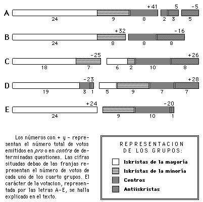

V. I. LENINUN PASO
|
|
NOTA DEL EDITOR
|
I | ||
|
a) |
PREPARACION DEL CONGRESO |
1 |
|
b) |
SIGNIFICACION DE LOS AGRUPAMIENTOS EN EL CON- |
|
|
c) |
COMIENZA EL CONGRESO. INCIDENTE CON EL COMITE |
|
|
d) |
DISOLUCION DEL GRUPO "IUZHNI RABOCHI" |
21 |
|
e) |
EL INCIDENTE DE LA IGUALDAD DE DERECHOS DE LAS |
|
|
f) |
EL PROGRAMA AGRARIO |
36 |
|
g) |
LOS ESTATUTOS DEL PARTIDO. PROYECTO DEL CAMA- |
|
|
h) |
DISCUSION SOBRE EL CENTRALISMO ANTES DE LA |
|
|
i) |
ARTICULO PRIMERO DE LOS ESTATUTOS |
64 |
|
j) |
VICTIMAS INOCENTES DE UNA FALSA ACUSACION DE |
|
|
k) |
CONTINUA LA DISCUSION SOBRE LOS ESTATUTOS. |
|
|
l) |
TERMINA LA DISCUSION SOBRE LOS ESTATUTOS LA |
|
|
ll) |
LAS ELECCIONES. FINAL DEL CONGRESO |
137 |
|
m) |
CUADRO GENERAL DE LA LUCHA EN EL CONGRESO EL |
|
|
n) |
DESPUES DEL CONGRESO. DOS METODOS DE LUCHA |
191 |
|
ñ) |
PEQUEñOS DISGUSTOS NO DEBEN EMPAZAR UN GRAN |
|
|
o) |
LA NUEVA ISKRA. EL OPORTUNISMO EN LAS CUES- |
|
|
p) |
ALGO SOBRE LA DIALECTICA. DOS REVOLUCIONES |
272 |
|
ANEXO. EL INCIDENTE DEL CAMARADA GUSIEV CON EL |
| |
|
292 | ||
pág. I
En toda lucha larga, tenaz y apasionada, comienzan a diseñarse generalmente, al cabo de cierto tiempo, los puntos de divergencia centrales, básicos, de cuya solución depende el desenlace definitivo de la campaña y, en comparación con los cuales, pasan cada vez más a segundo plano todos y toda clase de pequeños y mezquinos episodios de la lucha.
Esto es lo que sucede también con la lucha que se desarrolla en el seno de nuestro Partido y que hace ya seis meses tiene concentrada sobre sí la atención de todos los miembros del Partido. Y precisamente porque en el esbozo de toda la lucha que ofrezco al lector he tenido que referirme a muchas pequeñeces, que tienen un interés insignificante, a muchas querellas que, en el fondo, no tienen interés alguno, precisamente por ello quisiera, desde el comienzo mismo, ílamar la atención del lector sobre dos puntos verdaderamente centrales y básicos que presentan un interés enorme, que tienen indudable valor histórico y constituyen las cuestiones políticas más urgentes en el orten del día de nuestro Partido.
La primera de estas cuestiones es la de la significación política de la división de nuestro Partido en "mayoría" y "minoría", división que ha tomado forma en el II Congreso del Partido y que ha dejado muy atrás todas las anteriores divisiones de los socialdemócratas rusos.
pág. II
La segunda cuestión es la del valor de principio de la posición de la nueva Iskra en las cuestiones de organización, en tanto en cuanto esta posición es efectivamente de principios.
La primera cuestión es la del punto inicial de nuestra lucha en el Partido, la cuestión acerca de su origen, de sus causas, de su carácter político fundamental. La segunda cuestión es la de los resultados finales de esa lucha, la cuestión acerca de su término, del total que, en el terreno de los principios, resulta si se suma todo lo que se refiere a la esfera de los principios y se resta todo lo que se refiere a la esfera de las querellas. La primera cuestión se resuelve analizando la lucha que ha tenido lugar en el Congreso del Partido; la segunda, analizando el nuevo contenido de principio de la nueva Iskra. Uno y otro análisis, contenido de las nueve décimas partes de mi folleto, llevan a la conclusión de que la "mayoría" es el ala revolucionaria de nuestro Partido, y la "minoría" es su ala oportunista. Las discrepancias que separan a un ala de la otra en el presente, se reducen, principalmente, no a cuestiones de programa y de táctica, sino sólo a cuestiones de organización; el nuevo sistema de concepciones que se dibuja en la nueva Iskra con tanta mayor claridad cuanto más procura ahondar su posición y cuanto más limpia va quedando dicha posición de querellas por la cooptación, es el oportunismo en las cuestiones de organización.
El principal defecto de la literatura con que ahora contamos sobre la crisis de nuestro Partido, en el terreno del estudio e ilustración de los hechos, es la falta casi total de un análisis de las actas del Congreso del Partido, y, en el terreno del esclarecimiento de los principios fundamentales del problema de organización, la falta de un análisis del nexo que indudablemente existe entre el error fundamental cometido por el camarada Mártov y el camarada Axelrod al formular
pág. III
el artículo primero de los estatutos y al defender esta fórmula, por una parte, y todo el "sistema" (si es que puede hablarse en este caso de sistema) de las concepciones de principio que ahora tiene Iskra sobre el problema de organización. La actual redacción de Iskra ni siquiera advierte, por lo visto, este nexo, aun cuando en las publicaciones de la "mayoría" se ha señalado ya muchisimas veces la importancia de las discusiones sobre el artículo primero. En el fondo, el camarada Axelrod y el camarada Mártov no hacen ahora sino ahondar, desarrollar y extender el error inicial respecto al artículo primero. En el fondo, ya en las discusiones habidas con respecto al artículo primero comenzó a despuntar toda la posición de los oportunistas en el problema de organización: su defensa de una organización del Partido difusa y no fuertemente cimentada, su hostilidad a la idea (a la idea "burocrática") de estructurar el Partido de arriba abajo, a base del Congreso del Partido y de los organismos por él creados; su tendencia a ir de abajo arriba, permitiendo considerarse como miembros del Partido a cualquier profesor, a cualquier estudiante de bachillerato y a "todo huelguista"; su hostilidad al "formalismo" que exija a un miembro del Partido la pertenencia a una de las organizaciones reconocidas por éste; su propensión a la psicologia de intelectual burgués, dispuesto tan sólo a "reconocer platónicamente las relaciones de organización"; la facilidad con que se entregan a elucubraciones oportunistas y a frases anárquicas; su tendencia al autonomismo en contra del centralismo; en una palabra, todo lo que florece ahora exuberantemente en la nueva Iskra, contribuyendo cada vez más a una palmaria y completa aclaración del error cometido en un principio.
Por lo que se refiere a las actas del Congreso del Partido, la verdaderamente inmerecida falta de atención de que son
pág. IV
objeto, sólo puede explicarse-por las querellas que encizañan nuestras discusiones y además, probablemente, por el exceso de verdades demasiado amárgas que contienen esas actas. Las actas del Congreso del Partido brindan un cuadro único en su género, insustituible por lo exacto, lo pleno, lo polifacético, lo rico y lo auténtico, un cuadro de la verdadera situación de nuestro Partido, un cuadro de los puntos de vista, de los estados de ánimo y de los planes trazados por los mismos hombres que participan en el movimiento, un cuadro de los matices políticos existentes en nuestro Partido, que permite ver su fuerza correlativa, sus relaciones mutuas y su lucha. Precisamente las actas del Congreso del Partido, y sólo ellas, son las que nos permiten ver hasta qué punto hemos conseguido barrer realménte todos los restos de las viejas relaciones, puramente de círculos, y sustituirlas por una grande y única conexión del Partido. Todo miembro del Partido que quiera participar conscientemente en los asuntos de su Partido está obligado a es tudiar de manera minuciosa nuestro Congreso, y repito: a estutiar, porque la mera lectura del montón de materiales en crudo, como son las actas, no bastan para dar el cuadro del Congreso. Sólo por un estudio minucioso y personal pue de conseguirse (y debe conseguirse) que los breves resúmenes de los discursos, notas escuetas sobre las discusiones, pequeñas escaramuzas por pequeñas (pequeñas al parecer) cuestiones se fundan en algo que sea un todo, para que los miembros del Partido vean surgir como viva la~figura de cada orador destacado y quede clara toda la fisonomía política de cada gNpO de delegados del Congreso. El que escribe estas líneas no ha trabajado en vano si consigue aunque sea impulsar hacia un estudio amplio y personal de las actas del Congreso del Partido.
pág. V
Unas palabras más, para los adversarios de la socialdemocracia. Con muecas de alegría maligna siguen nuestras discusione; procurarán, naturalmente, entresacar para sus fines algunos pasajes aislados de mi folleto, consagrado a los defectos y deficiencias de nuestro Partido. Los socialdemócratas rusos están ya lo bastante fogueados en el combate para no dejarse turbar por semejantes alfilerazos y para continuar, pese a ellos, su labor de autocrítica, poniendo despiadadamente al descubierto sus propias deficiencias, que de un modo necesario e inevitable serán enmendadas por el desarrollo del movimiento obrero. ¡Y que ensayen los señores adversarios a describirnos un cuadro de la situación efectiva de sus "partidos" que se parezca aunque sea de lejos al que brindan las actas de nuestro II Congreso!
N. Lenin
Mayo de 1904
pág. 1
Se dice que, en un plazo de veinticuatro horas, todo el mundo tiene el terecho de maldecir a sus jueces. El Congreso de nuestra Partido, como todo congreso de cualquier otro partido, ha sido también juez de algunas persanas que aspiraban al puesto de dirigentes y han sufrido un fracaso. Y ahora estos representantes de la "minoría", con una candidez enternecedora, "maldicen a sus jueces" y tratan por todos los medios de desacreditar el Congreso, de aminorar su importancia y su autoridad. Con especial relieve se ha manifestado esta tendencia en un artículo de Práctico[2] en el núm. 57 de Iskra, en el que se indigna ante la idea de la soberana "divinidad" del Congreso. Vemos aquí un rasgo tan característico de la nueva Iskra, que no es posible pasarlo en silencio. La redacción, compuesta en su mayoría por personas rechazadas por el Congreso, continúa, por una parte, titulándose redacción "del Partido" y, por otra, abre sus brazos a aquellos que dicen que el Congreso no es una divinidad. Muy bonito, ¿verdad? Sí, señores, el Congreso, desde luego, no es una divinidad; pero ¿qué debemos pensar de quienes empiezan a "denigrar" el Congreso después de haber sufrido en él una dertota?
Recordemos, en efecto, los principales hechos de la historia de la preparación del Congreso.
pág. 2
Desde el primer momento, en su anuncio de Igoo, que precedió a la salida del periódico, Iskra declaró que, antes de unificarnos, hacía falta deslindar nuestros campos. Iskra procuró convertir la Conferencia de 1902[3] en una reunión privada y no en un Congreso del Partido[*]. Iskra procedió con extraordinario cuidado en el verano y otoño de 1902, al renovar el Comité de Organización elegido por aquella Conferencia. Por fin, terminó la labor de deslindamiento, y terminó con forme todos nosotros reconocimos. El Comité de Organización se constituyo a fines de 1902. Iskra celebró su afianzamiento y declaró -- en el artículo de fondo del núm. 32 -- que la convocatoria de un Congreso del Partido era la necesidad más imperiosa y urgente[**]. De modo que lo que menos se nos puéde reprochar es precipitación en la convocatoria del II Congreso. Precisamente nos atuvimos a la regla: mídelo siete veces y córtalo una; teníamos pleno derecho moral a esperar de los camaradas que, después de cortar, no serían ellos los que se lamentaran y volvieran a medir.
El Comité de Organización elaboró para el II Congreso unos estatutos extraordinariamente minuciosos (formalistas y burocráticos, dirían ahora los que encubren con estas palabrejas su falta de carácter en materia política), hizo que fue sen adoptados por todos los comités y, por último, los aprobó, disponiendo, entre otras cosas, en el artículo 18: "Todas las resoluciones del Congreso y todas las elecciones que en él tienen lugar son decisiones del Partido, obligatorias para todas sus organizaciones. Nadie, bajo pretexto alguno, puede protestar contra ellas, y sólo el siguiente Congreso del Par-
pág. 3
tido puede anularlas o modificarlas"[*]. ¡En verdad que son inocentes en sí mismas estas palabras, tácitamente aceptadas entonces, como algo que se sobreentiende, y que ahora tiene un sonido tan extraño, como una sentencia pronunciada contra la "minoría"! ¿Con qué objeto se escribió este artículo? ¿Por pura fórmula? Claro que no. Esa disposición parecía imprescindible, y era, en efecto, imprescindible, porque el Partido se componía de una serie de grupos dispersos y autónomos, de los que podía esperarse que no reconocieran el Congreso. Esa disposición expresaba precisamente la buena voluntad de todos los revolucionarios (de la que con tanta frecuencia y tan poca oportunidad se habla ahora, calificando de bueno, con un eufemismo, lo que más bien merecía el epíteto de caprichoso). Equivalía a una palabra de honor recíproca que empeñaban todos los socialdemócratas rusos. Debía garantizar que no serían vanos los gigantescos esfuerzos, los peligros y gastos relacionados con el Congreso, que éste no se convertiría en una comedia Calificaba de antemano de falta de lealtad todo acto que signifique no reconocer las decisiones y las elecciones del Congreso.
¿De quién se ríe, pues, la nueva Iskra, al hacer el nuevo descubrimiento de que el Congreso no es una divinidad y sus decisíones no son sagradas? ¿Contiene este descubrimiento "un nuevo punto de vista sobre los problemas de organización" o tan sólo nuevos intentos de borrar viejas huellas?
pág. 4
Por tanto, el Congreso fue convocado después de la preparación más minuciosa, teniendo como base el principio de plena representación en su forma superior. El presidente, después de constituido el Congreso (pág. 54 de las actas), declaró también que todos reconocían que el Congreso tenía una composición justa y sus decisiones eran absolutamente obligatorias.
¿Cuál era, pues, la principal tarea del Congreso? Crear un partido efectivo, sobre las bases de principio y de organización propuestas y elaboradas por Iskra. Tres años de actividad de Iskra, aprobada por la mayoría de los comités, habían decidido de antemano que aquélla debía ser precisamente la dirección en que debía trabajar el Congreso. El programa y la orientación de Iskra debían convertirse en el programa y la orientación del Partido, los planes de organización de Iskra debían quedar afianzados en los estatutos de organización del Partido. Pero de suyo se comprende que semejante resultado no podía conseguirse sin lucha: la plenitud de representación en el Congreso aseguraba la presencia en él también de organizaciones que sostenían contra Iskra una lucha decidida (Bund y "Rabócheie Dielo"), y de otras que, reconociendo de palabra a Iskra como órgano directivo, perseguían en la práctica sus planes especiales y se
pág. 5
distinguían por su falta de firmeza en el terreno de los principios (el grupo "Iuzhni Rabochi" y los delegados de algunos comités adheridos a él-). En semejantes condiciones, el Congreso no podía menos de convertirse en campo de lucha por la victoria de la orientación iskrista. Todo el que lea con un poco de atención las actas del Congreso, verá en seguida que, efectivamente, fue campo de esta lucha. Y nuestra misión ahora consiste en estudiar detalladamente los agrupamientos principales que, con motivo de diversas cuestiónes, se han señalado en el Congreso, y reconstruir, con los datos exactos de las actas, la fisonomía política de cada uno de los grupos fundamentales del Congreso. ¿Qué eran realmente los grupos, tendencias y matices que debían fundirse en el Congreso, bajo la dirección de Iskra, en un partido único? Esto es lo que debemos demostrar, analizando los debates y las votaciones. La aclaración de este punto es también de cardinal importancia para estudiar lo que son en realidad nuestros socialdemócratas, así como para comprender las causas de la divergencia. Por esto es por lo que tanto en mi discurso ante el Congreso de la Liga, como en mi carta a la redacción de la nueva Iskra, ponía precisamente en primer plano el análisis de los diversos agrupamientos. Mis adversarios de la "minoría" (con Mártov al frente) no comprendieron en absoluto el fondo del problema. En el Congreso de la Liga se limitaron a enmiendas parciales, "justificándose" de la acusación de viraje hacia el oportunismo de que se les había hecho objeto, sin intentar siquiera trazar, en contraposición al mío, un cuadro algo distinto de los agrupamientos en el Congreso. Ahora, en Iskra (n. 56), Mártov trata de presentar como simple "politiquería de círculos" todos los intentos de delimitar exactamente los diversos grupos políticos del Congreso. ¡Son palabras muy fuertes, camarada Mártov! Pe-
pág. 6
ro las palabras fuertes de la nueva Iskra tienen una propiedad original: basta reproducir exactamente todas las peripecias de la divergencia, empezando por el Congreso, y veremos que todas esas palabras fuertes se vuelven, plenamente y sobre todo, contra la redacción actual. ¡Miraos a vosotros mismos, señores que os llamáis redactores del Partido, y que planteáis la cuestión de la politiquería de círculos!
Todo lo acontecido durante nuestra lucha en el Congreso molesta ahora tanto a Mártov, que procura velarlo por completo. "Iskrista -- dice -- es quien, en el Congreso del Partido y antes de él, ha declarado que se solidariza plenamente con Iskra, ha defendido su programa y sus puntos de vista en materia de organización y ha apoyado su política en este terreno. En el Congreso hubo más de cuarenta iskristas de este tipo y ése fue el número de votos favorables al programa de Iskra y por la resolución reconociendo a Iskra órgano central del Partido." Hojead las actas del Congreso y veréis que el programa fue aceptado por todos (pág. 233), menos por Akímov, que se abstuvo. ¡Con esas palabras, el camara da Mártov quiere asegurarnos que tanto los bundistas, como Brúker y Martínov, han demostrado su "plena solidaridad" con Iskra y defendido sus puntos de vista en materia de organización! Esto es ridículo. El hecho de que, después del Congreso, todos los que en él tomaron parte se hayan convertido en miembros del Pártido, con iguales derechos (y aún no todos, porque los bundistas se retiraron), se confunde aquí con aquellos grupos que provocaron la lucha en el Congreso. En lugar de estudiar cuáles fueren los elementos que después del Congreso formaron la "mayoría" y la "minoría", se hace una frase oficial: ¡han aceptado el programa!
Ved la votación para reconocer a Iskra como órgano central. Veréis que Martínov, a quien el camarada Mártov, con
pág. 7
valor digno de mejor causa, atribuye ahora la defensa de los puntos de vista y de la política de Iskra en materia de organización, es quien precisamente insiste en que se distingan dos partes en la resolución: el mero reconocimiento de Iskra cómo órgano central y el reconocimiento de sus méritos. Cuando se vota la primera parte de la resolución (en que se reconoce los méritos de Iskra, y se expresa la solidaridad con ella), hay sólo 35 votos en favor, dos en contra (Akímov y Brúker) y once abstenciones (Martínov, los cinco bundistas y los cinco votos de la Redacción, los dos míos, los dos de Mártov y el de Plejánov). Por consiguiente, el grupo de antiiskristas (cinco bundistas y tres de "Rabócheie Dielo") se destaca con toda claridad también aquí, en este ejemplo, el más favorable para el punto de vista actual de Mártov, ejemplo que él mismo ha elegido. Ved la votación de la segunda parte de la resolución, por la que se reconoce a Iskra como órgano central, sin dar motivo alguno y sin expresar solidaridad (pág. 147 de las actas): 44 votos en favor, que el actual Mártov clasifica como iskristas. En total hubo 51 votos; restan do las cinco abstenciones de los redactores, quedan 46; hubo dos votos en contra (Akímov y Brúker); todos los cinco bundistas entran, por tanto, en el número de los 44 restantes. De modo que los bundistas, en el Congreso, "expresaron su completa solidaridad con Iskra". ¡Así se escribe la historia oficial por la Iskra oficial! Adelantándonos al relato, explicaremos al lector los verdáderos motivos de esta verdad oficial: la actual redacción de Iskra podría ser y sería, en realidad, redacción del Partido (y 40 seudo-redacción del Partido, como ahora), si no se hubieran retirado del Congreso los bundistas y los rabócheiedielistas ". Por esta razón hubo que convertir en "iskristas" a estos fieles guárdiancs de la actual
pág. 8
redacción, sedicente redacción del Partido. Pero ya hablaremos detalladamente de esto más adelante.
Luego cabe-preguntar: si el Congreso era una lucha de elementos iskristas y antiiskristas, ¿no habría elementos intermedios, vacilantes, que oscilaran entre unos y otros? Todo el que conozca algo nuestro Partido y la fisonomía habitual de todos los congresos se inclinará, ya a priori, a contestar a esta pregunta afirmativamente. El camarada Mártov no siente ahora el menor deseo dé acordarse de estos elementos vacilantes y describe el grupo de "Iuzhni Rabochi", con los delegados que tienden hacia él, como iskristas típicos, presentando las discrepancias que nos separan de ellos como insignificantes y sin importancia. Felizmente, tenemos ahora ante nosotros el texto completo de-las actas, y podemos resolver este problema -- el probléma de los hechos, claro está -- a base de datos documentales, Lo que hemos dicho más arriba, sobre el agrupamiento general en el Congreso, no pretende, naturalmente, resolver este problema, sino sólo plantearlo de un modo acertado.
Sin analizar los agrupamientos políticos, sin trazar un cuadro del Congreso como lucha de determinados matices, nuestras divergencias son totalmente incomprensibles. Cuando Mártov intenta escamotear las diferencias de matiz, incluyendo hasta a los bundistas entre los iskristas, no hace más que esquivar la cuestión. Ya a priori, a base de la historia de la socialdemocracia rusa antes del Congreso, se observan (para su ulterior estudio y detallada comprobación) tres grupos principales: iskristas, andiskristas y elementos inconstantes, vacilantes, inestables.
pág. 9
Como mejor se hará el análisis de los debates y votaciones del Congreso será siguiendo el orden de las sesiones del mismo, a fin de ir consignando consecutivamente los matices políticos que en él se iban señalando cada vez más. Sólo cuando sea absolutamente necesario nos apartaremos del orden cronológico para examinar en conjunto problemas que guarden estrecha relación entre sí o agrupamientos homogéneos. En aras de la imparcialidad, trataremos de señalar todas las votaciones más importantes, dejando de lado, naturalmente, numerosos casos en que se votaron menudencias, que se llevaron en nuestro Congreso una cantidad exorbitante de tiempo (parte, por nuestra inexperiencia y porque no supimos distribuir el material entre las reuniones de comisiones y las sesiones plenarias, y parte, por dilaciones rayanas en la obstrucción).
La primera cuestión que suscitó debates en que empezaron a marcarse los diferentes matices, fue, si debía figurar en primer lugar, (en el "orden del día" del Congreso) la del punto siguiente: "situación del Bund en el Partido" (págs. 29-33 de las actas). Desde el punto de vista iskrista, que defendíamos Plejánov, Mártov, Trotski y yo, no podía haber ningún género de dudas a este respecto. La salida del Bund del Partido demostró palpablemente la justeza de nuestras
pág. 10
consideraciones: si el Bund no quería ir con nosotros ni reconocer los principios de organización que con Iskra compartía la mayoría del Partido, era inútil y absurdo "hacer como si" fuéramos juntos y prolongar sólo el Congreso (como lo prolongaban los bundistas). La cuestión estaba ya plenamente aclarada en las publicaciones, y para todo miembro del Partido que reflexionara algo era evidente que sólo cabía plantear francamente la cuestión y elegir de una manera directa y honrada entre la autonomía (vamos juntos) y la federación (nos separamos).
Con toda su política de evasivas, también aquí quisieron los bundistas eludir el problema, aplazándolo. Se les unió el camarada Akímov, que en seguida, por lo visto en nombre de todos los partidarios de "Rabócheie Dielo", planteó las discrepancias con Iskra en materia de organización (pág. 31 de las actas). Al lado del Bund y de "Rabócheie Dielo" se coloca Májov (¡dos votos del Comité de Nikoláiev, que hacía poco había expresado su solidaridad con Iskrar! ). El camarada Májov no comprende nada del problema; él considera también "punto flaco" "la cuestión del régimen democrático o, por el contrario [¡fijaos en esto!], del centralismo", lo mismo que la mayoría de nuestra actual redacción "del Par tido", ¡que no ha visto todavía en el Congreso este "punto flaco"!
De modo que contra los iskristas están: El Bund, "Rabócheie Dielo" y el camarada Májov, que tienen juntos precisamente los diez votos que hubo contra nosotros (pág. 33). En favor nuestro hubo treínta votos, cifra alrededor de la cual, como veremos más adelante, oscilan con frecuencia los votos de los iskristas. Hubo 11 abstenciones de los que, por lo visto, no se inclinaban por ninguno de los dos "partidos" en lucha. Es interesante observar que, cuando votamos el artí-
pág. 11
culo 2 de los estatutos del Bund (artículo que, al ser rechazado, provocó la salida del Bund del Partido), los votos a favor del artículo 2 y las abstenciones sumaron también diez (pág. 289 de las actas), absteniéndose precisamente los tres de "Rabócheie Dielo" (Brúker, Martínov y Akímov) y el camarada Májov. Es evidente que la votación sobre el lugar que correspondía al problema del Bund había dado un agrupamiento que no era casual. Es evidente que todos estos camaradas disentían de Iskra, no sólo en una cuestión técnica, en ei orden de examen de las cuestiones, sino también en el fondo. Por lo que se refiere a "Rabócheie Dielo", todo el mundo ve claramente la divergencia de fondo, y el camarada Májov definió de un modo magistral su actitud en el discurso que pronunció con motivo de la retirada del Bund, (págs. 289-290 de las actas). Vale la pena detenerse en este discurso. El camarada Májov dice que, después de la resolución que rechazó la federación, "la situación del Bund en el P.O.S.D.R., de problema de principio, se ha convertido para él en problema de la política real con respecto a una organización nacional históricamente constituida; aquí, -- continúa el orador --, no hubiera podido dejar de tener en cuenta todas las consecuencias que pudieran resultar de nuestra votación y por ello hubiera votado por el punto dos en su totalidad". El camarada Májov ha asimilado perfectamente el espíritu de la "política real": ¡en principio ha rechazado ya la federación y por eso, en la práctica, hubiera votado un punto de los estatutos que sería una aplicación de esta misma federación! Y este camarada "práctico" explica su posición, basada en profundos principios, con las palabras siguientes: "Pero [¡el famoso "pero" de Schedrín] como cualquier votación mía sólo tenía un carácter de principio [¡!] y no podía tener carácter práctico, debido a la casi completa unanimidad
pág. 12
de los demás miembros del Congreso, preferí abstenerme para señalar una diferencia de principios". . .[¡líbrenos Dios de semejante apego a los principios!]. . . "entre mi posición en este caso y la posición que propugnaban los delegados del Bund que votaron a favor del punto. Por el contrario, hubiera votado a favor de ese punto si los delegados del Bund se hubieran abstenido de votar, cosa en la que insistían anteriormente". ¡Entiéndalo quien pueda! Un hombre de principios se abstiene de decir bien alto que sí, porque ello es prácticamente inútil cuando todos dicen que no.
Después de votar el lugar que correspondía al problema del Bund, surgió en el Congreso la cuestión del grupo "Borbá" que produjo también un agrupamiento extraordinariamente interesante y estaba estrechamente relacionada con el problema más "agudo" del Congreso, el de la composición de los organismos centrales. La comisión encargada de determinar la composición del Congreso, opina que no debe invitarse al grupo "Borbá", según la decisión reiterada del Comité de Organización (v. págs. 383 y 375 de las actas) y el informe de sus representantes en la comisión (pág. 35).
El camarada Iegórov, miembro del Comité de Organización, declara que "el problema del grupo 'Borbá' [observad que dice del grupo "Borbá", y no de tal o cual miembro] es para él cosa nueva", y pide que se suspenda la sesión. Es un misterio cómo es posible que un problema sobre el que han recaído dos decisiones del Comité de Organización pueda ser cosa nueva para uno de sus miembros. Se suspende la sesión y se reúne el Comité de Organización (pág 40 de las actas), asistiendo aquellos de sus miembros que por casualidad se encuentran en el Congreso (estaban ausentes unos cuantos miembros del Comité de Organización, de los viejos
pág. 13
miembros de la organización de Iskra)[*]. Comienzan los de bates sobre "Borbá". Están en favor los rabócheiedielistas (Martínov, Akímov y Brúker, págs. 36-38); en contra, los iskristas (Pavlóvich, Sorokin, Langue[5], Trotski, Mártov y otros). Nuevamente se establece en el Congreso la división en grupos que ya conocemos. Con motivo de "Borbá" se empeña una lucha obstinada, y el camarada Mártov pronuncia un discurso particularmente detallado (pág. 38) y "combativo", en el que alude con razón a la "desigualdad de representación" de los grupos rusos y del extranjero, habla de que no estaría del todo "bien" conceder a un grupo del extranjero un "privilegio" (¡palabras de oro, especialmente instructivas, ahora, desde el punto de vista de lo que ha sucedido después del Congreso!), que no debía fomentarse "en el Partido el caos de organización, manifestación característica del cual era una fragmentación no originada por ninguna consideración de principio" (¡tiro directo. . . a la "minoría" del Congreso de nuestro Partido!). Nadie, fuera de los partidarios de "Rabócheie Dielo", se puso franca y razonadamente al lado del grupo "Borbá" hasta el momento de cerrarse la hoja de inscripción de oradores (pág. 40): hay que hacer justicia al camarada Akímov y a sus amigos, porque ellos, por lo menos, no anduvieron con ambages y rodeos, sino que siguieron abiertamente su línea y dijeron francamente lo que querían.
Después de cerrada la lista de oradores, cuando sobre el fondo de la cuestión ya no se puede hablar, el camarada Iegórov "insiste en que se escuche la resolución que acaba de
pág. 14
tomar el Comité de Organización". No es de extrañar que los miembros del Congreso se muestren indignados ante semejante proceder, y el camarada Plejánov, como presidente, expresa su "asombro ante el hecho de que el camarada Iegórov insista en su exigencia". Porque una de dos: o había que hablar franca y precisamente sobre el fondo de la cuestión ante todo el Congreso, o no había que hablar en absoluto. ¡Pero dejar que se cerrara la lista de oradores y después, como "palabras de resumen", presentar al Congreso una nueva resolución del Comité de Organización, precisamente sobre el problema de que se trataba, era un golpe a traición!
La sesión se reanuda después del almuerzo, y el Buró, que sigue asombrado, decide dejarse de "formalidades" y echar mano del último recurso, que sólo en casos extremos se utiliza en los Congresos, "la explicación entre camaradas". Un representante del Comité de Organización, Popov, comunica el acuerdo del Comité aprobado por todos sus miembros contra uno, Pavlóvich (pág. 43), y por el que se propone al Congreso que invite a Riasánov.
Pavlóvich declara que él había negado y seguía negando legitimidad a la reunión del Comité de Organización, y que el nuevo acuerdo del citado Comité "está en pugna con el anterior ". Esta declaración produce una verdadera tempestad. El camarada Iegórov, también miembro del Comité de Organización y del grupo "Iuzhni Rabochi", elude en su respuesta el fondo de la cuestión y quiere trasladar el centro de gravedad a la cuestión de disciplina. Como si el camarada Pavlóvich quebrantara la disciplina del Partido (!), porque el Comité de Organización, después de examinar la protesta de aquél, había acordado "no poner en conocimiento del Congreso la opinión particular de Pavlóvich". Se pasa a discutir
pág. 15
el problema de la disciplina del Partido y Plejánov explica en forma didáctica al camarada Iegórov, entre ruidosos aplausos del Congreso, que "nosotros no tenemos mandatos imperativos " (pág. 42. Cfr. pág. 379, reglamento del Congreso, artículo 7: "Los delegados no tendrán limitados sus poderes por mandatos imperativos. Serán plenamente libres e independientes en el ejercicio de sus poderes"). "El Congreso es la instancia suprema del Partido" y, por tanto, falta a la disciplina del Partido y al reglamento del Congreso precisamente todo el que en cualquier forma ponga obstáculos a que cualquiera de los delegados apele, directamente ante el Congreso, sobre todas las cuestiones de la vida del Partido, sin excepción alguna. El problema en discusión se reduce de este modo a un dilema: ¿el espíritu de corrillo o el espíritu de Partido? O se limitan los derechos de los delegados del Congreso, en virtud de imaginarios derechos o estatutos de toda suerte de comisiones y corrillos, o se disuelven totalmente antes del Congreso, y no sólo de palabra, sino de hecho, todas las instancias inferiores y los viejos grupitos, hasta que se creen verdaderas instituciones funcionales del Partido. Ya por esto puede ver el lector qué enorme importancia de principio tenía esta discusión al comienzo mismo (tercera sesión) de un congreso que se planteaba como finalidad restaurar de hecho el Partido. En esta discusión se concentraba, por decirlo así, el conflicto entre los antiguos corrillos y grupitos (como "Iuzhni Rabochi") y el Partido que renacía. Y los grupos antiiskristas salen en seguida a la superficie: tanto el bundista Abramson, como el camarada Martínov, ardiente partidario de la actual redacción de Iskra, y el camarada Májov, a quien también conocemos, todos ellos se declaran a favor de Iegórov y del grupo de "Iuzhni Rabochi", en contra
pág. 16
de Pavlóvich. El camarada Martínov, que ahora, a porfía con Mártov y Axelrod, hace gala de "democratismo" en materia de organización, recuerda hasta. . . ¡¡el ejército, donde sólo se puede apelar a la instancia superior por mediación de la inferior!! Todo el que asistía al Congreso o había seguido atentamente la historia interna de nuestro Partido antes de su celebración, comprendía claramente el verdadero sentido de esta "compacta" oposición antiiskrista. La tarea de la oposición (quizá todos sus representantes no siempre se percataran de ello, y a veces lo sostuvieran por inercia) consistía en salvaguardar la independencia, el particularismo, los intereses de capilla de los pequeños grupos, para que no se los tragara un partido amplio, que se venía estructurando a base de los principios iskristas.
Tal es precisamente el punto de vista que, respecto a esta cuestión, adoptó también el camarada Mártov, que por entonces aún no se había unido a Martínov. El camarada Mártov se alza decididamente, y se alza con razón, contra aquellos cuya "idea de la disciplina de partido no va más allá de las obligaciones de un revolucionario respecto al grupo de orden inferior del que forma parte". "En el seno de un partido único no es admisible ningún agrupamiento forzoso " (subrayado por Mártov), explica Mártov a los defensores de los corrillos, sin prever cómo fustigan estas palabras su propia conducta política en las últimas sesiones del Congreso y después de él. . . El agrupamiento forzoso no es admisible para el Comité de Organización, pero es plenamente admisible para la redacción. Mártov condena el agrupamiento forzoso mientras lo mira desde el organismo central, pero lo defiende en cuanto deja de satisfacerle la composición de este organismo central. . .
pág. 17
Es interesante observar el hecho de que en su discurso, además del "enorme error" del camarada Iegórov, subraya el camarada Mártov especialmente la inestabilidad política de que ha dado prueba el Comité de Organización. "En nombre del Comité de Organización -- se indigna Mártov con razón --, se ha hecho una proposición que contradice al informe de la comisión [fundado, añadámoslo nosotros, en el informe de los miembros del Comité de Organización: pág. 43, palabras de Koltzov] y a las proposiciones anteriores del Comité de Organización " (subrayado por mí). Como veis, Mártov comprendía perfectamente entonces, antes de su "viraje", que el sustituir el grupo "Borbá" por Riasánov nada quita de la completa contradicción y falta de firmeza de la actuación del Comité de Organización (por las actas del Congreso de la Liga, pág. 57, podrán ver los miembros del Partido el punto de vista de Mártov después de su viraje). No se limitó entonces Mártov a examinar el problema de la disciplina, sino que preguntó, además, directamente al Comité de Organización: "¿qué ha sucedido para que sea necesaria esa refundición?" (subrayado por mí). Porque, en efecto, el Comité de Organización, al hacer su proposición, no tuvo ni siquiera el suficiente valor de defender francamente su opinión, como la defendieron Akímov y otros. Mártov niega esto (actas de la Liga, pág. 56), pero quien lea las actas del Congreso verá que Mártov se equivoca. Popov, al hacer la proposición en nombre del Comité de Organización, no dice ni una palabra de razones (pág. 41 de las actas del Congreso del Partido). Iegórov traslada la discusión al punto sobre la disciplina, pero, sobre el fondo de la cuestión, sólo dice "El Comité de Organización podía tener nuevas consideraciones" . . . [pero no se sabe si las tenía, ni de qué conside-
pág. 18
raciones se trata] . . . "ha podido olvidarse de inscribir a alguien, etc.". [Este "etc." es la única salvación del orador, porque el Comité de Organización no pudo olvidarse de la cuestión del grupo "Borbá", que había examinado dos veces antes del Congreso y una vez ante la comisión]. "El Comité de Organización no ha aprobado este acuerdo porque haya cambiado de actitud respecto al grupo 'Borbá', sino porque quiere quitar piedras sobrantes del camino de la futura organización central del Partido, en los primeros pasos de su actuación". Esto no es dar razones, sino eludirlas. Todo socialdemócrata sincero (y nosotros no ponemos ni aun en duda la sinceridad de ninguno de los participantes en el Congreso) se preocupa de apartar todo lo que él considera escollo, de apartarlo por los procedimientos que él reconoce adecuados. Dar razones significa explicar y decir exactamente la opinión de uno sobre las cosas y no salir del paso con una perogrullada. Y no se hubieran podido dar razones sin "cambiar de actitud respecto al grupo 'Borbá'", porque las anteriores decisiones contradictorias del Comité de Organización trataban también de apartar escollos, pero veían estos "es collos" precisamente en lo contrario. El camarada Mártov ataca precisamente con extraordinaria dureza y con muchísima razón este argumento, calificándolo de "fútil " y debido al deseo de "excusarse " y aconsejando al Comité de Organización que "no tema al qué dirán ". Con estas palabras definía el camarada Mártov perfectamente el fondo y el sentido de un matiz político que ha desempeñado en el Congreso un papel importantísimo y que se distingue precisamente por la falta de independencia, la mezquindad, la falta de línea propia,el temor al qué dirán, la eterna vacilación entre las dos partes determinadas, el temor a exponer abiertamente su
pág. 19
credo ; en una palabra, por todas las características de la "charca"[*].
Esta falta de carácter, en política, de un grupo inconstante condujo, entre otras cosas, a que nadie a éxcepción del bundista Iudin (pág. 53), presentara al Congreso una resolución para invitar a uno de los miembros del grupo "Borbá". La resolución de Iudin obtuvo cinco votos a favor, pot lo visto, de todos los bundistas: ¡los elementos vacilantes volvian a dar otro bandazol El contingente aproximado de votos del grupo del centro se vio en las votaciones de las resoluciones de Koltzov y de Iudin sobre este punto: la resolución del iskrista obtuvo 32 votos (pág. 47) y la del bundista I6, es decir, además de los ocho votos antiiskristas, tuvieron los dos votos del camarada Májov (pág. 46), los cuatro votos de los miembros del grupo "Iuzhni Rabochi" y otros dos votos más. En seguida demostraremos que en ningún modo puede considerarse esta distribución de votos casual, pero primero expondremos brevemente lo que ahora opina Mártov sobre este incidente con el Comité de Organización. Mártov ha dicho en la Liga que "Pavlóvich y otros atizaron las pasiones". Basta ver las actas del Congreso para convencerse de que fue el mismo Mártov quien pronunció los discursos más detallados, ardientes y duros contra el grupo "Borbá" y el Comité
pág. 20
de Organización. Al tratar de descargar la "culpa" sobre Pavlóvich, lo único que hace es demostrar su falta de firmeza: antes del Congreso eligió precisamente a Pavlóvich séptimo miembro de la redacción y en el Congreso se solidarizó por entero con él (pág. 44) contra Iegórov. Después, sin embargo, cuando ha sido derrotado por Pavlóvich, le acusa de "atizar las pasiones". Esto no pasa de ser ridículo.
En Iskra (núm. 56) Mártov habla con ironía de la importancia que se da a invitar a fulano o zutano. Esta ironía se vuelve de nuevo contra Mártov, porque precisamente el incidente con el Comité de Organización dio origen a una discusión sobre problema tan "importante" como el invitar a fulano o zutano a formar parte del Comité Central o del Organo Central. No está bien eso de medir con dos varas distintas, según se trate del propio "grupo de orden inferior" (respecto al Partido), o de un grupo ajeno. Esto es psicología filistea y de círculos, y no la actitud que el Partido exige ante una cuestión. Lo demuestra suficientemente el simple cotejo del discurso de Mártov en la Liga (pág. 57) con su discurso en el Congreso (pág. 44). "No comprendo -- dijo Mártov, entre otras cosas, en la Liga -- cómo se las arregla la gente para llamarse a toda costa iskristas y al mismo tiempo avergonzarse de serlo". Extraña incomprensión de la diferencia que hay entre "llamarse" y "ser", entre el dicho y el hecho. El mismo Mártov se dijo en el Congreso adversario de los agrupamientos forzosos y después del Congreso fue partidario de ellos.
pág. 21
Quizá pueda parecer obra de la casualidad la forma en que se dividieron los delegados en el problema del Comité de Organización. Pero tal opinión sería errónea, y para eliminarla, nos apartaremos del orden cronológico y examinaremos en seguida un incidente que, aun cuando tuvo lugar al finalizar el Congreso, está íntimamente relacionado con el que acabamos de exponer. Se trata de la disolución del grupo "Iuzhni Rabochi". En contra de las tendencias de Iskra en materia de organización -- plena cohesión de las fuerzas del Partido y eliminación del caos que las fragmentaba -- se levantaron en este caso los intereses de uno de los grupos, cuyo trabajo era útil mientras faltaba un verdadero partido, pero se hizo superfluo al organizarse el trabajo de un modo centralizado. En aras de los intereses de un círculo, el grupo "Iuzhni Rabochi", con no menos derecho que la vieja Iskra, podía pretender que se mantuviera la "continuidad" y su inviolabilidad. En aras de los intereses del Partido, este grupo debía someterse al traslado de sus fuerzas "a las correspondientes organizaciones del Partido" (pág. 313, final de la resolución adoptada por el Congreso). Desde el punto de vista de los intereses de círculo y de la mentalidad pequeñoburguesa, no podía menos de parecer "quisquillosa" (expresión del camarada Rúsov y del camarada Deich) la disolución de
pág. 22
un grupo útil, que tenía tan pocas ganas de disolverse como la vieja redacción de Iskra. Desde el punto de vista de los intereses del Partido, era imprescindible la disolución, "la dilución" (expresión de Gúsiev) en el Partido. El grupo "Iuzhni Rabochi" declaró francamente que "no consideraba necesario" declararse disuelto y exigía que "el Congreso expresara su opinión en forma categórica", y además, "inmediatamente: sí o no". El grupo "Iuzhni Rabochi" invocaba la misma "continuidad" a la que había apelado la vieja redacción de Iskra . . . ¡después de su disolución! "Aunque todos nosotros, tomados cada uno individualmente, constituimos un partido único -- dijo el camarada Iegórov --, este Partido se compone, sin embargo, de toda una serie de organizaciones que es menester tener en cuenta como magnitudes históricas. . . Si una de estas organizaciones no perjudica al Partido, no hay motivo para disolverla ".
De este modo, se planteaba en forma completamente definida una importante cuestión de principio, y todos los iskristas -- mientras no salieron a primer plano los intereses de sus propios círculos -- se levantaron decididos contra los elementos vacilantes (los bundistas y dos de "Rabócheie Dielo" no estaban ya entonces en el Congreso; indudablemente, se hubieran declarado decididos partidarios de "tener en cuenta las magnitudes históricas"). La votación dio 31 votos a favor, cinco en contra y cinco abstenciones (cuatro miembros del grupo "Iuzhni Rabochi" y probablemente Bielov, a juzgar por sus anteriores declaraciones, pág. 308). El grupo de diez votos, tajantemente opuesto al plan de organización consecuente propugnado por Iskra y partidarios de los círculos contra el espíritu de partido, se dibuja con toda precisión. En los debates, los iskristas plantean esta cuestión precisamente desde el punto de vista de los principios (véase el discurso de Lan-
pág. 23
gue, pág. 315), declarándose en contra de los métodos primitivos de trabajo y de la dispersión, negándose a tener en cuenta las "simpatias" de algunas organizaciones y diciendo francamente que "se hubiera conseguido antes la unificación del Partido y el triunfo de los principios programáticos que aquí hemos sancionado, si los camaradas del grupo 'Iuzhni Rabochi' se hubieran atenido antes, hace uno o dos años, a un punto de vista más en consonancia con los principios". En el mismo sentido hablan Orlov, Gúsiev, Liádov, Muraviov, Rúsov, Pavlóvich, Gliébov y Gorin. No sólo no se alzaron los iskristas de la "minoría" contra estas alusiones concretas, que repetidamente se hicieron en el Congreso, a la política y la "linea" del grupo "Iuzhni Rabochi", de Májov y otros, carente de principios, no sólo no hicieron reserva alguna a este respecto, sino que, por el contrario, por boca de Deich, se unieron decididamente a ellos, censurando el "caos" y aplaudiendo el que "planteara francamente la cuestión" (pág. 315) el mismo camarada Rúsov, que en aquella misma sesión tuvo -- ¡qué horror! -- la osadia de "plantear francamente también" el problema de la vieja redacción en el terreno puramente de partido (pág. 325).
En el grupo "Iuzhni Rabochi" el asunto de su disolución produjo una indignación terrible, de la que encontramos huellas también en las actas (no debe olvidarse que las actas no dan más que un pálido reflejo de los debates, pues en lugar de discursos completos no contienen más que extractos y resúmenes muy abreviados). El camarada Iegórov calificó incluso de "mentira" la simple mención del grupo "Rabóchaia Misl"[6] junto con el grupo "Iuzhni Rabochi", ejemplo característico de la actitud que predominaba en el Congreso respecto al economismo consecuente. Incluso mucho después, en la 37 sesión, Iegórov habla de la disolución de "Iuzhni Rabochi"
pág. 24
con profunda irritación (pág. 356), pidiendo que se haga constar en el acta que, cuando se trató de este grupo, no se preguntó a sus miembros acerca de los medios para las ediciones, ni sobre el control del Organo Central y del Comité Central. Durante la discusión sobre el grupo "Iuzhni Rabochi", el camarada Popov alude a la compacta mayoría que pareció decidir de antemano la cuestión acerca de dicho grupo. "Ahora -- dice (pág. 316) --, después de los discursos de los camaradas Gúsiev y Orlov, todo está claro ". El sentido de estas palabras es indudable: ahora, después de que los iskristas han expresado su opinión y han propuesto una resolución, todo está claro, es decir, está claro que el grupo "Iuzhni Rabochi" será disuelto contra su voluntad. El mismo representante del grupo "Iuzhni Rabochi" separa aquí a los iskristas (y, además, a tales como Gúsiev y Orlov) de sus partidarios, considerando que representan "líneas" distintas de política de organización. Y cuando la actual Iskra presenta al grupo "Iuzhni Rabochi" (¿y también probablemente a Májov?) como "iskristas típicos", esto no hace sino probar en forma patente un olvido de los acontecimientos más importantes (desde el punto de vista de este grupo) sucedidos en el Congreso y, por parte de la nueva redacción, un deseo de borrar las huellas para que no se vea con qué clase de elementos se formó la llamada "minoría".
Es de lamentar que no se haya planteado en el Congreso el problema de un órgano popular. Todos los iskristas trataron con extraordinario interés de este problema tanto antes del Congreso, como durante el mismo, fuera de las sesiones, coincidiendo en que no sería nada razonable iniciar la edición de semejante órgano o dar este carácter a uno de los ya existentes en el momento actual de la vida de nuestro Partido. Los antiiskristas, en el Congreso, se manifestaron en sentido
pág. 25
contrario, lo mismo que el grupo "Iuzhni Rabochi" en su informe, y sólo la casualidad o el no haber querido plantear una cuestión "desesperanzada" pueden explicar que no se presentara la correspondiente resolución con diez firmas al pie.
pág. 26
Volvamos al orden de sesiones del Congreso.
Hemos podido persuadirnos de que, aún antes de que se pasara a examinar el fondo de las cuestiones, se había manifestado ya con claridad en el Congreso, no sólo un grupo perfectamente definido de antiiskristas (8 votos), sino también un grupo de elementos intermedios, inestables, dispuestos a apoyar a estos ocho y a aumentar su número hasta unos 16 ó 18 votos.
La cuestión del lugar que en el Partido correspondía al Bund, cuestión que se examinó en el Congreso de un modo extraordinaria y excepcionalmente detallado, se redujo a resolver una tesis de principio, posponiéndose la solución práctica hasta tanto se tratara de las relaciones de organización. Como ya antes del Congreso se había consagrado bastante espacio en las publicaciones a explicar temas referentes a este punto, los debates del Congreso dieron poco que fuese relativamente nuevo. Sin embargo, no se puede menos de observar que los partidarios de "Rabócheie Dielo" (Martínov, Akímov y Brúker), declarándose conformes con la resolución de Mártov, hicieron la reserva de que la consideraban insuficiente y disentían de ella en las conclusiones (págs. 69, 73, 83, 86).
Después de la cuestión acerca del lugar que correspondía al Bund, pasó el Congreso a tratar del programa. En este
pág. 27
punto, la mayor parte de la discusión giró en torno a enmiendas particulares que presentaban escaso interés. En principio, la oposición de los antiiskristas se manifestó únicamente en el enfoque del camarada Martínov contra el célebre planteamiento de la cuestión acerca de la espontaneidad y la conciencia. En favor de Martínov se mostraron plenamente de acuerdo, como es natural, los bundistas y los de "Rabócheie Dielo". Mártov y Plejánov, entre otros, demostraron lo infundado de las objeciones de Martínov. ¡Como cosa curiosa es de observar que ahora la redacción de Iskra (tras de reflexionar un poco, por lo visto) se ha pasado al lado de Martínov y dice lo contrario de lo que dijo en el Congreso! Probablemente, esto corresponde al célebre principio de la "continuidad". . . Nos queda ahora esperar a que la redacción acabe de orientarse y nos explique hasta qué punto está de acuerdo con Martínov, en qué y exactamente desde cuándo. Entre tanto, nos limitaremos a preguntar si se ha visto alguna vez un órgano del Partido, cuya redacción diga después de un congreso precisamente lo contrario de lo que ha dicho en él.
Pasando por alto las discusiones sobre el reconocimiento de Iskra como órgano central (ya nos hemos referido a esto más arriba) y el comienzo de los debates sobre los estatutos (de los que sera más cómodo tratar cuando los examinemos en conjunto), pasemos a los matices de principio que se señalaron cuando se trató del programa. Notemos, en primer lugar, un detalle extraordinariamente característico: los debates sobre la cuestión de la representación proporcional. El camarada Iegórov, del "Iuzhni Rabochi", abogaba por que se incluyera en el programa, y defendió este punto de vista de tal modo que provocó una observación acertada de Posadovski (iskrista de la minoría) sobre la existencia de una "seria discrepancia". "Es indudable -- dijo el camarada Posadovski --
pág. 28
que disentimos en la cuestión fundamental siguiente: ¿es preciso someter nuestra política futura a unos u otros principios democráticos fundamentales, reconociéndoles un valor absoluto, o bien deben quedar todos los principios democráticos sometidos exclusivamente a los intereses de nuestro Partido? Yo me declaro decididamente partidario de este último". Plejánov "se adhiere plenamente" a Posadovski, expresándose aún más concreta y enérgicamente contra "el valor absoluto de los principios democráticos", contra "el modo abstracto" de interpretarlos. "Es concebible en hipótesis un caso -- dice -- en el que nosotros, socialdemócratas, nos declaremos en contra del sufragio universal. Hubo épocas en que la burguesía de las repúblicas italianas privaba de derechos políticos a los individuos pertenecientes a la nobleza. El proletariado revolucionario podría limitar los derechos políticos de las clases altas, lo mismo que éstas hicieron antes respecto al proletariado". El discurso de Plejánov es acogido con aplausos y siseos, y cuando Plejánov protesta contra el Zwischenruf * "no hay que sisear" y ruega a los camaradas que no se cohiban, se levanta el camarada Iegórov y dice: "Cuando seme jantes discursos provocan aplausos, no tengo más remedio que sisear". Juntamente con el camarada Goldblat (delegado del Bund), el camarada Iegórov se declara en contra de las opiniones de Posadovski y Plejánov. Es de lamentar que se cerrara la discusión y el asunto que surgió en relación con ella desapareciese inmediatamente de la escena. Pero en vano procura ahora el camarada Mártov aminorar e incluso anular su significación, diciendo en el Congreso de la Liga: "Estas palabras [de Plejánov] provocaron la indignación de una parte de los delegados, indignación que hubiera sido fácil de evitar
pág. 29
de haber añadido el camarada Plejánov que, naturalmente, no puede imaginarse una situación tan trágica, que el proletariado, para afianzar su victoria, tenga que violar derechos políticos como la libertad de prensa. . . (Plejánov: "merci")" (pág. 58 de las actas de la Liga). Esta interpretación está en pugna directa con lo que, en forma absolutamente categórica, dijo el camarada Posadovski en el Congreso acerca de una "seria discrepancia" y una disensión sobre el "problema fundamental". Respecto a este problema fundamental, todos los iskristas se declararon en el Congreso contra los representan tes de la "derecha" antiiskrista (Goldblat) y del "centro" del Congreso (Iegórov). Esto es un hecho y podemos garantizar sin temor que si el "centro" (espero que esta palabra chocará menos que ninguna otra a los partidarios "oficiales" de la suavidad. . .), si el "centro" (representado por el camarada Iegórov o Májov) hubiera tenido que expresar "libremente " su opinión sobre esta o análogas cuestiones, hubieran aparecido en seguida serias discrepancias.
Esta discrepancia se puso de manifiesto con mayor relieve aún en la cuestión de la "igualdad de derechos de las lenguas" (pág. 171 y siguientes de las actas). En cuanto a este punto, no son tan elocuentes los debates como las votaciones: sumándolos, llegamos a la increíble cifra de ¡dieciséis! ¿Por qué? Por si no basta señalar en el programa la igualdad de derechos de todos los ciudadanos, independientemente de su sexo, etc. y de su lengua, o si es preciso decir: "libertad de lengua" o "igualdad de derechos de las lenguas". El camarada Mártov ha definido con bastante acierto en el Congreso de la Liga este episodio, diciendo que "una discusión insignificante sobre la redacción de un punto del programa adquirió significación de principio, porque la mitad del Congreso se mostraba dispuesta a derrocar la comisión de programa".
pág. 30
Precisamente así[*]. El motivo del choque fue, en efecto, insignificante, y, sin embargo, éste adquirió en verdad carácter de principio y, por lo mismo, formas terriblemente encarnizadas, llegándose al intento de "derrocar " la comisión de programa, a sospechar que deseaba "jugar una mala pasada al Congreso " (¡sospecha que Iegórov expresó respecto de Mártov!), llegándose a cambiar alusiones personales del carácter más. . . injurioso (pág. 178). Incluso el camarada Popov "lamentó que, con motivo de naderías, se creara una tal atmósfera " (subrayado por mí, pág. 182), atmósfera que reinó durante tres sesiones (16,17 y 18).
Todas estas expresiones confirmaban definida y categóricamente el hecho importantísimo de que la atmósfera de "sospechas" y de las más encarnizadas formas de lucha ("derrocar") -- ¡después, en el Congreso de la Liga, se acusó a la mayoría de los iskristas de haberla creado! -- había sido creada, en realidad, mucho antes de que nos escindiéramos en
pág. 31
mayoría y minoría. Repito que es un hecho de enorme importancia, un hecho fundamental, y el no comprenderlo conduce a muchísima gente a las opiniones más ligeras sobre el carácter artificial de la mayoría a la terminación del Congreso. Desde el punto de vista actual del camarada Mártov, quien afirma que había en el Congreso 9/10 de iskristas, es absolutamente inexplicable y absurdo el hecho de que, por "naderías", por un motivo "insignificante", pudiera producirse una colisión que adquirió "carácter de principios" y estuvo a punto de echar abajo a la comisión del Congreso. Sería ridículo tratar de deshacerse de este hecho con gimoteos y lamentaciones sobre el "daño" que han hecho ciertas ocurrencias. El carácter de principio de la colisión no pudo resultar de ninguna aspereza: sólo pudo nacer del carácter de los agrupamientos políticos en el Congreso. No fueron las asperezas ni los chistes los que promovieron el conflicto: eran sólo un síntoma de que en el mismo agrupamiento político del Congreso existía una "contradicción", existían todos los antecedentes de un conflicto, existía una falta de homogeneidad interna que prorrumpía con fuerza inmanente con cualquier motivo, incluso insignificante.
Por el contrario, desde el punto de vista que yo tengo sobre el Congreso y que considero mi deber defender como una determinada interpretación política de los acontecimientos, aunque semejante interpretación pueda ofender a alguien, era plenamente explicable e inevitable el conflicto más agudo de carácter de principio por un motivo "insignificante". Puesto que en nuestro Congreso hubo constantemente lucha entre iskristas y antiiskristas, puesto que entre éstos y aquéllos estaban los elementos vacilantes y puesto que estos últimos, juntamente con los antiiskristas, constituían 1/3 de los votos (8 + 10 = 18 de 51, según mis cálculos, naturalmente, aproxima-
pág. 32
dos), resulta muy comprensible y natural que siempre que se apartaba de los iskristas aunque fuera una pequeña minoría de ellos, eso creaba una posibilidad de victoria de la tendencia antiiskrista y provocaba, por ello mismo, una lucha "furiosa". Esto no es resultado de salidas de tono y ataques de inadecuada dureza, sino resultado de una combinación política. No eran las asperezas las que daban origen a un conflicto político, sino que la existencia de un conflicto político en el mismo agrupamiento del Congreso originaba asperezas y ataques: esta contraposición encierra la divergencia fundamental de principio entre Mártov y nosotros en la apreciación de la importancia política del Congreso y de sus resultados.
En el transcurso de todo el Congreso se produjeron tres casos especialmente notables de separación de un grupo in significante de iskristas de su mayoría -- la igualdad de derechos de las lenguas, el artículo primero de los estatutos y las elecciones --, y en los tres casos se produjo una lucha encarnizada que, al fin y al cabo, ha traído como consecuencia la grave crisis que atraviesa actualmente el Partido. Para comprender el sentido político de esta crisis y de esta lucha, no debemos limitarnos a frases sobre chistes inadmisibles, sino examinar los agrupamientos políticos de los matices que se enfrentaron en el Congreso. El incidente de la "igualdad de derechos de las lenguas" presenta, por esto, un doble interés desde el punto de vista del esclarecimiento de las causas de la divergencia, porque en ese problema Mártov era (¡aún era!) iskrista y combatió quizá más que nadie contra los antiiskristas y el "centro".
Comienza la guerra por una discusión entre el camarada Mártov y el líder de los bundistas, camarada Líber (págs. 171-172). Mártov demuestra que es suficiente exigir "la igualdad de derechos de los ciudadanos". Se rechaza la "libertad de
pág. 33
lengua", pero inmediatamente se propone "la igualdad de derechos de las lenguas" y con Líber se lanza al combate el camarada Iegórov. Mártov declara que es fetichismo "el que los oradores insistan en la igualdad de derechos de las nacionalidades y transfieran la desigualdad de derechos al dominio linguístico. Sin embargo, esta cuestión debe examinarse desde el ángulo opuesto: existe una desigualdad de derechos entre las nacionalidades, y esta desigualdad se expresa, entre otras cosas, también en el hecho de que las personas que pertenecen a una nacionalidad determinada se ven privadas del derecho a hacer uso de su lengua materna" (pág. 172). Mártov tenía entonces completa razón. En efecto, algo de fetichismo tenía el intento de Líber y de Iegórov, que carecía absolutamente de sentido, de defender lo acertado de sus fórmulas y considerar que nosotros no queríamos o no sabíamos aplicar el principio de igualdad de derechos de las nacionalidades. La realidad es que, como "fetichistas", defendían precisamente una palabra, y no un principio, no procedían guiados por el temor a algún error de principio, sino por temor al qué dirán. Justamente esta psicología vacilante (¿y si "los demás" nos echan esto en cara?), que señalamos en el incidente con el Comité de Organización, es la que mostró aquí con plena claridad todo nuestro "centro". Otro representante del mismo, Lvov, delegado de una región minera, próximo al grupo "Iuzhni Rabochi", "considera muy serio el problema sobre la opresión de las lenguas, planteado por la periferia. Importa que nosotros, después de haber incluido un punto referente a la lengua en nuestro programa, alejemos toda sospecha de rusificación, que podría suscitarse contra los socialdemócratas". He aquí una magnífica motivación de la "seriedad" del problema. ¡El problema es muy serio porque es preciso evitar las posibles sospechas de la periferia! El orador no dice nada,
pág. 34
en el fondo, no contesta a las acusaciones de fetichismo, sino que las confirma plenamente, dando pruebas de una completa falta de argumentos y saliendo del paso con una alusión a lo que dirá la periferia. Se le advierte: todo lo que puedan decir es falso. Pero, en lugar de poner en claro si es exacto o no lo es, contesta: "pueden sospechar ".
Semejante modo de plantear el problema, con pretensiones de seriedad e importancia, adquiere ya, en efecto, carácter de principio, pero ni mucho menos el que querían ver en él los Líber, los Iegórov, los Lvov. El que tiene carácter de principio es el problema de si debemos facultar a las organizaciones y a los miembros del Partido para aplicar los principios generales y fundamentales del programa, aplicándolos a circunstancias concretas y desarrollándolos en el sentido de semejante aplicación, o si, por simple temor a las sospechas, debemos llenar el programa de detalles fútiles, de indicaciones particulares, de repeticiones, de casuística. Lo que adquiere carácter de principio es la cuestión de cómo pueden los socialdemócratas, en la lucha contra la casuística, ver ("sospechar") intentos de limitar los derechos y libertades democráticas elementales. ¿Cuándo, por fin, dejaremos este culto fetichista a la casuística? Este es el pensamiento que pasaba por nuestra mente tuando asistimos a la lucha por las "lenguas".
El agrupamiento de Ios delegados en esta lucha es especialmente claro, merced a la abundancia de votaciones nominales. Estas votaciones fueron tres. Contra el núcleo iskrista están unánime y constantemente todos los antiiskristas (8 votos) y, con muy ligeras vacilaciones, todo el centro (Májov, Lvov, Iegórov, Popov, Medviédiev, Ivanov, Tsariov, Bielov; tan sólo los dos últimos vacilaron al principio, absteniéndose unas veces, votando otras con nosotros, y sólo to-
pág. 35
maron una actitud definitiva en la tercera votación). De los iskristas se separa una parte, sobre todo los caucasianos (tres, con seis votos), y debido a esto obtiene el predominio, al fin y al cabo, la tendencia del "fetichismo". Cuando se votó por tercera vez, cuando los partidarios de ambas tendencias pusieron más en claro sus posiciones, tres caucasianos, con seis votos, se apartaron de los iskristas de la mayoría, adhiriéndose al grupo contrario. De los iskristas de la minoría se apartaron dos con dos votos: Posadovski y Kóstich. En las dos primeras votaciones se pasaron al grupo opuesto o se abstuvieron: Lenski, Stepánov y Gorski, de la mayoría iskrista, y Deich de la minoría. El hecho de que se apartaran ocho votos iskristas (del total de 33) inclinó la balanza a favor de la coalición de antiiskristas y elementos vacilantes. Este es precisamente el hecho fundamental de la división en grupos que tuvo lugar en el Congreso, hecho que volvió a repetirse (separándose tan sólo otros iskristas) con motivo de la votación del artículo primero de los estatutos y con motivo de las elecciones. No es de extrañar, pues, que quien ha salido en las elecciones derrotado cierre ahora empeñadamente los ojos ante las causas políticas de esa derrota, ante el punto de partida de la lucha de matices, que ponía cada vez más de manifiesto y desenmascaraba cada vez más despiadadamente ante el Partido a los elementos poco firmes y faltos de carácter en política. El incidente de la igualdad de derechos de las lenguas nos muestra esta lucha con tanto mayor relieve cuanto que entonces el mismo camarada Mártov no había aún merecido los elogios y la aprobación de Akímov y Májov.
pág. 36
La falta de firmeza de antiiskristas y "centro" en el terre no de los principios se puso también de relieve en las discusiones habidas en torno al programa agrario, que quitaron al Congreso no poco tiempo (v. págs. 190-226 de las actas) y plantearon numerosas cuestiones de extraordinario interés. Como era de esperar, es el camarada Martínov quien promueve la ofensiva contra el programa (después de unas pequeñas observaciones de los camaradas Líber y Iegórov). Utiliza el viejo argumento de que corrigiendo "precisamente esta injusticia histórica", "consagramos", según ellos, de un modo indirecto, "otras injusticias históricas", etc. A su lado se coloca el camarada Iegórov, que incluso "no ve claramente cuál es el sentido de este programa: si es un programa para nosotros, es decir, si formula las reivindicaciones que nos otros planteamos, o si es que queremos hacerlo popular" (!?!?). El camarada Líber "quisiera hacer las mismas indicaciones que el camarada Iegórov". El camarada Májov habla, con la decisión que le es propia, declarando que "la mayoría [?] de los oradores no comprende en absoluto qué es el programa propuesto ni los fines que persigue". Según dice, "es difícil considerar el programa propuesto como programa agrario socialdemócrata"; este programa. . . "huele un poco a juego de corrección de injusticias históricas", tiene "un matiz de demagogia y de aventurerismo". La confirmación teó-
pág. 37
rica de estas elucubraciones es la habitual exageración y simplificación del marxismo vulgar: se pretende que los iskristas "quieren operar con los campesinos como con algo homogéneo; y como los campesinos están ya hace tiempo [?] divididos en clases, el proponer un programa único conduce inevitablemente a convertir este programa en su conjunto en demagógico, y su aplicación se transformará en una aventura" (202). El camarada Májov "suelta" aquí la verdadera causa de la actitud negativa que ante nuestro programa agrario adoptan muchos socialdemócratas, dispuestos a "reconocer" a Iskra (como la ha reconocido el mismo Májov), pero sin haber reflexionado ni poco ni mucho sobre su orientación, sobre su posición teórica y táctica. Precisamente la vulgarización del marxismo aplicada a un fenómeno tan complejo y polifacético como es el régimen actual de la economía campesina rusa, y no la divergencia sobre algunas particularidades, es lo que ha producido y sigue produciendo la incomprensión de dicho programa. Y sobre este punto de vista de un marxismo vulgar se pusieron rápidamente de acuerdo los líderes de los elementos antiiskristas (Líber y Martínov) y los del "centro", Iegórov y Májov. El camarada Iegórov expresó también francamente uno de los rasgos característicos del grupo "Iuzhni Rabochi" y de los grupos y circulos que tienden hacia él, a saber: la incomprensión de la importancia del movimiento campesino, la incomprensión de que el lado débil de nuestros socialdemócratas, durante las primeras y célebres insurrecciones campesinas, no consistió en sobreestimar, sino más bien, por el contrario, en subestimar esa importancia (y en no tener fuerzas suficientes para utilizar el movimiento). "Estoy lejos del entusiasmo que la redacción siente por el movimiento campesino -- dijo el camarada Iegórov --, del entusiasmo que después de las revueltas campesi-
pág. 38
nas se apoderó de muchos socialdemócratas". Pero, desgraciadamente, el camarada Iegórov no se tomó la molestia de informar con alguna exactitud al Congreso en qué consiste ese entusiasmo de la redacción, ni se tomó la molestia de dar indicaciones concretas sobre el material bibliográfico proporcionado por Iskra. Además, olvidó que Iskra había desarrollado todos los puntos fundamentales de nuestro programa agrario ya en su tercer número[*], es decír, mucho tiempo antes de las revueltas campesinas. ¡No estaría de más que quien "ha reconocido" a Iskra no sólo de palabra, dedicara algo más de atención a sus principios teóricos y tácticos!
"¡No, no podemos hacer mucho entre los campesinos!", exclama el camarada Iegórov, y luego explica esta exclamación, no como protesta contra tal o cual "apasionamiento" aislado, sino como repudio de toda nuestra posición: "y eso significa precisamente que nuestra consigna no puede hacer competencia a una consigna de aventureros". Fórmula ultra característica de una actitud falta de principios ante la causa, ¡de una actitud que todo lo reduce a una "competencia" de consignas de distintos partidos! Y esto lo dice el orador después de haberse declarado "satisfecho" por las explicaciones teóricas en las que se decía que nosotros aspiramos a un éxito firme en la agitación, sin que nos asusten los reveses pasajeros y que un éxito firme (a pesar del ruidoso griterío de los "competidores". . . de un minuto), es imposible sin una firme base teórica en el programa (pág. 196). ¡Qué confusión trasluce esa afirmación de sentirse "satisfecho", seguida in mediatamente de la repetición de las tesis vulgares heredadas del viejo economismo, para el cual la "competencia de consignas" decidía en todas las cuestiones, no sólo del programa
pág. 39
agrario, sino de todo el programa y de toda la táctica de la lucha económica y política. "No podéis obligar a un jornalero -- decía el camarada Iegórov -- a luchar al lado del campesino rico por los recortes, que ya están en buena parte en manos de ese campesino rico".
Nos encontramos de nuevo ante la misma simplificación, indudablemente emparentada con nuestro economismo oportunista, que insistía en que era imposible "obligar" al proletariado a luchar por lo que en gran parte está en manos de la burguesía y por lo que en proporción aún más considerableirá a parar a sus manos en el futuro. Una vez más la misma vulgarización, que olvida las particularidades rusas de las relaciones capitalistas generales entre el jornalero y el campesino rico. Los recortes oprimen ahora, oprimen en realidad también al jornalero, a quien no hay que "obligar" a luchar por librarse de la sujeción a que está sometido. En cambio, hay que "obligar" a algunos intelectuales: obligarles a tener una visión más amplia de sus tareas, obligarles a que renun cien a las fórmulas estereotipadas cuando traten problemas concretos, obligarles a tener en cuenta la coyuntura histórica, que complica y modifica nuestros objetivos. Precisamente sólo el prejuicio de que el mujik es tonto -- prejuicio que, como observa en justicia el camarada Mártov (pág. 202), se trasluce en los discursos del camarada Májov y de otros adversarios del programa agrario --, sólo un prejuicio explica el que estos adversarios olviden las condiciones reales de la vida de nuestros jornaleros.
Después de haber simplificado el problema reduciéndolo a una mera contraposición: obrero y capitalista, los representantes de nuestro "centro", como de costumbre, trataron de descargar su estrechez mental sobre el mujik. "Precisamente porque considero -- decía el camarada Májov -- que el mu-
pág. 40
jik es inteligente en la medida de su estrecho punto de vista de clase, supongo que será partidario del ideal pequeñoburgués de la toma y el reparto de la tierra". En estas palabras se mezclan claramente dos cosas: una característica del punto de vista de clase del mujik, como pequeñoburgués, y una restricción de este punto de vista, la reducción de éste a una "medida estrecha". Precisamente en esta reducción es donde está el error de los Iegórov y Májov (lo mismo que el error de los Martínov y Akímov consistía en reducir a una "medida estrecha" el punto de vista del proletario). Sin embargo, tanto la lógica como la historia enseñan que el punto de vista pequeñoburgués de clase puede ser más o menos estrecho, más o menos progresivo, precisamente por la doble posición del pequeñoburgués. Y nuestra tarea no puede consistir en modo alguno en desalentarnos ante la estrechez ("tontería") del mujik o ante el hecho de que le dominen "prejuicios", sino, por el contrario, en ensanchar constantemente su punto de vista, en contribuir a la victoria de su juicio sobre sus prejuicios.
El punto de vista del "marxismo" vulgar sobre el problema agrario ruso ha tenido su expresión culminante en las palabras finales del profundo discurso del camarada Májov, fiel defensor de la vieja redacción de Iskra. No en vano fue ron acogidas estas palabras con aplausos. . . , es verdad que irónicos. "Desde luego, yo no sé a qué llamar desgracia -- dice el camarada Májov, indignado porque Plejánov había dado a entender que el movimiento en favor del reparto negro no nos asustaba en absoluto y que no seríamos nosotros los que pondríamos trabas a ese movimiento progresivo (progresivo-burgués) --. Pero esa revolución, si es que puede dársele este nombre, no será revolucionaria. Yo diría más exactamente que no será ya revolución, sino reacción (risas ), una
pág. 41
revolución parecida a un motín. . . Semejante revolución nos hará retroceder y exigirá cierto tiempo para volver nuevamente a la situación en que ahora nos encontramos. Porque ahora tenemos mucho más que en los tiempos de la revolución francesa (aplausos irónicos ), tenemos un partido socialdemócrata (risas ). . ." Sí, un partido socialdemócrata que razonara a lo Májov, o tuviera instituciones centrales apoyadas en personas como Májov, no merecería, en efecto, más que risas. . .
Por tanto, vemos que también en problemas puramente de principios, suscitados por el programa agrario, se puso de manifiesto inmediatamente el agrupamiento que ya conocemos. Los antiiskristas (8 votos) emprenden una cruzada en nombre del marxismo vulgar; tras ellos se arrastran los jefes del "centro", los Iegórov y Májov, errando y desviándose siempre al mismo punto de vista estrecho. Por ello, es muy natural que en algunos puntos del programa agrario, la votación arroje 30 y 35 votos a favor (págs. 225 y 226), es decir, precisamente el número aproximado que ya hemos visto cuando se discutía el momento en que había de tratarse la cuestión del Bund, cuando se produjo el incidente con el Comité de Organización y cuando se trató de la disolución del grupo "Iuzhni Rabochi". En cuanto surgía una cuestión que se saliera algo del marco del lugar común, ya establecido y habitual, una cuestión que exigiera una cierta aplicación independiente de la teoría de Marx a relaciones económico-sociales de un carácter peculiar y nuevo (nuevo para los alemanes), no resultaban más que 3/5 de los votos de iskristas que supieran ponerse a la altura de la tarea, todo el "centro" se colocaba inmediatamente tras los Líber y Martínov. ¡Y el camarada Mártov se esfuerza aún por velar este hecho evidente, sor-
pág. 42
teando temeroso las votaciones en que se ponían claramente de manifiesto los matices!
La discusión del programa agrario muestra bien claramente la lucha de los iskristas contra las dos quintas partes bien contadas del Congreso. Los delegados caucasianos ocuparon en este punto una posición totalmente acertada, debido en gran parte, probablemente, al hecho de que, conociendo de cerca las formas locales de numerosos restos del régimen de servidumbre, estaban a salvo de las meras contraposiciones, de un carácter abstracto y escolar, que satisfacían a los Májov. Contra Martínov y Líber, contra Májov y Tegórov se alzaron tanto Plejánov como Gúsiev (quien confirmó que "una concepción tan pesimista de nuestra labor en el campo" . . . como era la del camarada Iegórov. . . "la había encontrado bastantes veces entre los camaradas que actuaban en Rusia"), así como Kostrov[7], Karski y Trotski. Este último indica con razón que los "consejos benevolentes" de los críticos del programa agrario "huelen demasiado a filisteísmo ", Respecto al estudio de los agrupamientos políticos que se produjeron en el Congreso, sólo hay que observar que, en este punto de su discurso (pág. 208), quizá no se cite con razón al camarada Langue junto a Iegórov y Májov. Quien lea con atención las actas verá que la posición de Langue y Gorin es totalmente distinta de la de Iegórov y Májov. A Langue y Gorin no les gusta la formulación del punto referente a los recortes, comprenden plenamente la idea de nuestro programa agrario, tratando de ponerla en práctica de otro modo, trabajando de un modo positivo para buscar una formulación más impecable, desde su punto de vista, presentando proyectos de resoluciones para convencer a los autores del programa o para ponerse a su lado contra todos los no iskristas. Basta comparar, por ejemplo, la proposición de Májov de que
pág. 43
se rechace todo nuestro programa agrario (pág. 212, nueve a favor, 38 en contra) y sus diversos puntos (págs. 216 y otras) con la posición de Langue, que propone una redacción propia del punto referente a los recortes (pág. 225), para convencer se de la diferencia radical que los separa[*].
Hablando más adelante de los argumentos que huelen a "filisteísmo", el camarada Trotski señalaba que "en el perío do revolucionario que se avecina debemos ligarnos a los campesinos". . . "Y ante semejante tarea el escepticismo y la 'perspicacia' política de Májov y Iegórov son más dañinos que cualquer miopía". El camarada Kóstich, otro iskrista de la minoría, señalaba muy certeramente la "falta de seguridad en si mismo y en su firmeza de principios" que se observa en el camarada Májov, característica que da justamente en el blanco en lo que se refiere a nuestro "centro". "En su pesimismo coincide el camarada Májov con el camarada Iegórov, aunque hay entre ellos matices -- continuaba el camarada Kóstich --. Olvida que, en el momento actual, los socialdemócratas trabajan ya entre los campesinos y dirigen ya su movimiento, en la medida de lo posible. Y con este pesimismo reducen la envergadura de nuestro trabajo" (pág. 210).
Para terminar con la cuestión de las discusiones sobre el programa en el Congreso, vale la pena señalar todavía los breves debates sobre el apoyo a tendencias oposicionistas. En nuestro programa se dice claramente que el partido socialdemócrata apoya "todo movimiento de oposición y revolucionario, dirigido contra el régimen social y político existente en Rusia "[8]. Parece que esta última reserva indica con suficiente precisión qué tendencias oposicionistas son las que precisamente apoyamos. ¡Sin embargo, los diferentes matices que
pág. 44
ya hace tiempo se han dado en nuestro Partido han aparecido en seguida también en este punto, por difícil que fuera imaginarse que aún eran posibles "confusiones e incomprensiones" en un asunto tan trillado! Se trataba, de modo evidente, no de incomprensiones, sino preásamente de matices. Májov, Líber y Martínov tocaron en seguida a rebato y volvieron a encontrarse en tan "compacta" minoría, que, también en este punto, el camarada Mártov hubiera tenido que tratar de atribuir esto a las intrigas, los manejos, la diplomacia y otras cosas por el estilo (v. su discurso en el Congreso de la Liga) a las que recurren las personas incapaces de reflexionar sobre las causas políticas que llevan a la formación de grupos "compactos" tanto de la mayoría como de la minoría.
Májov vuelve a empezar por una simplificación vulgar del marxismo. "No tenemos más clase revolucionaria que el proletariado -- dice; pero de este principio justo deduce en seguida una consecuencia equivocada --: las demás son algo de poca monta, como un pegote (risa general ). . . Sí, como un pegote, y lo único que quieren es aprovecharse. Yo estoy en contra de que se les apoye" (pág. 226). La formulación inimitable que el camarada Májov dio a su posición confundió a muchos (de sus partidarios), pero en realidad coincidieron con él tanto Líber como Martínov, proponiendo que se eliminara la palabra "de oposición" o se la limitara añadiendo "democrático de oposición". Plejánov se alzó con razón contra esta enmienda de Martínov. "Nosotros debemos criticar a los liberales -- decía --, descubrir su posición ambigua. Esto es verdad. . . Pero, al poner de manifiesto la estrechez y limitación de todos los demás movimientos, a excepción del socialdemócrata, estamos obligados a explicar al proletariado que, comparada con el absolutismo, incluso una Constitución que no conceda el sufragio universal es un paso adelante y
pág. 45
que, por ello, el proletariado no debe preferir el régimen actual a semejante Constitución". Los camaradas Martínov, Líber y Májov se muestran disconformes con esto y mantienen su posición, contra la cual dirigen sus ataques Axelrod, Starovier, Trotski y nuevamente Plejánov. Por lo demás, el camarada Májov se ha derrotado una vez más a sí mismo. Al principio dijo que las demás clases (fuera del proletariado) son "de poca monta" y que "él está en contra de que se les apoye". Después se compadeció y reconoció que, "siendo en en el fondo reaccionaria, la burguesía es muchas veces revolucionaria, por ejemplo, cuando se trata de luchar contra el feudalismo y sus vestigios". "Pero hay grupos -- continuó, yendo más de mal en peor -- que son siempre [?] reaccionarios, como son los artesanos". ¡A semejantes perlas llevaron su palabrería en el terreno de los principios los mismos líderes de nuestro "centro", que después defendían con espuma en los labios a la vieja redacción! Precisamente los artesanos, incluso en la Europa occidental, donde la organización gremial era tan fuerte, lo mismo que otros pequeños burgueses en las ciudades, dieron pruebas de extraordinario espíritu revolucionario en la época de la caída del absolutismo. Precisamente para el socialdemócrata ruso es sobre todo absurdo repetir sin reflexionar lo que dicen sus camaradas de Occidente, sobre los artesanos de ahora, en una época separada por uno o medio siglo de la caída del absolutismo. En Rusia, decir que los artesanos son reaccionarios en comparación con la burguesía en el terreno de las cuestiones políticas, no es más que una estereotipia, una frase aprendida.
Es de lamentar que las actas no hayan conservado indicación alguna sobre el número de votos que lograron reunir las enmiendas sobre esta cuestión presentadas por Martínov, Májov y Líber y que fueron rechazadas. Sólo podemos decir
pág. 46
que los lideres de los elementos antiiskristas y uno de los líderes del "centro"* se unieron también en este punto para formar el agrupamiento que ya conocemos contra los iskristas. Resumiendo toda la discusión sobre el programa, no podemos menos de llegar a la conclusión de que ni un solo deba te algo animado y que despertara un interés general dejó de poner de manifiesto los diferentes matices que ahora pasan en silencio el camarada Mártov y la nueva redacción de Iskra.
pág. 47
Después del programa trató el Congreso de los estatutos del Partido (pasamos por alto la cuestión del Organo Central y los informes de los delegados, que por desgracia, en su mayoría, no pudieron presentarlos en forma satisfactoria). Ni que decir tiene que la cuestión de los estatutos tenía para to dos nosotros enorme importancia. En efecto, Iskra había sido desde el primer momento, no sólo un órgano de publicación sino, además, una célula de organización En el artículo de fondo de su cuarto número ("¿Por dónde empezar?"), Iskra había propuesto todo un plan de organización*, aplicándolo sistemática e inflexiblemente durante tres años. Cuando el II Congreso del Partido reconoció a Iskra como Organo Central, entre los tres puntos que exponían los motivos de la resolución correspondiente (pág. 147) dos estaban consagrados
pág. 48
precisamente a este plan de organización y a las ideas de organización de Iskra : a su papel en la dirección del trabajo práctico del Partido y a su papel dirigente en la labor de unificación. Por ello, es completamente natural que la labor de Iskra y toda la obra de organización del Partido, toda la obra de restablecimiento efectivo del Partido no podía considerarse terminada si todo el Partido no reconocía y no dejaba afianzadas de una forma taxativa determinadas ideas de organización. Y esta tarea debían cumplirla los estatutos de organización del Partido.
Las ideas fundamentales que Iskra trataba de sentar como base de la organización del Partido, se reducían, en el fondo, a las dos que damos a continuacion. La primera, la idea del centralismo determinaba en principio el modo de resolver todo el cúmulo de problemas particulares y de detalle en el terreno de la organización. La segunda, la que se refería al papel especial que desempeña un órgano ideológico directivo, un periódico, tenía en cuenta lo que necesitaba, de un modo peculiar y temporal, precisamente el movimiento obrero socialdemócrata ruso bajo la esclavitud política, a condición de crear en el extranjero una base de operaciones inicial para la ofensiva revolucionaria. La primera idea, como la única idea de principios, debía penetrar todos los estatutos; la segunda, como idea particular, engendrada por una circunstancia temporal de lugar y de modo de acción, se expresaba en un apartamiento aparente del centralismo, en la creación de dos centros, el Organo Central y el Comité Central. En el artículo editorial de Iskra "¿Por dónde empezar?"* (núm. 4), así como en "¿Qué hacer?"** desarrollé estas dos
pág. 49
ideas fundamentales de la organización iskrista del Partido y, por último, las he explicado detalladamente, casi en forma de estatutos, en la "Carta a un camarada"[*]. Sólo quedaba, en realidad, un trabajo de redacción para dar forma a los artículos de los estatutos que debían llevar a la práctica precisamente esas ideas, si el reconocimiento de Iskra no quedaba en el papel, si no era una frase convencional. En el prólogo que puse a la "Carta a un camarada" al reeditarla, decía ya que era suficiente una simple comparación de los estatutos del Partido con ese folleto para dejar sentada la completa identidad de las ideas de organización en ambos sitios[**].
En relación con la labor de redacción para formular las ideas de organización de Iskra en los estatutos, tengo que referirme a un incidente, provocado por el camarada Mártov. ". . . La aclaración de los hechos os demostrará -- decía Mártov en el Congreso de la Liga (pág. 58) -- cuán inesperado fue para Lenin mi caida en el oportunismo en lo que atañe a este artículo (es decir, al primero). Mes y medio o dos meses antes del Congreso le enseñé a Lenin mi proyecto, donde el artículo primero estaba expuesto exactamente en la misma forma en que lo propuse en el Congreso. Lenin se declaró en contra de mi proyecto, considerándolo demasiado detallado, y me dijo que a él le gustaba sólo la idea del artículo primero, la determinación de la condición de miembro del Partido, que trasladaría a sus estatutos con modificaciones, porque no consideraba acertada la formulación que yo le había dado. Así, pues, hacía ya tiempo que Lenin conocía mi formulación, mi punto de vista sobre este problema. Como veis, fui al Congreso con la visera levantada, sin ocultar mis
pág. 50
opiniones. Yo había advertido que lucharía contra la cooptación recíproca, contra el principio de unanimidad en la cooptación para el Comité Central y para el Organo Central, etc.".
Ya veremos en el momento oportuno cómo fue el asunto en lo que atañe a la advertencia de la lucha contra la cooptación recíproca. Detengámonos ahora en esta "visera levantada" de los estatutos de Mártov. Refiriendo en la Liga, de memoria, el episodio de su desafortunado proyecto (que el mismo Mártov retiró en el Congreso, como desacertado, pero volvió a sacarlo a la luz, con su habitual consecuencia, después del Congreso), Mártov, como suele suceder, ha olvidado muchas cosas, y por ello ha vuelto a enredarlas. Parece que había ya hechos bastantes para guardarse de referencias a conversaciones privadas y a su memoria (¡porque los hombres, involuntariamente, no recuerdan sino lo que les conviene!) y, a pesar de todo, el camarada Mártov, no teniendo otros materiales, usa datos de pésima calidad. Ahora, incluso el camarada Plejánov empieza a imitarle; por lo visto, son contagiosos los malos ejemplos.
La "idea" del artículo primero del proyecto de Mártov no podía "gustarme", porque en su proyecto no existía ninguna idea que saliera a relucir en el Congreso. Le ha fallado su memoria. ¡He tenido la suerte de encontrar entre mis papeles el proyecto de Mártov, donde "precisamente el artículo primero n o está expuesto en la forma en que lo propuso en el Congreso"! ¡Aquí tienen ustedes la "visera levantada"!
Artículo primero del proyecto de Mártov: "Se considerará como perteneciente al Partido Obrero Socialdemócrata de Rusia a todo el que, aceptando su programa, trabaje activamente para llevar a la práctica sus tareas bajo el control y la dirección de los órganos [¡sic!] del Partido".
pág. 51
Artículo primero de mi proyecto: "Se considerará miembro del Partido todo el que acepte su programa y apoye al Partido tanto con recursos materiales, como con su participación personal en una de las organizaciones del mismo".
Artículo primero de la fórmula propuesta por Mártov en el Congreso y aceptada por éste: "Se considerará miembro del Partido Obrero Socialdemócrata de Rusia a todo el que acepte su programa, apoye al Partido con recursos materiales y le preste su colaboración personal en forma regular bajo la dirección de una de sus organizaciones".
Por este cotejo vemos con claridad que en el proyecto de Mártov no hay precisamente ninguna idea, sino sólo una frase vacía. Es claro de por sí que los miembros del Partido trabajan bajo el control y la dirección de los órganos del Par tido, y no puedé ser de otro modo ; de ello no hablan sino las gentes aficionadas a hablar por hablar, los que gustan de llenar "estatutos" de un río de palabras y fórmulas burocráticas (es decir, innecesarias para el objeto y, al parecer, necesarias para hacer bulto). La idea del artículo primero sólo aparece al plantearse la cuestión de si pueden los órganos del Partido llevar a la práctica su dirección respecto a aquellos miembros del mismo que no forman parte de ninguna de las organizaciones del Partido. No hay ni rastro de esta idea en el proyecto del camarada Mártov. Por tanto, yo no podía conocer las "opiniones" del camarada Mártov "sobre este problema", porque no hay en el proyecto del camarada Mártov opinión alguna sobre este problema. La aclaración de hechos del camarada Mártov resulta un enredo.
En cambio, precisamente del camarada Mártov hay que decir que él, por mi proyecto, "conocía mis opiniones sobre esta cuestión" y no protestó ni las combatió, ni en la comi-
pág. 52
sión de redacción, aunque mi proyecto fue mostrado a todo el mundo dos o tres semanas antes del Congreso, ni ante los delegados, que se enteraron sólo de mi proyecto. Y aún más. Incluso en el Congreso, cuando presenté mi proyecto de es tatutos[*] y ló defendí antes de que se eligiera la comisión de estatutos, el camarada Mártov dijo claramente: "me adhiero a las conclusiones del camarada Lenin. Sólo, en dos puntos disiento de este último " (subrayado por mí): en el modo de constitución del Consejo y en la cooptación por unanimidad (pág. 157). Ni una palabra dice aún de que disienta respecto al artículo primero.
En su folleto sobre el estado de sitio, el camarada Mártov ha considerado preciso volver a recordar con peculiar meticulosidad sus estatutos. Asegura allí que sus estatutos, que también ahora (en febrero de I904; no se sabe lo que sucederá dentro de tres meses) está dispuesto a firmar, a excepción de algunas particularidades secundarias, "expresaban con bastante claridad su posición negativa respecto a la hipertro-
pág. 53
fia del centralismo" (pág. IV). El camarada Mártov explica ahora el no haber propuesto este proyecto al Congreso dicien do, primero, que "la educación iskrista le inspiró una actitud despectiva hacia los estatutos". (¡La palabra iskrista, cuando así le place al camarada Mártov, no significa ya para él el estrecho espíritu de círculo, sino la más consecuente de las tendencias! Sólo es de lamentar que al cabo de tres años la educación iskrista no haya inspirado al camarada Mártov una actitud despectiva para la fraseología anarquista, con la que la inestabilidad propia de un intelectual es capaz de justificar las violaciones de unos estatutos aprobados en común). En segundo lugar, resulta nada menos que él, el camarada Mártov, rehuía "introducir cualquier disonancia en la táctica del núcleo orgánico fundamental que era Iskra " ¡Resulta de una congruencia maravillosa! ¡En la cuestión de principio sobre la formulación oportunista del artículo primero o de la hipertrofia del centralismo tuvo el camarada Mártov tal miedo a la disonancia (temible tan sólo desde el más estrecho punto de vista de círculo), que ni siquiera expuso sus discrepancias ante un núcleo como la redacción! Sobre el problema práctico acerca de la composición de los organismos centrales, el camarada Mártov apeló contra el voto de la mayoría de los miembros de la organización de Iskra (verdadero núcleo orgánico fundamental ) al auxilio del Bund y de los miembros de "Rabócheie Dielo" El camarada Mártov no ve la "disonancia" que hay en sus propias frases, cuando se vale de procedimientos propios de los círculos en defensa de la seudoredacción para renegar del espíritu de "círculo" en la forma en que enjuician la cuestión las personas más competentes. Para castigarle, citaremos íntegro su proyecto de estatutos
pág. 54
haciendo constar por nuestra parte qué puntos de vista y qué hipertrofia se representan en el mismo.[*]
"Proyecto de estatutos del Partido. -- I. Pertenencia al Partido. -- 1) Se considerará como perteneciente al Partido Obrero Socialdemócrata de Rusia a todo el que, aceptando su programa, trabaje activamente para llevar a la práctica sus tareas bajo el control y la dirección de los órganos del Partido. -- 2) El Comité Central acordará la expulsión do los miembros del Partido por actos incompatibles con los intereses del Partido. !La sentencia de expulsión, argumentada, se conservará en el archivo del Partido y, en caso de exigencia, se comunicará a cada comité del mismo. Se puede apelar ante el Congreso contra el acuerdo de expulsión tomado por el Comité Central, siempre que lo exijan dos o más comités]". . . Indicaré con corchetes los puntos evidentemente faltos de contenido en el proyecto de Mártov, los que no sólo no contienen ninguna "idea", sino ni siquiera ninguna condición ni exigencia determinada, como es el caso sin igual de indicar en unos "estatutos" dónde precisamente deberá conservarse la sentencia, o de referirse a la apelación ante el Congreso de que puede ser objeto de un acuerdo de expulsión tomado por el Comité Central (¿y no todos sus acuerdos en general?). Esto es justamente una hipertrofia de frase, o un verdadero formalismo burocrático en el sentido de componer puntos y artículos superfluos, sabiendo de antemano que no sirven para nada o que sirven para entor pecer. ". . . II. Comités locales. -- 3) Serán representantes del Partido en su trabajo local los comités del Partido. . ." (¡qué nuevo y qué ingenioso!). ". . . 4) [Se considerarán comités del Partido los que existan al celebrarse el II Congreso y estén representados en él con la composición que tengan en este momento]. -- 5) Los nuevos comités, es decir, los que no queden comprendidos en el artículo 4, serán designados por el Comité Central [que reconocerá como comité a la composición que en el momento dado tenga la organización local, o constituirá el comité local reformando esta última]. -- 6) Los comités completan el número de sus miembros mediante la cooptación. -- 7) El Comité Central tiene derecho a completar el número de miembros de un comité local con una cantidad de camaradas (que él conozca), de modo que su número no constituya más de un tercio del número total de miembros. . ." Modelo de estilo
pág. 55
ofidnesco: ¿por qué no más de un tercio? ¿Con qué objeto? ¿Qué-sentido tiene esta limitación que nada limita, pues este modo de completar puede repetirse muchas veces? ". . . 8) [Si un comité local se desmorona o es deshecho" (¿es decir, si no son detenidos todos sus miembros?) "por las persecuciones, el Comité Central lo restablecerá"]. . . (¿sin tener ya en cuenta el artículo 7? ¿Y no encuentra el camarada Mártov que existe un parecido entre el artículo 8 y las leyes rusas sobre la moral pública, que prescriben trabajar en los días laborables y descansar en las fiestas?). ". . . 9) El Congreso ordinario del Partido podrá encargar al C.C. que reforme la composición de cualquier comité local, cuando se haya reconocido que la actividad de este último es incompatible con los intereses del Partido. En este último caso, el comité, con la composición que tenga se declara disuelto y los camaradas de su localidad quedan exentos de la obligación de prestarle obediencia*.]. . . La regla que se contiene en este artículo es tan altamente útil como el artículo aún existente en las leyes rusas y que dice: se prohibe a todos y cada uno el alcoholismo. ". . . 10) [Los comités locales del Partido dirigen toda la labor de propaganda, agitación y organización del Partido en la localidad y, en la medida que se lo permiten sus fuerzas, cooperan con el Comité Central y el Organo Central en el cumplimiento de las tareas generales del Partido que les incumben.]. . ." ¡Uf! ¿A qué viene esto, por todos los santos?. . . ". . . 11) [El régimen interior de la organización local, las relaciones recíprocas entre el comité y los grupos a él subordinados" (¿oye usted, oye usted, camarada Axelrod?) "y los limites de competencia y autonomía" (¿pero es que los límites de competencia no son lo mismo que los limites de autonomía?) "de estos grupos los establecerá el mismo comite, poniéndolos en conocimiento del C.C. y de la redacción del O.C.]. . ." (Hay una laguna: no se dice dónde se archivan estas comunicaciones). ". . . 12) [Todos los grupos y miembros individuales del Partido sometidos a los comités tienen derecho a exigir que se comunique al C.C. del Partido y a sus órganos centrales sus opiniones y deseos sobre cualquier problema.] -- 13) Cada comité local del Partido quedara obligado a descontar de sus ingresos una parte que corresponderá a la caja del C.C., según distribución que efectuará el C.C. -- III. Organizacioncs destinadas a la agitación en diversas lenguas (además del ruso). -- 14) [Para la agitación en una de las lenguas no rusas, y para organizar a los obreros entre los que se lleve
pág. 56
a cabo tal agitación, podrán formarse organizadones aparte en los puntos donde sea imprescindible especializar esa agitadón y establecer semejante organización separada]. -- 15) Corresponderá al C.C. del Partido, y en los casos litigiosos al Congreso del mismo, decidir cuándo existe en estos casos verdadera necesidad. . ." La primera parte del artículo es superflua, si se tienen en cuenta otras disposiciones de los estatutos, y la segunda, sobre los casos litigiosos, mueve sencillamente a risa. . . "16) [Las organizaciones locales a que hace referencia el artículo 14, serán autónomas en sus objetivos especiales, pero actuarán bajo el control del comité local y estarán sometidas a este último, siendo el comité local quien establecerá las formas de este control y las normas que, en el trabajo de organización, regularán las relaciones entre el comité y la organización especial. . ." (bueno, ¡gracias a Dios!, ahora se ve bien claro que no había razón para toda esa montaña de palabras vadas). ". . . En cuanto a los asuntos generales del Partido, tales organizaciones actuarán como parte de la organización del comité.] -- 17) [Las organizaciones locales a que hace referencia el artículo 14, podrán formar una unión autónoma para la consecución eficaz de sus objetivos especiales. Semejante unión puede tener sus órganos especiales, administrativos y publicaciones, quedando unos y otros sometidos al control inmediato del C.C. del Partido. Tal unión establecerá ella misma sus estatutos, pero los someterá a la aprobación del C.C. del Partido.] -- 18) [De la unión autónoma a que hace referencia el artículo 17 pueden también entrar a formar parte los comités locales del Partido, si debido a las condiciones locales se dedican principalmente a la agitación en una lengua determinada. Nota. Siendo parte integrante de una unión autónoma, semejante comité no deja, sin embargo, de ser un comité del Partido.]. . ." (Todo el artículo es de una utilidad extrema y de una profundísima inteligencia, y la nota aún más). . . ". . . 19) [Las organizaciones locales que formen parte de una unión autónoma quedarán sometidas al control de los comités locales en sus relaciones con los órganos centrales de la unión.] -- 20) [Los órganos literarios y administrativos centrales de lás uniones autónomas tendrán con el C.C. del Partido las mismas relaciones que los comités locales del Partido.] -- IV. El Comit¿ Central y los órganos literarios del Partido. -- 21) [Representantes del Partido en su totalidad serán el Comité Central y los órganos literarios: el órgano político y el órgano científico.] -- 22) Incumbe al C.C. la dirección general de toda la labor práctica del Partido; cuidar de que se utilicen y distribuyan debidamente todas sus fuerzas; controlar la actuación de todos los sectores del Partido; suministrar publicaciones a las organizaciones locales; organizar el aparato técnico del Partido; convocar los
pág. 57
congresos del Partido. -- 23) Corresponderá a los organos literarios del Partido la dirección ideológica de la vida del mismo; la propaganda del programa del Partido y la exposidón científica y publicística de la concepción del mundo de la socialdemocracia. -- 24) Todos los comités locales del Partido, así como las uniones autónomas, mantendrán una relación directa tanto con el C.C. del Partido, como con la redacdón de sus órganos, poniendo periódicamente en su conocimiento la marcha del movimiento y del trabajo de organización en el área local. -- 25) El Congreso del Partido designará la redacción de los órganos literarios del mismo, que seguirá en funciones hasta el Congreso siguiente. -- 26) [La redacción tendrá autonomía en sus asuntos internos] y, en el intenalo entre dos Congresos, podrá completar y modificar su composición, comunicándolo en cada caso al C.C. -- 27) Todos los comunicados que emanen del C.C., o hayan sido sancionados por él se publicarán, a petición del C.C., en el órgano del Partido. -- 28) El C.C., de acuerdo con la redacción de los órganos del Partido, formará grupos literarios espedales para determinados trabajos literarios. -- 29) El Congreso del Partido designará al Comité Central, que seguirá en funciones hasta el Congreso siguiente. El C.C. podrá completar su composición por cooptación en número ilimitado, poniéndolo cada vez en conocimiento de la redacción de los órganos centrales del Partido. -- V. Organización del Partido en el extranjero. -- 30) La organización del Partido en el extranjero cuidara de la propaganda entre los rusos residentes en el extranjero y de organizar entre ellos a los elementos socialistas. A su frente figurará una administración designada por elección. -- 31) Las uniones autónomas que formen parte integrante del Partido podrán tener secciones en el extranjero para cooperar a la consecución de los objetivos especiales de tales uniones. Estas secciones, en calidad de grupos autónomos, quedarán incluidas en la organización general en el extranjero. -- VI. Congresos del Partido. -- 32) La instancia superior del Partido es su Congreso. -- 33) [El Congreso del Partido establecerá su programa, sus estatutos y los principios por los que se regirá su actuación; controlará la labor de todos los órganos del Partido y entenderá en los conflictos que entre ellos puedan surgir.] -- 34) Tendrán representación en el Congreso: a) todos los comités locales del Partido; b) los órganos administrativos centrales de todas las uniones autonomas que estén comprendidas en el Partido; c) el C.C. del Partido y la redacción de sus órganos centrales; d) la organización del Partido en el extranjero. -- 35) Se consentirá la transmisión de mandatos, pero a condidón de que un delegado no represente más de tres mandatos efectivos. Podrá dividirse un mandato entre dos representantes. No se consentirán mandatos imperativos -- 36) El C.C. quedará facultado para in
pág. 58
vitar al Congreso, con voz, pero sin voto, a los camaradas cuya presencia pueda ser útil. -- 37) Para introducir modificaciones en el programa o en los estatutos, hará falta una mayoría de dos tercios de los votos presentes; las demás cuestiones se resolverán por simple mayoría. -- 38) El Congreso se considerará válido siempre que estén representados en él más de la mitad de los comités del Partido existentes en el momento de su celebración. -- 39) El Congreso se reunirá, siempre que las circunstancias lo permitan, una vez cada dos años. [En caso de que, para su convocatoria en este plazo, surjan dificultades ajenas a la voluntad del C.C., éste podrá aplazarlo bajo su responsabilidad."]
De seguro que el lector que haya tenido paciencia, como caso excepcional, suficiente para leerse hasta el final estos así llamados estatutos no nos exigirá un examen especial de las conclusiones que a continuación formulamos. Primera conclusión: los estatutos padecen una hidropesía difícilmente curable. Segunda conclusión: no hay manera de descubrir en estos estatutos ningún matiz especial, en punto a organización, por lo que se refiere a una actitud negativa frente a la hipertrofia centralista. Tercera conclusión: el camarada Mártov ha procedido muy razonablemente, ocultando a los ojos del mundo (y al examen del Congreso) más de los 38/39 de sus estatutos. Lo único que resulta algo original es que con motivo de esta ocultación se hable de visera levantada.
pág. 59
Antes de pasar a una cuestión efectivamente interesante que, de un modo indudable, pone al descubierto los diversos matices de opinión respecto a la formulación del artículo primero de los estatutos, hemos de detenernos aún someramente en la breve discusión general de los estatutos que ocupó la sesión 14 y parte de la 15 del Congreso. Esta discusión tiene cierta importancia, porque precedió al completo desacuerdo de la organización de Iskra en lo tocante a la composición de los organismos centrales. Por el contrario, las discusiones posteriores, sobre los estatutos en general y sobre la cooptación en particular, tuvieron lugar después de nuestro des acuerdo en la organización de Iskra. Naturalmente, antes del desacuerdo podíamos expresar nuestras opiniones más imparcialmente, en el sentido de que nuestras consideraciones eran más independientes del problema de la composición personal del C.C., que a todos preocupaba. El camarada Mártov, como he señalado ya, se adhirió (pág. 157) a mi punto de vista en materia de organización, haciendo tan sólo dos reservas por estar disconforme conmigo en particularidades. Por el contrario, tanto los antiiskristas como el "centro" se alzaron en seguida contra las dos ideas fundamentales de todo el plan de organización de Iskra (y, por consiguiente, de todos
pág. 60
los estatutos): tanto contra el centralismo, como contra los "dos organismos centrales". El camarada Líber calificó mis estatutos de "desconfianza organizada", y vio descentralización en los dos organismos centrales (lo mismo que los camaradas Popov y Iegórov). El camarada Akímov expresó el deseo de ampliar la esfera de competencia de los comités locales, en particular el otorgarles a ellos mismos "el derecho de modificar su composición". "Es preciso darles mayor libertad de acción. . . Los comités locales deben ser elegidos por los militantes activos de la localidad, lo mismo que el C.C. es elegido por los representantes de todas las organizaciones activas de Rusia. Y si tampoco esto puede permitirse, que se limite entonces el número de miembros que el C.C. puede designar para trabajar en los comités locales. . ." (158). Como veis, el camarada Akímov apunta un argumento contra la "hipertrofia del centralismo", pero el camarada Mártov sigue sordo a estas autorizadas indicaciones, mientras la derrota en el problema de la composición de los organismos centrales no le lleva a seguir a Akímov. ¡Sigue sordo incluso cuando el camarada Akímov le apunta la "idea " de sus propios estatutos (artículo 7: limitación de los derechos del C.C. a introducir miembros en los comités)! El camarada Mártov no queria todavía entonces ninguna "disonancia" con nosotros y consentia por ello la disonancia tanto con el camarada Akímov, como consigo mismo. . . Entonces sólo abogaban coné tra el "monstruoso centralismo" aquellos a quienes no convenía, evidentemente, el centralismo de Iskra : abogaban contra él Akímov, Líber, Goldblat, y les seguían con cautela y precaución (de modo que siempre pudiera uno volverse atrás) Iegórov (v. págs. 156 y 276), etc.: Entonces, la inmensa mayoría del Partido veia aún con toda claridad que eran precisamente los intereses de capilla, de círculo, del "Bund", y del
pág. 61
grupo "Iuzhni Rabochi", etc. los que provocaban la protesta contra el centralismo. Por lo demás, también ahora ve claramente la mayoría del Partido que son precisamente los intereses de círculo de la vieja redacción de Iskra los que provocan su protesta contra el centralismo. . .
Ved, por ejemplo, el discurso del camarada Goldblat (160-161). Se pronuncia contra mi "monstruoso" centralismo, que según él, conduce al "aniquilamiento" de las organizaciones de base y "está imbuido de la tendencia de otorgar al centro un poder ilimitado, el derecho de intervención ilimitada en todo", que reserva a las organizaciones "el único derecho de someterse sin un murmullo de protesta a lo que se les ordene desde arriba", etc. "El organismo central que prevé el proyecto se encontrará en un espacio vacio: a su alrededor no habrá periferia alguna, sino una especie de masa amorfa en la que se moverán sus agentes ejecutores". Esto es, palabra por palabra, la misma fraseología falsa con que, después de su derrota en el Congreso, han comenzado a obsequiarnos los Mártov y los Axelrod. Ha merecído risas el Bund, que, en guerra contra nuestro centralismo, concede él mismo, a su organismo central derechos ilimitados, definidos de un modo todavía más preciso (aunque sea, por no citar otros, la facultad de admitir y excluir miembros e incluso la de rechazar delegados a los congresos). Risas merecerán también, cuando se aclaren las cosas, las lamentaciones de la minoría, que chilla contra el centralismo y contra los estatutos mientras está en la minoría, y se apoya en estos últimos en cuanto ha logrado pasar a la mayoría.
También se puso claramente de manifiesto la división en grupos en cuando a los dos organismos centrales: Líber, Akímov (el primero con la cancioncita de moda, a lo Axelrod-
pág. 62
Mártov, sobre el predominio del O.C. sobre el C.C. en el Consejo), Popov y Iegórov se opusieron a todos los iskristas. El plan de los dos organismos centrales se desprendía lógicamente de las ideas que, en materia de organización, había desarrollado siempre la vieja Iskra (¡y que de palabra habían aprobado los camaradas Popov y Iegórov!). La política de la vieja Iskra era diametralmente opuesta a los planes de "Iuzhni Rabochi", a los planes de crear paralelamente un órgano popular y de convertirlo en órgano en realidad predominante. He aquí el origen de la contradicción que, a primera vista, podría parecer extraña: por un solo organismo central, es decir, por lo que podria parecer un mayor centralismo, están todos los antiiskristas y toda la charca. Claro que también hubo delegados (sobre todo en la charca) que apenas si tenían clara comprensión de a dónde conducirían y tenían que conducir, en virtud de la marcha de las cosas, los planes de organización del grupo "Iuzhni Rabochi", pero los impelía al bando de los antiiskristas su propia naturaleza vacilante y poco segura de sí misma.
Entre los discursos pronunciados por iskristas durante estos debates (que precedieron a la escisión de los iskristas) sobre los estatutos, son particularmente notables los de los camaradas Mártov (la "adhesión" a mis ideas en materia de organización) y Trotski. Este último contestó a los camaradas Akímov y Líber en tal forma, que cada palabra de su contestación descubre toda la falsedad de la conducta que después del Congreso siguió la "minoría" y de las teorías que después del Congreso adoptó la "minoría". "Los estatutos, dice (el camarada Akímov), determinan la esfera de competencia del C.C. de un modo que no es bastante preciso. No puedo estar de acuerdo con él. Por el contrario, la determinación es pre-
pág. 63
cisa y significa: por cuanto el Partido es un todo, es imprescindible asegurarle el control de la actividad de los comités locales. El camarada Líber ha dicho que los estatutos, para emplear una expresión mía, son la 'desconfianza organizada'. Es verdad. Pero yo empleé esta expresión refiriéndome a los estatutos propuestos por los representantes del Bund, estatutos que eran la desconfianza organizada de un sector del Partido frente a todo el Partido En cambio, nuestros estatutos [¡entonces esos estatutos eran "nuestros", hasta que se produjo la derrota en lo tocante a la composición de los organismos centrales!] representan la desconfianza organizada del Partido frente a todos sus sectores, es decir, el control de todas las organizaciones locales, regionales, nacionales, etc." (158). Sí, nuestros estatutos quedan exactamente caracterizados aquí, y nosotros aconsejaríamos recordar con más frecuencia esta característica a las personas que ahora, con la conciencia tranquila, afirman que es la intrigante mayoría quien ha discurrido la idea y establecido el sistema de la "desconfianza organizada", o, lo que es lo mismo, "del estado de sitio". Bastará comparar el discurso citado con los discursos pronunciados en el Congreso de la Liga en el extranjero para obtener un modelo de falta de carácter en política, un ejemplo de cómo cambian las opiniones de Mártov y compañía, según se trata de organismo inferior propio o ajeno.
pág. 64
Ya hemos citado las diversas formulaciones que suscitaron en el Congreso interesantes debates. Estos debates se llevaron casi dos sesiones y terminaron por dos votaciones nominales (en todo el Congreso no hubo, si no me equivoco, más que ocho votaciones nominales, tan sólo en casos de especial importancia, por la enorme pérdida de tiempo que su ponen tales votaciones) Se habla planteado una cuestión que, indudablemente, tiene un carácter de principio. El interés del Congreso por los debates era inmenso. En la votación tomaron parte todos los delegados, fenómeno raro en nuestro Congreso (como en todo gran congreso) y prueba, al mismo tiempo, del interés de los que discutían.
¿En qué consistía, pues, la esencia de la cuestión en litigio? Ya dije en el Congreso, y lo he repetido después más de una vez, que "no considero en absoluto nuestra discrepancia (respecto al artículo primero) tan esencial, que de ella dependa la vida o la muerte del Partido. ¡No pereceremos, ni mucho menos, por un mal artículo en los estatutos!" (250)*. Esta discrepancia, por si misma, aunque pone de manifiesto matices de carácter de principio, no pudo producir en modo alguno la divergencia (y en realidad, para hablar sin convencionalismos, la escisión) que se ha producido después del Con-
pág. 65
greso. Pero toda pequeña discrepancia puede hacerse grande si se insiste en ella, si se la saca a primer plano, si nos ponemos a buscar todas las raíces y todas las ramificaciones de la misma. Toda pequeña discrepancia puede adquirir enorme importancia, si sine de punto de partida para un viraje hacia ciertos conceptos equivocados, y si a estos conceptos equivocados vienen a unirse, a consecuencia de nuevas divergencias complementarias, actos anárquicos que llevan al Partido a la escisión.
Esta era precisamente la situación en el caso que examinamos. Una discrepancia relativamente pequeña sobre el artículo primero ha adquirido ahora enorme importancia, porque es precisamente lo que ha servido de punto de viraje hacia las elucubraciones oportunistas y hacia la fraseología anarquista de la minoría (especialmente en el Congreso de la Liga, y después también en las columnas de la nueva Iskra ). Esta discrepancia ha sido precisamente el comienzo de la coalición de la minoría iskrista con los antiiskristas y con la charca, que adquirió formas definitivamente precisas en el momento de las elecciones. Sin comprender esta coalición no es posible comprender tampoco la divergencia principal, básica, en el problema de la composición de los organismos centrales. El pequeño error de Mártov y Axelrod acerca del artículo primero era una pequeña quebradura en nuestro vaso (según dije en el Congreso de la Liga). Podíamos haberlo atado bien fuerte, con un nudo doble (y no con un nudo corredizo, como creyó oir Mártov, que durante el Congreso de la Liga se encontraba en un estado próximo a la histeria). Podían hacerse todos los esfuerzos para agrandar la quebradura, para romper el vaso. Y esto fue precisamente lo que sucedió por el boicot y demás medidas anárquicas de tipo parecido, de los entusiastas partidarios de Mártov. La discrepancia acerca del
pág. 66
artículo primero desempeñó un papel considerable en el problema de la elección de los organismos centrales, y la derrota de Mártov en este punto lo llevó a la "lucha en el terreno de principios" por medios toscamente mecánicos y hasta escandalosos (discursos en el Congreso de la Liga de la socialdemocracia revolucionaria rusa en el extranjero).
Ahora, después de todas esas peripecias, el problema del artículo primero ha adquirido, de este modo, enorme importancia, y debemos darnos cuenta exacta tanto del carácter de los agrupamientos que se establecieron en el Congreso al votarse este artículo, como -- lo que es incomparablemente más importante -- del carácter efectivo de los matices de opinión que se señalaron, o comenzaron a señalarse, en relación con el artículo primero. Ahora, después de los acontecimientos mencionados, la cuestión está ya planteada en la forma siguiente: ¿Se ha reflejado en la formulación de Mártov defendida por Axelrod, su (de él o de ellos) inestabilidad, su falta de firmeza y su vaguedad política, como dije en el Congreso del Partido (333), su (de él o de ellos) desviación hacia el jauresismo y el anarquismo, según suponía Plejánov en el Congreso de la Liga (102 y otras de las actas de la Liga)? ¿O es que mi formulación, defendida por Plejánov, reflejaba una concepción del centralismo equivocada, burocrática, formalista autoritaria, no socialdemócrata? ¿Oportunismo y anarquismo o buroaacia y formalismo? : en estos términos está planteada la cuestión ahora, cuando se ha agrandado una pequeña divergencia. Y nosotros debemos tener en cuenta precisamente esta forma de plantear el problema, que los acontecimientos nos han impuesto a todos, diría históricamente determinada, si no temiese expresiones demasiado rimbombantes, al examinar el fondo de los argumentos en pro y en contra de mi formulación.
pág. 67
Comencemos el examen de estos argumentos por un análisis de las discusiones que se desarrollaron en el Congreso. El primer discurso, el del camarada Iegórov, sólo interesá porque su actitud (non liquet, no está aún claro para mí, no sé aún dónde está la verdad), fue muy característica de la actitud de muchos delegados a quienes no les fue fácil orientarse en un problema efectivamente nuevo, bastante complejo y minucioso. El discurso siguiente, el del camarada Axelrod, plantea ya en seguida la cuestión en el terreno de los principios. Es el primer discurso de esta índole, mejor dicho, es, en general, el primer discurso del camarada Axelrod en el Congreso, y cuesta trabajo considerar como muy feliz su debut con el célebre "profesor". "Yo creo -- dijo el camarada Axelrod -- que debemos delimitar los conceptos: Partido y organización. En cambio, aquí estos dos conceptos están confundidos. Esta confusión es peligrosa", Tal es el primer argumento contra mi formulación. Pero examinadlo más de cerca. Cuando digo que el Partido debe ser una suma (y no una simple suma aritmética, sino un complejo) de organizaciones *, ¿quiere esto decir que yo "confunda" los conceptos
pág. 68
de partido y organización? Claro que no. Al hacerlo, expreso de un modo perfectamente claro y preciso mi deseo, mi exigencia de que el Partido, como destacamento de vanguardia de la clase, sea lo más organizado posible y sólo acoja en su seno a aquellos elementos que admitan, por to menos, un gredo mínimo de organización. Por el contrario, mi contrincante confunde en el Partido elementos organizados y no organizados, a los que se dejan dirigir con los que no se dejan, a los avanzados con los incorregiblemente atrasados, pues los que son corregiblemente atrasados pueden entrar en la organización. Esta confusión es la efectivamente peligrosa. El camarada Axelrod alude luego "a las organizaciones del pasado rigurosamente conspirativas y centralistas" ("Tierra y Libertad" y "La Voluntad del Pueblo"); alrededor de estas organizaciones, según dice, "se agruparon toda una serie de personas que no formaban parte de la organización, pero que la ayudaban en una u otra forma y se consideraban miembros del Partido. . . Este principio debe aplicarse en forma aún más rigurosa en la organización socialdemócrata". Y aquí hemos llegado precisamente a uno de los quids de la cuestión: "este principio", que autoriza llamarse miembros del Partido a personas que no figuran en ninguna de sus organizaciones, sino que se limitan a "ayudarle de uno u otro modo", ¿es, efectivamente, un principio socialdemócrata? Plejánov ha dado a esta pregunta la única respuesta posible: "Axelrod no tenía razón cuando aludía a la década del 70. Entonces existía un centro bien organizado, con una disciplina perfecta;
pág. 69
alrededor de él existían organizaciones de diverso grado que él había creado, y lo que estaba fuera de esas organizaciones era caos y anarquía. Los elementos integrantes de este caos se daban el título de miembros del Partido, pero la causa no salía ganando con ello, sino perdiendo. No debemos imitar la anarquía de la década del 70, sino evitarla". Por tanto, "este principio", que el camarada Axelrod quería hacer pasar por socialdemócrata, es en realidad un principio anárquico. Para refutar esto, es preciso demostrar la posibilidad del control, de la dirección y de la disciplina al margen de la organización, hay que demostrar la necesidad de que a los "elementos del caos" se les adjudique el título de miembros del Partido. Los defensores de la formulación del camarada Mártov no han demostrado y no podían demostrar ni una ni otra cosa. Para poner un ejemplo, el camarada Axelrod ha hablado del "profesor que se considera socialdemócrata y lo declara". Para llevar a su término la idea que contiene este ejemplo, el camarada Axelrod debiera haber dicho luego si los mismos socialdemócratas organizados reconocen como socialdemócrata a este profesor. No habiendo formulado ulteriormente esta pregunta, el samarada Axelrod ha dejado su argumentación a medias. En efecto, una de dos: o bien los socialdemócratas organizados consideran al profesor de que tratamos como socialdemócrata, y entonces, ¿por qué no incluirlo en esta o la otra organización socialdemócrata? Sólo después de semejante incorporación estarán "las declaraciones" del profesor en armonía con sus actos y no serán frases huecas (que es en lo que quedan con demasiada frecuencia las declaraciones de profesores). O bien los socialdemócratas organizados no consideran socialdemócrata al profesor, y en este caso carece de sentido y es absurdo y perjudicial concederle el derecho a ostentar el título de miembro del Parti-
pág. 70
do, que entraña consideración y responsabilidad. Por tanto, lá cosa queda reducida precisamente a aplicar de un modo consecuenté el principio de organización o a consagrar la dispersión y la anarquía. ¿Estamos constituyendo el Partido, tomando por base el núcleo de socialdemócratas que ya ha sido creado y ha adquirido cohesión, el núcleo que ha organizado, supongamos, el Congreso del Partido y que debe extender y multiplicar toda clase de organizaciones del Partido, o nos contentamos con la frase tranquilizadora de que todos los que ayudan son miembros del Partido? "Si aceptamos la fórmula de Lenin -- continuó el camarada Axelrod --, echaremos por la borda una parte de los que, aun cuando no puedan ser admitidos directamente en la organización, son, sin embargo, miembros del Partido". La confusión de conceptos de que Axelrod quiso acusarme a mí se destaca aquí en sus propiás palabras con toda claridad: considera ya como un hecho que todos los que ayudan son miembros del Partido, cuando esto es precisamente lo que se discute y los oponentes tienen que demostrar aún la necesidad y ventaja de semejante interpretación. ¿Cuál es el contenido de esta frase, a primera vista terrible, de echar por la borda? Si únicamente se consideran como miembros del Partido los miembros de organizaciones reconocidas como organizaciones del mismo, entonces personas que no pueden ingresar "directamente" en ninguna organización del Partido, podrán, sin embargo, trabajar en una organización que no sea del Partido, pero que esté en contacto con él. Por consiguiente, no se puede ni hablar de arrojar por la borda en el sentido de apartar del trabajo, de la participación en el movimiento. Por el contrario, cuanto más fuertes sean nuestras organizaciones del Partido, integradas por socialdemócratas efectivos, cuanta menos vacilación e inestabilidad haya dentro del Partido, tanto más amplia y poli-
pág. 71
facética, tanto más rica y fructuosa será la influencia del Partido sobre los elementos de las masas obreras que le rodean y que él dirige. Porque no se puede, en verdad, confundir al Partido como destacamento de vanguardia de la clase obrera con toda la clase. Y ésta es precisamente la confusión (propia de nuestro economismo oportunista, en general) en que cae el camarada Axelrod cuando dice: "Claro es que antes que nada constituimos una organización de los elementos más activos del Partido, una organización de revolucionarios, pero, puesto que somos un partido de clase, debemos pensar en hacer las cosas de modo que no queden fuera de él personas que, de un modo consciente, aunque quizá no con plena actividad, están en contacto con dicho partido". En primer lugar, entre los elementos activos del Partido Obrero Socialdemócrata en modo alguno figurarán tan sólo las organizaciones de revolucionarios, sino toda una serie de organizaciones obreras reconocidas como organizaciones del Partido. En segundo lugar: ¿por qué motivo y en virtud de qué lógica podía deducirse, del hecho de que somos un partido de clase, la consecuencia de que no es preciso establecer una distinción éntre los que integran el Partido y los que están en contacto con él? Muy al contrario: precisamente porque existen diferencias en el grado de conciencia y en el grado de actividad, es necesario establecer una diferencia en el grado de proximidad al Partido. Nosotros somos el Partido de la clase, y, por ello, casi toda la clase (y en tiempo de guerra, en época de guerra civil, la clase entera) debe actuar bajo la dirección de nuestro Partido, debe tener con nuestro Partido la ligazón más estrecha posible; pero sería manilovismo y "seguidismo" creer que casi toda la clase o la clase entera pueda algún dia, bajo el capitalismo, elevarse hasta el punto de alcanzar el grado de conciencia y de actividad de su destacamento de
pág. 72
vanguardia, de su Partido socialdemócrata. Ningún socialdemócrata juicioso ha puesto nunca en duda que, bajo el capitalismo, ni aun la organización sindical (más rudimentaria, más asequible al grado de conciencia de las capas menos desarrolladas) esté en condiciones de englobar a toda o casi toda la clase obrera. Olvidar la diferencia que existe entre el destacamento de vanguardia y toda la masa que gravita hacia él, olvidar el deber constante que tiene el destacamento de vanguardia de elevar a capas cada vez más amplias a su avanzado nivel, sería únicamente engañarse a sí mismo, cerrar los ojos ante la inmensidad de nuestras tareas, restringir nuestras tareas. Y precisamente así se cierran los ojos y tal es el olvido que se comete cuando se borra la diferencia que existe entre los que están en contacto y los que ingresan, entre los conscientes y los activos, por una parte, y los que ayudan, por otra.
Remitirse a que somos un partido de clase para justificar la difusíón orgánica, para justificar la confusión entre organización y desorganización, significa repetir el error de Nadiezhdin, que confundía "la cuestión filosófica e histórico-social de las 'profundas raíces' del movimiento con una cuestión técnica de organización" (¿Qué hacer?, pág. 91)*. Y precisamente esta confusión, que con tanta suerte inició el camarada Axelrod, la repitieron después decenas de veces los oradores que defendieron la formulación del camarada Mártov. "Cuanto más se extienda el título de miembro del Partido, tanto mejor", dice Mártov, sin explicar, no obstantej qué ventaja resulta de la amplia difusión de un título que no corresponde a su contenido. ¿Puede negarse que es una ficción el control de los miembros del Partido que no forman
pág. 73
parte de su organización? La amplia difusión de una ficción es nociva, y no útil. "Sólo podemos alegrarnos de que todo huelguista, todo manifestante, respondiendo de sus actos, pueda declararse miembro del Partido" (pág. 239). ¿De verdad? ¿Cualquier huelguista debe tener derecho a declararse miembro del Partido? Con esta tesis lleva el camarada Mártov su error al absurdo, rebajando el socialdemocratismo al huelguismo, repitiendo las malandanzas de los Akímov. Sólo podemos alegrarnos de que la socialdemocracia consiga dirigir cada huelga, porque la obligación directa y absoluta de la socialdemocracia estriba en dirigir todas las manifestaciones de la lucha de clase del proletariado, y la huelga es una de las manifestaciones más profundas y potentes de esta lucha. Pero seremos seguidistas si consentimos que esta forma elemental de lucha, ipso facto nada más que forma trade unionista, se identifique con la lucha socialdemocrática, multilateral y consciente. De un modo oportunista, consagraremos una cosa manifiestamente falsa, si concedemos a todo huelguista el derecho a "declararse miembro del Partido", pues semejante "declaración", en una inmensidad de casos, será una declaración falsa. Nos adormeceremos con ensueños manilovianos si se nos ocurre asegurarnos a nosotros mismos y a los demás que todo huelguista puede ser socialdemócrata y miembro del Partido Socialdemócrata, dada la infinita fragmentación, opresión y embrutecimiento que, bajo el capitalismo, pesará inevitablemente sobre sectores muy amplios de obreros "no instruidos", no calificados. Precisamente el ejemplo del "huelguista " muestra con singular claridad la diferencia entre la aspiración revolucionaria a dirigir de un modo socialdemócrata cada huelga y la frase oportunista que declara miembro del Partido a todo huelguista. Nosotros somos un partido de clase por cuanto dirigimos, en efecto, de
pág. 74
un modo socialdemócrata, a casi toda e incluso a toda la clase del proletariado; pero sólo los Akímov pueden deducir de esto que tengamos que identificar de palabra el Partido y la clase.
"No me da miedo una organización de conjuradores" -- decía el camarada Mártov en el mismo discurso --, pero -- añadía -- "para mí una organización de conjuradores sólo tiene sentido en la medida que la rodea un amplio Partido obrero socialdemócrata" (pág 239) Para ser exacto debiera decir: en la medida que la rodea un amplio movimiento obrero socialdemócrata. Y en esta forma, la tesis del camarada Mártov no sólo es indiscutible, sino que es una evidente perogrullada. Me detengo en este punto únicamente porque de la perogrullada del camarada Mártov, los oradores siguientes dedujeron el argumento muy corriente y muy vulgar de que Lenin quería "reducir todo el conjunto de miembros del Partido a un conjunto de conspiradores". Tanto el camarada Posadovski como el camarada Popov esgrimieron este argumento, que sólo puede provocar una sonrisa, y cuando Martínov y Akímov lo hicieron suyo, su verdadero carácter, es decir, el carácter de frase oportunista quedó ya esbozado con toda claridad. En el presente, el camarada Axelrod desarrolla este mismo argumento en la nueva Iskra, para poner en conocimiento de los lectores los nuevos puntos de vista de la nueva redacción en materia de organización. Ya en el Congreso, en la primera sesión en que se trató del artículo primero, obsené que los oponentes querían aprovecharse de arma tan barata y por esto hice en mi discurso la advertencia siguiente (pág. 240): "No debe pensarse que las organizaciones del Partido habrán de constar sólo de revolucionarios profesionales. Necesitamos las organizaciones más variadas, de todos los tipos, categorías y matices, comenzando por or-
pág. 75
ganizaciones extraordinariamente reducidas y conspirativas y concluyendo por organizaciones muy amplias, libres, lose Organisationen ". Se trata de una verdad hasta tal punto evidente y lógica, que consideré superfluo pararme en ella. Pero, en los momentos actuales, como nos han arrastrado hacia atrás en muy mucho, también en este punto hay que "repetir lo ya mascado". Y para hacerlo, citaré unos pasajes de ¿Qué hacer? y de la "Carta a un camarada":
. . . "A un círculo de corifeos como Alexéiev y Mishkin, Jalturin y Zheliábov le son accesibles las tareas políticas en el sentido más real, más práctico de la palabra, y le son accesibles precisamente por cuanto sus ardientes prédicas encuentran eco en la masa, que se despierta espontáneamente; por cuanto su hirviente energía es comprendida y apoyada por la energía de la clase revolucionaria"[*]. Para ser un partido socialdemócrata hay que conquistar el apoyo de la clase propiamente No es el Partido el que debe rodear a la organización conspirativa, como pensaba el camarada Mártov, sino que la clase revolucionaria, el proletariado, debe rodear al Partido, el cual ha de abarcar tanto las organizaciones conspirativas, como las no conspirativas.
. . . "Las organizaciones obreras para la lucha económica deben ser organizaciones sindicales. Todo obrero socialdemócrata debe, dentro de lo posible, apoyar a estas organizaciones y trabajar activamente en ellas. . . Pero no estamos en manera alguna interesados en exigir que únicamente los socialdemócratas puedan ser miembros de los sindicatos: esto reduciría el alcance de nuestra influencia en la masa. Dejemos participar en el sindicato a todo obrero que comprenda que es necesario unirse para luchar contra los patronos y con-
pág. 76
tra el gobierno. El fin mismo de los sindicatos sería inasequible si no agrupasen a todos los obreros capaces de comprender aunque no fuese más que esta noción elemental, si estos sindicatos no fuesen organizaciones muy amplias. Y cuanto más amplias sean estas organizaciones, tanto más podrá extenderse nuestra influencia en ellas, influencia ejercida no solamente por el desenvolvimiento 'espontáneo' de la lucha económica, sino también por la acción consciente y directa de los miembros socialistas de los sindicatos sobre sus camaradas" (pág 86)[*] Diremos de paso que el ejemplo de los sindicatos es particularmente característico para dilucidar el problema en discusión respecto al artículo primero. No puede haber entre socialdemócratas dos opiniones acerca de que estos sindicatos deban trabajar "bajo el control y la dirección" de organizaciones socialdemócratas. Pero el partir de esta base para dar a todos los miembros de dichos sindicatos el derecho a "declararse" miembros del Partido Socialdemocrata, sería un absurdo evidente y representaría la amenaza de un doble daño: reducir las proporciones del movimiento sindical y debilitar la solidaridad obrera en este terre no, por una parte. Por otra, esto abeiría las puertas del Partido Socialdemócrata a lo confuso y vacilante. La socialdemocracia alemana se vio en el caso de resolver un problema semejante, planteado en forma concreta, cuando surgió el célebre incidente de los albañiles de Hamburgo, que trabajaban a destajo[9]. Ni un momento vaciló la socialdemocracia en reconocer que la conducta de los esquiroles era indigna desde el punto de vista de un socialdemócrata, es decir, en reconocer la dirección de las huelgas; en apoyarlas como cosa suya propia, pero, al mismo tiempo, y con la misma de-
pág. 77
cisión rechazó la exigencia de identificar los intereses del Partido con los intereses de los sindicatos, de hacer al Partido responsable de los diversos pasos de los distintos sindicatos. El Partido debe y procurará imbuir de su espíritu, someter a su influencia a los sindicatos, pero, precisamente en aras de esa influencia, debe distinguir en estos sindicatos a los elementos plenamente socialdemócratas (integrantes del Partido Socialdemócrata) de los elementos que no tienen plena conciencia ni plena actividad política, y no confundir a unos y a otros, como quiere el camarada Axelrod.
. . . "La centralización de las funciones más clandestinas por la organización de los revolucionarios no debilitará, sino que reforzará la amplitud y el contenido de la actividad de una gran cantidad de otras organizaciones destinadas al gran público y, por consiguiente, lo menos reglamentadas y lo me nos clandestinas posibles: sindicatos obreros, círculos obreros de autodidactas y de lectura de publicaciones ilegales, círculos socialistas, círculos democráticos para todos los demás sectores de la población, etc., etc. Tales círculos, sindicatos y organizaciones son necesarios por todas partes; es preciso que sean lo más numerosos, y sus funciones, lo más variadas posible, pero es absurdo y perjudicial confundir estas organizaciones con la de los revolucionarios, borrar entre ellas las fronteras. . ." (pág. 96)*. Este pasaje muestra cuán inoportunamente me recordó el camarada Mártov que la organización de revolucionarios debía quedar rodeada de amplias organizaciones obreras. Ya lo indiqué en ¿Qué hacer?, y en la "Carta a un camarada" desarrollé esta idea de un modo más concreto. Los círculos de las fábricas -- escribía yo en dicha carta -- "tienen especial importancia para nosotros: en
pág. 78
efecto, toda la fuerza principal del movimiento reside en el grado en que estén organizados los obreros de las grandes fábricas, pues las grandes fábricas contienen la parte de la clase obrera predominante no sólo por su número, sino, aún más por su influencia, su desarrollo y su capacidad de lucha. Cada fábrica debe ser una fortaleza nuestra . . El subcomité de fábrica debe procurar abarcar toda la empresa, el mayor número posible de obreros en una red de toda clase de círculos (o agentes). . . Todos los grupos, círculos, subcomités, etc., deben considerarse organismos dependientes del comité o secciones filiales del mismo. Algunos de ellos declararán francamente su deseo de ingresar en el Partido Obrero Socialdemócrata de Rusia y, a condición de que sean aprobados por el Comité, entrarán a formar parte del Partido, asumirán determinadas funciones (por encargo del Comité o de acuer do con él), se comprometerán a someterse a las disposiciones de los organismos del Partido, obtendrán los derechos de todos los miembros del Partido, se considerarán los candidatos más próximos a miembros del Comité, etc. Otros no entrarán a formar parte del P.O.S.D.R., permaneciendo en la situación de círculos, organizados por miembros del Partido o en con tacto con éste o el otro grupo del Partido, etc." (págs. 17-18)*. Las palabras que he subrayado indican con particular claridad que la idea de la formulación que yo di al artículo primero estaba totalmente expresada ya en la "Carta a un camarada" Allí están claramente indicadas las condiciones de admisión en el Partido, a saber: 1) cierto grado de organización y 2) confirmación por un comité del Partido. Una página más abajo indico también aproximadamente qué grupos y organizaciones y por qué consideraciones deben (o no deben)
pág. 79
ser admitidos en el Partido: "Los grupos de distribuidores deben pertenecer al P.O.S.D.R. y conocer a determinado número de sus miembros y de sus funcionarios. Un grupo que estudie las condiciones profesionales del trabajo y elabore proyectos de reivindicaciones sindicales no tiene que pertenecer obligatoriamente al P.O.S.D.R. Un grupo de estudiantes, de oficiales del ejército o de empleados que trabajen en su autoeducación con la ayuda de uno o dos miembros del Partido, hasta no tiene a veces por qué saber que éstos pertenecen al Partido, etc." (págs. 18-19)[*].
¡Ahí tenéis nuevos materiales para la cuestión de la "visera levantada"! Mientras que la fórmula del proyecto del camarada Mártov no toca ni siquiera las relaciones entre el Partido y la organización, yo, casi un año antes del Congreso, indicaba ya que ciertas organizaciones debían entrar en el Partido y otras no. En la "Carta a un camarada" se destaca ya claramente la idea que he defendido en el Congreso. La cosa podría representarse en forma gráfica del modo siguiente. Por el grado de organización en general, y por el grado de clandestinidad de la organización en particular, pueden distinguirse, aproximadamente, las categorías siguientes: 1) organizaciones de revolucionarios; 2) organizaciones obreras, lo más amplias y diversas que sea posible (me limito a la clase obrera, suponiendo, como cosa que se entiende por sí misma, que ciertos elementos de las demás clases entrarán también en estas organizaciones, en determinadas condiciones). Estas dos categorías constituyen el Partido Luego: 3) organizaciones obreras en contacto con el Partido; 4) organizaciones obreras que no están en contacto con el Partido, pero subordinadas de hecho a su control y dirección; 5) elementos
pág. 80
inorganizados de la clase obrera, que en parte también se subordinan, al menos en los casos de grandes manifestaciones de la lucha de clases, a la dirección de la socialdemocracia. Así es, aproximadamente, cómo se presentan las cosas, desde mi punto de vista. Desde el punto de vista del camarada Mártov, por el contrario, las fronteras del Partido quedan absolutamente indeterminadas, porque "cualquier huelguista" puede "declararse miembro del Partido". ¿Cuál es el provecho de semejante vaguedad? La gran difusión del "título". Lo que tiene de nocivo consiste en que origina la idea desorganizadora sobre la confusión de la clase con el Partido.
Para ilustrar los principios generales que hemos expuesto, dirigiremos aún una breve ojeada a los debates de que más tarde fue objeto en el Congreso el artículo primero. El camarada Brúker (para satisfacción del camarada Mártov) se declaró en favor de mi formulación, pero su alianza conmigo, a diferencia de la alianza del camarada Akímov con Mártov, resulto estar fundada en un malentendido. El camarada Brúker "no está de acuerdo con el conjunto de los estatutos ni con todo su espíritu" (pág. 239), y propugna mi fórmula como base del democratismo deseable para los partidarios de "Rabócheie Dielo". El camarada Brúker no se ha elevado aún al punto de vista de que, en la lucha política, hay que elegir a veces el mal menor ; el camarada Brúker no se fijó en que era inútil defender el democratismo en un congreso como el nuestro. El camarada Akímov resultó ser más perspicaz. Planteó la cuestión de un modo absolutamente exacto, reconociendo que "los camaradas Mártov y Lenin discuten sobre la formulación que mejor alcanza su fin común" (pág 252) "Brúker y yo -- continúa -- queremos elegir la que menos alcanza el fin. Yo, en este sentido, elijo la formulación de Mártov". El camarada Akímov explicó con franqueza que
pág. 81
"el propío fin de ellos" (de Plejánov, de Mártov y el mío, es decir, la creación de una organización dirigente de revolucionarios) lo considera "irrealizable y perjudicial"; lo mismo que el camarada Martínov[*], propugna la idea de los economistas de que no es precisa "la organización de revolucionarios". El "tiene profunda fe en que la vida acabará por imponerse en nuestra organización de partido, independientemente de que le cerréis el camino con la formulación de Mártov o con la formulación de Lenin". No valdría la pena de detenerse en esta concepción "seguidista" de la "vida", si no tropezáramos con ella también en los discursos del camarada Mártov. Su segunda intervención (pág. 245) es, en general, tan interesante, que merece ser examinada en detalle.
Primer argumento del camarada Mártov: el control de las organizaciones del Partido sobre los miembros del mismo que no figuren en una de sus organizaciones "es posible por cuanto un comité, al encargar a cualquier persona una función determinada, puede controlar su cumplimiento" (pág 245), Tesis en extremo característica, pues "delata", si es que podemos permitirnos esta expresión, a quién le hace falta y a quién senirá, en realidad, la formulación de Mártov, a intelectua-
pág. 82
les aislados o a grupos de obreros y a las masas obreras. Por que la fórmula de Mártov puede ser interpretada de dos maneras: 1) todo aquel que preste al Partido de un modo regular su colaboración personal, bajo la dirección de una de sus organizaciones, tiene derecho a "declararse " (palabra del mismo camarada Mártov) miembro del Partido; 2) toda organización del Partido tiene derecho a reconocer como miembro del mismo a toda persona que le preste de un modo regular su colaboración personal, bajo su dirección. Sólo la primera interpretación permite, en efecto, que "todo huelguista" se llame miembro del Partido, y sólo esta interpretación, por eso mismo, conquistó en seguida el corazón de los Líber, Akímov y Martínov. Pero esta interpretación es ya, evidentemente, una frase, porque entonces quedaría incluida en ella toda la clase obrera y se borraría la diferencia entre partido y clase; tan sólo "simbólicamente" puede hablarse de control y dirección de la actividad de todo "huelguista". Esta es la razón de que, en su segundo discurso, el camarada Mártov se haya desviado hasta caer en la segunda interpretación (aunque, dicho sea entre paréntesis, ha sido francamente rechaza da por el Congreso, que no aprobó la resolución de Kóstich, pág, 255): el comité encomendará las funciones y controlará su cumplimiento. Naturalmente, nunca existirán semejantes encargos especiales en relación con la masa de los obreros, de los millares de proletarios (de quienes hablan los camaradas Axelrod y Martínov): se darán muchas veces precisamente a los profesores que recordaba el camarada Axelrod, a los estudiantes de bachillerato de quienes se preocupaban los camaradas Líber y Popov (pág 241), a la juventud revolucionaria a que se refería el camarada Axelrod en su segundo discurso (pág 242), En una palabra, la fórmula del camarada Mártov, quedará reducida a letra muerta, a frase vacía o ser-
pág. 83
virá principalmente y de un modo casi exclusivo "a intelectuales, imbuidos de individualismo burgués " y que no desean ingresar en una organización. De palabra, la fórmula de Mártov parece defender los intereses de las extensas capas del proletariado; pero, de hecho, esta fórmula servirá a los intereses de la intelectualidad burguesa, que rehuye la disciplina y la organización proletarias. Nadie se atreverá a negar que la intelectualidad, como una capa especial dentro de las sociedades capitalistas contemporáneas, se caracteriza, en conjunto, precisamente por su individualismo y su incapacidad de someterse a la disciplina y a la organización (v. Ios conocidos artículos de Kautsky sobre los intelectuales); en esto consiste, por cierto, la diferencia que separa del proletariado, con desventaja, a ese sector social; en esto reside una de las razones que explican la flojedad y vacilación de los intelectuales, que tantas veces ha sentido el proletariado. Y esta cualidad de los intelectuales está inseparablemente ligada a sus condiciones habituales de vida, a sus condiciones de salario, que en muchísimos puntos se acercan a las condiciones de existencia pequeñoburguesa (trabajo individual o en colectividades muy pequeñas, etc.). ¡Por último, no es tampoco un fenómeno casual el que precisamente los defensores de la fórmula del camarada Mártov hubieran de poner ejemplos de profesores y estudiantes de bachillerato! No fueron paladines de una amplia lucha proletaria los que, en la discusión acerca del artículo primero, intervinieron contra los paladines de una organización radical clandestina, como pensaban los camaradas Martínov y Axelrod, sino que los partidarios del individualismo intelectual burgués chocaron con los partidarios de la organización y disciplina proletarias.
El camarada Popov decía: "En todas partes, tanto en Petersburgo como en Nikoláiev o en Odesa, según atestiguan
pág. 84
representantes de estas ciudades, hay decenas de obreros que hacen circular publicaciones, realizan agitación oral y no pueden ser miembros de la organización. Se les puede adscribir a ella, pero es imposible considerarlos como miembros" (pág. 241). ¿Por qué no pueden ser miembros de la organización? Sólo Popov conoce el secreto. Ya he citado más arriba un pasaje de la "Carta a un camarada" que demuestra que es posible e imprescindible incluir precisamente en organizaciones a todos estos obreros (por centenares, y no por decenas), y, además, que muchísimas de estas organizaciones pueden y deben ingresar en el Partido.
Segundo argumento del camarada Mártov: "Para Lenin, no hay en el Partido otras organizaciones que las del Partido . . ." ¡Absolutamente exacto! . . . "Para mí, por el contrario, deben existir semejantes organizaciones. La vida crea y multiplica organizaciones con mayor rapidez de la que alcanzamos a incluirlas en la jerarquía de nuestra organización combativa de revolucionarios profesionales. . ." Esto es incierto en dos sentidos: 1) la "vida" crea muchas menos verdaderas organizaciones eficientes de revolucionarios que las que necesitamos, que las que precisa el movimiento obrero; 2) nuestro Partido debe ser jerarquía no sólo de las organizaciones de revolucionarios, sino de la masa de las organizaciones obreras. . . "Lenin cree que el C.C. sólo concederá el título de organizaciones del Partido a las que sean completamente seguras en el sentido de los principios. Pero el camarada Brúker comprende perfectamente que la vida (¡sic! ) se impondrá y que el C.C., para no dejar fuera del Partido a numerosas organizaciones, tendrá que legalizarlas, aun cuando sean completamente inseguras: por eso es por lo que se adhiere el camarada Brúker a Lenin. . ." ¡Esto sí que es una concepción seguidista de la "vida"! Desde luego, si el C.C.
pág. 85
se compusiera obligatoriamente de personas que se orientaran, no por su propio juicio, sino por lo que digan los demás (v. el incidente con el C.O.), en ese caso la "vida" se "impondría" en el sentido de que prevalecerían los elementos más atrasados del Partido (como ha sucedido ahora, al formarse de los elementos atrasados "una minoría" en el Partido ). Pero no podrá citarse ni un motivo razonable que obligue a un C.C. inteligente a admitir en el Partido a elementos "que no sean seguros". ¡Precisamente con esta alusión a la "vida" que "crea" elementos "no seguros" demuestra el camarada Mártov palpablemente el carácter oportunista de su plan de organización. . . "Yo, por el contrario, creo -- continúa -- que si una organización de este tipo [que no es completamente segura] está conforme en aceptar el programa del Partido y el control del Partido, podemos admitirla en él sin convertirla por ello en organización del mismo. Yo consideraría un gran triunfo de nuestro Partido el que, por ejemplo, cualquier unión de "independientes" determinara aceptar el punto de vista de la socialdemocracia y su programa e ingresar en el Partido, cosa que, sin embargo, no significaría que incluyéramos dicha unión en la organización del Partido. . ." He ahí a qué confusión lleva la fórmula de Mártov: ¡organizaciones sin partido que pertenecen al Partidol Imaginaos su esquema: el Partido = 1) organizaciones de revolucionarios, +2) organizaciones obreras a las que se reconoce como organizaciones del Partido, +3) organizaciones obreras no reconocidas como organizaciones del Partido (sobre todo, formadas por "independientes"), +4) individuos encargados de diversas funciones, profesores, estudiantes de bachillerato, etc, +5) "cualquier huelguista". Con tan excelente plan sólo pueden parangonarse las palabras del camarada Líber: "Nuestra tarea no consiste sólo en organizar una organiza-
pág. 85
ción [¡¡], sino que podemos y debemos organizar un partido" (pág. 241). Sí, desde luego, podemos y debemos hacerlo, pero para ello hace falta, no las palabras sin sentido de "organizar una organización", sino exigir directamente a los miembros del Partido que lleven a cabo efectivamente una labor de organización. Hablar de "organización de un partido" y propugnar que se encubra con la palabra partido toda especie de desorganización y dispersión, es hablar par hablar.
"Nuestra formulación -- dice el camarada Mártov -- expresa la aspiración a que existan una serie de organizaciones entre la organización de revolucionarios y la masa". No es eso, precisamente. Esta aspiración, en efecto obligatoria, justamente no la expresa la fórmula de Mártov, porque no estimula a organizarse, no contiene la exigencia de organizar se, no separa lo organizado de lo inorganizado. No da más que un título *, y a este respecto no puede uno menos de re-
pág. 87
cordar las palabras del camarada Axélrod: "No hay decreto que pueda prohibirles a ellos (a los círculos de la juventud revolucionaria, etc.) y a personas aisladas que se llamen socialdemócratas (¡santa verdad!) e incluso que se consideren parte integrante del Partido. . ." ¡Esto ya es absolutamente inexacto! ¡No se puede y carece de objeto prohibir que se tome el nombre de socialdemócrata, porque esta palabra sólo expresa directamente un sistema de convicciones, y no determinadas relaciones de organización. Se puede, se debe prohibir a círculos y personas aisladas "que se consideren parte integrante del Partido", cuando estos círculos y perso nas perjudican a la causa del Partido, lo corrompen o desorganizan. ¡Sería ridículo hablar de un partido como de un todo, como de una entidad política, si no pudiera "prohibir por decreto" a un círculo "que se considere parte integrante" del todol ¿Qué objeto tendría entonces el establecer un procedimiento y condiciones para la expulsión del Partido? El camarada Axelrod ha llevado en forma palpable al absurdo el error fundamental del camarada Mártov; ha erigido incluso este error en una teoría oportunista, al añadir: "en la formulación de Lenin, el artículo primero está manifiestamente en pugna de principios con la misma esencia (¡¡) y con las tareas
pág. 88
del Partido socialdemócrata del proletariado" (pág. 243). Esto significa, ni más ni menos, lo siguiente: exigir más del Partido que de la clase, está en pugna de principios con la esencia misma de las tareas del proletariado. No es de extrañar que Akímov se levantara con todas sus fuerzas en favor de semejante teoría.
Hay que decir con justicia que el camarada Axelrod, deseoso ahora de convertir esta formulación errónea, manifiestamente inclinada hacia el oportunismo, en germen de nuevas opiniones, en el Congreso se mostró, por el contrario, dispuesto a "regatear", diciendo: "Pero advierto que estoy llamando a una puerta abierta. . . (esto mismo advierto yo en la nueva Iskra ), porque el camarada Lenin, con sus círculos de la periferia, que se consideran partes integrantes de la organización del Partido, se adelanta a mi exigencia. . . (y no sólo con los círculos de la periferia, sino con toda clase de uniones obreras: cfr. la pág 242 de las actas, el discurso del camarada Strájov y los pasajes de ¿Qué hacer? y de la "Carta a un camarada" que más arriba hemos citado). . . Aún quedan las personas aisladas, pero también sobre este punto podría regatearse". Yo contesté al camarada Axelrod que, ha blando en general, no era contrario a lo de regatear, y tengo que aclarar ahora en qué sentido lo dije. Precisamente, por lo que se refiere a personas aisladas, a todos esos profesores, estudiantes de bachillerato, etc., es donde menos concesiones hubiera yo hecho; pero si se tratara de una duda acerca de las organizaciones obreras, yo hubiera consentido (a pesar de que, como he demostrado más arriba, tales dudas carecen en absoluto de fundamento) en añadir a mi artículo primero una nota, aproximadamente del tenor siguiente: "Las organizaciones obreras que acepten el programa y los estatutos del Partido Obrero Socialdemócrata de Rusia deberán ser inclui-
pág. 89
das, en el mayor número posible, entre las organizaciones del Partido". Claro que, hablando en rigor, el lugar de semejante deseo no está en los estatutos, que deben limitarse a de finiciones jurídicas, sino én comentarios aclaratorios, en folletos (y ya he dicho que, en mis folletos, tiempo antes de los estatutos, figuraban tales aclaraciones), pero esa nota no contendría, por lo menos, ni sombra de ideas falsas, que pudieran llevar a la desorganización, ni sombra de elucubraciones oportunistas * ni de "concepciones anárquicas ", que indudablemente entran en la formulación del camarada Mártov.
pág. 90
La última expresión, que he citado entre comillas, pertenece al camarada Pavlóvich, que atribuye, con mucha razón, a anarquismo el reconocer como miembros a elementos irresponsables y que se incluyen ellos mismos en el Partido". "Traducida al lenguaje corriente -- decía el camarada Pavlóvich explicando mi formulación a Líber -- significa: si quieres ser miembro del Partido, debes reconocer también las relaciones de organización, y no sólo de una manera platónica". Por sencilla que sea esa "traducción", no ha resultado, sin embargo, estar demás (según han demostrado los acontecimientos posteriores al Congreso), no sólo para los diversos profesores y estudiantes de bachillerato dudosos, sino incluso para los más auténticos miembros del Partido, para la gente de arri-
pág. 92
ba. . . Con igual razón ha señalado el camarada Pavlóvich la contradicción existente entre la fórmula del camarada Mártov y el principio indiscutible del socialismo científico que con tan poca forturia citó el mismo camarada Mártov: "Nuestro Partido es el intérprete consciente de un proceso inconsciente". Exacto. Y precisamente por eso es un error el pretender que "tódo huelguista" pueda adjudicarse el título de miembro del Partido, porque si "toda huelga" no fuera sólo la expresión espontánea de un poderoso instinto de clase y de lucha de clases, que conduce inevitablemente a la revolución social, sino una expresión consciente de ese proceso, entonces. . . , entonces la huelga general no sería una frase anarquista, entonces nuestro Partido englobaría inmediatamente y de golpe a toda la clase obrera y, por consiguiente, también acabaría de golpe con toda la sociedad burguesa. . . Para ser en efecto intérprete consciente, el Partido debe saber establecer unas relaciones de organización que aseguren determinado nivel de conciencia y eleven sistemáticamente este nivel. "De ir por el camino de Mártov -- dijo el camarada Pavlóvich --, ante todo hay que suprimir el punto acerca del reconocimiento del programa, porque para aceptar un programa es menester asimilarlo y comprenderlo. . . El reconocimiento del programa está condicionado por un nivel bastante elevado de conciencia política". Nunca consentiremos nosotros que el apoyo a la socialdemocracia, la participación en la lucha que ella dirige, se limiten artificialmente por ninguna exigencia, cualquiera que sea (asimilación, comprensión, etc.), porque esa misma participación, por el mero hecho de manifestarse, eleva tanto la conciencia como los instintos de organización, pero ya que nos hemos agrupado en un partido para un trabajo metódico, debemos preocuparnos de asegurar que sea metódico.
pág. 92
Inmediatamente, en el transcurso de aquella misma sesión, se vio que no estaba de más la advertencia del camarada Pavlóvich acerca del programa. Los camaradas Akímov y Líber, que habían hecho triunfar la formulación del camara da Mártov[*], descubrieron inmediatamente su verdadera naturaleza, al exigir (págs. 254-255) que (para "ser miembro" del Partido) también el programa había que reconocerlo tan sólo de un modo platónico, tan sólo en sus "principios fundamentales". "La proposición del camarada Akímov es absolutamente lógica desde el punto de vista del camarada Mártov", obsenó el camarada Pavlóvich. Es de lamentar que las actas no digan cuántos votos reunió esa proposición de Akímov, pero según todas las probabilidades, obtuvo no menos de siete (cinco del Bund, Akímov y Brúker). ¡Y precisamente al retirarse siete delegados del Congreso se convirtió la "compacta mayoría" (de los antiiskristas, "centro" y martovistas), que se había comenzado a formar alrededor del artículo primero de los estatutos, en compacta minoría! ¡Precisamente por haberse retirado siete delegados se vino abajo la proposi ción de confirmar la vieja redacción, al parecer terrible trans gresión de la "continuidad" en la dirección de Iskra! El original grupo de siete era la única salvación y garantía de la "continuidad" de Iskra : los siete eran los bundistas, Akímov
pág. 93
y Brúker, es decir, precisamente los delegados que votaron contra las razones de reconocer a Iskra como Organo Central; precisamente los delegados cuyo oportunismo reconoció decenas de veces el Congreso y reconocieron, particularmente, Mártov y Plejánov en lo tocante a suavizar el artículo primero acerca del programa ¡La "continuidad" de Iskra salvaguardada por los antiiskristas! Nos acercamos al nudo de la tragicomedia que se desarrolló después del Congreso
El agrupamiento de votos que se produjo con motivo del artículo primero de los estatutos puso de manifiesto un fenómeno absolutamente del mismo tipo que el que se obsenó en el incidente con motivo de la igualdad de derechos de las lenguas: el hecho de que de la mayoría iskrista se separase (aproximadamente) su cuarta parte, permitió el triunfo de los antiiskristas, respaldados por el "centro". Claro que también en este caso hay votos aislados que alteran la armonía total del cuadro: en reunión tan numerosa como fue nuestro Congreso no puede evitarse que haya una parte de "salvajes", que se inclinan por casualidad hacia uno u otro lado, sobre todo en un problema como fue el artículo primero, donde el verdadero carácter de la divergencia tan sólo apuntaba y muchos, en realidad, no llegaban aún a orientarse (por no haberse tratado previamente del problema en las publicaciones). De los iskristas de la mayoría se apartaron cinco votos (Rúsov y Karski, con dos votos cada uno, y Lensky, con un voto); en cambio, se les unió un voto antiiskrista (Brúker) y tres del centro (Medviédiev, Iegórov y Tsariov); resultó así una suma de 23 votos (24 - 5 + 4), un voto menos que el agrupamiento definitivo en las elecciones. La mayoría se la dieron
pág. 93
a Mártov los antiiskristas, siete de los cuales votaron por él y uno por mí (del "centro" hubo siete votos a favor de Mártov y tres a mi favor). La coalición de la minoría iskrista con los antiiskristas y el "centro", que constituía una minoría compacta a la terminación del Congreso y después de él, empezaba a formarse. El error político de Mártov y Axelrod, que indudablemente habían dado un paso hacia el oportunis mo y hacia el individualismo anarquista en la formulación del artículo primero, y sobre todo en la defensa de esta formulación, se manifestó en seguida y con peculiar relieve merced a la lucha, libre y franca, que se desarrolló en el Congreso; se manifestó en que los elementos menos estables y menos firmes en cuanto a los principios lanzaron inmediatamente todas sus fuerzas para ensanchar los resquicios, la brecha que se había abierto en las opiniones de la socialdemocracia revolucionaria. La labor conjunta en el Congréso, por parte de gentes que en el terreno de la organización perseguían abiertamente objetivos distintos (v. el discurso de Akímov), llevó inmediatamente a los adversarios de principio de nuestro plan de organización y de nuestros estatutos a apoyar el error de los camaradas Mártov y Axelrod. Los iskristas, que también en este punto se mantuvieron fieles a las concepciones de la socialdemocracia revolucionaria, quedaron en minoría. Esta es una circunstancia de enorme importancia, pues sin aclarárse la es absolutamente imposible comprender ni la lucha por particularidades de los estatutos, ni la lucha por la composición personal del Organo Central y del Comité Central.
pág. 95
Antes de pasar a los debates que siguieron sobre los estatutos, es menester, para explicar nuestra divergencia en el problema de la composición personal de los organismos centrales, tratar de pasada las sesiones privadas de la organización de Iskra que tuvieron lugar durante el Congreso. La última y más importante de estas cuatro sesiones tuvo lugar precisamente después de la votación sobre el artículo primero de los estatutos, de modo que la escisión de la organización de Iskra que tuvo lugar en esta sesión fue, lógica y cronológicamente, condición previa de la lucha que se desarrolló luego.
Las sesiones privadas de la organización de Iskra * comenzaron poco después del incidente con el Comité de Organización, incidente que dio motivo para tratar de las candidaturas posibles para el C.C. Se sobreentiende que, por haberse suprimido los mandatos imperativos, tales sesiones tuvieron un carácter meramente consultivo, que a nadie obligaba, pero no obstante, su importancia fue enorme. La elección
pág. 96
para el C.C. presentaba considerables dificultades para delegados que no conocían ni los nombres clandestinos, ni el trabajo interior de la organización de Iskra, organización que había creado la unidad de hecho del Partido, que había llevado una dirección del movimiento práctico, la cual fue uno de los motivos de que se reconociera oficialmente Iskra. Ya hemos dicho que los iskristas, manteniendo su unidad, tenían plenamente asegurada en el Congreso una gran mayoría, hasta los 3/5, y todos los delegados lo comprendían a la perfección. Todos los iskristas esperaban precisamente que la organización de Iskra inteniniera recomendando una composición personal determinada para el C.C., y ni un miembro de esta organización opuso ni una palabra a que se examinara previamente, en su seno, la composición personal del C.C., nadie dijo ni una palabra de aprobar toda la composición del Comité de Organización, es decir, de transformarlo en C.C., ni una palabra siquiera de celebrar una reunión con todos los miembros del Comité de Organización para tratar de los candidatos al C.C. Esta circunstancia es también extraordinariamente característica, y es importante en extremo tenerlo en cuenta, porque ahora los partidarios de Mártov, con fecha atrasada, defienden empeñadamente al Comité de Organización, probando así tan sólo, por centésima y milésima vez, su falta de carácter en política*. Mientras la escisión por la composición de los organismos centrales no unió a Mártov con los Akímov, todo el mundo veía claramente en el Congreso una cosa, de la que podrá convencerse fácilmente por
pág. 97
las actas del mismo, y por toda la historia de Iskra, toda persona imparcial, a saber: que el Comité de Organización era ante todo una comisión formada para convocar el Congreso, una comisión formada intencionadamente por representantes de diversas tendencias, incluso del Bund; pero que el verdadero trabajo de crear la unidad orgánica del Partido lo había llevado por entero sobre sus hombros la organización de Iskra (hay que tener igualmente en cuenta que, por pura casualidad, estuvieron ausentes del Congreso unos cuantos miembros iskristas del Comité de Organización, por detenciones y otras circunstancias "ajenas a su voluntad"). El folleto del camarada Pavlóvich (v. su "Carta sobre el II Congreso", pág. 13)[10] da ya la composición de la organización de Iskra en la forma en que asistió al Congreso.
El resultado definitivo de los acalorados debates que tuvieron lugar en la organización de Iskra fueron dos votaciones que ya he citado en la "Carta a la redacción". Primera votación: "se rechaza una de las candidaturas apoyadas por Mártov, por nueve votos contra cuatro, con tres abstenciones". Parece que nada puede haber más sencillo y más natural que este hecho: por común acuerdo de los dieciséis miembros de la organización de Iskra que asisten al Congreso, se examinan las candidatúras posibles y se rechaza pdr mayoría de votos una de las candidaturas del camarada Mártov (precisamente la candidatura del camarada Stein, cosa que ha soltado ya ahora, no pudiendo resistir más, el mismo camarada Mártov, pág. 69 del "Estado de sitio"). Porque
pág. 98
no hay que olvidar que nos habíamos reunido en el Congreso del Partido, entre otras cosas, precisamente para tratar y resolver el problema de a quién había que entregar "la batuta de director", y era obligación general de partido para todos nosotros dedicar a este punto del orden del día la más seria atención, resolver este problema desde el punto de vista de los intereses de la causa y no de "sentimentalismos pequeñoburgueses", según dijo después, con toda razón, el camarada Rúsov. Claro que, al tratar de los candidatos en el Congreso, no hubo manera de no tocar a ciertas cualidades personales, no hubo manera de no expresar aprobación o desaprobación*, sobre todo en una reunión extraoficial y poco numerosa. Y ya hice en el Congreso de la Liga la advertencia de que era absurdo considerar como algo "infamante" la desaprobación de una candidatura (pág. 49 de las actas de la Liga), que era absurdo "armar escándalo" y entregarse a la histeria por una cosa que entra de lleno en el cumplimiento de los deberes de partido en lo que se refiere a elegir de un modo consciente y
pág. 99
cuidadoso a las personas para los cargos. Y, sin embargo, por ahi empezó todo el barullo para nuestra minoría; después del Congreso pusieron el grito en el cielo, diciendo que se "destruía una reputación" (pág. 70 de las actas de la Liga) y asegurando en letras de molde al gran público que el camarada Stein era el "principal militante" del que fue Comité de Organización y que se le había acusado sin fundamento "de no sé qué planes siniestros" (pág. 69 del "Estado de sitio"). ¿No es histerismo gritar que se "destruye una reputación" porque se apruebe o se desapruebe a unos candidatos? ¿No es baja querella el que, después de haber sufrido una derrota tanto en la reunión privada de la organización de Iskra como en la reunión oficial, superior, del Partido, en el Congreso, salga la gente a quejarse a la calle y recomiende al respetable público a los candidatos rechazados como "principales militantes"? ¿No es baja querella el tratar después de imponer sus candidatos al Partido, yendo a la escisión y exigiendo cooptación? ¡Los conceptos políticos han llegado entre nosotros, en la viciada atmósfera extranjera, a una confusión tan grande, que el camarada Mártov no sabe ya distinguir entre el deber de partido y el espíritu de círculos y el compadrazgo! Por lo visto, es burocratismo y formalismo pensar que la cuestión de los candidatos debe tratarse y resolverse tan sólo en los congresos, donde los delegados se reúnen para tratar antes que nada de importantes problemas de principios, donde se congregan representantes del movimiento capaces de tratar desapasionadamente de las personas, representantes que pueden (y deben ) exigir y reunir toda clase de informes sobre los candidatos para emitir un voto decisivo, donde es natural e imprescindible que se dedique cierto espacio de tiempo a discutir sobre quién debe llevar la batuta de director. En lugar de este concepto burocrático y formalista, nos-
pág. 100
otros hemos establecido ahora otros usos: después de los congresos hablaremos a derecha e izquierda del entierro político de Iván Ivánovich y de la destrucción de la reputación de Iván Nikíforovich; unos u otros escritores recomendarán a los candidatos en folletos, asegurando farisaicamente, dándose golpes de pecho: no es un círculo, sino el Partido. . . Y entre los lectores, el público aficionado a los escándalos recogerá ávidamente la sensacional novedad de que Fulano era el principal militante del Comité de Organización, según asegura el mismo Mártov[*]. Este público de lectores es mucho más ca paz de juzgar y resolver el problema que los organismos formalistas por el estilo de los congresos, con su grosero mecanismo de acuerdos por mayoría. . . ¡Sí, los verdaderos militantes de nuestro Partido tienen aún que limpiar grandes es tablos de Augias de bajas querellas en el extranjero!
Segunda votación de la organización de Iskra : "por diez votos contra dos, con cuatro abstenciones, se aprueba una lista de cinco (para el C.C.) entre los cuales se ha incluido, a propuesta mía, un líder de los elementos no iskristas y un líder de la minoría iskrista"**. Este voto tiene extraordinaria importancia, porque demuestra de un modo claro e irrefuta-
pág. 101
ble toda la falsedad de las invenciones que surgieron después, en una atmósfera de querellas, pretendiendo que nosotros habíamos querido echar del Partido o dejar de lado a los no iskristas, y que la mayoría había participado en las elecciones con sólo la mitad del Congreso y elegía de entre esa mitad, etc. . . Todo esto es completamente falso. La votación que he citado demuestra que nosotros no apartamos a los no iskristas, no sólo del Partido, sino ni siquiera del C.C., y que dimos a nuestros adversarios una minoría bastante considerable. Lo sucedido fue que ellos querían tener la mayoría y cuando este modesto deseo no pudo realizarse, armaron un escándalo, negándose terminantemente a participar en los organismos centrales. Y que las cosas ocurrieron efectivamente así, a despecho de lo afirmado por Mártov en la Liga, lo demuestra la siguiente carta que la minoría de la organización de Iskra nos envió a nosotros, mayoría iskrista (y mayo ría del Congreso al retirarse los siete), poco tiempo después de aprobarse el artículo primero de los estatutos en el Congreso (hay que observar que la reunión de la organización de Iskra, de la que he hablado, fue la última : después de ella, la organización se disolvió de hecho y ambas partes procuraron convencer a los demás delegados del Congreso de que tenían razón).
He aquí el texto de la carta:
"Oídas las explicaciones de los delegados Sorokin y Sablina[11] sobre el deseo de la mayoría de la redacción y del grupo "Emandpadón del Trabajo" de participar en la reunión (de tal fecha)* y habiendo com-
pág. 102
probado, por mediación de dichos delegados, que en la reunión anterior se había leido una lista de candidatos al C.C. que se decía proceder de nosotros, lista que se utilizó para dar una característica falsa de toda nuestra posición política, y teniendo en cuenta que, en primer lugar, se nos atribuia esta lista sin intentar siquiera poner en claro su origen; que, en segundo lugar, esta circunstancia se relaciona indudablemente con la acusación de oportunismo que se divulga abiertamente contra la mayoría de la redacción de Iskra y el grupo "Emancipación del Trabajo"; y que, en tercer lugar, nosotros vemos con toda claridad la relación que esta acusación guarda con el plan absolutamente determinado que existe para modificar la composición de la redacción de Iskra, consideramos que las explicaciones que se nos han dado sobre los motivos de no habernos admitido a la reunión no nos satisfacen y que el no habernos querido dejar asistir a ella demuestra que no se nos quiere permitir refutar las falsas acusaciones a que más arriba hemos hecho referencia.
Por los camaradas Mártov y Starovier ".
pág. 103
Esta carta, que refleja fielmente el estado de ánimo de los contrincantes y la forma en que se desarrollaba la discusión, nos adentra en seguida en el "centro" de la escisión que se iniciaba y nos muestra sus verdaderas causas ¡La minoría de la órganización de Iskra, no queriendo ponerse de acuerdo con la mayoría, prefiriendo la agitación libre en el Congreso (teniendo, desde luego, pleno derecho a ello), consigue, no obstante, que los "delegados" de la mayoría la admitan a una reunión privada suya! Claro que la divertida exigencia sólo pudo ser acogida en nuestra reunión (naturalmente, la carta se leyó en la reunión) con una sonrisa y un encogimiento de hombros, y los gritos, ya casi histéricos, de que se "había acusado falsamente de oportunismo" provocaron la risa franca. Pero veamos primero, por puntos, cuáles son las amargas quejas de Mártov y Starovier.
Se les atribuye injustamente la lista; se da una característica falsa de su posición política. Pero, según reconoce el mismo Mártov (pág. 64 de las actas de la Liga), a mí se me ha ocurrido sospechar de la veracidad de sus palabras cuando dice que él no es el autor de la lista. En general, la cuestión del autor no tiene nada que ver con lo que estamos examinando y carece en absoluto de importancia si la lista se hizo por algún iskrista o por alguno de los representantes del "centro", etc. Lo importante es que esta lista, en la que sólo figuran miembros de la actual minoría, circuló en el Congreso, aunque sólo fuera, en realidad, como simple conjetura o hipótesis. Lo más importante, por último, es que, en el Congreso, el camarada Mártov se vio obligado a renegar con todas sus fuerzas de una lista que ahora tendría que aceptar con entusiasmo. ¡No puede dibujarse con mayor relieve la inestabilidad en la valoración de personas y matices que con este salto que se da, en el transcurso de un par de meses, del cla-
pág. 104
mor sobre "rumores denigrantes" a imponer al Partido para su organismo central a esos mismos candidatos de la lista que se decía denigrante![*]
"Esa lista -- decía el camarada Mártov en el Congreso de la Liga -- significaba una coalición política entre nosotros y el grupo "Iuzhni Rabochi", por una parte, y el Bund, por otra, una coalición en el sentido de pacto directo " (pág. 64). Esto no es exacto, porque, en primer lugar, el Bund no hubiera aceptado nunca pacto sobre una lista en la que no figuraba ningún miembro del Bund; y, en segundo lugar, no sólo con el Bund, sino ni aun con el grupo "Iuzhni Rabochi" no se podía ni hablar de un pacto directo (que parecía denigrante a Mártov). Precisamente no se trataba de un pacto, sino de una coalición, no se trataba de que el camarada Mártov llegara a una componenda, sino de que inevitablemente habían de apoyarle los mismos elementos antiiskristas y vacilantes contra los que había luchado en la primera mitad del Congreso y que se habían aferrado a su error en lo tocante al artículo primero de los estatutos. La carta que he insertado más arriba demuestra del modo más irrefutable que el origen de la "ofensa" está precisamente en una acusación de oportunismo, franca y, además, falsa. Estas "acusaciones" por las que se ha armado toda la historia y de las que tan cuidadosamente evita hablar ahora el camarada Mártov, a pesar de que yo las he recordado en la "Carta a la redacción", eran de dos géneros: en primer lugar, durante la discusión del artículo primero de los estatutos, Piejánov dijo claramente que en él
pág. 105
se trataba de "separar" de nosotros "todo género de representantes del oportunismo" y que a favor de mi proyecto, como garantía contra la penetración de los representantes del oportunismo en el Partido, "debían votar, aunque sólo fuera por eso, todos los enemigos del oportunismo" (pág. 246 de las actas del Congreso). Estas enérgicas palabras, a pesar de que yo las suavicé un poco (pág 250)[*], produjeron una sensación que se obsenó claramente en los discursos de los camaradas Rúsov (pág. 247), Trotski (pág. 248) y Akímov (pág. 253). En los "pasillos" de nuestro "parlamento" se comentó animadamente la tesis de Plejánov y se dieron de ella mil variantes en interminables discusiones sobre el artículo primero. ¡Y ahora, en lugar de defenderse en lo tocante al fondo, nuestros queridos camaradas han concebido un ridículo sentimiento de ofensa llegando a quejarse por escrito de una "falsa acusación de oportunismo"!
Con toda evidencia ello es resultado de una psicología propia de círculos y de asombrosa falta de madurez en cuestiones de partido, que impide soportar el viento fresco de discusiones francas ante todo el mundo. Es la psicología, tan conocida del ruso, que expresa el viejo dicho: "¡Tan pronto me besas la mano como me das de puñetazos!" La gente está tan acostumbrada al fanal de un estrecho y amistoso compadrazgo, que ha desmayado al actuar por primera vez con responsabilidad propia, en campo libre y abierto. Acusar -- ¿y a quién? -- al grupo "Emancipación del Trabajo", y, además, a su mayoría, de oportunismo ¡Podéis imaginaros se mejante horror! 0 se llega a una escisión del Partido por tan imborrable ofensa o se disimula ese "disgusto casero" restableciendo la "continuidad" del fanal: éste es el dilema que
pág. 106
con trazos ya bastante determinados se dibuja en la carta insertada más arriba. La psicología del individualismo propio del intelectual y de los círculos ha chocado con la exigencia de una intervención abierta ante el Partido. ¡Imagináos si es posible en el Partido alemán un absurdo, una querella semejante a las quejas por una "falsa acusación de oportunismo"! La organización y disciplina proletarias han desacostumbrado allí hace ya tiempo a la gente de esa flojedad propia de intelectuales. Nadie siente allí sino profundo respeto, por ejemplo, hacia Liebknecht, pero qué risas habría levantado la queja de que se le había "acusado francamente de oportunismo" (junto con Bebel) en el Congreso de 1895, cuando, en lo tocante a la cuestión agraria, se encontró en la mala compañía del conocido oportunista Vollmar y sus amigos. Claro que el nombre de Liebknecht está indisolublemente ligado a la historia del movimiento obrero alemán, no porque Liebknecht haya incurrido en oportunismo en una cuestión relativamente particular y sin importancia, sino a pesar de ello. Y del mismo modo, a pesar de todas las irritaciones de la lucha, el nombre del camarada Axelrod, por ejemplo, inspira e inspirará siempre respeto a todo socialdemócrata ruso, pero no porque al camarada Axelrod se le haya ocurrido defender una ideucha oportunista en el II Congreso de nuestro Partido, ni porque se le haya ocurrido sacar a relucir viejas vaciedades anarquistas en el II Congreso de la Liga, sino a pesar de ello. Tan sólo la más rutinaria psicología de círculos, con su lógica, del "tan pronto me besas la mano comó me das de puñetazos", pudo provocar esos histerismos, esas peleas y una escisión del Partido porque se "acusara falsamente de oportunismo a la mayoría del grupo 'Emancipación del Trabajo'".
La otra base de esta terrible acusación se relaciona del modo más íntimo con la precedente (en el Congreso de la
pág. 107
Liga (pág. 63), el camarada Mártov trato cuidadosamente de pasar por alto y escamotear una de las partes de este incidente). Se relaciona precisamente con la coalición que entre elementos antiiskristas y vacilantes, por una parte, y el camarada Mártov, por otra, apuntó ya en lo tocante al artículo primero de los estatutos. Claro que no hubo ni pudo haber acuerdo alguno directo ni indirecto entre el camarada Mártov y los antiiskristas y nadie concibió contra él semejante sos pecha: sólo a él se lo hizo creer el miedo. Pero en el sentido político su error se traslució precisamente en que las personas que de un modo indudable tendían hacia el oportunismo comenzaron a formar alrededor de él, cada vez más apretadas, una mayoría "compacta" (que ahora se ha hecho minoría sólo merced a la retirada "casual" de siete delegados). Llamamos la atención sobre esta "coalición", desde luego, también de un modo público, inmediatamente después del artículo primero, tanto en el Congreso (v. la ya citada observación del camarada Pavlóvich, pág. 255 de las actas del Congreso) como en la organización de Iskra (recuerdo que lo subrayó especialmente Plejánov). Esto es, literalmente, la misma indicación y la misma burla que cayó sobre Bebel y Liebknecht en 1895, cuando Zetkin les dijo: "Es tut mir in der Seele weh, dass ich dich in der Gesellschaft seh" (me apena el verte a ti -- es decir, a Bebel -- en semejante compañía -- es decir, con Vollmar y compañía --). En verdad que es de extrañar que Bebel y Liebknecht no enviaran entonces a Zetkin y Kautsky un mensaje histérico sobre la falsa acusación de oportunismo. . .
Por lo que se refiere a la lista de candidatos para el C.C., la carta demuestra el error del camarada Mártov, que dijo en la Liga que la negativa a llegar a un acuerdo con nosotros no era aún terminante; un ejemplo más de cuán poco razo-
pág. 108
nable es, en la lucha política, tratar de repetir de memoria conversaciones, en lugar de aportar documentos. En realidad, la "minoría" fue tan modesta, que presentó a la "mayoría" un ultimátum: aceptar dos de la "minoría" y uno de la "mayoría" (¡en calidad de compromiso y, en realidad, tan sólo como concesión!). Es monstruoso, pero es un hecho. Y este hecho demuestra palpablemente hasta qué punto es una invención todo lo que se dice ahora de que la "mayoría", con una mitad del Congreso, no elegía representantes sino de una mitad. Precisamente lo contrario : sólo como concesión nos ofrecían los martovistas a uno de los tres, deseando, por consiguiente, hacer triunfar a todos los suyos, en caso de que nosotros no estuviéramos conformes con tan original "concesión". Nosotros, en nuestra reunión privada, nos reímos de la modestia de los martovistas y compúsimos nuestra lista: Gliébov, Travinski (elegido después para el C.C.) y Popov. En lugar de este último (también en una reunión privada de los 24) pusimos a Vasíliev (elegido después para el C.C.) sólo porque el camarada Popov se negó a figurar en nuestra lista; se negó primero en una conversación particular y después públicamente en el Congreso (pág. 338).
Así es cómo sucedieron las cosas.
La modesta "minoría" tuvo el modesto deseo de ser mayoría. Y no habiendo obtenido satisfacción este modesto deseo, la "minoría", en general, tuvo a bien renunciar e iniciar un pequeño escándalo. ¡Y ahora resulta que hay aún gentes que hablan con majestuosa condescendencia de la "terquedad" de la "mayoría"!
La "minoría" presentó a la "mayoría" divertidos ultimátums, emprendiendo una cruzada en favor de la libre agitación en el Congreso. Habiendo sufrido una derrota, nuestros
pág. 109
héroes se entregaron a llantos y gritos sobre el estado de sitio. Voilà tout.
La terrible acusación de que nos proponíamos modificar la composición de la redacción, la recibimos también con una sonrisa (reunión privada de los 24): todos sabian perfectamente desde el mismo principio del Congreso, y aún antes de él, que había un plan de renovar la redacción eligiendo el trío inicial (hablaré con más detalle de esto cuando trate de la elección de la redacción en el Congreso). Nada nos extrañó, ya que era absolutamente natural, el que la "minoría" se asustara de este plan después de ver que era magnífica confirmación de la justeza del mismo su coalición con los antiiskristas. Claro que nosotros no podíamos tomar en serio la proposición de convertirnos, por las buenas, antes de luchar en el Congreso, en minoría, ni podíamos tomar en serio toda la carta, cuyos autores habían llegado a tan increíble grado de irritación, que hablaban de "falsas acusaciones de oportunismo". Teníamos firme confianza en que el deber de partido se impondría muy rápidamente sobre el natural deseo de "desahogar la rabia".
pág.
Los demás artículos de los estatutos dieron lugar a muchas más discusiones sobre detalles que sobre principios de organización. La vigésima cuarta sesión del Congreso se dedicó por entero a tratar de la representación en los congresos del Partido, sosteniendo nuevamente tan sólo los bundistas (Goldblat y Líber, págs. 258-259) y el camarada Akímov una lucha empeñada y definida contra los planes que eran comunes a todos los iskristas. El camarada Akímov reconoció, con franqueza digna de encomio, su papel en el Congreso: "Cada vez que intervengo tengo la plena convicción de que no voy a influir con mis argumentos sobre mis camaradas, sino que, por el contrario, perjudicaré al punto que defiendo" (pág. 261). Esta certera observación estaba sobre todo en su lugar inmediatamente después del artículo primero de los estatutos; lo único que no es muy apropiado es la expresión "por el contrario", porque el camarada Akímov no sólo supo hacer daño a determinados puntos, sino que a la vez y por lo mismo supo también "influir sobre sus camaradas". . . de entre los iskristas muy poco consecuentes, inclinados a la fraseología oportunista.
En conjunto, el artículo tercero de los estatutos, que determina las condiciones de representación en el Congreso, fue
pág. 111
aprobado por mayoría, con siete abstenciones (pág. 263), que evidentemente corresponden a los antiiskristas.
La discusión sobre la composición del Consejo, que se llevó la mayor parte de la 25 sesión del Congreso, demostró cuán extraordinariamente fragmentados estaban los grupos alrededor de una cantidad enorme de diversos proyectos. Abramson y Tsariov rechazan totalmente el plan del Consejo. Panin se empeña en hacer del Consejo, exclusivamente, un tribunal de arbitraje y por ello propone con toda consecuencia que se suprima la indicación de que el Consejo es el organismo superior y de que pueden convocarlo dos cualesquiera de sus miembros*. Guertz[12] y Rúsov propugnan formas diferentes de composición del Consejo, como complemento a las tres formas propuestas por los cinco miembros de la comisión de estatutos.
Los problemas en discusión se reducían ante todo a determinar las tareas del Consejo: tribunal de arbitraje u organismo superior del Partido. Por la primera versión estaba, de un modo consocuente, según ya he dicho, el camarada Panin. Pero estaba solo. El camarada Mártov se declaró terminantemente en contra: "Propongo que se rechace la proposición de suprimir las palabras 'el Consejo es el organismo superior'; nuestra formulación [es decir, la formulación de las tareas del Consejo, sobre la que habíamos llegado a un acuerdo en la comisión de estatutos] deja intencionadamente la posibilidad
pág. 112
de que el Consejo se desarrolle y llegue a ser el organismo superior del Partido. Para nosotros, el Consejo no es simplemente un organismo de conciliación". Pero la composición del Consejo, según el proyecto del camarada Mártov, correspondía plena y exclusivamente al carácter de "organismo de conciliación" o tribunal de arbitraje: dos miembros de cada uno de los dos organismos centrales y un quinto miembro invitado por estos cuatro. No sólo semejante composición del Consejo, sino incluso la composición que aprobó el Congreso, a propuesta de los camaradas Rúsov y Guertz (el quinto miembro es designado por el Congreso), responde exclusivamente a objetivos de conciliación o de mediación. Hay una contradicción insuperable entre semejante composición del Consejo y el designio de que llegue a ser organismo superior del Partido. El organismo superior del Partido debe estar siempre constituidó, y no depender de modificaciones casuales en la composición de los centros (a veces como consecuencia de redadas). El organismo superior debe hallarse en relación directa con el Congreso del Partido, recibiendo sus poderes de este último, y no de otros dos organismos del Partido subordinados al Congreso. El organismo superior debe estar compuesto por personas que el Congreso del Partido conozca. Por último, el organismo superior no puede estar organizado de modo que su propia existencia dependa de una casualidad: ¡basta que las dos instancias no lleguen a un acuerdo en la elección del quinto miembro y el Partido se ha quedado sin su organismo superior! Se objetó contra esto: 1) que también puede llegarse a una situación sin salida en caso de abstenerse uno de los cinco y dividirse los otros cuatro por parejas (Iegórov). Esta objeción carece de fundamento, porque todo organismo de dirección colectiva está sujeto a veces, inevitablemente, a la imposibilidad de adoptar un acuerdo, pero esto no tiene nada
pág. 113
que ver con la imposibilidad de constituir dicho organismo de dirección colectiva. 2) "Si un organismo como el Consejo no puede elegir a su quinto miembro, ello querrá decir que, en general, es un organismo incapaz de actuar" (Zasúlich). Pero no se trata aquí de que no sea capaz de actuar el organismo superior, sino de que no existe: sin quinto miembro no existirá Consejo alguno, no existirá "organismo" alguno y no podrá ni hablarse de su capacidad de actuar. Por último, aún sería un mal reparable si pudiera darse el caso de no constituirse una instancia del Partido sobre la cual hay otra más alta, por que entonces esta instancia más alta podría siempre, en casos extraordinarios, de uno u otro modo, llenar el hueco. Pero por encima del Consejo no existe instancia alguna fuera del Congreso, y por ello se falta evidentemente a la lógica dejan do en los estatutos una posibilidad de que el Consejo no pue da ni siquiera constituirse.
Mis dos breves discursos en el Congreso sobre esta cuestión los consagré únicamente (págs. 267 y 269) al examen de estas dos objeciones injustas, con las que defendieron el proyecto de Mártov él mismo y otros camaradas. En cuanto al predominio del Organo Central o del Comité Central en el Consejo, ni siquiera lo toqué de pasada. El camarada Akímov trató de él por primera vez, en el sentido de llamar la atención sobre el peligro que representaba un predominio del Organo Central, ya en la 14 sesión del Congreso (pág. 157), y sólo después del Congreso los camaradas Mártov, Axelrod y otros siguieron a Akímov inventando la absurda y demagógica leyenda de que la "mayoría" quería convertir el C.C. en arma de la redacción. ¡Tratando de esta cuestión en su "Estado de sitio", el camarada Mártov deja modestamente a un lado a su ver dadero iniciador!
pág. 114
Quien desee saber con todos los detalles cómo se planteó el problema del predominio del Organo Central sobre el Comité Central en el Congreso del Partido, y no limitarse a citas sueltas y sin conexión, comprenderá fácilmente cómo desvirtúa el camarada Mártov las cosas. Ya en la 14 sesión, nadie más que el camarada Popov empieza por una polémica contra las opiniones del camarada Akímov, que quiere "defender en la cumbre del Partido 'la más rigurosa centralización', para reducir la influencia del Organo Central " (pág. 154, subrayado por mí), "que es en lo que consiste propiamente todo el objeto de semejante sistema [del sistema de Akímov]". "No sólo -- añade el camarada Popov -- no defiendo yo semejante centralización, sino que estoy dispuesto a luchar contra ella por todos los medios, ya que es una bandera de oportunismo ". Aquí es donde está la raiz de la famosa cuestión del predominio del Organo Central sobre el Comité Central, y no es de extrañar que el camarada Mártov se vea obligado ahora a silenciar el verdadero origen del problema. Ni aun el mismo camarada Popov pudo dejar de ver el carácter oportunista de estas disquisiciones de Akímov sobre el predominio del Organo Central*, y para establecer una distinción bien clara entre
pág. 115
su posición y la del camarada Akímov, el camarada Popov declara categóricamente : "poco importa que haya en este centro (en el Consejo) tres miembros de la redacción y dos del Comité Central. Esta es una cuestión secundaria [subrayado por mí]; lo importante es que la dirección, la alta dirección del Partido tenga un solo punto de origen" (pág. 155). El camarada Akímov objeta: "según el proyecto, el Organo Central tiene ya asegurado el predominio en el Consejo por el mero hecho de que la redacción tiene una composición permanente, mientras que la del Comité Central es modificable" (pág. 157), argumento que sólo se refiere al "carácter permanente" de la dirección en el terreno de los principios (fenómeno normal y deseable), pero en modo alguno al "predominio" en el sentido de una intervención o un atentado contra la autonomía. Y el camarada Popov, que entonces no pertenecía aún a la "minoría", que disimula su descontento por la composición de los organismos centrales, chismorreando sobre la falta de independencia del C.C, responde al camarada Akímov de un modo absolutamente razonable: "Yo propongo que se le considere [al Consejo] centro directivo del Partido, y entonces carece en absoluto de importancia la cuestión de si hay en el Consejo mayor número de representantes del O.C. o del C.C. " (págs. 157-158; subrayado por mí).
Cuando volvió a tratarse de la composición del Consejo en la sesión 25, el camarada Pavlóvich, prosiguiendo las viejas deliberaciones, se declara en favor de un predominio del Organo Central sobre el Comité Central "teniendo en cuenta la estabilidad del primero" (264), refiriéndose precisamente a la firmeza de principios, según entendió también el camarada Mártov, que habló inmediatamente después del camarada Pavlóvich, considerando innecesario "hacer constar el predominio de un organismo sobre otro" y señalando la posibilidad
pág. 116
de que uno de los miembros del Comité Central resida en el extranjero: "lo cual conservará hasta cierto punto la firmeza de principios del Comité Central" (264). Aquí no hay aún ni sombra de demagógica confusión entre el problema de la firmeza de principios y de su salvaguardia, con la salvaguardia de la autonomía e independencia del Comité Central. Esta confusión, que después del Congreso se ha convertido casi en caballo de batalla del camarada Mártov, en el Congreso la propugnó con empeño tan sólo el camarada Akímov, que fue quien habló ya entonces del "espíritu de Arákchéiev de que estaban penetrados los estatutos" (268), de que "si en el Consejo del Partido hay tres miembros del Organo Central, el Comité Central guedará reducido a mero ejecutor de la voluntad de la redacción [subrayado por mí]. Tres personas residentes en el, extranjero recibirán facultades ilimitadas [!!] para disponer del trabajo de todo [!!] el Partido. Quedan salvaguardados en el sentido de su seguridad personal y por ello su poder es vitalicio" (268). Y contra estas frases absolutamente absurdas y demagógicas, que sustituyen una dirección ideológica por la intervención en el trabajo de todo el Partido (y que después del Congreso proporcionaron al camarada Axelrod una consigna barata para sus discursos sobre "teocracia"), fue contra lo que protestó nuevamente el camarada Pavlóvich, subrayando que estaba "por mantener en su firmeza y pureza los principios que representaba Iskra. Concediendo el predominio a la redacción del Organo Central, afirmo de este modo la posición de estos principios".
Tal es, en realidad, el problema acerca del célebre predominio del Organo Central sobre el Comité Central. La famosa "divergencia de principio" de los camaradas Axelrod y Mártov no es sino una repetición de las frases oportunistas y demagógicas del camarada Akímov, frases cuyo verdadero
pág. 117
carácter vio claramente incluso el camarada Popov, y lo vio cuando aún no había sido derrotado en lo tocante a la composición de los organismos centrales.
Resumen de la cuestión de la composición del Consejo: a pesar de los intentos del camarada Mártov de demostrar en "Estado de sitio" que era contradictoria e inexacta mi exposición en la "Carta a la redacción", las actas del Congreso demuestran claramente que, en comparación con el artículo primero, este problema no es efectivamente más que un detalle, y que era una verdadera desvirtuación lo manifestado en el artículo "Nuestro Congreso" (núm. 53 de Iskra ) de que "casi exclusivamente" nosotros habíamos discutido sobre la formación de los organismos centrales del Partido. Tanto más clama al cielo esta desvirtuación cuanto que el autor del artículo pasa en completo silencio la discusión sobre el artículo primero. Las actas demuestran, además, que no hubo agrupamiento determinado de los iskristas en lo que se refiere a la composición del Consejo: no hay votaciones nominales, Mártov disiente de Panin, yo estoy de acuerdo con Popov; Iegórov y Gúsiev se mantienen aparte, etc. Finalmente, mi última afirmación (en el Congreso de la Liga de la socialdemocracia revolucionaria rusa en el extranjero) de que se afianzaba la coalición de los martovistas con los antiiskristas, se confirma también por el viraje que, de un modo bien claro ahora para todos, han hecho también en este problema los camaradas Mártov y Axelrod hacia la posición del camarada Akímov.
pág. 118
De los debates que tuvieron lugar posteriormente sobre los estatutos (sesión 26 del Congreso) sólo es digno de mención el problema de la limitación de poderes del Comité Central, que arroja luz sobre el carácter de los ataques que ahora dirigen los martovistas contra el hipercentralismo. Los camaradas Iegórov y Popov tendían a limitar el centralismo con alguna mayor convicción, independientemente de su candidatura propia o de la que ellos presentaran. Ya en la comisión de estatutos propusieron que se limitara el derecho del C.C. a disolver los comités locales exigiendo la conformidad del Consejo, y, además, reservándolo a una serie de casos especialmente enumerados (pág. 272, nota 1). Tres miembros de la comisión de estatutos (Gliébov, Mártov y yo) nos declaramos en contra, y en el Congreso el camarada Mártov defendió nuestra opinión (pág. 273), haciendo a Iegórov y Popov la objeción de que "sin necesidad de más, el Comité Central, antes de decidirse a dar un paso tan serio como el de disolver una organización, lo examinaría detenidamente". Como veis, el camarada Mártov hacía aún entonces oídos sordos a todas las insinuaciones anticentralistas, y el Congreso rechazó la proposición de Iegórov y Popov. Lo único
pág. 119
que no nos dicen las actas, y es de lamentar, es el número de votos.
En el Congreso del Partido, el camarada Mártov se declaró también "en contra de que se sustituyera la palabra organiza [el C.C. organiza los comités, etc. en el artículo 6 de los estatutos del Partido] por la palabra confirma. Hay que conceder también derecho a organizar", decía entonces el camarada Mártov, que no había llegado aún a la maravillosa idea, que sólo descubrió en el Congreso de la Liga, de que confirmar no entraba en el concepto "organizar".
Fuera de estos dos puntos, apenas si presenta interés el resto de los debates, dedicados ya plenamente a cuestiones de detalle sobre las particularidades de los artículos 5-11 de los estatutos (págs. 273-276 de las actas). El artículo 12 trata de la cooptación en todos los organismos de dirección colectiva del Partido, en general, y en los organismos centrales, en particular. La comisión propone que se aumente la mayoría calificada, indispensable para la cooptación, de 2/3 a 4/5. El informante (Gliébov) propone la cooptación por unanimidad para el C.C. El camarada Iegórov, reconociendo que no son de desear las asperezas, se declara partidario de la simple mayoría en caso de no haber veto motivado. El camarada Popov no está de acuerdo ni con la comisión ni con el camarada Iegórov y exige, o simple mayoría (sin derecho de veto), o unanimidad. El camarada Mártov no está de acuerdo ni con la comisión, ni con Gliébov, ni con Iegórov, ni con Popov; se declara en contra de la unanimidad, en contra de los 4/5 (en favor de los 2/3), contra la "cooptación recíproca", es decir, contra el derecho de la redacción del Organo Central a apelar contra la cooptación en el C.C. y a la inversa (contra el "derecho al control recíproco de la cooptación").
pág. 120
¡Como ve el lector, resulta un agrupamiento de lo más abigarrado, y las discrepancias se fragmentan hasta llegar casi a unánimes particularidades personales en el punto de vista de cada delegado!
El camarada Mártov dice: "Reconozco que es psicológicamente imposible trabajar con personas desagradables. Pero a nosotros nos importa también que nuestra organización sea capaz de vivir y actuar. . . No es necesario el derecho al control recíproco del C.C. y de la redacción del Organo Central en la cooptación. Y no me opongo a ello por pensar que uno no pueda ser competente en la jurisdicción del otro. ¡No! La redacción del Organo Central, por ejemplo, podría dar al Comité Central un buen consejo: si convenía, por ejemplo, admitir en el C.C. al señor Nadiezhdin. Me sublevo porqúe no quiero que se creen una serie de trámites que produzcan irritación recíproca".
Yo le hice la objeción siguiente: "Hay aquí dos problemas. En primer lugar, se trata de la mayoría calificada; yo me declaro en contra de la proposición de que se rebaje de 4/5 a 2/3. No es razonable establecer el veto motivado y estoy en contra de él. Muchísimo más importante es el segundo problema: sobre el derecho al control recíproco del C.C. y del Organo Central en la cooptación. El acuerdo recíproco de los dos organismos centrales es condición imprescindible de armonía. Se trata aquí de la ruptura entre los dos organismos centrales. Quien no quiera una escisión debe preocuparse de que haya armonía. La vida del Partido demuestra que ha habido gentes que han sembrado la escisión. Se trata de un problema de principio, importante, del que puede depender toda la suerte futura del Partido" (276-277). Tal es el texto completo del resumen que en el Congreso se hizo de mi discurso, al cual el camarada Mártov atribuye una importancia
pág. 121
singularmente seria. Pero es de lamentar que, aun atribuyéndole una seria importancia, no se haya molestado en relacionarlo con todas las discusiones y con toda la situación política del Congreso cuando este discurso fue pronunciado.
En primer lugar, cabe preguntar: ¿por qué en mi proyecto inicial (v. pág. 394, artículo 11)[*] me limitaba a los 2/3 y no exigía el control recíproco en la cooptación para los organismos centrales? El camarada Trotski, que habló después de mí (pág. 277), hizo inmediatamente esta pregunta.
Respuesta a ella es mi discurso en el Congreso de la Liga y la carta del camarada Pavlóvich sobre el II Congreso. En el Congreso de la Liga dije que el artículo prlmero de los estatutos había "roto el vaso" y había que atarlo "con un nudo doble". Lo cual quería decir, en primer lugar, que en un problema puramente teórico Mártov había resultado ser un oportunista, y su error lo habían defendido Líber y Akímov. Quería decir, en segundo lugar, que la coalición de los martovistas (es decir, de una insignificante minoría de iskristas con los antiiskristas les daba mayoría en el Congreso al votarse la composición personal de los organismos centrales. Y yo hablaba precisamente en ese caso de la composición personal de los organismos centrales, subrayando que era imprescindible la armonía y poniendo en guardia contra las "gentes que sembraban la escisión ". Esta advertencia adquiría, en efecto, gran importancia de principios, porque la organización de Iskra (sin duda alguna más competente en lo que se refiere a la composición personal de los organismos centrales, por conocer más de cerca todos los asuntos en la práctica y a todos los candidatos), había emitido ya su voto consultivo sobre esta cuestión, había adoptado el acuerdo que ya conocemos sobre las candi-
pág. 122
datutas que le infundían dudas. Tanto desde un punto de vista moral como teniendo en cuenta la esencia del asunto (es decir, en punto a la competencia de quien resolvía), la organización de Iskra debía tener valor decisivo en esta cuestión tan delicada. Pero, desde un punto de vista formal, el camarada Mártov tenía, naturalmente, pleno derecho a apelar contra la mayoría de la organización de Iskra ante los Líber y Akímov. ~Y el camarada Akímov, en su brillante discurso sobre el artículo primero, dijo con notable claridad e inteligencia que él, cuando veía una discrepancia entre los iskristas sobre los medios de conseguir su objetivo común, iskrista, votaba consciente e intencionadamente por el peor medio, porque sus fines, los de Akímov, eran diametralmente opuestos a los de los iskristas. Por tanto, no podía caber duda alguna de que, incluso independientemente de la voluntad y la conciencia del camarada Mártov, sería precisamente la peor composición personal de los organismos centrales la que obtendría el apoyo de los Líber y Akímov. Ellos podían votar, debían votar (a juzgar, no por sus palabras, sino por sus actos, por su voto sobre el artículo primero) precisamente por la lista que pudiera prometer la presencia de "gentes que sembraran la escisión", y votar precisamente para "sembrar la escisión". ¿Puede extrañar que, ante semejante situación, hablara yo de una cuestión importante de principio (la armonía de los dos organismos centrales), de la que podía depender toda la suerte futura del Partido?
Ningún socialdemócrata que conociera algo las ideas y los planes iskristas y la historia del movimiento, y que las compartiera con alguna sinceridad, pudo dudar ni un momento de que, si los Líber y Akímov decidían la disputa promovida en el seno de la organización de Iskra sobre la composición de los organismos centrales, esta decision se hallaría formal-
pág. 123
mente dentro del reglamento, pero aseguraría el peor resulta do posible. Y contra este peor resultado posible había que luchar necesariamente.
Pero: ¿cómo luchar? Nosotros no luchamos con histerismos ni con pequeños escándalos, naturalmente, sino con procedimientos en absoluto leales y en absoluto legítimos : comprendiendo que estábamos en minoría (lo mismo que en el artículo primero), solicitamos del Congreso que fuesen salvaguardados los derechos de la minoría. Nos pusimos a defender una mayor severidad de calificación en la admisión de los miembros (4/5 en lugar de 2/3), la unanimidad en la cooptación y el control recíproco en la cooptación de los organismos centrales, nos pusimos a defender todo esto cuando nos vimos en minoría en la cuestión de la composición personal de los organismos centrales. Este hecho lo dejan siempre de lado los Juanes y los Pedros, inclinados a hablar y juzgar del Congreso de un modo irreflexivo, después de un par de conversaciones de amigos, sin estudiar seriamente todas las actas y todas las "declaraciones" de las personas interesadas. Y todo el que quiera estudiar a conciencia esas actas y esas declaraciones, llegará inevitablemente al hecho que he indicado: en ese momento del Congreso, la base de la discusión estaba precisamente en el problema de la composición personal de los organismos centrales, y tratábamos de conseguir condiciones más severas de control precisamente porque estábamos en minoría, porque queríamos "atar con doble nudo el vaso" roto por Mártov con júbilo y con la jubilosa participación de los Líber y Akímov.
"Si no fuera así -- dice de este momento del Congreso el camarada Pavlóvich --, sólo queda suponer que, al proponer el punto de la unanimidad en la cooptación, nos preocupába-
pág. 124
mos de nuestros adversarios, porque para el partido dominante en cualquier organismo la unanimidad. además de ser innecesaria, es incluso desventajosa" (pág. 14 de la "Carta sobre el II Congreso"). Pero en el momento actual se olvida con demasiada frecuencia la cronología de los hechos, se olvida que, durante todo un período del Congreso, la actual minoría era mayoría (gracias a la participación de los Líber y Akímov) y precisamente a este período corresponde el debate sobre la cooptación para los organismos centrales, que tuvo por base la divergencia en la organización de Iskra sobre la composición personal de éstos. Quien vea con claridad esta circunstancia comprenderá también lo apasionado de nuestros debates y no se extrañará ante la aparente contradicción de que discrepancias menudas y de detalle provoquen cuestiones realmente importantes, de principio.
El camarada Deich, que habló en la misma sesión (pág, 277), tenía bastante razón al decir: "Es indudable que esta proposición está calculada para el momento actual". En efecto, tan sólo comprendiendo aquel momento en toda su complejidad puede comprenderse el verdadero sentido de la discusión. Y es de extraordinaria importancia tener en cuenta que, cuando nosotros estábamos en minoría, defendimos los derechos de la minoría por procedimientos que todo socialdemócrata europeo considera legítimos y admisibles, a saber: solicitando del Congreso un control más severo de la composición personal de los organismos centrales. Del mismo modo tenía también bastante razón el camarada Iegórov cuando igualmente en el Congreso, pero en otra sesión, dijo: "Me extraña sobremanera oir de nuevo en los debates referencias a los principios. . . [Lo dijo con motivo de las elecciones al C.C., en la sesión 31 del Congreso, es decir, si no me
pág. 125
equivoco, un jueves por la mañana, y la sesión 26, de la que ahora se trata, se celebró un lunes por la tarde]. . . Me parece que todo el mundo ve claramente que en los últimos días todos los debates no han girado alrededor de uno u otro modo de plantear el asunto en principio, sino exclusivamente alrededor de la forma de asegurar o impedir el acceso de esta o de la otra persona a los organismos centrales. Reconozca mos que hace ya tiempo se han perdido los principios en este Congreso y llamemos las cosas por su nombre. (R i s a g e n e r a l. M u r a v i o v: "Ruego se haga constar en el acta que el camarada Mártov se ha sonreído"; pág. 337)". No es de extrañar que tanto el camarada Mártov, como todos nosotros, nos riéramos a carcajadas de las lamentaciones del camarada Iegórov, que efectivamente mueven a risa. Sí, "en los últimos días ", muchísimas cosas giraron alrededor de la composición personal de los organismos centrales. Es verdad. Todo el mundo lo veía claramente en el Congreso, en efecto (y sólo ahora trata la minoría de poner sombras en este hecho claro). Por último, también es verdad que hace falta llamar las cosas por sus verdaderos nombres. Pero, por Dios, ¿a qué viene aquí lo de "perder los principios"? Precisamente habíamos ido al Congreso (v. pág. 10, orden del día del Congreso) para hablar en los primeros días del programa, de la táctica y de los estatutos y resolver las cuestiones correspondientes, y para tratar en los últimos días (puntos 18-19 del orden del día) de la composición personal de los organismos centrales y resolver estos problemas. Es muy natural y absolutamente legítimo el dedicar los últimos días de los congresos a luchar por la batuta de director. (Lo que es baja querella, es pelearse por la batuta de director una vez celebrados los congresos ). Si una persona sufre en un congreso una derrota
pág. 126
en lo tocante a la composición personal de los organismos centrales (como le ha ocurrido al camarada Iegórov), es sencillamente ridículo hablar después de esto de que se han "perdido los principios". De modo que es natural que todo el mundo se riera del camarada Iegórov. Y también es natural que el camarada Muraviov pidiera que constara en acta la participación que en esta risa tuvo el camarada Mártov: al reirse del camarada Iegórov, el camarada Mártov se reía de sí mismo.
Para completar la ironía del camarada Muraviov, no estaría quizá de más relatar el hecho siguiente. Después del Congreso, el camarada Mártov, como es sabido, afirmó a diestro y siniestro que el papel cardinal en nuestra divergencia lo había desempeñado precisamente el problema de la cooptación para los organismos centrales, que "la mayoría de la antigua redacción" estaba terminantemente en contra del control recíproco en la cooptación para los organismos centrales. Antes del Congreso, aceptando mi proyecto de elegir dos tríos, con cooptación por ambas partes con 2/3, el camarada Mártov me escribió sobre esto: "Aceptando esta forma de cooptación recíproca, hay que subrayar que, después del Congreso, todas las instancias completarán el número de sus miembros sobre principios algo distintos (yo recomendaría el procedimiento siguiente : cada instancia coopta nuevos miembros, poniendo su propósito en conocimiento de la otra instancia: esta última puede protestar, y entonces resuelve la cuestión el Consejo. Para que no haya trámites pesados, este procedimiento se aplicaría a candidatos señalados de antemano, por lo menos para el C.C., los cuales pueden ya cooptarse por un procedimiento más rápido). Para subrayar que, en el futuro, la cooptación se haría por un procedimiento que se establecerá
pág. 127
por los estatutos del Partido, hay que añadir al artículo 22[*]: '. . . que deberán confirmarse las decisiones adoptadas'" (Subrayado por mí).
Huelgan los comentarios.
Explicada ya la significación del momento en que tuvo lugar la discusión sobre la cooptación para los organismos centrales, debemos detenernos brevemente a examinar las votaciones relacionadas con este punto; no hay por qué detenerse en los debates, porque después del discurso del camarada Mártov y el mío, que he citado, sólo hubo breves réplicas, en las que tomaron parte un número insignificante de delegados (v. págs. 277-280 de las actas). En lo tocante a las votaciones, el camarada Mártov afirmó ante el Congreso de la Liga que yo, en mi exposición, había "desvirtuado enormemente" los hechos (pág. 60 de las actas de la Liga), "al trazar el cuadro de la lucha en torno a los estatutos. . . [sin querer ha dicho el camarada Mártov una gran verdad: después del artículo primero, la discusión giró acalorada, precisamente en torno a los estatutos]. . . como lucha de Iskra contra los martovistas, que habían formado coalición con el Bund".
Veamos con más detalle este interesante problema de "desvirtuar enormemente". El camarada Mártov reúne las votaciones sobre la composición del Consejo con las votaciones
pág. 128
sobre la cooptación y cita ocho votaciones: 1) Elección de dos miembros para el Consejo por el Organo Central y otros dos por el Comité Central: 27 votos a favor (M), 16 en contra (L), 7 abstenciones[*]. (Digamos entre paréntesis que las actas, pág. 270, dan ocho abstenciones, pero esto es una minucia.) 2) Elección del quinto miembro del Consejo por el Congreso: 23 votos a favor (L), 18 en contra (M), 7 abstenciones. 3) Provisión de los puestos vacantes en el Consejo por este mismo: 23 votos en contra (M), 16 a favor (L) y 12 abstenciones. 4) Unanimidad en el C.C.: 25 votos a favor (L), 19 en contra (M), 7 abstenciones. 5) Necesidad de una protesta motivada para que un miembro no sea admitido: 21 votos a favor (L), 19 en Gontra (M), 11 abstenciones. 6) Unanimidad en la cooptación para el Organo Central: 23 votos a favor (L), 21 en contra (M), 7 abstenciones 7) Posibilidad de una votación sobre el derecho del Consejo a anular los acuerdos del Organo Central y del Comité Central en lo tocante a la no admisión de un nuevo miembro: 25 votos a favor (M), 19 en contra (L), 7 abstenciones. 8) El proponer esto: 24 votos a favor (M), 23 en contra (L), 4 abstenciones. "En este caso -- concluye el camarada Mártov (pág. 61 de las actas de la Liga), es evi dente que un delegado del Bund votó por la proposición y los demás se abstuvieron ". (Subrayado por mí).
Cabe preguntar: ¿por qué considera el camarada Mártov evidente que un delegado del Bund había votado por él, por Mártov, cuando no hubo votaciones nominales?
Porque se fija en el número de votantes, y cuando este número indica que el Bund ha tomado parte en la votación, entonces él, el camarada Mártov, no duda de que haya tomado parte a su favor, de Mártov.
pág. 129
¿De dónde resulta aquí que yo haya "desvirtuado enormemente"?
Había en total 51 votos, 46 sin los del Bund, 43 sin los partidarios de "Rabócheie Dielo". En siete de las ocho votaciones que cita el camarada Mártov tomaron parte 43, 41, 39, 44, 40, 44, y 44 delegados; en una tomaron parte 47 delegados (o mejor dicho, hubo 47 votos) y en este caso el mismo camarada Mártov reconoce que le apoyó un bundista. De este modo resulta que el cuadro que traza Mártov (y que traza de un moclo incompleto, según veremos en seguida) ¡no hace sino confirmar y acentuar la exposición que yo hice de la lucha! Resulta que en muchos casos fue muy grande el número de las abstenciones: lo cual demuestra que todo el Congreso tenía relativamente poco interés por ciertos detalles y que no hubo agrupamiento totalmente definido de los iskristas sobre estas cuestiones. Al decir que los bundistas "ayudan manifiestamente a Lenin con su abstención" (pág. 62 de las actas de la Liga), Mártov habla precisamente en contra de sí mismo ; porque resulta que sólo en el caso de estar ausentes los bundistas, o en el caso de que se abstuvieran, podía yo esperar un triunfo. Pero todas las veces que los bundistas consideraban que valía la pena intervenir en la lucha, apoyaron al camarada Mártov, y semejante intervención no tuvo lugar tan sólo en el caso que más arriba he citado, cuando participaron 47 delegados. Quien tenga a bien consultar las actas del Congreso verá que el cuadro trazado por el camarada Mártov queda, de un modo muy extraño, incompleto. El camarada Mártov ha omitido sencillamente otros tres casos en que el Bund tomó parte en las votaciones, con el detalle de que en todos estos casos, naturalmente, salió vencedor el camarada Mártov. Se trata de los casos siguientes: 1)
pág. 130
Se acepta la enmienda del camarada Fomín, reduciendo la mayoría calificada de 4/5 a 2/3; 27 votos a favor, 21 en contra (pág. 278), es decir, que participaron 48 votos. 2) Se acepta la proposición del camarada Mártov de suprimir la cooptación recíproca: 26 votos a favor, 24 en contra (pág. 279), es decir, han tomado parte 50 votos. Por último, 3) se rechaza mi proposición de que es indispensable la conformidad de todos los miembros del Consejo para que se admita la cooptación para el C.C. y el Organo Central (pág. 280): 27 votos en contra, 22 a favor (hubo incluso votación nominal, pero no figura en las actas, y es de lamentar), es decir, que fueron 49 los votantes.
Total: en lo que se refiere a la cooptación para los organismos centrales, los bundistas no tomaron parte sino en cuatro votaciones (las tres que yo acabo de citar, con 48, 50 y 49 votantes, y una citada por el camarada Mártov, con 47 votantes). En todas estas votaciones resultó vencedor el camarada Mártov. Mi exposición resulta exacta en todos sus puntos : cuando indico la coalición con el Bund, cuando hago constar que lós problemas tratados son relativamente cuestiones de detalle (muchísimos casos con un número considerable de abstenciones), cuando digo que no hay agrupamiento determinado de los iskristas (no hay votacioens nominales; muy pocas personas expresan su opinión en los debates).
Cuando el camarada Mártov intenta encontrar en mi exposición contradicciones, lo hace con medios que de nada le sirven, porque el camarada Mártov ha arrancado palabrejas aisladas y no se ha tomado la molestia de reproducir el cuadro por entero.
El último artículo de los estatutos consagrado a la organización en el extranjero, provocó de nuevo debates y votacio-
pág. 131
nes sumamente característicos, desde el punto de vista de los agrupamientos que había en el Cóngreso. Se trataba de reconocer a la Liga como organización del Partido en el extranjero. El camarada Akímov, naturalmente, se opuso en seguida, recordando la Unión en el extranjero, aprobada por el I Congreso, y llamando la atención sobre la importancia que el problema revestía desde el punto de vista de los principios. "En primer lugar, he de decir -- declaró -- que no concedo gran valor práctico a esta o la otra solución de este problema. La lucha ideológica que ha venido desarrollándose hasta ahora en nuestro Partido no ha terminado, indudablemente; pero continuará en otros planos y con otra agrupación de fuerzas. . . En el artículo 13 de los estatutos ha quedado reflejada nuevamente, y de un modo muy marcado, la tendencia a hacer de nuestro Congreso, en lugar de un congreso de partido, un congreso de fracción. En vez de obligar, en Rusia, a todos los socialdemócratas a someterse a las decisiones del Congre so del Partido en aras de la unidad de éste, unificando todas sus organizaciones, se propone al Congreso que disuelva la organización de la minoría, que obligue a esta última a desaparecer" (281). Como puede ver el lector, "la continuidad", que tanto aprecio le merece ahora al camarada Mártov después de su derrota en el problema de la composición de los organismos centrales, no era menos estimada por el camarada Akímov. Pero, en el Congreso, los que aplicaban medidas distintas según se tratara de ellos mismos o de los demás, se levantaron apasionadamente contra el camarada Akímov. Aunque se ha aceptado el programa, aunque se ha reconocido a Iskra y se han aprobado casi todos los estatutos, se saca a escena precisamente el "principio" que separa "en principio" a la Liga de la Unión. "Si el camarada Akímov quiere plantear la cuestión en el terreno de los principios -- excla-
pág. 132
ma el camarada Mártov -- nada tenemos que objetar; sobre todo, teniendo en cuenta que el camarada Akímov ha hablado de las combinaciones posibles en la lucha contra dos tendencias. El triunfo de una tendencia no debe sancionarse [¡no olvidéis que esto se ha dicho en la sesión 27 del Congreso!] para poder hacer una nueva reverencia ante Iskra, sino para despedirse definitivamente de todas las combinaciones posibles de que ha empezado e hablar el camarada Akímov " (282. Subrayado por mí).
Cuadro: el camarada Mártov, después de terminadas en el Congreso todas las discusiones sobre el programa, aún continúa despidiéndose definitivamente de todas las combinaciones posibles. . . ¡mientras no ha sido derrotado en el problema de la composición de los organismos centrales! En el Congreso el camarada Mártov "se despide definitivamente" de la posible "combinación" que con tanto éxito pone en práctica inmediatamente después del Congreso. Pero el camarada Akímov demostró ya entonces ser mucho más perspicaz que el camarada Mártov; el camarada Akímov se refirió a los cinco años de trabajo de "la vieja organización del Partido, que por voluntad del I Congreso llevaba el nombre de Comíté", y terminó con un ultraponzoñoso y providencial alfilerazo: "Por lo que se refiere a la opinión del camarada Mártov, que considera vanas mis esperanzas de que surja en nuestro Partido una tendencia nueva, debo decir que incluso él mismo me da esperanzas " (pág. 283).
¡Sí, hay que reconocer que el camarada Mártov ha confirmado brillantemente las esperanzas del camarada Akímov!
El camarada Mártov ha seguido al camarada Akímov, convencido de que éste tenía razón, después de que se rompió la "continuidad" en el antiguo organismo de dirección colectiva del Partido que, según constaba, había trabajado tres
pág. 133
años. No le ha costado muy caro al camarada Akímov su triunfo.
En el Congreso, sin embargo, sólo se pusieron de parte del camarada Akímov -- y de un modo consecuente -- los camaradas Martinov, Brúker y los bundistas (8 votos). El camarada Iegórov, como auténtico jefe del "centro", prefiere la dorada medianía: está de acuerdo, como dice, con los iskristas, "simpatiza" con ellos (pág. 282) y demuestra esta simpatía proponiendo (pág. 283) que se pase por alto todo el problema de principios planteado, que no se hable ni de la Liga ni de la Unión. Se rechaza la proposición por 27 votos contra 15. Es evidente que, además de los antiiskristas (8), votó con el camarada Iegórov casi todo el "centro" (10) (los votantes son en total 42, de modo que hay un número considerable de abstenciones o de ausentes, como sucedía muy a menudo con las votaciones que carecían de interés y cuyo resultado era indudable ). En cuanto se habla de llevar a la práctica los principios iskristas, resulta en seguida que la "simpatía" del "centro" es puramente verbal y sólo nos siguen treinta votos o poco más. Lo demuestran de un modo aún más diáfano los debates y las votaciones sobre la proposición de Rúsov (reconocer a la Liga como única organización en el extranjero). Los antiiskristas y la "charca" adoptan ya francamente una posición de principios, que defienden los camaradas Líber y Iegórov, declarando que la proposición del camarada Rúsov no puede ponerse a votación y es ilegitima: "Con ella se da muerte a todas las demás organizaciones en el extranjero" (Iegórov). Y el orador, no queriendo intervenir en lo de "dar muerte a organizaciones", no sólo se niega a votar, sino que incluso abandona la sala. Sin embargo, hay que hacer justicia al lider del "centro": dio diez veces más pruebas de convicción (en sus equivocados principios) y de
pág. 134
valentía política que el camarada Mártov y compañía, pues salió en defensa de la organización liquidada no sólo cuando se trataba de su propio círculo, que había sido derotado en lucha franca.
Por 27 votos contra 15 se acuerda someter a votación la proposición del camarada Rúsov, que es aprobada por 25 votos contra 17. Añadiendo a estos 17 el voto del camarada Iegórov, ausente, tenemos el conjunto completo (18) de antiiskristas y "centro" .
Todo el artículo 13 de los estatutos, sobre la organización en el extranjero, se aprueba sólo por 31 votos contra 12, con 6 abstenciones. Este número, 31, que nos da aproximadamente el número de iskristas que había en el Congreso, es decir, de las personas que propugnan consecuentemente y aplican en la práctica las opiniones de Iskra, lo encontramos ya por lo menos la sexta vez al analizar las votaciones del Congreso (lugar que correspondía a la cuestión del Bund, incidente con el Comité de Organización, disolución del grupo "Iuzhni Rabochi" y dos votaciones sobre el programa agrario). ¡Y el camarada Mártov, en serio, quiere convencernos de que no hay fundamento alguno para señalar tan "reducido" grupo de iskristas!
Tampoco podemos dejar de consignar que la aprobación del artículo 13 de los estatutos provocó debates extremadamente característicos cuando los camaradas Akímov y Martínov declararon "que se negaban a tomar parte en la votación" (pág. 288). El Buró del Congreso examinó esta declaración y reconoció -- con toda razón -- que incluso la misma disolución de la Unión no hubiera dado a los delegados de ésta ningún derecho a negarse a tomar parte en la labor del Congreso. El negarse a votar era indudablemente algo anormal e inadmisible: tal era el punto de vista que, con el Buró, adoptó
pág. 135
todo el Congreso, incluidos los iskristas de la minoría, que en la sesión 28 ¡censuraron apasionadamente lo que ellos mismos habían de hacer en la sesión 31! Cuando el camarada Martínov salió en defensa de lo que había dicho (pág. 291), se levantaron contra él Pavlóvich, Trotski, Karski y Mártov. Con peculiar claridad reconoció el camarada Mártov los deberes de una minoría descontenta (imientras no quedó él mismo en la minoría!) y de un modo muy didáctico discurseó sobre ellos. "O sois miembros del Congreso -- exclamaba, dirigiéndose a los camaradas Akímov y Martínov -- y entonces debéis tomar parte en todos sus trabajos [subrayado por mí; ¡el camarada Mártov no veía aún entonces formalismo y burocratismo en la sumisión de la minoría a la mayoríal], o no lo sois, y entonces no podéis permanecer en la sesión. . . Con su declaración, los delegados de la Unión me obligan a hacerles dos preguntas: ¿Son miembros del Partido? ¿Son miembros del Congreso?" (pág. 292).
¡El camarada Mártov alecciona al camarada Akímov sobre los deberes de un miembro del Partido! Pero no en vano había ya dicho el camarada Akímov que tenía ciertas esperanzas en el camarada Mártov. . . Estas esperanzas habían de convertirse en realidad, pero sólo después de la derrota del camarada Mártov en lás elecciones. Cuando no se trataba de él mismo, sino de otros, el camarada Mártov hizo oídos sordos incluso a, las terribles palabras de "ley de excepción", que pronunció por primera vez (si no me equivoco) el camarada Martínov. "Las explicaciones que se nos han dado -- contesta el camarada Martínov a los que trataban de convencerle para que retirara su declaración -- no han puesto en claro sí se trataba de una decisión en principio o de una medida de excepctón contra la Unión. En este caso, consideramos que se ha inferido a la Unión un agravio. El camarada
pág. 136
Iegórov, lo mismo que nosotros, tiene la impresión de que se trata de una ley de excepción [subrayado por mí] contra la Unión y por ello incluso ha abandonado la sala" (pág. 295). Tanto el camarada Mártov como el camarada Trotski se alian enérgicamente, con Plejánov, contra la idea absurda, verdaderamente absurda, de ver un agravio en el voto del Congreso, y el camarada Trotski, defendiendo la resolución adoptada, a propuesta suya, por el Congreso (los camaradas Akímov y Martínov pueden considerarse absolutamente satisfechos), afirma que "tiene un carácter de principio y no filisteo, y no nos importa que alguien se sienta agraviado por él " (pág. 296). Muy pronto resultó, sin embargo, que la mentalidad de círculos y el espíritu filisteo eran aún demasiado fuertes en nuestro Partido, y las orgullosas palabras que he subrayado quedaron reducidas a una frase altisonante.
Los camaradas Akímov y Martínov se negaron a retirar su declaración y abandonaron el Congreso entre exclamaciones de todos los delegados "¡No hay motivo!"
pág. 137
Después de los estatutos, el Congreso aprobó una resolución sobre las organizaciones regionales, una serie de resoluciones sobre diversas organizaciones del Partido y, después de un debate sumamente instructivo sobre el grupo "Iuzhni Rabochi", que he analizado más arriba, pasó a tratar de las elecciones para los organismos centrales del Partido.
Ya sabemos que la organización de Iskra, de la que todo el Congreso esperaba una recomendación autorizada, se escindió sobre este punto, pues su minoría quiso probar en el Congreso, en lucha abierta y libre, si conseguía conquistar la mayoría. Sabemos también que, mucho antes del Congreso y en el Congreso, todos los delegados tenían conocimiento del plan de renovar la redacción eligiendo dos tríos para el Organo Central y el Comité Central. Detengámonos en este plan con más detalle para aclarar las discusiones del Congreso.
He aquí el texto exacto de mi comentario al proyecto de Tagersordnung del Congreso que exponía este plan*. "El Congreso eligirá tres personas para la redacción del Organo Central y tres para el Comité Central. Estas seis personas juntas, por mayoría de 2/3, completarán en caso necesario el número de miembros de la redacción del Organo Central y
pág. 138
del Comité Central por cooptación y harán el correspondiente informe ante el Congreso. Cuando el Congreso haya aprobado este informe, la cooptación se hará luego separadamente por la redacción del Organo Central y por el Comité Central".
El plan se pone de relieve en este texto del modo más claro e inequívoco: el plan significa que la redacción se renueva con la participación de los dirigentes más influyentes del trabajo práctico. Los dos rasgos de este plán que he señalado los notará en seguida todo el que se tome la molestia de leer con atención el texto insertado. Pero en los tiempos actuales hay que pararse a explicar las cosas más elementales. El plan significa precisamente que la redacción se renueva, y no necesariamente que se amplíe o se rduzca el número de sus miembros, sino precisamente que se renueva, porque se deja en suspenso la cuestión de una posible ampliación o reducción; la cooptación se establece tan sólo para el caso en que sea imprescindible. Entre las hipótesis que diversas personas formularon en lo tocante a esta renovación, hubo también planes de una posible reducción o aumento del número de miembros de la redacción hasta siete (yo mismo he considerado siempre que siete era mucho más conveniente que seis) e incluso hasta once (cosa que yo consideraba posible en caso de una unión pacífica con todas las organizaciones socialdemócratas en general, y de un modo particular con el Bund y con la socialdemocracia polaca). Pero lo más importante, que de ordinario olvidan quienes hablan del "trío", es la exigencia de que los miembros del C.C. tomen luego parte en la solución del problema de la cooptación para el Organo Central. Ni un solo camarada, entre toda la masa de miembros
pág. 139
de la organización y delegados de la "minoría" en el Congreso que conocían este plan y lo aprobaban (expresando su conformidad bien de un modo explícito, bien con su silencio), se molestó en explicar lo que significaba esa exigencia En primer lugar: ¿por qué se tomaba como punto de partida para renovar la redacción precisamente un trío y sólo un trío? Es evidente que esto carecería en absoluto de sentido, si exclusivamente, o incluso principalmente, se tratara de ampliar ese organismo, si se reconociera que ese organismo era realmente "armónico". Sería extraño que para ampliar un organismo "armónico" no se partiera de su conjunto, sino solamente de una parte de él. Es evidente que no se consideraba a todos los miembros de ese organismo plenamente aptos para tratar y resolver sobre la renovación de su composición personal, sobre la conversión del viejo círculo de redactores en un organismo del Partido. Es evidente que, incluso quien personalmente deseara una renovación en forma de ampliación, reconocía que la vieja composición no era armónica, que no respondía al ideal de organismo del Partido, porque de otro modo no había por qué empezar por reducir los seis a tres para ampliar su número. Repito que esto es de sobra evidente y sólo pudo caer en olvido por haberse encizañado temporalmente el problema con "cuestiones personales".
En segundo lugar, por el texto arriba citado se ve que no bastaba ni aun la conformidad de los tres miembros del Organo Central para ampliar el trío. También esto se olvida siempre. Para la cooptación se necesitan dos tercios de seis, es decir, cuatro votos; por tanto, bastaba con que los tres miembros elegidos para el Comité Central presentaran su "veto", para que toda ampliación del trío fuese imposible. Por el contrario, incluso si dos de los tres miembros
pág. 140
de la redacción del Organo Central estaban en contra de que siguiera la cooptación, ésta podía, sin embargo, realizarse, en caso de estar conformes los tres miembros del C.C. De este modo es evidente que, al convertir el viejo círculo en organismo del Partido, se quería dar el voto decisivo a los dirigentes del trabajo práctico, elegidos por el Congreso. Un hecho muestra qué camaradas teníamos aproximadamente en cuenta al hacerlo: antes del Congreso, la redacción eligió por unanimidad como séptimo miembro al camarada Pavlóvich para el caso de que hubiera que intervenir en el Congreso en nombre de nuestro organismo; además del camarada Pavlóvich, se propuso para el séptimo puesto a un viejo miembro de la organización de Iskra y miembro del Comité de Organización, que luego fue elegido miembro del C. C.
Así, pues, el plan de elegir dos tríos tenía, evidentemente, el objeto siguiente: 1) renovar la redacción, 2) borrar en ella algunos rasgos del viejo espíritu de círculo, inadecuado en un organismo del Partido (¡si no hubiera nada que borrar no había por qué inventar el trío como punto inicial!) y, por último, 3) borrar los rasgos "teocráticos" de un organismo de literatos (borrarlos haciendo que destacados militantes prácticos intervinieran en la solución del problema de la ampliación del trío). Este plan, que se puso en conocimiento de todos los redactores, se fundaba, de un modo evidente, en tres años de experiencia de trabajo y respondía, de un modo absolutamente consecuente, a los principios de organización revolucionaria que nosotros ponemos en práctica: en la época de dispersión, cuando apareció Iskra, los diversos grupos se formaban con frecuencia de un modo casual y espontáneo, adoleciendo inevitablemente de ciertas nocivas ma-
pág. 141
nifestaciones del espíritu de círculo. Crear un partido suponía borrar tales rasgos y exigía que fuesen borrados; era imprescindible la participación de destacados militantes prácticos en dicho organismo, porque algunos miembros de la redacción se ocupaban siempre de asuntos de organización, y en el sistema de organismos del Partido tenía que haber no sólo un organismo de literatos, sino un organismo de dirigentes políticos. Igualmente era natural, desde el punto de vista de la política que siempre había propugnado Iskra, que se diera a elegir al Congreso el trío que debía servir de punto de partida: nosotros preparamos el Congreso con extremo cuidado, en espera de que se aclararan totalmente los problemas de principio que estaban en discusión en cuanto al programa, a la táctica y organización; no dudábamos de que el Congreso serfa un congreso iskrista, en el sentido de que la inmensa mayoría se solidarizaría en estos problemas fundamentales (cosa que demuestran también, en parte, las resoluciones por las que se reconocía a Iskra como órgano dirigente); por ello mismo, teníamos que permitir a los camaradas sobre cuyos hombros había pesado toda la labor de difusión de las ideas de Iskra y de preparación de su conversión en Partido, que ellos mismos resolvieran quiénes eran los candidatos más aptos para el nuevo organismo del Partido. Sólo este carácter natural del plan de los "dos tríos", sólo el hecho de que respondiera plenamente a toda la política de Iskra y a todo lo que sabía de Iskra quien tuviera la más mínima relacion con el trabajo, puede explicar que el plan mereciera la aprobación general y que no hubiera ningún otro plan que le hiciera competencia.
Y he aquí que en el Congreso el camarada Rúsov propone ante todo que se elijan los dos tríos. Los partidarios de Mártov, el cual nos había comunicado por escrito la relación
pág. 142
que existía entre este plan y la falsa acusación de oportunismo, ni siquiera pensaron, sin embargo, en reducir la discusión sobre los seis y los tres al problema sobre la corrección o in corrección de semejante acusación. ¡Ni uno de ellos lo men cionó siquiera! Ni uno de ellos se atrevió a decir ni una palabra acerca de la diferencia de principio en los matices relacionados con los seis y los tres. Prefirieron un procedimiento más corriente y más barato: apelar a la lástima, hablar de un posible agravio, fingir que el problema de la redacción estaba ya resuelto al dar a Iskra el título de Organo Central. Este último argumento, utilizado por el camarada Koltzov contra el camarada Rúsov, es manifiestamente falso. En el orden del día del Congreso figuraban -- y desde luego no por casualidad -- dos puntos especiales (v. pág. 10 de las actas): p. 4, "El Organo Central del Partido", y p. 18, "Elecciones al C.C. y a la redacción- del Organo Central". Eso, en primer lugar. En segundo lugar, al designar el Organo Central, todos los delegados declararon categóricamente que con ello no se confirmaba la redacción, sino sólo la orientación* y no hubo protesta alguna contra tales declaraciones.
pág. 143
Por tanto, al decir que, por aprobar un órgano determinado, el Congreso, en el fondo, había confirmado ya también con ello mismo a la redacción -- cosa que dijeron muchas veces los partidarios de la minoría (Koltzov, pág. 321; Posadovski, idem; Popov, pág. 322, y muchos otros) --, se incurría de hecho en una falsedad. De un modo evidente para todos, se trataba de una maniobra que encubria el abandono de las posiciones ocupadas cuando todos podían adoptar todavía una actitud realmente imparcial en lo que se refería a la composición de los organismos centrales. El abandono no podía justificarse, ni por motivos de principio (porque plantear en el Congreso la cuestión de la "falsa acusación de oportunismo" era demasiado desventajoso para la minoría, que no dijo ni una palabra de ello ), ni alegando hechos acerca de la efectiva capacidad de trabajo de los seis o los tres (porque sólo el tocar esos hechos hubiera acumulado una montaña de pruebas en contra de la minoría) Tuvieron que salir del paso con las frases sobre el "todo armónico", sobre la "colectividad armónica", o sobre la "armonía y la integridad cristalina del todo", etc. No es de extrañar que semejantes argumentos fueran inmediatamente llamados por su nombre: "palabras lastimeras " (pág. 328). El mismo plan del trío era ya un testimonio evidente de la falta de "armonía", y las impresiones recogidas por los delegados en el transcurso de más de un mes de trabajo en común les proporcionaron evidentemente una gran cantidad de datos para que pudieran juzgar de un modo independiente. Cuando el camarada Posadovski aludió a estos datos (de un modo imprudente e irreflexivo, desde su punto de vista: v. págs. 321 y 325 sobre el
pág. 144
uso "condicional" que hace de la palabra "asperezas"), el camarada Muraviov declaró francamente: "A mi juicio, la mayoría del Congreso ve con toda claridad en el momento actual que indudablemente existen tales[*] asperezas" (pág. 321). La minoría tuvo a bien entender la palabra "asperezas" (que puso en circulación Posadovski, y no Muraviov) exclusivamente en el sentido de algo personal, sin decidirse a recoger el guante arrojado por el camarada Muraviov, sin decidirse a exponer ni un solo argumento que en realidad sirviera para defender a los seis. Resultó una discusión archicómica, por su esterilidad: la mayoría (por boca del camarada Muraviov) dice que ve con toda claridad lo que actualmente significan los seis y los tres, y la minoría se empeña en no oírlo y afirma que "no tenemos la posibilidad de entrar en análisis". La mayoría no sólo considera que se puede entrar en análisis, sino que ella ya "ha entrado en análisis", y habla de los re sultados de este análisis, absolutamente claros para ella; la minoría, por lo visto, tiene miedo al análisis, y se defiende tan sólo con "palabras lastimeras". La mayoría aconseja "que se tenga en cuenta que nuestro Organo Central no es meramente un grupo literario", la mayoría "quiere que figuren al frente del Organo Central personas perfectamente de terminadas, conocidas del Congreso, personas que respondan a las condiciones de que he hablado" (es decir, a condiciones no solamente literarias, pág. 327, discurso del camarada Lan-
pág. 145
gue). Tampoco esta vez se decide la minoría a recoger el guante y no dice ni una palabra sobre quien pueda ser, a su juicio, apto para un organismo de dirección colectiva que no sea sólo literario, quién pueda ser la persona "perfectamente determinada y conocida del Congreso". La minoría sigue atrincherándose tras la tan decantada "armonía". Y aún más: la minoría llega a utilizar argumentos que son absolutamente falsos en principio y que por elío, y con justa razón, son enérgicamente desechados. "El Congreso -- ¡figuráos! -- no tiene derecho moral ni político para modificar la composición de la redacción" (Trotski, pág. 326), "ésta es una cuestión demasiado delicada [¡sic!] " (el mismo orador); "¿qué actitud deberán adoptar los miembros de la redacción no elegidos ante el hecho de que el Congreso no desea verlos más entre los componentes de la redacción? " (Tsariov, pág. 324)*.
Semejantes argumentos transferían ya plenamente la cuestión al terreno de la lástima y de los agravios, reconociendo así abiertamente la bancarrota en el terreno de los argumentos efectivamente de principio, efectivamente políticos. Y la mayoría caracterizó al instante este modo de plantear el problema con la palabra que le cuadraba: filisteísmo (el camarada Rúsov). "En boca de revoíucionarios -- dijo el camarada Rúsov con razón --, se oyen palabras extrañas, que están en completa desarmonía con el concepto de trabajo de partido, de ética de partido. El argumento fundamental de los adversarios de la elección de tríos se reduce a un punto de vista puramente filisteo sobre los asuntos del Partido [todo el
pág. 146
subrayado es mío]. . . Colocándonos en este punto de vista, que no es de partido, sino filisteo, nos encontraremos en cada elección ante el problema de si se ofenderá Petrov porque no le han elegido a él, sino a Ivanov, de si se ofenderá determinado miembro del Comité de Organización, porque no ha sido elegido él, sino otro para el C.C. ¿Adónde nos llevará todo esto, camaradas? Si nos hemos reunido aquí, no para dirigirnos mutuamente discursos agradables, ternuras filisteas, sino para formar un partido, no podemos en modo alguno estar conformes con semejante punto de vista. Se trata de elegir funcionarios y no puede plantearse la cuestión de falta de confianza hacia ninguno de los no elegidos, sino sólo del bien de la causa y lo adecuado de la persona elegida para el cargo de que se trate " (pág. 325).
A todo el que quiera entender por sí mismo los motivos de la escisión del Partido y llegar a sus raíces en el Congreso, le aconsejaríamos que leyera y releyera el discurso del camarada Rúsov, cuyos argumentos no sólo no refutó la minoría, sino que ni siquiera los puso en discusión. Por lo demás, tampoco pueden ponerse en duda verdades tan elementales y primarias, cuyo olvido explicó ya el mismo camarada Rúsov, con razón, sólo por "excitación nerviosa ". Y ésta es, efectivamente, para la minoría la explicación menos desagradable del hecho de que haya podido pasar del punto de vista del Partido al punto de vista del espíritu filisteo y de círculos*.
pág. 147
Pero la minoría estaba hasta tal punto imposibilitada de buscar argumentos razonables y serios contra las elecciones,
pág. 148
que, además de poner espíritu filisteo en un asunto de partido, llegó a procedimientos de carácter francamente escandaloso. En efecto, ¿qué otro calificativo puede darse al proce dimiento que empleó el camarada Popov cuando aconsejó al camarada Muraviov "que no aceptara encargos delicados" (pág. 322)? ¿Qué es esto sino "indagar en conciencia ajena", según dijo con razón el camarada Sorokin (pág. 328)? ¿Qué es esto sino especular con "ofensas personales " cuando faltan argumentos políticos? ¿Tenía o no razón el camarada Sorokin al decir que "siempre hemos protestado contra procedimientos semejantes"? "¿Es admisible la conducta del camarada Deich, que de un modo ostensible trató de poner en la picota a los camaradas que no estaban conformes con él?"* (pág. 328).
Resumamos los debates sobre la redacción. La minoría no refutó (ni intentó refutar) las numerosas indicaciones de la mayoría sobre el hecho de que los delegados conocían el pro-
pág. 149
yecto del trío en el comienzo del Congreso y antes del Congreso y de que, por consiguiente, aquel proyecto se basaba en consideraciones y datos que no dependían de lo que sucediera ni de lo que se discutiera en el Congreso. Al defender a los seis, la minoría mantenía la posición de las consideraciones filisteas, falsa e inadmisible en principio. La minoría demostró haber olvidado plenamente el punto de vista del Partido en la elección de funcionarios sin intentar siquiera valorar a cada candidato, saber si era o no adecuado a las funciones del cargo. La minoría evitaba tratar el problema a fondo, aduciendo la tan decantada "armonía", "derramando lágrimas", "tomando actitudes patéticas" (pág. 327, discurso de Langue), como si se tratara de "matar" a alguien. Llegó la minoría a "indagar en conciencia ajena ", a clamar que las elecciones eran "criminales" y a otros procedimientos igualmente inadmisibles, bajo la influencia de la "excitación nerviosa " (pág. 325).
La lucha del espíritu filisteo contra el espíritu de partido, de las "cuestiones personales " del peor gusto contra las consideraciones políticas, de palabras lastimeras contra los conceptos más elementales del deber revolucionario : eso es lo que fue la lucha por los seis y los tres en la sesión 30 de nuestro Congreso.
Y también en la sesión 31, cuando, por una mayoría de 19 votos contra 17, con tres abstenciones, el Congreso rechazó la proposición de confirmar toda la redacción antigua (v. pág. 330 y la fe de erratas ), y cuando los antiguos redactores volvieron al salón de sesiones, el camarada Mártov, en su "declaración en nombre de la mayoría de la antigua redacción" (págs. 330-331), mostró en proporciones aún más considerables las mismas vacilaciones y la misma falta de firmeza en su posición política y en sus conceptos políticos. Examinemos
pág. 150
en detalle cada uno de los puntos de la declaración colectiva y de mi respuesta (págs. 332-333) a la misma.
"Desde ahora -- dice el camarada Mártov cuando la antigua redacción no ha sido confirmada --, no existe ya la vieja Iskra, y seria más consecuente que cambiara su nombre De todos modos, en el nuevo acuerdo del Congreso vemos una limitación sustancial del voto de confianza que se dio a Iskra en una de las primeras sesiones del Congreso".
El camarada Mártov, con sus colegas, plantea un problema realmente interesante e instructivo en muchos sentidos: el de la consecuencia política. Ya contesté a esto remitiéndome a lo que todos habían dicho cuando se confirmó a Iskra (pág. 349 de las actas: cfr. más arriba, pág. 82)*. Indudablemente, estamos en presencia de uno dé los casos más flagrantes de inconsecuencia política; el lector dirá por parte de quién: si por parte de la mayoría del Congreso o por parte de la mayoría de la antigua redacción. Y dejaremos también que el lector resuelva otras dos cuestiones, muy oportunamente planteadas por el camarada Mártov y sus colegas: 1) ¿es un punto de vista filisteo o de partido el que se manifiesta en el deseo de ver una "limitación del voto de confianza a Iskra en la resolución del Congreso de elegir funcionarios para la redacción del Organo Central? 2) ¿En qué momento deja realmente de existir la vieja Iskra ": desde el número 46, cuando empezamos a dirigirla los dos con Plejánov, o desde el número 53, en que empezó a dirigirla la mayoría de la antigua redacción? Mientras que la primera pregunta es un interesantisimo problema de principio, la segunda es una interesantisima cuestión de hechos.
pág. 151
"Como ahora se ha acordado -- continúa el camarada Mártov -- elegir una redacción de tres personas, yo declaro, en nombre propio y en el de mis otros tres camaradas, que ninguno de nosotros formará parte de esa nueva redacción. Por lo que a mí personalmente se refiere, añadiré que si es verdad que algunos camaradas han querido inscribir mi nombre entre los candidatos a ese 'trío' me veo obligado a ver en ello una ofensa que no he merecido [¡sic!]. Lo digo por las circunstancias que han acompañado a la decisión de modificar la redacción. Se llegó a este acuerdo por ciertos 'rozamientos'*, por la incapacidad de la antigua redacción para actuar, habiendo resuelto, además, el Congreso este problema en determinado-sentido sin preguntar a la redacción sobre esos rozamientos y sin nombrar siquiera una comisión para poner en claro eso de su incapacidad de actuar. . . [¡Lo extraño es que a nadie de la minoría se le ocurriera proponer al Congreso que "preguntara a la redacción" o que nombrara una comisiónl ¿No se deberá esto a que, después de la escisión de la organización de Iskra y del fracaso de las negociacio-
pág. 152
nes, sobre las que han escrito los camaradas Mártov y Starovier, no hubiera tenido objeto alguno?]. . . En semejantes circunstancias tengo que considerar como una mancha en mi reputación política* la conjetura de algunos camaradas de que yo consentiría en trabajar en la redacción reformada de esta manera. . ."
He citado con toda intención el texto completo de este razonamiento, para que el lector pudiera ver el ejemplo y principio de lo que llegó a espléndida floración después del Congreso y que no puede llamarse de otro modo que querella. Ya he empleado esta expresión en mi "Carta a la redacción de Iskra " y, a pesar del disgusto de la redacción, me veo obligado a usarla de nuevo, porque su exactitud es indiscutible. Se equivocan los que piensan que tales querellas suponen "motivos bajos" (según la conclusión a que ha llegado la redacción de la nueva Iskra ): todo revolucionario que conoz-
pág. 153
ca algo nuestras colonias de desterrados y emigrados ha visto, seguramente, decenas de casos de semejantes querellas, en que se planteaban y se examinaban hasta la saciedad las más absurdas acusaciones, sospechas, autoacusaciones, "cuestiones personales", etc., querellas a las que daba lugar la "excitación nerviosa" y unas condiciones de vida anormales, viciadas. Ninguna persona razonable tratará de buscar a toda costa en semejantes querellas motivos bajos, por bajas que sean sus manifestaciones. Porque precisamente la "excitación nerviosa" es lo único que puede explicar ese embrollado ovillo de absurdos, de cuestiones personales, de fantásticos horrores, de pesquisas en conciencias ajenas, de atormentadas ofensas e imputaciones que es el párrafo del discurso del camarada Mártov que acabo de reproducir. Las condiciones de vida viciadas engendran entre nosotros, a centenares, semejantes querellas, y un partido político no sería merecedor de respeta si no supiera dar a la enfermedad que padece su verdadero nombre, sentar un diagnóstico despiadado y buscar el medio de curarse.
Por cuanto puede distinguirse en ese ovillo algo de principios, se ha de llegar inevítablemente a la conclusión de que "las elecciones no tenían nada de común con una ofensa inferida a la reputación política", que "negar el derecho del Congreso a realizar nuevas elecciones, a introducir cualquier modificación en el número de funcionarios, a seleccionar los organismos a quienes otorga poderes" significa embrollar la cuestión, y que "el punto de vista del camarada Mártov referente a si era admisible el elegir parte del antiguo organis mo, demostraba una enorme confusión de conceptos políticos " (según dije en el Congreso, pág. 332)*.
pág. 154
Hago caso omiso de la observación "personal" del camarada Mártov sobre la persona de quien partió el plan del trío y paso a la característica "política" que dio del sentido que tiene el hecho de no haber sido confirmada la antigua redacción: ". . . Lo que acaba de suceder es el último acto de la lucha que se ha desarrollado a lo largo de la segunda mitad del Congreso. . . [¡Muy bien! Y esa segunda mitad empieza desde el momento en que Mártov, en lo tocante al artículo primero de los estatutos, cae en el apretado abrazo del camarada Akímov]. . . Para nadie es un secreto que en esta reforma no se trata de 'capacidad de trabajo', sino de una lucha por la influencia sobre el C.C. . . ." [En primer lugar, para nadie es un secreto que se trataba tanto de la ca pacidad de trabajo, como de una divergencia por la composición personal del C.C., porque el plan de la "reforma" se propuso cuando aún no podía ni hablarse de la segunda divergencia, ¡cuando, juntamente con el camarada Mártov, elegimos como séptimo miembro de la redacción al camarada Pavlóvich! En segundo lugar, ya hemos demostrado a base de datos documentales que se trataba de la composición personal del C.C. y que, à fin des fins la cosa se redujo a una diferencia de listas: Gliébov-Travinski-Popov y Gliébov-Trotski-Popov]. . . "La mayoría de la redacción ha hecho ver que no desea que el C.C. se convierta en un instrumento de la redacción. . ." [Empieza la canción de Akímov: el problema de la influencia, por la que lucha toda mayoría en todo congreso de partido, siempre y en todas partes, para consolidar esta influencia con la mayoría en los organismos centrales, pasa al terreno del chisme oportunista con lo de "instrumento" de la redacción, lo de "mero apéndice " de la redacción, según dijo el mismo camarada Mártov un poco después, pág. 334]. . . "Por este motivo ha sido necesario redu-
pág. 155
cir el número de miembros de la redacción [!!]. Y por eso mismo, no puedo yo entrar a formar parte de semejante redacción. . ." [Fijaos bien en este "por eso mismo": ¿cómo hubiera pódido la redacción convertir al C.C. en apéndice o instrumento? ¿Tan sólo en el caso de tener tres votos en el Consejo y de abusar de este predominio? ¿No está claro? ¿Y no está igualmente bien claro que el camarada Mártov, elegido como tercer miembro, siempre hubiera podido impedir cualquier abuso y deshacer, con su solo voto, todo predominio de la redacción en el Consejo? Por tanto, la cosa se reduce precisamente a la composición personal del C.C., y al punto queda bien claro que lo del instrumento y el apéndice son meros chismes ]. . . "Como la mayoría de la antigua redacción, yo pensaba que el Congreso pondría término al "estado de sitio" dentro del Partido y establecería en él un régimen normal. En la práctica, el estado de sitio, con las leyes de excepción contra algunos grupos, se ha prorrogado e incluso agudizado. Sólo con el conjunto de toda la antigua redacción podemos garantizar que las facultades que los estatutos conceden a la redacción no se utilizarán en perjuicio del Partido. . ."
Tal es el pasaje completo del discurso del camarada Mártov en que lanzó por primera vez la tristemente célebre con signa del "estado de sitio ". Y ahora ved mi contestación:
". . . Al corregir la declaración de Mártov sobre el carácter particular de los dos trios, ni se me ocurre, sin embargo, oponerme a lo que el mismo Mártov dice sobre la 'significación política' del paso que hemos dado al no confirmar la antigua redacción. Por el contrario, estoy plena e incondicionalmente de acuerdo con el camarada Mártov en que este paso tiene gran importancia política, pero no en el sentido que le atribuye Mártov. Según él dice, es un acto de la lucha por la influencia sobre el C.C. en Rusia. Voy a ir más lejos que Mártov. Lucha por la influencia ha sido hasta ahora toda la actuación de Iskra como grupo particular, y
pág. 156
ahora se trata ya de algo más, de afirmar orgánicamente la influencia, y no solo de luchar por ella. La profundidad de nuestra divergencia política con el camarada Mártov sobre este punto se ve claramente cuando él me echa en cara este deseo de influir sobre el C.C., mientras yo me precio de haber procurado y de seguir procurando afirmar por la vía de organización, esta influencia. Resulta que hasta hablamos lenguajes diferentes. ¿De qué serviria todo nuestro trabajo, todos nuestros esfuerzos, si viniera a coronarlos la misma vieja lucha por la influencia, y no la influencia plenamente adquirida y afirmada? Si, el camarada Mártov tiene completa razón: el paso dado es indudablemente un paso de gran importancia política, prueba de que se ha elegido una de las tendencias que en la actualidad se han señalado para el trabajo ulterior de nuestro Partido. Y a mí no me asustan lo más minimo las terribles palabras de 'estado de sitio en el Partido', de 'leyes de excepción contra determinadas personas y grupos', etc. Respecto a los elementos vacilantes y poco firmes, no sólo podemos, sino que estamos obligados a declarar el 'estado de sitio', y todos los estatutos de nuestro Partido, todo nuestro centralismo desde ahora ratificado por el Congreso no es sino el 'estado de sitio' para tan numerosas fuentes de vaguedad política. Y precisamente contra la vaguedad es contra lo que hacen falta leyes especiales, aunque sean de excepción, y el paso dado por el Congreso ha señalado con acierto la dirección política a seguir, estableciendo una sólida base para tales leyes y tales medidas"[*].
He subrayado en este resumen de mi discurso en el Congreso la frase que el camarada Mártov, en su "Estado de sitio " (pág. 16) ha preferido omitir. No es de extrañar que esta frase no le agradara y que no quisiera comprender sy claro sentido.
¿Qué significa la expresión "terribles palabras", camarada Mártov?
Es una burla, una burla dirigida contra quien da grandes nombres a cosas pequeñas, contra quien embrolla una cuestión sencilla con verborrea pretenciosa.
El único hecho, pequeño y sencillo, que pudo dar y dio motivo a la "excitación nerviosa" del camarada Mártov consis-
pág. 157
tía exclusivamente en que el camarada Mártov había sido derrotado en el Congreso en el problema de la composición personal de los organismos centrales. La significación política de este sencillo hecho se cifraba en que la mayoría del Congreso del Partido, habiendo triunfado, afirmaba su influencia estableciendo igualmente la mayoría en la dirección del Partido, sentando, en el terreno de la organización, una base para la lucha, por medio de los estatutos, contra lo que esa mayoría consideraba falta de firmeza, inestabilidad y vaguedad*. Hablar a este propósito, con un semblante de horror, de una "lucha por la influencia" y quejarse del "estado de sitio" no sería más que verborrea pretenciosa, terribles palabras.
¿No está de acuerdo con esto el camarada Mártov? ¿Por qué no intenta demostrarnos si ha habido en el mundo un congreso de partido, si es posible en general un congreso de partido en que la mayoría no afirme la influencia que ha conquistado: 1) estableciendo la misma mayoría en los organismos centrales, 2) dándole poderes para neutralizar la falta de firmeza, la inestabilidad y la vaguedad?
Antes de las elecciones, nuestro Congreso tenía que resolver un problema: ¿era a la mayoría o a la minoría del Partido a quien se debía reservar el tercio de los votos para el
pág. 158
C.C. y para el Organo Central? Los seis y la lista del camarada Mártov significaban que el tercio nos correspondía a nosotros y los dos tercios a sus partidarios. El trío para el Organo Central y nuestra lista significaban que nosotros teníamos dos tercios y un tercio los partidarios del camarada Mártov. El camarada Mártov se negó a llegar a un acuerdo con nosotros o a ceder y nos llamó a combate, por escrito, ante el Congreso: ¡derrotado ante ei Congreso, se echó a llorar y empezó a quejarse del "estado de sitio"! ¿No es esto querella? ¿No es esto una nueva manifestación de flojedad propia de intelectuales?
No podemos menos de recordar, con este motivo, la brillante definición psicológico-social que hace poco ha dado C. Kautsky de esta última cualidad. Los Partidos socialdemócratas de diversos países tienen que padecer muchas veces, en la actualidad, las mismas enfermedades, y nos es sumamente útil aprender de los camaradas que tienen más experiencia el diagnóstico justo y el tratamiento acertado. Por ello, la característica que C. Kautsky hace de ciertos intelectuales no nos apartará sino en apariencia de nuestro tema.
". . . En el momento actual presenta de nuevo un vivo interés para nosotros el problema del antagonismo entre los intelectuales* y el proletariado. Mis colegas [el mismo Kautsky es intelectual, literato y redactor] se indignarán en muchos casos al ver que yo reconozco este antagonismo. Pero es que existe de hecho, y la táctica más absurda (tanto aquí, como en otros casos) sería intentar deshacerse de él negando un hecho. Este antagonismo es un antagonismo social, que se manifiesta en las clases, y
pág. 159
no en individuos aislados. Lo mismo que un capitalista, un intelectual puede, individualmente, incorporarse de lleno a la lucha de clase del proletariado. Cuando esto sucede, el intelectual cambia asimismo de carácter. En lo que sigue no trataré, principalmente, de este tipo de intelectuales, que siguen constituyeqdo aún excepciones en su clase. En lo que sigue, cuando no hay una advertencia especial en contra, no entiendo por intelectual sino al intelectual común, que se coloca en el terreno de la sociedad burguesa, representante característico de la clase intelectual. Esta clase se mantiene en cierto antagonismo respecto al proletariado.
pág. 160
. . . La filosofía de Nietzsche, con su culto del superhombre, para el que todo se reduce a asegurarse el pleno desarrollo de su propia personalidad, al que parece vil y despreciable toda sumisión de su persona a cualquier gran fin social, esta filosofía es la verdadera concepción del mundo del intelectual, que le inutiliza en absoluto para tomar parte en la lucha de clase del proletariado.
Y precisamente uno de estos lloriqueos blandengues de intelectual en minoría, y nada más, fue la renuncia de Mártov
pág. 160
y sus colegas al cargo, sólo porque no se había aprobado eí antiguo círculo: y lo mismo puede decirse de las lamentaciones sobre el estado de sitio y las leyes de excepción "contra determinados grupos", que a Mártov no le merecieron aprecio cuando se disolvieron los grupos "Iuzhni Rabochi" y "Rabócheie Dielo", pero por los que cobró gran estima cuando se disolvió su organización.
Y nada más que lloriqueo blandengue de intelectuales en minoría fue todo ese sinfín de quejas, recriminaciones, alusiones, acusaciones, chismes e insinuaciones sobre la "compacta mayoría" que, como un río, inundaron todo nuestro Congreso del Partido[*] (y aún crecieron más después de él) por obra y gracia de Mártov.
La minoría se quejaba amargamente de que la compacta mayoría tuviera sus reuniones privadas: de algún modo, en verdad, tenía que encubrir la minoría la desagradable realidad de que los delegados que ella invitaba a sus reuniones particulares se negaban a concurrir a ellas, y los que hubieran ido con gusto (los Iegórov, los Májov, los Brúker) no podían ser invitados por la minoría después de toda la lucha entre unos y otros en el Congreso.
Se quejaban amargamente de la "falsa acusación de oportunismo": de algún modo, en verdad, tenían que encubrir la desagradable realidad de que precisamente los oportunistas, que con mucha más frecuencia seguían a los antiiskristas, y en parte, estos mismos antiiskristas formaban la compacta minoría y se aferraban obstinadamente al mantenimiento del espíritu de círculo en los organismos, del oportunismo en los razonamientos, del espíritu filisteo en los asuntos de parti-
pág. 162
do, de la falta de firmeza y de la blandenguería propia de intelectuales.
En el apartado siguiente veremos qué es lo que explicaba el interesantísimo hecho político de que, al final del Congreso, se formara una "compacta mayoría" y de que la minoría, a pesar de las repetidas invitaciones, tuviera tal empeño en dejar a un lado el problema de las causas y la historia de su formación. Pero vamos primero a terminar el análisis de los debates en el Congreso.
Durante las elecciones para el C.C., el camarada Mártov propuso una resolución extraordinariamente característica (pág. 336) cuyos tres rasgos fundamentales he llamado yo algunas veces "mate en tres jugadas". He aquí estos rasgos: 1) se votan listas de candidatos para el C.C. y no candidaturas individuales; 2) después de leídas las listas se dejan pasar dos sesiones (por lo visto, para discutirlas); 3) no habiendo mayoría absoluta, la segunda votación se declara definitiva. Esta resolución es de una estrategia admirablemente medita da (¡también al adversario hay que hacerle justicia!), con la que no está de acuerdo el camarada Iegórov (pág. 337), pero que seguramente hubiera dado un completo triunfo a Mártov, si el grupo de los siete formado por los bundistas y los partidarios de "Rabócheie Dielo" no se hubieran retirado del Congreso. La estrategia se explica precisamente porque no había ni podía "acuerdo directo" de la minoría iskrista (como la había de la mayoría iskrista) no sólo con el Bund y con Brúker, sino ni siquiera con camaradas como los legórov y los Májov.
Recordad que el camarada Mártov se dolió en el Congreso de la Liga de que la "falsa acusación de oportunismo" supusiera un acuerdo directo entre él y el Bund. Repito que fue el miedo lo que inspiró al camarada Mártov esa idea, y
pág. 163
precisamente el no estar conforme el camdrada Iegórov con la votación de las listas (el camarada Iegórov "no había perdido aún sus principios", probablemente los principios que le llevaron a unirse a Goldblat en la apreciación del valor absoluto de las garantías democráticas) derriuestra de un modo evidente qué enorme importancia tiene el hecho de que no se pudiera ni hablar de "acuerdo directo" ni aún con Iegórov. Pero podía haber y había coalición tanto con Iegórov como con Brúker, coalición en el sentido de que los martovistas tenían asegurado su apoyo cada vez que surgía un conflicto serio entre los martovistas y nosotros, y cuando Akímov y sus amigos tenían que escoger el mal menor. No cabía ni cabe la menor duda de que, como mal menor, como lo que menos convenía a los fines iskristas (v. el discurso de Akímov sobre el artículo primero y sus "esperanzas" en Mártov), los camaradas Akímov y Líber hubieran elegido, desde luego, tanto a los seis para el Organo Central, como la lista de Mártov para el C.C. La votación por listas, el dejar pasar las dos sesiones y la nueva votación tenían precisamente por objeto conseguir este resultado con precisión casi mecánica, sin ningún acuerdo directo.
Pero como nuestra compacta mayoría seguía siendo mayoría compacta, el rodeo del camarada Mártov no era sino un entorpecimiento y nosotros no pudimos menos de rechazarlo. La minoría, por escrito (en una declaración, pág. 341), desahogó sus quejas y, siguiendo el ejemplo de Martínov y Akímov, se negó a votar y a tomar parte en las elecciones para el C.C. "en vista de las condiciones en que se celebraban". Después del Congreso, estas quejas sobre las condiciones anormales de las elecciones (v. "El estado de sitio", pág. 31) se derramaron a diestro y siniestro ante centenares de coma tres del Partido. Pero, ¿en qué consistía la anormalidad?
pág. 164
¿En la votación seSreta, prevista ya de antemano por el reglamento del Congreso (apart. 6, pág. 11 de las actas) y en la que era ridículo ver "hipocresía" o "injusticia"? ¿En la formación de una mayoría compacta, "monstruosa" para los intelectuales dados al lloriqueo? ¿O en el anormal deseo de estos respetables intelectuales de faltar a la palabra de reconocer todas las elecciones del Congreso, palabra que ellos habían empeñado ante el mismo Congreso (pág. 380, artículo 8 de los estatutos del Congreso)?
El camarada Popov hizo una fina alusión a este deseo cuando, el día de las elecciones, preguntó directamente en el Congreso: "¿Está seguro el Buró de que la decisión del Congreso es legítima y válida cuando la mitad de los participantes en él se han negado a votar?"*. El Buró, naturalmente, contestó que estaba seguro y recordó el incidente con los camaradas Akímov y Martínov. El camarada Mártov se adhirió al Buró y declaró terminantemente que el camarada Popov se equivocaba y que "las decisiones del Congreso son legítimas " (pág. 343). El lector puede juzgar por sí mismo de la consecuencia política -- por lo visto, altamente normal -- que resulta al confrontar semejante declaración ante el Partido con la conducta seguida después del Congreso y con la frase de "El estado de sitio" sobre "la sublevación de la mitad del Partido, que había empezado ya en el Congreso " (pág. 20). Las esperanzas que en el camárada Mártov cifraba el camarada Akímov resultaron ser más fuertes que las pasajeras buenas intenciones del mismo Mártov.
pág. 165
¡"Venciste ", camarada Akímov!
Algunos detalles del final del Congreso, de aquel final que tuvo lugar después de las elecciones, detalles aparentemente menudos, pero que, en el fondo, son muy importantes, pueden servirnos para comprender hasta qué punto era "terrible palabra" la tristemente célebre frase del "estado de sitio", que ha adquirido ya para siempre un sentido tragicómico. El camarada Mártov anda ahora por todas partes hablando de ese tragicómico "estado de sitio", afirmando muy en serio, a sí mismo y al lector, que ese espantajo inventado por él significaba una persecución anormal, un acoso, un atropello de la "minoría" por la "mayoría". En seguida vamos a ver lo que sucedió después del Congreso. Pero básta fijarse in cluso en el final del Congreso para ver que, después de las elecciones, no sólo no persigue la "compacta mayoría" a los pobrecitos martovistas, atropellados, ofendidos y llevados al patíbulo, sino que, al contrario, les ofrece (por boca de Liádov) ella misma dos puestos, de tres, en la comisión de actas (pág. 354). Fijáos en las resoluciones sobre problemas de táctica y sobre otros puntos (pág. 355 y siguientes) y veréis que fueron discutidos en sí mismos de un modo puramente oficial y que las firmas de los camaradas que proponían resoluciones corresponden muchas veces alternativamente tanto a representantes de la monstruosa y compacta "mayoría", como a partidarios de la "humillada y ofendida" "minoría" (págs. 355, 357, 363, 36S, 367 de las actas). ¿Verdad que se parece esto mucho a un "apartamiento del trabajo" y a todos los demás "atropellos"?
pág. 166
La única discusión de fondo interesante, pero por desgracia demasiado breve, surgió con motivo de la resolución de Starovier sobre los liberales. El Congreso la aprobó, según puede verse por las firmas que figuran a su pie (págs. 357, 358), porque tres partidarios de la "mayoría" (Braun, Orlov, Osipov[13]) votaron tanto por ella, como por la resolución de Plejánov, sin percatarse de la irreductible contradicción que existía entre ambas. A primera vista, no hay entre ellas contradicción irreductible, porque la de Plejánov establece un principio general, expresa una determinada actitud de principios y táctica respecto al liberalismo burgués en Rusia, y la de Starovier trata de determinar las condiciones concretas en que son posibles "acuerdos temporales " con "tendencias liberales o democrático-liberales". Ambas resoluciones tienen temas distintos. Pero la de Starovier adolece precisamente de vaguedad política, siendo por ello fútil y mezquina. No determina el contenido de clase del liberalismo ruso, no indica determinadas tendencias políticas que le sirven de expresión, no explica al proletariado sus tareas fundamentales en propaganda y agitación respecto a estas tendencias determinadas, confunde (a consecuencia de su vaguedad) cosas tan distintas como el movimiento estudiantil y "Osvobozhdenie", prescribe con cierta nimiedad, de un modo casuístico, tres condiciones concretas en las que pueden admitirse los "acuerdos temporales". La vaguedad política, también en este caso, como en muchos otros, conduce a la casuística. La falta de un principio general y el intento de enumerar las "condiciones" lleva a que éstas se indiquen de un modo mezquino y, rigurosamente hablando, inexacto. En efecto, ved esas tres condiciones de Starovier: 1) "Las tendencias liberales o de mocrático-liberales" deben "decir de un modo claro e inequívoco que en su lucha contra el Gobierno autócrata se colocan
pág. 167
resueltamente al lado de la socialdemocracia de Rusia". ¿En qué consiste la diferencia existente entre las tendencias liberales y las tendencias democrático-liberales? La resolución no contiene dato alguno que permita contestar a esta pregunta ¿No consistirá la diferencia en que las tendencias liberales expresan la posición de las capas de la burguesía políticamente menos progresivas, mientras que las tendencias democrático-liberales expresan la posición de las capas más progresivas de la burguesía y de la pequeña burguesía? Si es así ¿¿acaso el camarada Starovier considera posible que las capas menos progresivas (pero, no obstante, progresivas, porque de otro modo no cabría hablar de liberalismo) de la burguesía "se pondrán resueltamente al lado de la socialdemocracia"?? Esto es un absurdo, y aun cuando los representantes de semejante tendencia "lo dijeran de un modo claro e inequívoco " (hipótesis absolutamente imposible), nosotros, Partido del proletariado, estaríamos obligados a no dar crédito a sus declaraciones. Ser liberal y ponerse resueltamente al lado de la socialdemocracia son cosas que se excluyen mutuamente.
Y aún más. Supongamos el caso de que las "tendencias liberales o democrático-liberales" declaren de un modo claro e inequívoco que, en su lucha contra la autocracia, se ponen resueltamente al lado de los socialrevolucionarios. Esta hipótesis es mucho menos inverosímil que la del camarada Starovier (en virtud del fondo democrático-burgués de la tendencia de los socialrevolucionarios). Por el sentido de su resolución, en virtud de su vaguedad y carácter casuístico, resulta que en tal caso no son admisibles acuerdos temporales con semejantes liberales. Y, sin embargo, esta consecuencia inevitable de la resolución del camarada Starovier lleva a una tesis francamente falsa. Los acuerdos temporales son
pág. 168
también admisibles con los socialrevolucionarios (v. la resolución del Congreso sobre ellos), y, por consiguiente, con los Iiberales que se pusieran al lado dé los socialrevolucionarios.
Segunda condición: si dichas tendencias "no incluyen en sus programas reivindicaciones que estén en pugna con los intereses de la clase obrera y de la democracia en general, o reivindicaciones que oscurezcan su conciencia". Se repite el mismo error: no ha habido ni puede haber tendencias democrático-liberales que no incluyan en sus programas reivindicaciones que no estén en pugna con los intereses de la clase obrera y no oscurezcan su conciencia (la conciencia del proletariado) Incluso una de las fracciones más democráticas de nuestra tendencia democrático-liberal, la fracción de los socialrevolucionarios, tiene en su programa, embrollado, como todos los programas liberales, reivindicaciones que están en pugna con los intereses de la clase obrera y que oscurecen su conciencia. De este hecho hay que deducir que es imprescindible "desenmascarar la estrechez e insuficiencia del movimiento de liberación de la burguesía", pero en modo alguno que sean inadmisibles los acuerdos temporales.
Por último, también la tercera "condición" del camarada Starovier (que los demócratas-liberales hagan consigna de su lucha el derecho al sufragio universal, igual, secreto y directo) es falsa en la forma general que se le ha dado: no sería razonable, en caso alguno, declarar inadmisibles acuerdos temporales y particulares con las tendencias democrático-liberales que propugnaran la consigna de una constitución limitada por los censos, una constitución "menguada" en general. En el fondo, precisamente a este caso correspondería la "tendencia" de los señores del grupo "Osvobozhdenie", pero sería miopía política, incompatible con los principios del marxismo, atarse las manos, prohibiendo de antemano los
pág. 169
"acuerdos temporales" aunque fuera con los liberales más tímidos.
En resumen: la resolución del camarada Starovier, firmada también por los camaradas Mártov y Axelrod, es equivocada, y el III Congreso procederá de un modo razonable en caso de abolirla. Adolece de vaguedad política en su posición teórica y táctica, de casuística en las "condiciones" prácticas que exige. Confunde dos cuestiones distintas : 1) el desenmascaramiento de los rasgos "antirrevolucionarios y antiproletarios" de toda tendencia democrático-liberal y la necesidad de luchar contra estos rasgos, y 2) las condiciones para los acuerdos temporales y particulares con cualquiera de dichas tendencias. No da lo que es preciso dar (un análisis del contenido de clase del liberalismo) y da lo que no es necesario (prescripción de "condiciones"). En un congreso de partido es, en general, absurdo establecer "condiciones" concretas para acuerdos temporales, cuando no se ha presentado todavía ningún contratante determinado -- sujeto del posible acuerdo. Y aunque existiera tal "contratante" sería cien veces más racional dejar que fueran los organismos centrales del Partido quienes establecieran las "condiciones" del acuerdo temporal, como lo ha hecho el Congreso en lo que se refiere a la "tendencia" de los señores socialrevolucionarios (v. la modificación introducida por Plejánov al final de la resolución del camarada Axelrod, págs. 362 y 15 de las actas).
Por lo que se refiere a las objeciones de la "minoría" contra la resolución de Plejánov, el único argumento del camarada Mártov decía: la resolución de Plejánov "termina por un argumento mísero: hay que desenmascarar a un hombre de letras. ¿No será eso 'atacar a una mosca con un mazo'?" (pág. 358). Este argumento, en el que la ausencia de ideas se disfraza con la mordaz expresión de "mísero argumento", nos
pág. 170
proporciona un nuevo modelo de frases pretenciosas. En primer lugar, la resolución de Plejánov habla de "desenmascarar ante el proletariado la estrechez y la insuficiencia del movimiento de liberación de la burguesía en todos los puntos en que se manifiesten esa estrechez y esa insuficiencia". De aquí que sea la más simple de las tonterías la afirmación del camarada Mártov (en el Congreso de la Liga, pág. 88 de las actas) de que "toda la atención debe concentrarse únicamente en Struve, en un solo liberal". En segundo lugar, comparar al señor Struve con una "mosca", cuando se trata de la posibilidad de acuerdos temporales con los liberales rusos, es sacrificar a la mordacidad algo que es de elemental evidencia política. No, el señor Struve no es una mosca, sino una magnitud política, y no es una magnitud por ser personalmente una figura muy destacada. El valor de magnitud política se lo da su posición, su posición de único representante del liberalismo ruso, del liberalismo con cierta organización y capacidad de actuar, en el mundo de la clandestinidad. Por eso, hablar de los liberales rusos y de la actitud de nuestro Partido respecto a ellos y no tener en cuenta precisamente al señor Struve, precisamente a "Osvobozhdenie", es hablar por hablar. ¿O quizás probará el camarada Mártov a indicarnos aunque sea una sola "tendencia liberal o democrático-liberal", en Rusia, que pueda compararse, aunque sea de lejos, en el momento actual, con la tendencia de "Osvobozhdenie"? ¡Sería curioso ver semejante tentativa!*
pág. 171
"Nada significa el nombre de Struve para los obreros", decía el camarada Kostrov en apoyo del camarada Mártov. Esto, dicho sea sin molestar al camarada Kostrov ni al camarada Mártov, es un argumento a lo Akímov. Como lo del proletariado en caso genitivo[14].
¿Para qué obreros "no significa nada el nombre de Struve" (y el nombre de "Osvobozhdenie", citado en la resolución del camarada Plejánov junto al nombre del señor Struve)? Para los obreros que conocen muy poco o no conocen en absoluto las "tendencias liberales y democrático-liberales" de Rusia Cabe preguntar ¿en qué debe consistir la actitud del Congreso de nuestro Partido para con semejantes obreros: en encargar a los miembros del Partido que les hagan conocer a estos obreros la única tendencia definitivamente liberal que existe en Rusia, o en callar un nombre poco conocido de los obreros precisamente porque ellos entienden poco de política? Si el camarada Kostrov, después de dar el primer paso tras
pág. 172
el camarada Akímov, no quiere dar el segundo, resoIverá seguramente este dilema decidiéndose por lo primero. Y en cuanto lo haya resuelto en este primer sentido verá cuán inconsistente era su argumento. En todo caso, las palabras "Struve" y "Osvobozhdenie", de la resolución de Plejánov, pueden dar a los obreros mucho más que las palabras "tendencia liberal y democrático-liberal" de la resolución de Starovier.
Sólo por "Osvobozhdenie" puede conocer en la práctica el obrero ruso, en el momento actual, las tendencias políticas un poco precisas de nuestro liberalismo. Las publicaciones liberales de carácter legal no sirven en este caso, precisamente por su nebulosidad Y nosotros, con el mayor celo (y ante masas obreras lo más amplias posible), debemos dirigir el arma de nuestra crítica contra los elementos de "Osvobozhdenie", para que, en el momento de la revolución que se avecina, el proletariado ruso sepa parar con la verdadera crítica de las armas las inevitables tentativas de los señores de "Osvobozhdenie" por cercenar el carácter democrático de la revolución.
Fuera de la "perplejidad" del camarada Iegórov con respecto al "apoyo" que hayamos de prestar al movimiento oposicionista y revolucionario, "perplejidad" que he referido más arriba, la discusión sobre las resoluciones no dio material interesante, y en general casi no hubo discusión.
Terminó el Congreso con unas palabras del presidente, en las que se recordó brevemente que las decisiones adoptadas en el Congreso eran obligatorias para todos los miembros del Partido.
pág. 173
Termínado el análisis de las deliberaciones y votaciones del Congreso, debemos hacer ahora el resumen, para, fundándonos en todos los materiales que proporciona el Congreso, contestar a la pregunta siguiente: ¿cuáles fueron los elementos, grupos y matices que formaron, en definitiva, la mayoría y la minoría que vimos en las elecciones y que estaban destinadas a constituir durante cierto tiempo la división fundamental de nuestro Partido? Es necesario hacer un resumen de todos los datos sobre matices de principios, de teoría y de táctica que ofrecen en tanta abundancia las actas del Congreso. Sin este "resumen" general, sin un cuadro general de todo el Congreso y de todos los agrupamientos más importantes en las votaciones, estos materiales quedarán demasiado fragmentados, dispersos, pareciendo, a primera vista, que los diversos agrupamientos son obra de la casualidad, sobre todo para quien no se tome la molestia de estudiar personalmente y en todos sus aspectos las actas del Congreso (¿serán muchos los lectores que se hayan tomado tal molestia?)
En los diarios de sesiones del Parlamento de Inglaterra se encuentra con frecuencia la típica palabra división. La Cámara "se ha dividido" en tal mayoría y tal minoría, se
pág. 174
dice hablando de la votación de un asunto determinado. La "división" de nuestra cámara socialdemócrata, en las diversas cuestiones tratadas en el Congreso, nos proporciona un cuadro, único en su género, insustituible por lo completo y exacto, de la lucha interna que se desarrolla en el Partido, un cuadro de sus matices y grupos. Para dar relieve a este cuadro, para que sea un verdadero cuadro y no un amontonamiento de hechos y pequeños hechos sin ilación, fragmentados y aislados, para poner término a las discusiones, sin fin y sin sentido, sobre las diversas votaciones (de quién votó a quién y quién apoyó a quién), he decidido intentar representar todos los tipos fundamentales de "división" en nuestro Congreso en forma de diagrama. Semejante procedimiento parecerá, se guramente, extraño a muchos, pero yo dudo de que pueda encontrarse otra forma de exposición que en efecto sintetice y formule los resultados, que sea más completa y más exacta. En las votaciones nominales se puede determinar con absoluta exactitud si este o el otro delegado ha votado a favor o en contra de determinada proposición; y en algunas votaciones importantes no nominales se ptlede determinar esto, por me dio de las actas, con gran aproximación a la verdad. Si al hacerlo se tienen en cuenta todas las votaciones nominales y no nominales en las que se trataba de puntos de alguna importancia (a juzgar, por ejemplo, por lo detallado y apasionado de las discusiones), obtendremos un esquema de la lucha interna de nuestro Partido, esquema que tendrá la máxima objetividad que es posible alcanzar con los materiales de que disponemos. Al hacerlo, en lugar de dar un esquema fotográfico, es decir, en lugar de dar cada votación por separado, procuraremos trazar un cuadro, es decir, presentar todos los tipos principales de votaciones, pasando por alto las diferen-
pág. 175
cias y variedades que relativamente carecen de importancia y que sólo podrían enredar las cosas. En todo caso, cualquiera podrá, a base de las actas, comprobar cada trazo de nuestro cuadro, completarlo con cualquier votación aislada y, en una palabra, someterlo a crítica, no sólo con consideraciones, dudas e indicaciones sobre casos aislados, sino trazando otro cuadro a base de los mismos materiales.
Al hacer figurar en el diagrama cada uno de los delegados que tomaron parte en las votaciones, representaremos gráficamente, de un modo distinto, los cuatro grupos fundamentales que hemos ido siguiendo minuciosamente en el transcurso de todos los debates del Congreso, a saber: 1) iskristas de la mayoría; 2) iskristás de la minoría; 3) "centro", y 4) antiiskristas. En multitud de ejemplos hemos visto la diferencia de matices de principios existente entre estos grupos, y si a al guien le disgustan los nombres que les hemos dado, por recordar excesivamente a los aficionados al zig-zag la organización de Iskra y la tendencia de Iskra, les haremos observar que no se trata de nombres. Ahora, cuando ya hemos seguido los matices en todos los debates del Congreso, pueden sustituirse fácilmente los nombres ya establecidos y habituales en el Partido (pero que hieren ciertos oídos) por la característica de la esencia del matiz de cada grupo. Al hacerlo, obtendremos los siguientes nombres para los cuatro grupos: 1) socialdemócratas revolucionarios consecuentes; 2) pequeños oportunistas; 3) medianos oportunistas y 4) grandes oportunistas (grandes medidas por la escala rusa). Esperemos que estos nombres causarán menos extrañeza a los que desde hace cierto tiempo han empezadD a decir, para sí y para los demás, que "iskrista" es un nombre que sólo comprende un "círculo". y no una tendencia.
pág. 176
Pasemos a exponer en detalle qué tipos de votaciones "fotografía" el diagrama adjunto (v. el diagrama "Cuadro general de la lucha en el Congreso").

pág. 177
El primer tipo de votaciones (A) comprende los casos en que a los iskristas se unió el "centro", contra los antiiskristas o contra una parte de éstos. Pertenecen a este tipo la votación del programa en su conjunto (el camarada Akímov fue el único que se abstuvo, los demás votaron a favor), la votación de la resolución de principio contra la federación (todos a favor, menos los cinco bundistas), la votación del artículo segundo de los estatutos del Bund (votaron contra nosotros los cinco bundistas, y hubo cinco abstenciones: Martínov, Akímov, Brúker y Májov con dos votos, y los demás con nosotros): esta votácíón es la representada en el diagrama A. Del mismo tipo fueron luego las tres votaciones sobre la confirmación de Iskra como órgano central del Partido; la redacción (cinco votos) se abstuvo, votaron en contra en las tres votaciones dos personas (Akímov y Brúker) y, además, al votarse los motivos de confirmación de Iskra, se abstuvieron los cinco bundistas y el camarada Martínov*.
El tipo de votación que acabamos de examinar contesta a una pregunta de extraordinario interés e importancia: ¿cuándo votó con los iskristas el "centro" del Congreso? Cuando, con contadas excepciones, estaban también con nosotros los antiiskristas (aprobación del programa, confirmación de Iskra prescindiendo de~motivos), o cuando se trataba de declaraciones que no obligan aún directamente a determinada posición política (reconocer el trabajo de organización de Iskra no
pág. 178
obliga aún a llevar a la práctica su política de organización en cuanto a los grupos particulares; rechazar la federación no impide aún abstenerse cuando se trata de un proyecto concreto de federación, como vimos en el ejemplo del camarada Májov). Ya hemos visto más arriba, al hablar de la significación de los agrupamientos en el Congreso, en general, cuán inexactamente se enfoca este problema en la exposición oficial de la Iskra oficial, que (por boca del camarada Mártov) borra y vela la diferencia entre iskristas y "centro", entre los socialdemócratas revolucionarios consécuentes y los oportunistas, ¡aludiendo a los casos en que también los antiiskristas fueron con nosotros! Incluso los más "derechistas" de los oportunistas alemanes y franceses en los partidos socialdemócratas no votan en contra sobre puntos como el reconocimiento del prográma en su conjunto.
El segundo tipo de votaciones (B) comprende los casos en que los iskristas, consecuentes e inconsecuentes, se unieron contra todos los antiiskristas y todo el "centro". Corresponden estos casos, principalmente, a las cuestiones en que se trataba de aplicar los planes concretos y determinados de la política iskrista, cuando se trataba de reconocer a Iskra en la práctica y no sólo de palabra. A este grupo pertenece el incidente con el Comité de Organización *, la prelación del asunto relativo a la situación del Bund en el Partido, la diso-
pág. 179
lución del grupo "Iuzhni Rabochi", las dos votaciones sobre el programa agrario y, por último, en sexto lugar, la votación contra la Unión de socialdemócratas rusos en el extranjero ("Rabócheie Dielo"), es decir, el reconocimiento de la Liga como única organización del Partido en el extranjero. El viejo espíritu de círculos, anterior a la formación del Partido, los intereses de organizaciones o grupitos oportunistas y una concepción restringida del marxismo luchaban allí con la política, firme y consecuente en los principios, de la socialdemocracia revolucionaria; los iskristas de la minoría estuvieron todavía a nuestro lado en toda una serie de casos, en toda una serie de votaciones de la máxima importancia (desde el punto de vista del Comité de Organización, de "Iuzhni Rabochi" y de "Rabócheie Dielo"). . . , mientras no se trató de su propio espíritu de círculos, de su propia inconsecuencia. Las "divisiones", en el tipo de votaciones que examinamos, demuestran de un modo evidente que en una serie de cuestiones concernientes a la aplicación de nuestros principios, el centro estaba al lado de los antiiskristas, resultaba mucho más próximo a ellos que a nosotros, mucho más inclinado de hecho hacia el ala oportunista que hacia el ala revolucionaria de la socialdemocracia. "Iskristas" de nombre, con verguenza de serlo, ponían al desnudo su naturaleza, y la inevitable lucha provocaba no poca irritación que ocultaba a los espíritus menos reflexivos y más impresionables el sentido de los matices de principio que se revelaban en esa lucha. Pero ahora, cuando se ha calmado algo el ardor de la lucha y han quedado las actas como extracto objetivo de una serie de encarnizadas
pág. 180
batallas, ahora, sólo quien cierre los ojos puede dejar de ver que no era ni podía ser casualidad la unión de los Májov y Iegórov con los Akímov y los Líber. A Mártov y Axelrod no les queda sino esquivar el análisis completo y minucioso de las actas o intentar, con fecha atrasada, modificar su conducta en el Congreso con toda clase de expresiones de arrepentimiento. ¡Como si con el arrepentimiento pudiera suprimirse la diferencia de opiniones y la diferencia de política! Y como si la actual alianza de Mártov y Axelrod con Akímov, Brúker y Martínov pudiera hacer que nuestro Partido, restaurado en el II Congreso, olvide la lucha que los iskristas sostuvieron contra los antiiskristas durante casi todo el Congreso.
El tercer tipo de votaciones del Congreso, que comprende las tres últimas partes del diagrama, de cinco (a saber: C, D y E), se caracteriza por el hecho de que una pequeña parte de los iskristas se separa y pasa al lado de los antiiskristas, que por ello mismo vencen (mientras permanecen en el Congreso). Para seguir con plena exactitud el desarrollo de esta célebre coalición de la minoría iskrista con los antiiskristas, cuya sola mención inducía a Mártov a histéricos mensajes en el Congreso, citamos los tres tipos fundamentales de votaciones nominales de esta clase. C, es la votación sobre la igualdad de derechos de las lenguas (tomando la tercera de las votaciones nominales sobre este punto, por ser la más completa). Todos los antiiskristas y todo el centro se levantan como una muralla contra nosotros, y de los iskristas se separa una parte de la mayoría y una parte de la minoría. No puede verse aún qué iskristas son capaces de una coalición sólida y definitiva con la "derecha" oportunista del Congreso. Sigue la votación de tipo D, sobre el artículo primero de los estatutos (de las dos votaciones hemos tomado la más definida, es decir, la votación en que nadie se abstuvo). La coalición adquiere contor-
pág. 181
nos de mayor relieve y se hace más sólida [*]: los iskristas de la minoría están ya todos al lado de Akímov y Líber; de los iskristas de la mayoría lo están muy pocos, compensando el paso a nuestro lado de tres delegados del "centro" y uno de los antiiskristas. Una simple ojeada al diagrama bastará para convencerse de qué elementos fueron los que, por casualidad y temporalmente, pasaban ora a un lado ora a otro, y cuáles iban con fuerza irresistible hacia una firme coalición con Akímov. En la última votación (E, elecciones para el Organo Central, para el C.C. y para el Consejo del Partido), que representa precisamente la división definitiva en mayoría y minoría, se ve con claridad la completa fusión de la minoría iskrista con todo el "centro" y con los restos de los antiiskristas. De los ocho antiiskristas sólo quedaba entonces en el Congreso el camarada Brúker (a quien el camarada Akímov había ya explicado su error y que había ocupado en las filas de los martovistas el lugar que de derecho le correspondía). La retirada de los siete oportunistas más "derechistas " decidió la suerte de las elecciones en contra de Mártov**.
pág. 182
Hagamos ahora un resumen del Congreso, basándonos en datos objetivos sobre ]as votaciones de todo tipo.
Mucho se ha hablado del carácter "casual" de la mayoría de nuestro Congreso. Ese fue el único argumento con que se consolaba el camarada Mártov en su "De nuevo en minoría". El diagrama muestra claramente que en un sentido, pero sólo en uno, puede considerarse que la mayoría fuera obra de la casualidad, a saber: en el sentido de que puede decirse que los siete elementos más oportunistas de la "derecha " se retiraron por casualidad. En lo que tenga de casual esta retira da (nada más que en eso) es también obra de la casualidad nuestra mayoría. Mejor que largos razonamientos, una simple ojeada al diagrama demuestra al lado de quién hubiera estado y debiera haber estado el grupo de los siete*. ¿Pero, cabe preguntar, hasta qué punto puede considerarse la retirada de estos siete como obra de la casualidad? Esto es cosa que no gustan de preguntarse los aficionados a hablar de la "casualidad" de la mayoría. Les molesta esa pregunta. ¿Es casualidad que se retiraran los más acérrimos representantes del ala derecha de nuestro Partido, y no del ala izquierda? ¿Es casualidad que se retíraran los oportunistas y no los socialdemócratas revolucionarios consecuentes? ¿No guardará esta retirada "casual" cierta relación con la lucha contra el ala oportunista, que se sostuvo durante todo el Congreso y que con tanta evidencia se señala en nuestro diagrama?
pág. 183
Basta formular estas preguntas, desagradables para la minoría, para aclararnos cuál es el hecho que se oculta tras las habladurías sobre el carácter casual de la mayoría Es un hecho indudable e indiscutible que la minoría estaba formada por los miembros de nuestro Partido más indinados al oportunismo. Constituyeron la minoría los elementos del Partido menos firmes desde el punto de vista teórico, menos consecuentes en el terreno de los principios. Formó la minoría precisamente el ala derecha del Partido. La división en mayoría y minoría es continuación directa e inevitable de la división de la socialdemocracia en revolucionaria y oportunista, en Montaña y Gironda[15], que no es de ayer, que no sólo existe en el Partido obrero ruso y que, seguramente, no desaparecerá mañana.
Este hecho tiene cardinal importancia para explicar los motivos y las peripecias de las divergencias. Tratar de eludir este hecho, negando o disimulando la lucha que tuvo lugar en el Congreso y los matices de principios que en ella se señalaron, significa firmarse a uno mismo el certificado de la más completa pobreza mental y política. Y para refutar ese hecho, hay que demostrar, en primer lugar, que el cuadro general de las votaciones y "divisiones" en el Congreso de nuestro Partido no es como yo lo he expuesto; en segundo lugar, hay que demostrar que, en el fondo de todas las cuestiones por las que "se dividió" el Congreso, estaban equivocados los socialdemócratas revolucionarios más consecuentes, que llevan en Rusia el nombre de iskristas*. ¡Probad a demostrar esto, señores!
pág. 184
El hecho de que formaran la minoría los elementos más oportunistas, menos firmes y menos consecuentes del Partido, contesta, entre otros, a muchas dudas y a objeciones que dirigen a la mayoría gentes que conocen poco el asunto o no han pensado bastante en la cuestión. ¿No es mezquino, se nos dice, explicar la divergencia por un pequeño error del camarada Mártov y del camarada Axelrod? Sí, señores, el error del camarada Mártov fue pequeño (y yo lo señalé ya en el Congreso, en el ardor de la lucha), pero de ese pequeño error podía resultar (y resultó ) un gran daño, porque al camarada Mártov lo arrastraron a su lado delegados que habían cometido toda una serie de errores, que habían demostrado en toda una serie de cuestiones su inclinación hacia el oportunismo y su inconsecuencia en el terreno de los principios. Hecho individual y sin importancia fue el de mostrar inconsecuencia, por parte del camarada Mártov y del camarada Axelrod; pero no fue ya hecho individual, sino de partido y no por completo privado de importancia, la formación de una minoría muy significativa de todos los elementos menos firmes, de todos aquellos que no reconocian en absoluto la tendencia de Iskra y luchaban francamente contra ella o la reconocían
pág. 185
de palabra, mientras que de hecho iban constantemente con los antiiskristas.
¿No es ridículo explicar la divergencia por el predominio del viejo espíritu rutinario de círculos y de la mentalidad revolucionaria pequeñoburguesa en el pequeño círculo de la vieja redacción de Iskra ? No, no es ridículo, porque en apoyo de ese espíritu de círculos individual se levantó todo lo que en nuestro Partido, durante todo el Congreso, había luchado por el espíritu de círculos en todas sus formas, todo lo que en general no había podido elevarse por encima de la mentalidad revolucionaria pequeñoburguesa, todo lo que invocaba el carácter "histórico" del mal de la mentalidad pequeñoburguesa y del mal de los círculos para justificar y mantener ese mal. Aún podría considerarse, quiza, como casualidad el hecho de que los intereses estrictamente de círculo triunfaran sobre el espíritu de partido en el pequeño círculo de la redacción de Iskra ; pero no fue una casualidad el hecho de que se levantaran en espesa muralla para defender ese espíritu de círculos los Akímov y Brúker, que tenían en igual aprecio (si no en más) la "continuidad histórica" del célebre Comité de Vorónezh y de la famosa "Organización Obrera" de Petersburgo[16], que se levantaran los camaradas Iegórov, llorando el "asesinato" de "Rabócheie Dielo" tan amargamente (si no más) como el "asesinato" de la vieja redacción, que se levantaran los camaradas Májov, etc., etc. Dime con quién andas y te diré quién eres, dice la sabiduría popular. Dime quién es tu aliado político, quién vota por ti y te diré cuál es tu fisonomía política.
El pequeño error del camarada Mártov y del camarada Axelrod siguió y podía seguir siendo pequeño mientras no sirvió de punto de partida para una firme alianza entre ellos y toda el ala oportunista de nuestro Partido; mientras, en vir-
pág. 186
tud de esta alianza, no condujo a una reincidencia del oportunismo, a un desquite de todos aquellos contra quienes luchaba Iskra y que, con inmenso gozo, estaban dispuestos a desahogar toda su rabia en los partidarios consecuentes de la socialdemocracia revolucionaria. Lo ocurrido después del Congreso ha conducido precisamente a que, en la nueva Iskra, veamos justamente una reincidencia del oportunismo, el desquite de los Akímov y Brúker (v. Ia hoja del Comité de Vorónezh)[*], el entusiasmo de los Martínov, que por fin (¡por fin!) se les permitía cocear en la odiada Iskra al odiado "enemigo" por todos los viejos agravios. Esto nos demuestra con singular evidencia hasta qué punto era imprescindible "restablecer la vieja redacción de Iskra (del ultimátum del camarada Starovier, de fecha 3 de noviembre de 1903) para salvaguardar la "continuidad" iskrista. . .
De por sí, el hecho de la división del Congreso (y del Partido) en ala izquierda y derecha, en ala revolucionaria y oportunista, no sólo no representaba aún nada terrible ni nada crítico, sino ni siquiera absolutamente nada anormal. Por el contrario, todo el último decenio de la historia de la socialdemocracia rusa (y no sólo de la rusa) llevaba de un modo fatal e ineludible a semejante división. El que el motivo de esta última fuera una serie de bien pequeños errores del ala derecha, de discrepancias sin gran importancia (relativamente), es una circunstancia que (pareciendo chocante a un observador superficial y a un espíritu filisteo) significaba un gran paso hacia adelante de todo nuestro Partido en su conjunto. Antes, divergíamos por grandes problemas que, a veces, hasta podían justificar una escisión; ahora, estamos ya de acuerdo en todo lo grande e importante; ahora, sólo nos separan
pág. 187
matices, por los cuales se puede y se debe discutir, pero sería absurdo e infantil separarse (como ya ha dicho con toda razón el camarada Plejánov en el interesante artículo "¿Qué es lo que no hay que hacer?", artículo del que aún hemos de volver a hablar). Ahora, cuando la conducta anarquista de la minoría después del Congreso casi ha llevado al Partido a la escisión, es frecuente encontrar sabios que digan: ¿acaso valía, en general, la pena de haber luchado en el Congreso por pequeñeces como el incidente con el Comité de Organización, la disolución del grupo "Iuzhni Rabochi", o "Rabócheie Dielo", el artículo primero, la disolución de la vieja redacción, etc.? Quien así razona* transfiere precisamente el punto de vista de círculos a los asuntos del Partido: la lucha de matices es, en el Partido, inevitable y necesaria, mientras la lucha no lleva a la anarquía y a la escisión, mientras la lucha transcurre en el marco aceptado de común acuerdo por todos los camaradas y miembros del Partido. Y nuestra lucha contra el ala derecha del Partido en el Congreso, contra Akímov y Axelrod, contra Martínov y Mártov en nada se salió de ese marco.
pág. 188
Bastará, aunque sólo sea, recordar dos hechos que lo atestiguan del modo más indiscutible: 1) cuando los camaradas Martínov y Akímov se retiraron del Congreso, todos estábamos dispuestos a eliminar por todos los medios la idea de "agravio", todos adoptamos (por 32 votos) la resolución de Trotski, que invitaba a estos camaradas a darse por satisfechos con las explicaciones y a retirar su declaración; 2) cuando se llegó a la elección de los organismos centrales, nosotros concedíarnos a la minoría (o ala oportunista) del Congreso la minoría en ambos organismos : a Mártov en el Organo Central, a Popov, en el C.C. No podíamos proceder de otro modo desde el punto de vista de partido, ya que aún antes del Congreso habíamos decidido elegir dos tríos. Si no era considerable la diferencia de matices que se señaló en el Congreso, tampoco era considerable la consecuencia práctica que nosotros deducíamos de la lucha de tales matices: consecuencia que se reducía exclusivamente a la necesidad de atribuir a la mayoría del Congreso del Partido los dos tercios en ambos tríos.
Sóío el que la minoría del Congreso del Partido no estuviera conforme con ser minoría en los organismos centrales condujo, primero, al "blandengue lloriqueo" de intelectuales derrotados, y después a frases anarquistas y actos anarquistas.
Para terminar, echemos una nueva ojeada al diagrama, desde el punto de vista de la composición de los organismos centrales. Es completamente natural que, además del problema de los matices, se planteara también ante los delegados, en las elecciones, el problema de la aptitud, de la capacidad de trabajo, etc. de esta o de la otra persona. La minoría recurre ahora gustosamente a la confusión de estos problemas. Pero es evidente que son problemas distintos y lo demuestra aunque sólo sea el sencillo hecho de que, aún antes del Con-
pág. 189
greso, cuando absolutamente nadie podía prever la alianza de Mártov y Axelrod con Martínov y Akímov, se proyectó la elección del trío inicial para el Organo Central. A cuestiones distintas tiene también que buscarse solución por distintos medios: al problema de los matices debemos buscarle solución en las actas del Congreso, en la discusión pública y en la votación de todos y cada uno de los puntos. El problema de la aptitud de las personas, según acordamos todos en el Congreso, había de decidirse en votaciones secretas. ¿Por qué adoptó semejante resolución todo el Congreso por unanimidad? La cuestión es tan elemental que resulta extraño examinarla. Pero la minoría (después de su derrota en las elecciones) ha empezado a olvidar hasta el abecé. Hemos oído torrentes de discursos ardientes, apasionados, excitados casi hasta la locura, en defensa de la vieja redacción, pero absolutamente nada hemos oído de los matices que en el Congreso guardaban relación con la lucha por los seis y los tres. Oímos haklar y charlar por todas las esquinas de incapacidad para el trabajo, de ineptitud, de malas intenciones, etc, refiriéndose a las personas elegidas para el C.C., pero no oímos absolutamente nada sobre los matices que en el Congreso lucharon por el predominio en el Comité Central. A mí me parece que fuera del Congreso es indigno e indecoroso hablar y charlar de aptitudes y actos de la gente (porque estos actos, en el 99 por ciento de los casos, constituyen un secreto de organización que sólo debe descubrirse a la instancia superior del Partido). Estoy convencido de que luchar fuera del Congreso por medio de semejantes habladurías significaría luchar por medio de chismes. Y la única respuesta que podría dar a la gente respecto a tales habladurías sería indicarles la lucha en el Congreso: decís que el C.C. ha sido elegido por una pequeña mayoría. Es verdad. Pero esa pequeña mayoría la
pág. 190
constituían todos los que, del modo más consecuente, no de palabra, sino en la práctica, luchaban para realizar los planes iskristas. La autoridad moral de tal mayoría debe estar, por ello, muchísimo más alta aún que su autoridad formal, para todo el que tenga en más la continuidad de la tendencia de Iskra que la de cualquiera de los círculos de Iskra. ¿Quién era más competente para juzgar de la aptitud de estas o las otras personas para llevar a la práctica la política de Iskra ? ¿Los que habían aplicado esta política en el Congreso, o los que, en toda una serie de casos, habían luchado contra dicha política, defendiendo toda clase de cosas atrasadas, toda clase de morrallas, toda clase de espíritu de círculos?
pág. 191
El análisis de los debates y votaciones del Congreso, que acabamos de terminar, explica in nuce (en embrión) todo lo ocurrido después del Congreso, y podemos ser breves al señalar las etapas siguientes en la crisis de nuestro Partido.
La negativa de Mártov y Popov a hacerse elegir dio en seguida un tono de querella a la lucha de los matices de partido dentro del mismo. El camarada Gliébov, considerando inverosímil que los redactores no elegidos hubieran decidido seriamente volverse hacia Akímov y Martínov, y explicándose lo sucedido más que nada por exaltación, nos propuso, a Plejánov y a mí, al día siguiente de terminar el Congreso, que acabáramos por una paz, "cooptando" a los cuatro con la condición de que se asegurara una representación de la redacción en el Consejo (es decir, que de dos representantes, uno perteneciera necesariamente a la mayoría del Partido ). Esta condición nos pareció, a Plejánov y a mí, razonable, ya que aceptarla significaba reconocer tácitamente el error cometido en el Congreso, significaba un deseo de paz y no de guerra, un deseo de estar más cerca de mí y de Plejánov que de Akímov y Martínov, Iegórov y Májov. La concesión en lo tocante a la "cooptación" adquiría de ese modo un carácter personal, y no valía la pena de negarse a una concesión personal que había de calmar la irritación y restablecer
pág. 192
la paz. Por ello dimos, Plejánov y yo, nuestro consentimiento. La mayoría de la redacción rechazó la condición. Gliébov se marchó. Nosotros esperamos las consecuencias: ¿se mantendría Mártov en el terreno leal en que se había colocado (contra el camarada Popov, representante del centro) en el Congreso, o se impondrían los elementos inestables e inclinados a la escisión, a los que había seguido?
Estábamos ante el dilema siguiente: ¿tendría el camarada Mártov a bien considerar su "coalición" en el Congreso como un hecho político aislado (como había sido un hecho aislado la coalición de Bebel con Vollmar en 1895, si licet parva componere magnis [*]), o querrá afianzar esa coalición, encaminará todos los esfuerzos a demostrar el error cometido por mí y por Plejánov en el Congreso, se convertirá en verdadero adalid del ala oportunista de nuestro Partido? Dicho de otro modo, este dilema se expresaba en las palabras siguientes: ¿querella o lucha política de Partido? De nosotros tres que, al día siguiente de la terminación del Congreso, éramos los únicos miembros presentes de los organismos centrales, Gliébov era el más inclinado a resolver el dilema en el primer sentido y el que más procuraba reconciliar a los niños que habían peleado. Por la segunda variante se inclinaba más bien el camarada Plejánov, al que, materialmente, no había modo de acercarse. Yo desempeñaba en aquella ocasión el papel de "centro" o de "charca" y procuré convencer. Tratar de reconstruir ahora esos argumentos verbales sería meterse en un laberinto, y no seguiré el mal ejemplo del camarada Mártov ni del camarada Plejánov. Pero considero imprescindible reproducir algunos pasajes de algunos pasajes persuasivos que dirigí por escrito a uno de los iskristas de la "minoría":
pág. 193
. . . "La negativa de Mártov a formar parte de la redacción, su negativa a colaborar. así como la de otros literatos del Partido, la negativa de toda una serie de personas a trabajar para el C.C., Ia propaganda de ideas de boicot o de resistencia pasiva, todo ello conducirá inevitablemente, aun contra la voluntad de Mártov y sus amigos, a una escisión en el Partido. Induso si Mártov se mantiene en terreno leal (en el que tan decididamente se ha colocado en el Congreso), los demás no se mantendrán, y el final que he indicado será inevitable. . .
pág. 194
Este trío, después de lo sucedido en el Congreso, legalizaba, sin duda alguna, una línea que, en el terreno político y en el de organización se dirigia en cierto sentido contra Mártov. Desde luego. Pero ¿habíamos de romper por ello? ¿Escindir por ello el Partido? ¿No habían estado Mártov y Plejánov contra mí en la cuestión de las manifestaciones? ¿No estuvimos Mártov y yo contra Plejánov en lo tocante al programa? ¿No está siempre dirigido todo grupo de tres, por uno de sus lados, contra cada una de las personas que lo forman? Si la mayoría de los iskristas, tanto en la organización de Iskra como en el Congreso, había juzgado erróneo ese matiz especial de la línea de Mártov en el terreno de organización y en el político, ¿no son, en verdad, descabellados los intentos de explicar esto por 'maquinaciones' y 'azuzamientos', etc.? ¿No hubiera sido descabellado querer refutar este hecho tildando a la mayoría de 'gentuza'?
He creído necesario reproducir ahora estas declaraciones mías, hechas por escrito, porque demuestran exactamente que la mayoría deseaba establecer inmediatamente cierta línea de demarcación entre las ofensas personales posibles (e inevitable en una lucha encarnizada), la irritación personal por lo duro y "furioso" de los ataques, por una parte, y determinado error político, determinada línea política (la coalición con el ala derecha), por otra.
pág. 195
Estas declaraciones demuestran que la resistencia pasiva de la minoría comenzó inmediatamente después del Congreso y provocó en seguida por nuestra parte la advertencia de que aquello era un paso hacia la escisión del Partido ; de que estaba directamente en pugna con las declaraciones de lealtad hechas en el Congreso ; de que sería una escisión exclusivamente motivada por la separación de los organismos centrales (es decir, por no haber sido elegidos), porque nadie había pensado nunca en separar a ninguno de los miembros del Partido del trabajo ; de que la divergencia política entre nosotros (inevitable mientras no esté aclarada y resuelta la cuestión de si fue en el Congreso la línea de Mártov o la nuestra la equivocada) empieza a degenerar cada vez más en querella con injurias, sospechas, etc., etc.
De nada sirvieron las advertencias. La conducta de la minoría demostraba que se imponían entre ella los elementos menos firmes, los que menos apreciaban al Partido. Esto nos obligó, a Plejánov y a mí, a retirar nuestro consentimiento a la proposición de Gliébov: porque, en efecto, si la minoría daba en sus actos pruebas de vacilación política, no sólo en el terreno de los principios, sino en el de la más elemental lealtad al Partido, ¿qué valor podían tener ya las palabras acerca de la decantada "continuidad"? ¡Nadie ha ironizado con más agudeza que Plejánov sobre lo absurdo que era exigir que "se cooptara" para la redacción de partido a una mayoría de personas que hablaban francamente de sus nuevas y crecientes discrepancias! ¿En qué parte del mundo se ha visto que antes de explicar en la prensa, ante el Partido, las nuevas discrepancias, la mayoría del Partido en los organismos centrales se convierta a sí misma en minoría? ¡Expónganse antes las discrepancias, juzgue el Partido de su profundidad e importancia, corrija el Partido mismo el error que ha cometído
pág. 196
en el II Congreso, si es que se demuestra que ha habido algún error! El mero hecho de formular semejante exigencia en nombre de discrepancias aún desconocidas demostraba la plena inestabilidad de quienes lo exigían, la degeneración de divergencias políticas en una querella, una total falta de consideración hacia todo el Partido y hacia sus propias convicciones. No ha habido aún y no habrá nunca en el mundo personas convencidas en principio que renuncien a convencer, hasta obtener (por vía privada ) la mayoría en el organismo que se proponen convencer.
Por fin, el 4 de octubre, el camarada Plejánov declara que va a hacer el último intento de acabar con ese absurdo. Se reúnen los seis miembros de la vieja redacción en presencia de un nuevo miembro del C.C.* Tres horas enteras se pasa el camarada Plejánov demostrando que es absurdo exigir la "cooptación" de cuatro de la "minoría" por dos de la "mayoría". Propone la cooptación de dos, por una parte, para eliminar el temor de que queramos "atropellar", aplastar, rechazar, sentenciar y enterrar a alguien, y por otra parte, para salvaguardar los derechos y la posición de la "mayoría" del Partido. La cooptación de dos es igualmente rechazada.
El 6 de octubre, Plejánov y yo escribimos una carta oficial a todos los antiguos redactores de Iskra y a su colaborador, camarada Trotski, en los términos siguientes:
"Estimados camaradas: La tedacción del Organo Central se considera en el deber de expresar oficialmente cuánto lamenta vuestro apartamiento de la colaboración en Iskra y Zariá. A pesar de las repetidas invitaciones a colaborar que hemos hecho inmediatamente después del II Congreso
pág. 197
del Partido y que hemos tepetido más de una vez con posterioridad, no hemos recibido de vosotros ni una sola obra literaria. La redacción del Organo Central declara que no cree haber provocado en modo alguno vuestro apartamiento de esa colaboracion. Ninguna irritación personal debe, naturalmente, ser obstáculo para el trabajo en el Organo Central del Partido. Si vuestro apartamiento se debe a una divergencia de opi niones entre vosotros y nosotros, consideraríamos de extraordinaria uti lidad, en interés del Partido, una exposición detallada de tales discre pancias. Aún más. Consideraríamos muy deseable qae el carácter y la profundidad de tales discrepancias se pongan cuanto antes en claro ante todo el Partido en las páginas de las publicaciones que redactamos"[*].
Como ve el lector, seguiamos aún sin ver claramente si en los actos de la "minoría" predominaba la irritación personal o el deseo de imprimir al Organo (y al Partido) un rumbo nueuo ; qué rumbo y en qué debía consistir. Yo creo que si ahora mismo se pusieran los 70 interpretadores a explicar este problema, a base de todas las publicaciones y de todos los testimonios que se quisiera, nunca llegarian a poner en claro ese embrollo. Muy pocas veces puede ponerse en claro una querella: hay que cortar por lo sano o apartarse**.
A la carta del 6 de octubre nos contestaron Axelrod, Zasúlich, Starovier, Trotski y Koltzov con un par de renglones, diciendo que los firmantes no aceptaban participación alguna en Iskra desde el momento de su paso a manos de una nueva
pág. 198
redacción. El camarada Mártov fue más explícito y nos honró con la respuesta siguiente;
"A la redacción del Organo Central del Partido Obrero Socialdemócrata de Rusia. Estimados camaradas: En respuesta a vuestra carta del 6 de octubre, declaro lo siguiente: Considero que todas nuestras explicaciones sobre el trabajo en común en un mismo órgano han terminado después de la reunión que tuvo lugar en presencia de un miembro del C.C. el 4 de octubre, reunión en la que vosotros os negasteis a contestar sobre las causas que os habían inducido a retirar la proposición que nos habíais hecho, en el sentido de que Axelrod, Zasúlich, Starovier y yo entraramos a formar parte de la redacción con la condición de comprometernos a elegir al camarada Lenin 'representante' nuestro en el Consejo. Después de que en la mencionada reunión rehuísteis repetidas veces formular vuestras propias declaraciones, hechas ante testigos, yo no considero necesario explicar en una carta dirigida a vosotros los motivos de mi negativa a trabajar en Iskra en las condiciones actuales. Cuando haga falta, hablaré de esto detalladamente ante todo el Partido, que ya por las actas del II Congreso sabrá por qué he rechazado la proposición, que ahora repetís vosotros, de ocupar un puesto en la redacción y en el Consejo. . .[*]
L. Mártov "
Esta carta, juntamente con los documentos precedentes, explica de un modo irrefutable la cuestión del boicot, de la desorganización, de la anarquía y de la preparación de la escisión, que con tanto celo (con admiraciones y puntos suspensivos) evita el camarada Mártov en su "Estado de sitio", la cuestión de los medios de lucha leales y desleales.
Se ofrece al camarada Mártov y a otros que expongan las discrepancias, se les ruega que digan con franqueza qué es lo que pasa y qué es lo que se proponen, se les persuade de que dejen sus caprichos y pongan tranquilamente en claro el error sobre el artículo primero (ligado de un modo indisoluble al error del viraje hacia la derecha), y el camarada Mártov y
pág. 199
compañía se niegan a hablar, y gritan: ¡Nos asedian, nos atropellan! Las ironías de que fue objeto la "palabra terrible" no han enfriado el ardor de estas cómicas lamentaciones.
Porque ¿cómo se puede asediar al que se niega a trabajar en común? -- le preguntábamos al camarada Mártov --. ¿¿Cómo puede agraviarse, "atropellarse" y oprimirse a una minoría cuando se niega a ser minoría?? Porque el estar en una minoría significa, absoluta e indefectiblemente, ciertas desventajas para el que ha quedado en minoría. Estas desventajas consisten, bien en la necesidad de formar parte de un organismo en el que se impondrá la mayoría en determinados problemas, bien en la necesidad de quedarse fuera del organismo, atacándolo y exponiéndose, por consiguiente, al fuego de bien fortificadas baterías.
¿Es que con sus gritos sobre el "Estado de sitio" quería el camarada Mártov decir que se luchaba de un modo injusto y desleal contra los que habían quedado en minoría, o que se les dirigía de ese modo? Solamente esta tesis hubiera tenido (a los ojos de Mártov) cuando menos una sombra de razón, porque, repito, el estar en minoría trae consigo, de un modo obligado e indefectible, ciertas desventajas. ¡Pero lo cómico está precisamente en que no había manera de luchar contra el camarada Mártov mientras él se negaba a hablar con nosotros! ¡No había manera de dirigir la minoría mientras se negara a ser minoría!
Ni un solo caso de abuso de autoridad o de exceso de poder pudo demostrar el camarada Mártov respecto a la redacción del Organo Central cuando Plejánov y yo estábamos en ella. Ni un solo caso han demostrado tampoco los militantes prácticos de la minoría por parte del Comité Central. Por muchas vueltas que le dé ahora el camarada Mártov en su
pág. 200
"Estado de sitio", queda como hecho incontrovertible que en las lamentaciones sobre el "estado de sitio" no había absolutamente nada más que "lloriqueo blandengue" .
La carencia total de argumentos razonables contra la redacción nombrada por el Congreso, por parte del camarada Mártov y compañía, ilustra mejor que nada su frasecilla: "Nosotros no somos siervos" ("Estado de sitio", pág. 34). En esta frase se trasluce con notable nitidez la psicología del intelectual burgués, que se considera un "espíritu selecto", por encima de la organización de masas y de la disciplina de masas. Explicar la negativa a trabajar en el Partido diciendo "nosotros no somos siervos", es descubrirse por entero, reconocer una completa carencia de argumentos, una total incapacidad de motivar, una ausencia total de causas razonables de descontento. Plejánov y yo declaramos considerar que, por nuestra parte, nada ha provocado la negativa, rogamos que se expongan las discrepancias y se nos contesta: "nosotros no somos siervos" (añadiendo: aún no hemos llegado a un arreglo por lo que hace a la cooptación).
Para el individualismo propio de intelectuales, que ya se asomó en los debates sobre el artículo primero, descubriendo su inclinación hacia los razonamientos oportunistas y las frases anarquistas, toda organización y toda disciplina proletarias son un avasallamiento feudal. Pronto sabrán los lectores que también el nuevo Congreso del Partido es para estos "militantes" y "funcionarios" del Partido una institución feudal, terrible e insoportable para los "espíritus selectos". . . Y, en efecto, es una "institución" terrible para los que quieren aprovecharse de su título de miembros del Partido, pero que se dan cuenta de que ese título no corresponde a los intereses del Partido y a la voluntad del Partido.
pág. 201
Las resoluciones de los comités, que he enumerado en mi carta a la redacción de la nueva Iskta y que el camarada Mártov ha insertado en su "Estado de sitio" demuestran de hecho que la conducta de la minoría fue una constante insubordinación a las decisiones del Congreso, una desorganización del trabajo práctico positivo. Compuesta de oportunistas y gentes que odiaban a Iskra, la minoría destrozaba el Partido, estropeaba, desorganizaba el trabajo, buscando venganza por la derrota sufrida en el Congreso y comprendiendo que, por medios honrados y leales (explicando las cosas en la prensa o en el Congreso?, no lograría nunca refutar la acusación de oportunismo e mconsecuencia propia de intelectuales de que había sido objeto en el II Congreso. Comprendiendo su impotencia para convencer al Partido, actuaban desorganizando al Partido y entorpeciendo todo el trabajo. Se les echaba en cara que (por la confusión que habían sembrado en el Congreso) habían quebrado nuestro vaso y ellos contestaban al reproche procurando por todos los medios que se acabara de romper el vaso ya quebrado.
La confusión llegó a tal punto que el boicot y la negativa a colaborar se declaraban "medios honrados "* de lucha. El camarada Mártov no hace ahora más que dar vueltas alrededor de este delicado punto. ¡Está tan aferrado a los "principios", que defiende el boicot . . . cuando lo hace la minoría y lo censura cuando constituye una amenaza para el propio Mártov, una vez que se encuentra en la mayoría!
Yo creo que, por lo que se refiere a los medios de lucha honrados en el Partido Obrero Socialdemócrata, podemos pasar por alto la cuestión sin establecer si es "discrepancia de principio" o querella.
pág. 202
Después de haber intentado en vano (4 y 6 de octubre) obtener una explicación por parte de los camaradas que habían iniciado la historia a causa de la "cooptación", no les quedaba a los organismos centrales sino ver qué sería en la práctica la lealtad de lucha que habían prometido de palabra. El 10 de octubre, el C.C. dirige una circular a la Liga (v. actas de la Liga, págs. 3-5), poniendo en su conocimiento que está redactando unos estatutos e invitando a los miembros de la Liga a colaborar. La administración de la Liga había denegado por aquel entonces la celebración de un congreso (por dos votos contra uno; v. pág. 20, lug. cit.). Las respuestas de los partidarios de la minoría a dicha circular demostraron en seguida que la decantada lealtad y aceptación de las decisiones del Congreso no eran más que frases, y que, en realidad, la minoría había decidido terminantemente no someterse a los organismos centrales del Partido, contestando a sus llama mientos para una labor en común con frases llenas de sofismas y palabras anarquistas. A la célebre carta abierta de uno de los miembros de la administración, Deich (pág. 10), contestamos, Plejánov, otros partidarios de la mayoría y yo, con una enérgica nota de "protesta contra las burdas infracciones de la disciplina del Partido que permiten a una persona que desempeñe un cargo en la Liga entorpecer el trabajo de organización de una institución del Partido y llamar a otros camaradas a idéntica violación de la disciplina y de los estatutos. Frases como 'no me considero autorizado a tomar parte en semejante trabajo por invitación del C.C.' o 'camaradas, de ningún modo debemos confiarle (al C.C.) la redacción de los nuevos estatutos de la Liga', etc., son procedimientos de agi-
pág. 203
tación de un tipo que sólo puede despertar indignación en cualquier persona que entienda lo más mínimo lo que significan los conceptos de partido, organización y disciplina de partido. Semejantes procedimientos producen tanta mayor indignación cuanto que se dirigen contra un organismo del Partido que acaba de ser creado y representan, por tanto, una tentativa indudable de privarle de la confianza de los camaradas del Partido; además, se ponen en circulación bajo el nombre de un miembro de la administración de la Liga y a espaldas del C.C." (pág. 17).
En semejantes condiciones, el Congreso de la Liga prometía no ser más que un escándalo.
El camarada Mártov, desde el primer momento, continuó la táctica que seguía en el Congreso de "indagar en conciencia ajena", esta vez en la del camarada Plejánov, desvirtuando conversaciones particulares. El camarada Plejánov protesta y el camarada Mártov se ve obligado a retirar (págs. 39 y 134 de las actas de la Liga) palabras de reproche pronunciadas a la ligera o por irritación.
Llega el momento del informe. Yo había sido delegado de la Liga en el Congreso del Partido. Con una simple ojeada al resumen de mi informe (págs. 43 y siguientes)* verán los lectores que yo hice un bosquejo del mismo análisis de las votaciones del Congreso que en forma detallada constituye el contenido del presente folleto. El centro de gravedad de mi informe iba dirigido precisamente a probar que Mártov y compañía, a consecuencia de los errores por ellos cometidos, habían quedado en el ala oportunista de nuestro Partido. A
pág. 204
pesar de que hice mi informe ante una mayoría de los más rabiosos adversarios, nada absolutamente pudieron descubrir en él que se apartara de los procedimientos leales de lucha y polémica del Partido.
El informe de Mártov, en cambio, prescindiendo de pequeñas "enmiendas" particulares a mi exposición (ya hemos demostrado más arriba que estas enmiendas eran inexactas) representaba. . . algo así como un producto de unos nervios enfermos.
Nada es extraño que la mayoría se negara a luchar en semejante atmósfera. El camarada Plejánov protestó contra el "escándalo " (pág. 68) -- ¡en efecto, había sido un verdadero "escándalo"! -- y se retiró del Congreso, no queriendo exponer las objeciones que ya tenía preparadas sobre el fondo del informe. Igualmente se retiraron del Congreso casi todos los demás partidarios de la mayoría, consignando por escrito su protesta contra "la indigna conducta" del camarada Mártov (pág. 75 de las actas de la Liga).
Todo el mundo veía con entera claridad cuáles eran los procedimientos de lucha de la minoría. Nosotros echábamos en cara a la minoría el error político cometido en el Congreso, su viraje hacia el oportunismo, su coalición con los bundistas, con los Akímov, los Brúker, los Iegórov y los Májov. La minoría había sufrido una derrota en el Congreso y "fraguaba" en aquel momento dos precedimientos de lucha, que comprendían toda la infinita variedad de ataques por sorpresa, a saltos, golpes de mano, etc.
Primer procedimiento : desorganizar todo el trabajo del Partido, estropear las cosas, procurar entorpecerlo todo "sin explicar las causas".
pág. 205
Segundo procedimiento : armar "escándalos", etc., etc.[*]
Este "segundo procedimiento de lucha" aparece también en las decantadas resoluciones de "principio" de la Liga, en cuyo examen, naturalmente, no tomó parte la "mayoría". Veamos más de cerca estas resoluciones, que el camarada Mártov ha reimpreso ahora en su "Estado de sitio".
La primera resolución, firmada por los camaradas Trotski, Fomín, Deich y otros, contiene dos tesis, dirigidas contra la "mayoría" del Congreso de Partido: 1) "La Liga expresa su profundo sentimiento ante el hecho de que, merced a las tendencias surgidas en el Congreso, contrarias en el fondo a la política anterior de Iskra, no se haya concedido la debida atención, al redactarse los estatutos del Partido, al problema de establecer garantias suficientes para asegurar la independencia y la autoridad del C.C." (pág. 83 de las actas de la Liga).
Esta tesis "de principio" se reduce, según ya hemos visto, ¡a la frase de Akímov, cuyo carácter oportunista fue desenmascarado en el Congreso del Partido incluso por el camarada Popov! En el fondo, nunca fueron más que chismes todo lo que se habló de que la "mayoría" no pensaba salvaguardar la independencia y la autoridad del C.C. Baste decir que, cuando Plejánov y yo estábamos en la redacción, no teníamos en el Consejo predominio del Organo Central sobre el Comité
pág. 206
Central, mientras que cuando los martovistas entraron en la redacción, resultó en el Consejo un predominio del Organo Central sobre el Comité Central. Cuando nosotros estábamos en la redacción, en el Consejo predominaban los militantes prácticos que trabajan en Rusia sobre los literatos que residen en el extranjero; con los martovistas resultó lo contrario. Mientras nosotros estábamos en la redacción, ni una sola vez intentó el Consejo intervenir en ningún problema práctico ; desde el momento de la cooptación por unanimidad, comenzó semejante intervención, según podrán verlo de un modo completo más adelante los lectores.
La tesis siguiente de la resolución que examinamos decía: ". . . al formar los organismos centrales oficiales del Partido, el Congreso prescindía de las relaciones de continuidad con los ya formados de hecho. . ."
Esta tesis se reduce, por entero, al problema de la composición personal de los organismos centrales. La "minoría" prefirió dejar de lado el hecho de que los viejos organismos centrales habían demostrado en el Congreso su incapacidad y cometido una serie de errores. Pero lo más cómico es la alusión a la "continuidad" en lo tocante al Comité de Organización. En el Congreso, según hemos visto, nadie dijo una palabra de confirmar a todos los miembros de dicho Comité. Mártov profirió en el Congreso exaltados gritos sobre la ver guenza que para él representaba figurar en una lista con tres miembros de este Comité. En el Congreso, la "minoría" propuso su última lista con un miembro del Comité de Organización (Popov, Gliébov o Fomín y Trotski), mientras que la "mayoría" hizo triunfar una lista con dos miembros de dicho Comité (Travinski, Vasíliev y Gliébov). Cabe preguntar: ¿acaso esta alusión a la "continuidad" puede calificarse de "discrepancia de principios"?
pág. 207
Pasemos a la otra resolución, firmada por cuatro miembros de la vieja redacción con el camarada Axelrod al frente. Encontramos en ella todas las principales acusaciones contrá la "mayoría", repetidas más de una vez en la prensa. Lo más conveniente es examinarlas precisamente tal como las formularon los miembros del círculo de redactores. Las acusaciones van dirigidas contra "el sistema burócrata-autocrático de dirigir el Partido", contra el "centralismo burocrático", que, a diferencia del "centralismo verdaderamente socialdemócrata", se define del modo siguiente: "No coloca en primer plano la unidad interna, sino la externa, la unidad formal, realizada y defendida por medios puramente mecánicos, aplastando sistemáticamente la iniciativa individual y la actuación social"; de aquí que resulte "por su misma esencia incapaz de unificar orgánicamente los elementos que componen la sociedad".
Alá sabrá a qué "sociedad" se refieren aqui el camarada Axelrod y compañía. Por lo visto, el mismo camarada Axelrod no sabía muy bien si escribía el mensaje de un zemstvo sobre las reformas que serían de désear en la administración, o exponia las quejas de la "minoría". ¿Qué puede querer decir lo de la "autocracia" en el Partido, sobre la que chillan los "redactores" descontentos? La autocracia es el poder supremo, incontrolado, irresponsable y no electivo de una persona. Por las publicaciones de la "minoría", se sabe perfectamente que como semejante autócrata se me considera a mí, y a nadie más. Cuando se redactó y se aprobó la resolución que ahora examinamos, yo estaba en el Organo Central juntamente con Plejánov. Por consiguiente, el camarada Axelrod y compañía quieren decir que están convencidos de que tanto Plejánov, como todos los miembros del Comité Central, "no dirigían el Partido" de acuerdo con su concepto del bien de la causa, sino siguiendo la voluntad del autócrata
pág. 208
Lenin. El acusar de dirección autócrata conduce, necesaria e inevitablemente, a reconocer que todos los demás miembros de la dirección, menos el autócrata, son meros instrumentos en manos ajenas, peones, ejecutores de una voluntad ajena. Y nosotros preguntamos una y otra vez: ¿es en verdad posible que sea ésta la "discrepancia de principio" del respetabilísimo camarada Axelrod?
Prosigamos. ¿De qué unidad exterior, formal, hablan aquí nuestros "miembros del Partido", que acaban de volver de un Congreso del Partido, cuyas decisiones han reconocido solemnemente como legítimas? ¿No conocerán, fuera del Congreso del Partido, otro medio de conseguir la unidad de un partido organizado sobre la base de principios más o menos firmes? Si es así, ¿por qué no tienen el valor de decir claramente que ya no consideran legítimo el II Congreso? ¿Por qué no prueban a exponernos sus nuevas ideas y los nuevos medios de conseguir la unidad en el supuesto partido supuestamente organizado?
Prosigamos. ¿De qué "iniciativa individual aplastada" hablan nuestros intelectuales individualistas, a quienes un momento antes había rogado nuestro Organo Central que expusieran sus discrepancias y que, en lugar de hacerlo, regateaban sobre la "cooptación"? ¿Cómo es posible, en general, que Plejánov y yo o el C.C. aplastáramos la iniciativa y la actuación individual de gentes que se negaban a toda "actuación" con nosotros? ¿Cómo puede "aplastarse" a alguien en un organismo o grupo en que se han negado a tomar parte los sojuzgados? ¿Cómo pueden quejarse los redactores no elegidos del "sistema de dirección", cuando se han negado a "ser dirigidos"? No pudimos nosotros cometer falta alguna al dirigir a nuestros camaradas, por la sencilla razón de que
pág. 209
estos camaradas no trabajaban en absoluto bajo nuestra dirección.
Está claro, me parece, que los clamores contra el famoso burocratismo no son más que un medio de encubrir el descontento por la composición de los organismos centrales, no son más que una hoja de parra que oculta una palabra solemnemente empeñada en el Congreso y a la que se ha faltado. ¡Eres un burócrata, porque has sido designado por el Congreso sin mi voluntad y contra ella! ¡Eres un formalista, porque te apoyas en las decisiones formales del Congreso, y no en mi consentimiento! ¡Obras de un modo brutalmente mecánico, porque te remites a la mayoría "mecánica" del Congreso del Partido y no prestas atención a mi deseo de ser cooptado! ¡Eres un autócrata, porque no quieres poner el poder en manos de la vieja tertulia de buenos compadres que defienden su "continuidad" de círculo con tanta mayor energía cuanto que le es más desagradable la desaprobación directa de ese mismo espíritu de círculo por parte del Congreso.
Ningún contenido real, fuera del indicado, tuvo ni tiene ese griterío sobre el burocratismo*. Y precisamente este método de lucha no hace sino probar una vez más la inestabilidad intelectual de la minoría. Quería convencer al Partido de que no habían sido bien elegidos los organismos centrales. ¿Cómo? ¿Criticando la Iskra que habíamos dirigido Plejánov y yo? No, no tenían fuerzas para hacerlo. Quisieron convencerle por la negativa de un sector del Partido a trabajar bajo la dirección de los odiados organismos centrales. Pero ningún organismo central de ningún partido del mundo podrá
pág. 210
demostrar que es capaz de dirigir a personas que no quieran someterse a la dirección. No someterse a la dirección de los organismos centrales equivale a una negativa a seguir en el Partido, equivale a deshacer el Partido, no es una medida de persuasión, sino una medida de destrucción. Y precisamente el trocar de este modo la persuasión por la destrucción demuestra una falta de firmeza de principios, una falta de fe en las ideas propias.
Se habla de burocratismo. Burocratismo puede traducirse al ruso por una palabra: puestismo. Burocratismo es subordinar los intereses de la causa a los intereses de la carrera, es conceder la más profunda atención a los puestos y desentenderse del trabajo, pelearse por la cooptación, en lugar de luchar por las ideas. Semejante burocratismo, en efecto, es, sin duda alguna, indeseable y perjudicial para el Partido, y yo dejo con toda tranquilidad al lector que juzgue cuál de los dos bandos actualmente en lucha dentro de nuestro Partido adolece de tal burocratismo. . . Se habla de procedimientos toscamente mecánicos en la unificación. Desde luego, los procedimientos toscamente mecánicos son perjudiciales, pero yo vuelvo a dejar al lector que juzgue si puede imaginarse un procedimiento de lucha más tosco y más mecánico entre la nueva y la vieja tendencia, que el introducir a determinadas personas en los organismos del Partido antes de haber convencido a éste de la justeza de las nuevas concepciones, antes de haber expuesto al Partido estas concepciones.
Pero ¿quizá las palabrejas de que tanto gusta la minoría tengan también cierto sentido de principio, expresen cierto orden especial de ideas, independientemente del motivo, pequeño y particular, que, sin duda alguna, ha servido en este caso de punto de partida para el "viraje"? ¿Quizá, dejando a un lado la pelea por la "cooptación", estas palabrejas sean,
pág. 211
sin embargo, refíejo de un sistema de concepciones distinto?
Examinemos el problema desde este punto de vista. Antes de hacerlo, deberemos decir ante todo que el primero en intentar semejante examen fue el camarada Plejánov en la Liga, al indicar que la minoría había virado hacia el anarquismo y el oportunismo, y que precisamente el camarada Mártov (que ahora se muestra muy dolido porque no todos quieren reconocer que su posición es una posición basada en los principios)* había preferido pasar totalmente por alto este incidente en su "Estado de sitio".
En el Congreso de la Liga se planteó la cuestión general de si serían o no efectivos los estatutos que la Liga o un comité redactaran para sí mismos, sin la aprobación de tales estatutos por el C.C., o a pesar de su aprobación. La cuestión parece estar más clara que el agua: los estatutos son la expresión formal del estado de organización, y el derecho a organizar comités está reservado de un modo terminante, por el artículo 6 de nuestros estatutos, precisamente al C.C.; los estatutos determinan los límites de autonomía del comité, y
pág. 212
el voto decisivo en la definición de tales límites corresponde al organismo central del Partido y no al organismo local. Esto es elemental, y era sencillamente cosa de niños la grave disquisición de que "organizar" no supone siempre "aprobar unos estatutos" (como si la misma Liga no hubiera expresado espontáneamente su deseo de ser organizada precisamente a base de unos estatutos formales). Pero el camarada Mártov ha llegado a olvidar (es de esperar que temporalmente) hasta el abecé de la socialdemocracia. Según él, exigir que se aprueben los estatutos significa sólo "sustituir el anterior centralismo revolucionario iskrista por el centralismo burocrático" (pág. 95 de las actas de la Liga), declarando en ese mismo discurso el camarada Mártov que precisamente en ello ve el "aspecto de principios" del asunto (pág. 96), ¡aspecto de principios que prefirió pasar por alto en su "Estado de sitio"!
El camarada Plejánov coatesta inmediatamente a Mártov, rogándole que se abstenga de expresiones como las de burocratismo, despotismo, etc., que "atentan a la dignidad del Congreso" (pág. 96). Sigue un intercambio de observaciones con el camarada Mártov, que ve en tales expresiones "una definición de principios de determinada tendencia". El camarada Plejánov, como todos los partidarios de la mayoría, veía entonces en dichas expresiones su significación concreta, comprendiendo claramente su sentido, no de principio, sino exclusivamente "cooptacionista", si se me permite emplear esta expresión. Sin embargo, cede a la insistencia de los Mártov y los Deich (págs. 96-97) y pasa a examinar, desde el punto de vista de los principios, opiniones que pretenden ser de principio. "Si así fuera -- dice -- [es decir, si los comités tuvieran autonomía para crear sus organizaciones y redactar sus estatutos], serían autónomos respecto al todo, al Partido. Esto no es ya un punto de vista bundista, sino franca-
pág. 213
mente anarquista. En efecto, los anarquistas razonan del modo siguiente: los derechos del individuo son ilimitados; pueden llegar a un choque; cada individuo determina por sí mismo los límites de sus derechos. Los límites de la autonomía no los debe definir el grupo mismo, sino el todo del que forma parte el grupo. De ejemplo evidente de falta a este priacipio puede servir el Bund. De modo que los límites de la autonomía los determina el Congreso o el organismo superior que éste haya constituido. La autoridad del organismo central debe basarse en su prestigio moral e intelectual. Desde luego, estoy de acuerdo con esto. Todo representante de una organización debe preocuparse de que ésta tenga prestigio moral. Pero de ello no se sigue que, si hace falta prestigio, no es, en cambio, necesaria la autoridad. . . Oponer el prestigio de la autoridad al prestigio de la idea es hacer una frase anarquista que no debe pronunciarse aquí" (98). Estas tesis son absolutamente elementales, verdaderos axiomas que es incluso extraño someter a votación (pág. 102), y que sólo han sido objetó de duda porque "en el momento actual se han confundido los conceptos" (ibídem). Pero el individualismo propio de intelectuales condujo fatalmente a la minoría al deseo de hacer fracasar el Congreso, de no someterse a la mayoría; semejante deseo no podía justificarse más que con la fraseología anarquista. Y es sumamente curioso que la minoría no pudiera contestar a Plejánov sino con lamentaciones por el uso de palabras demasiado fuertes, como oportunismo, anarquismo, etc. Plejánov, con razón, puso en ridículo estas lamentaciones, preguntando por qué "no estaban bien empleadas las palabras jauresismo y anarquismo y en cambio podían emplearse las de lèse-majesté (lesa majestad) y despotismo". No se contestó a estas preguntas. Siempre sucede
pág. 214
este original qui pro quo [*] con los camaradas Mártov, Axelrod y compañía: sus nuevas palabrejas tienen un evidente sello de "resentimiento"; les ofende el indicárselo, porque dicen: nosotros somos hombres de principios; pero si por principio negáis la subordinación de la parte al todo, sois anarquistas, se les dice. ¡Nueva ofensa por una palabra fuerte! Dicho de otro modo: ¡quieren luchar contra Plejánov, pero a condición de que no les ataque en serio!
Muchas veces se han entretenido el camarada Mártov y toda clase de "mencheviques" en dirigir contra mí la no me nos infantil acusación de la "contradicción" siguiente. Se coge un pasaje de ¡Qué hacer? o de la "Carta a un camara da", en que se habla de la influencia ideológica, de la lucha por la influencia, etc. y se enfrenta con la influencia "burocrática" por medio de los estatutos, con la tendencia "autócrata" a apoyarse en la autoridad, etc. ¡Gentes cándidas! Han olvidado ya que antes nuestro Partido no era un todo formalmente organizado, sino, simplemente una suma de diversos grupos, razón por la cual no podía de ningún modo existir entre ellos otra relación que la de la influencia ideológica. Ahora, somos ya un Partido organizado, y esto entraña la creación de una autoridad, la transformación del prestigio de las ideas en el prestigio de la autoridad, la sumisión de las instancias inferiores a las instancias superiores del Partido. ¡En verdad que parece algo incómodo tener que rumiar, para viejos camaradas, semejante abecé, sobre todo cuando uno comprende que todo se reduce sencillamente a que la minoría no quiere someterse a la mayoría en lo que se refiere a las elecciones! Pero, en principio, este sinfín de acusaciones de contradicción dirigidas contra mí quedan totalmente reducidas
pág. 215
a frases anarquistas. La nueva Iskra no tiene inconveniente en utilizar el título y derechos de organismo de partido, pero no quiere subordinarse a la mayoría del Partido.
Y si hay en las frases sobre burocratismo algún principio, si no son una negación anarquista de la obligación de la parte a someterse al todo, estamos ante el principio del oportunismo, que quiere disminuir la responsabilidad de ciertos intelectuales ante el Partido del proletariado, debilitar la influencia de los organismos centrales, reforzar la autonomía de los elementos menos firmes del Partido, y reducir las relaciones de organización a su reconocimiento meramente platónico, de palabra. Ya lo hemos visto en el Congreso del Partido, donde los Akímov y los Líber pronunciaron sobre el "monstruoso" centralismo, palabra por palabra, los mismos discursos que en el Congreso de la Liga fluyeron de labios de Mártov y compañía. Y más abajo, cuando examinemos el artículo del camarada Axelrod en la nueva Iskra, veremos que, no por obra del azar, sino por su propia naturaleza, y no sólo en Rusia, sino en todo el mundo, el oportunismo conduce al "punto de vista" de Mártov y Axelrod sobre la organización.
pág. 216
El rechazo de la Liga a la resolución acerca de la necesidad de someter a la aprobación del Comité Central sus estatutos (pág. 105 de las actas de la Liga) era, como lo hizo notar en seguida toda la mayoría del Congreso del Partido, "una flagrante violación de los estatutos del Partido ". Esta violación, considerada como acto de hombres de principios, era del más puro anarquismo; pero en el ambiente de la lucha que siguió al Congreso producía fatalmente el efecto de que la minoría del Partido "ajustaba las cuentas" con su mayoría (pág. 112 de las actas de la Liga), significaba que no quería someterse al Partido ni seguir en él. El negarse la Liga a aceptar la resolución en cuanto a la declaración del Comité Central de que era necesario modificar los estatutos (págs. 124-125) tuvo como consecuencia inevitable el que se declarara ilegítima una reunión que quería ser considerada como reunión de una organización del Partido y, al mismo tiempo, no someterse al organismo central de éste. Y los partidarios de la mayoría del Partido abandonaron inmediatamente esta pretendida reunión de partido para no participar en una indigna comedia.
El individualismo propio de intelectuales, con su reconocimiento platónico de las relaciones de organización, que ya se había dejado ver en las vacilaciones del pensamiento sobre el artículo primero de los estatutos, llegaba de este modo, en
pág. 217
la práctica, al fin lógico que ya en septiembre, es decir, mes y medio antes, había yo predicho: la destrucción de la organización del Partido. Y en aquel momento, en la tarde del mismo día en que terminó el Congreso de la Liga, el camara da Plejánov declaró a sus colegas de ambos organismos centrales del Partido que no se sentía con fuerzas de "disparar contra los suyos", que "mejor era pegarse un tiro que ir a la escisión" y que, para evitar mayores males, había que hacer las máximas concesiones en el terreno personal, concesiones que, en el fondo, eran la causa de esa lucha enconada (mucho más que los principios que habían mostrado en la injusta posición respecto al artículo primero). Para definir de un modo más exacto este viraje del camarada Plejánov, que ha cobrado gran importancia para todo el Partido, considero que lo más conveniente es partir no de conversaciones o cartas particulares (dejando este recurso para casos extremos), sino de la propia exposición que del asunto hace el mismo Plejánov ante todo el Partido, de su artículo "¿Qué es lo que no hay que hacer?", en el número 52 de Iskra, artículo escrito precisamente después del Congreso de la Liga, después de mi retirada de la redacción del Organo Central (1 de noviembre de 1903) y antes de la cooptación de los martovistas (26 de noviembre de 1903).
La idea fundamental del artículo "¿Qué es lo que no hay que hacer?" es que, en política, no se debe ser rectilíneo, inoportunamente áspero e inoportunamente intransigente, que algunas veces, para evitar la escisión, es preciso hacer concesiones tanto a los revisionistas (de los que se aproximan a nosotros o de los inconsecuentes), como a los individualistas anarquistas. Es muy natural que tales tesis generales y abs-
pág. 218
tractas hayan dejado totalmente perplejos a los lectores de Iskra. No puede uno menos de reírse a leer las magníficas y orgullosas declaraciones del camarada Plejánov (en artículos siguientes) de que no se le había comprendido por la novedad de sus pensamientos, por no conocer la dialéctica. La verdad es que el artículo "¿Qué es lo que no hay que hacer?", cuando fue escrito, sólo podían haberlo comprendido unas diez personas en dos pueblecitos situados en los alrededores de Ginebra cuyos nombres empiezan por las mismas iniciales. La desgracia del camarada Plejánov fue poner en circulación ante decenas de miles de lectores un sinfín de alusiones, reproches, charadas y signos algebraicos que sólo estaban destinados a esa decena de personas que habían tomado parte en todas las peripecias de la lucha con la minoría después del Congreso. El camarada Plejánov incurrió en esta desgracia pór violar el principio fundamental de la dialéctica que con tan poca fortuna había invocado: no hay verdades abstractas la verdad es siempre concreta. Precisamente por ello estaba fuera de lugar el revestir de una forma abstracta el concretísimo pensamiento de hacer una concesión a los martovistas después del Congreso de la Liga.
Las concesiones, idea que el camarada Plejánov propugna como nueva palabra de combate, son legítimas e imprescindibles en dos casos: o cuando el que cede se ha convencido de que tiene razón quien le exige que ceda (los dirigentes políticos honrados reconocen en este caso franca y terminantemente su error), o cuando se cede a una exigencia que no es razonable ni beneficiosa para la causa en evitación de mayores males. Del artículo que examinamos resulta bien claro que el autor se refiere al segundo caso: habla francamente de hacer una concesión a revisionistas y a individualistas anarquistas (es
pág. 219
decir, a los martovistas, según saben ahora, por las actas de la Liga, todos los miembros del Partido), concesión que es imprescindible para evitar la escisión. Como veis, la pretendida idea nueva del camarada Plejánov se reduce plenamente a la no muy nueva sabiduría popular: los pequeños disgustos no deben empañar un gran placer, una pequeña necedad oportunista y una pequeña frase anarquista son preferibles a una gran escisión del Partido. El camarada Plejánov veía claramente, cuando escribía este artículo, que la minoría representa el ala oportunista de nuestro Partido y que lucha empleando procedimientos anarquistas. El camarada Plejánov proponía combatir a esta minoría por medio de concesiones personales, algo así como (de nuevo si licet parva componere magnis ) la socialdemocracia alemana luchó contra Bernstein. Bebel de claraba públicamente en los congresos de su Partido que no conocía hombre más sensible a la influencia del ambiente que el camarada Bernstein (no el señor Bernstein, según gustaba de decir antes el camarada Plejánov, sino el camarada Bernstein): lo acogeremos entre nosotros, le haremos delegado en el Reichstag, lucharemos contra el revisionismo, pero no lo combatiremos con inoportuna aspereza (a lo Sobakévich-Parvus), sino que le daremos "dulce muerte" (kill with kindness ), según la definición que, si no recuerdo mal, hizo el camarada M. Beer en una reunión socialdemócrata inglesa, defendiendo el espíritu de concesión de los alemanes, su espíritu pacífico, dulce, flexible y prudente ante los ataques del Sobakévich Hyndman inglés. Del mismo modo deseaba el camarada Plejánov "dar dulce muerte" al pequeño anarquismo y al pequeño oportunismo de los camaradas Axelrod y Mártov. Verdad es que, junto a alusiones bien claras a los "anarquistas individualistas", el camarada Plejánov habla intencionada-
pág. 220
mente con poca claridad de los revisionistas, como si se refiriera a los miembros de "Rabócheie Dielo" que pasaban del oportunismo a la ortodoxia, y no a Axelrod y Mártov, que empezaban a pasar de la ortodoxia al revisionismo. Pero esto fue un inocente ardid* militar, una mala obra de fortificación que no podía resistir al fuego de artillería de la publicidad hecha en el seno del Partido.
En efectó, quien se entere de las circunstancias concretas del momento político que describimos, quien penetre en la psicología del camarada Plejánov comprenderá que yo no pude entonces proceder de otro modo que como procedí. Lo digo para los partidarios de la mayoría que me acusaron de haber hecho entrega de la redacción Cuando el camarada Plejánov viró, después del Congreso de la Liga, y de partidario de la mayoría se hizo partidario de la reconciliación a toda costa, yo estaba obligado a interpretar este viraje en el
pág. 221
mejor sentido. ¿Habría querido dar el camarada Plejánov en su artículo un programa de buena y honrada paz? Todo programa de este tipo se reduce a que ambas partes reconozcan sinceramente las faltas cometidas. ¿Cuál era el error que el camarada Plejánov señalaba en la mayoría? Una aspereza fuera de lugar, digna de Sobakévich, para los revisionistas. No sabemos a qué se refería el camarada Plejánov al decir esto: a su chiste de los asnos o a aquella alusión de imprudencia suma en presencia de Axelrod, al anarquismo y al oportunismo; el camarada Plejánov había preferido expresarse en forma "abstracta", señalando, además, a Pedro. Cuestión de gustos, claro. Pero yo había reconocido mi aspereza personal francamente tanto en mi carta a un iskrista, como en el Congreso de la Liga: ¿cómo podía dejar de reconocer tal "error" en la mayoría? Por lo que hace a la minoría, el camarada Plejánov indicaba claramente su falta: revisionismo (cfr. su observación sobre el oportunismo en el Congreso del Partido y sobre el jauresismo en el Congreso de la Liga) y anarquismo, que había conducido hasta la escisión. ¿Podía yo oponerme a que, por medio de concesiones personales y en general de toda clase de "kndness " (amabilidad, dulzura, etc.), se consiguiera el reconocimiento de esas faltas y se para lizara el mal por ellas originado? ¿Podía yo oponerme a se mejante tentativa, cuando el camarada Plejánov trataba directamente de convencer en el artículo "¿Qué es lo que no hay que hacer?" que se "perdonara a los adversarios " revisionistas, que sólo eran revisionistas "por cierta inconsecuencia"? Y si yo no creía en semejante tentativa, ¿podía proceder de otro modo que no fuera haciendo una concesión personal en lo tocante al Organo Central y pasando al C.C. para defender
pág. 222
la posición de la mayoría?* Negar en absoluto la posibilidad de semejantes tentativas y cargar yo solo con la responsabilidad de la inminente escisión era cosa que yo no podía hacer, por el solo hecho de que yo mismo, en mi carta del 6 de octubre, me inclinaba a explicar la pelea por "irritación personal". Por otra parte consideraba y considero que es para mí un deber político defender la posición de la mayoría. Era difícil y arriesgado confiar en este sentido en el camarada Plejánov, porque todo indicaba que su frase: "un dirigente del proletariado no tiene derecho a ceder a sus inclinaciones combativas cuando son contrarias a los cálculos políticos", el camarada Plejánov estaba dispuesto a interpretarla dialécticamente en el sentido de que, ya que había que tirar, lo más ventajoso (dado el clima de Ginebra en noviembre) era tirar contra la mayoría. . . Era imprescindible defender la posición de la mayoría, porque el camarada Plejánov -- mofándose de la dialéctica, que pide un examen concreto y omnilateral --,
pág. 223
al tratar el problema de la buena (?) voluntad del revolucionario, dejó modestamente a un lado la cuestión de la confianza en el revolucionario, de la fe en el "dirigente del proletariado" que dirigía un ala determinada del Partido. Ha blando del individualismo anarquista y recomendando cerrar "de cuando en cuando" los ojos a los casos de infracción de la disciplina, y ceder "a veces" al relajamiento propio de intelectuales, que "radica en un sentimiento que nada tiene de común con la fidelidad a una idea revolucionaria", olvidaba el camarada Plejánov, por lo visto, que también hay que tener en cuenta la buena voluntad de la mayoría del Partido, y que son precisamente los militantes prácticos quienes deben determinar la medida en que ha de cederse a los individualistas anarquistas. El trabajo práctico con un individualista anarquista en una misma organización es tan difícil como fácil resulta la lucha literaria contra los infantiles absurdos anarquistas. El escritor que se comprometiera a determinar la medida en que es posible ceder al anarquismo en la práctica, sólo demostraría al hacerlo desmesurada fatuidad literaria, una fatuidad realmente de doctrinario. El camarada Plejánov observaba majestuosamente (para darse aires de importancia como decía Basárov[19]) que en caso de una nueva escisión los obreros dejarían de comprendernos, y a la vez iniciaba él mismo en la nueva Iskra una infinita serie de artículos que en su verdadero sentido, en sentido concreto, tenían necesariamente que ser incomprensibles, no sólo para los obreros, sino en general para todo el mundo. No es de extrañar, pues, que un miembro del C.C., que leyó en las pruebas el artículo "¿Qué es lo que no hay que hacer?", advirtió al camarada Plejánov que su plan de reducir hasta cierto punto determinada publicación (las actas del Congreso del Partido y del Congreso de la Liga) lo desbarataba precisamente ese artículo, que encendía
pág. 224
la curiosidad, sacaba al juicio de la calle[*] algo picante y falto, al mismo tiempo, de toda claridad, provocando inevitablemente preguntas de personas extrañadas: "¿Qué es lo que ha pasado?" No es de extrañar que precisamente este artículo del camarada Plejánov, por el carácter abstracto de sus razonamientos y la falta de claridad de sus alusiones, fuera motivo de júbilo en las filas de los enemigos de la socialdemocracia: un cancán en las páginas de "Revolutsiónnaia Rossía" y entusiastas elogios de los consecuentes revisionistas de "Osvobozhdenie". El origen de todas estas divertidas y amargas confusiones, de las que en forma tan divertida y amarga se desenredó después el camarada Plejánov, estaba precisamente en una violación del principio fundamental de la dialéctica: los problemas concretos hay que tratarlos plenamente de un modo concreto. Sobre todo, el júbilo del señor Struve no podía ser más natural: a él no le importaban los "buenos" fines (kill with kindness ) que perseguía (pero podía no alcanzar) el camarada Plejánov; el señor Struve aplaudía, y no podía por menos de aplaudir el viraje hacia el ala oportunista de nuestro Partido que se había iniciado en la nueva Iskra, como ve ahora todo el mundo. Los demócra-
pág. 225
tas burgueses rusos no son los únicos en aplaudir cualquier viraje hacia el oportunismo, por pequeño y provisional que sea, en todos los partidos socialdemócratas. Lo más raro en el juicio que viene de un enemigo inteligente es la total confusión: dime quién te alaba y te diré en qué te has equivocado. Y en vano cuenta el camarada Plejánov con un lector poco atento, tratando de presentar las cosas como si la mayoría estuviera terminantemente en contra de la concesión personal en lo tocante a la cooptación, y no contra el paso del ala izquierda del Partido a la derecha. La cuestión no consiste de ningún modo en que el camarada Plejánov, para evitar la escisión, haya hecho una concesión personal (lo cual es muy de elogiar), sino en que, después de reconocer plenamente la necesidad de discutir con los revisionistas inconsecuentes y con los individualistas anarquistas, prefirió discutir con la mayoría, de la que se había separado por la medida de las concesiones prácticas que era posible hacer al anarquismo. La cuestión no consiste de ningún modo en que el camarada Plejánov haya cambiado la composición personal de la redacción, sino en que ha cambiado su posición en el debate contra el revisionismo y el anarquismo, ha cesado de defender esta posición en el Organo Central del Partido.
Por lo que se refiere al C.C., que era entonces el único representante organizado de la mayoría, la divergencia entre él (el C.C.) y el camarada Plejánov consistía en aquel momento exclusivamente en la medida de las concesiones prácticas que era posible hacer al anarquismo. Había pasado casi un mes desde el primero de noviembre, fecha en que, al retirar me, dejé las manos libres a la política del kill with kindness. Por medio de toda clase de relaciones, el camarada Plejánov pudo comprobar perfectamente lo que vale esta política. En
pág. 226
este período, el camarada Plejánov publicó su artículo "¿Qué es lo que no hay que hacer?", artículo que fue -- y sigue siendo -- el único pase, por decirlo así, con que los martovistas entraron en la redacción. Las consignas de revisionismo (con el que hay que discutir, pero perdonando al adversario) e individualismo anarquista (al que hay que mimar, dándole dulce muerte) están escritas en este pase en llamativa negrilla. Venid, señores, venid, yo os daré dulce muerte, eso es lo que dice el camarada Plejánov con esa tarjeta de invitación a sus nuevos colegas de redacción. Claro que al C.C. no le quedaba sino decir su última palabra (que es lo que quiere decir ultimátum: última palabra sobre las posibilidades de paz) acerca de la medida en que podrían consentirse, desde su punto de vista, concesiones prácticas al individualismo anarquista. O queréis la paz, en cuyo caso ahí tenéis determinado número de puestos, que demuestran nuestra bondad, nuestro deseo de paz, nuestra condescendencia, etc. (y más no podemos dar, si queremos garantizar la paz en el Partido, y no la paz en el sentido de no haber discusiones, sino en el sentido de no destruir el Partido por el individualismo anarquista); tomad estos puestos e iniciad nuevamente, poco a poco, el viraje des de las posiciones de Akímov hasta las de Plejánov. O bien queréis manteneros en vuestro punto de vista y desarrollarlo, virar definitivamente (aunque sólo sea en el terreno de los problemas de organización) hacia Akímov, y convencer al Partido de que tenéis razón contra Plejánov, y en ese caso haceos cargo del grupo literario, obtened una representación en el Congreso y poneos a conquistar la mayoría en lucha honrada, en franca polémica. Esta alternativa, que con toda claridad ponía ante los martovistas el ultimátum del Comité Central, el 25 de noviembre de 1903 (v "Estado de sitio" y
pág. 227
"Comentarios a las actas de la Liga")* concuerda plenamente con la carta que el 6 de octubre de 1903 dirigíamos Plejánov y yo a los antiguos redactores: irritación personal (y entonces, en el peor de los casos, se podía "cooptar") o divergencia de principio (y entonces había que empezar por convencer al Partido, y luego hablar de cambios en la composición personal de los organismos centrales). El C.C. podía dejar la solución de tan delicado dilema a los mismos martovistas, tanto más cuanto que precisamente por entonces el camarada
pág. 228
Mártov escribía en su profesión de fe ("De nuevo en minoría") los renglones siguientes:
"La minoría aspira a un solo honor : dar en la historia de nuestro Partido el primer ejemplo de que es posible ser "vencido" sin formar un nuevo Partido. Esta posición de la minoría resulta de todas sus opiniones sobre el desarrollo del Partido en el terreno de la organización, resulta de la conciencia de los fuertes lazos que la unen al anterior trabajo del Partido. La minoría no cree en la fuerza mística de las 'revoluciones en el papel' y ve en la profunda razón de ser de sus aspiraciones la garantía de que, por medio de una propaganda puramente ideológica en el seno del Partido, conseguirá el triunfo de sus principios de organización " (subrayado por mí).
¡Bellas y altivas palabras! Y qué amargo fue convencerse en la práctica de que eran sólo palabras. . . Perdóneme usted, camarada Mártov, pero ahora yo en nombre de la mayoría, declaro aspirar a ese "honor", que usted no ha merecido. El honor será, en efecto, considerable y vale la pena luchar por él, porque la tradición del espíritu de círculo nos ha dejado una herencia de escisiones extraordinariamente fáciles, un aplicar con inusitado celo la regla de: tan pronto me besas la mano como me das de puñetazos.
Un gran placer (tener un partido único) debía pesar más, y pesó más, que pequeños disgustos (las querellas por la cooptación). Yo me retiré del Organo Central, y el camarada Igrek (delegado por mí y por Plejanov al Consejo del Partido, por la redacción del Organo Central) se retiró del Consejo. Los martovistas contestaron a la última palabra del C.C. sobre la paz con una carta (v. obras citadas) que equivalía a una declaración de guerra. Entonces, y sólo entonces, escribo
pág. 229
yo a la redacción (N. 53 de Iskra ) la carta en que exigía la publicidad[*]. Si hablamos de revisionismo, si discutimos sobre inconsecuencia y sobre individualismo anarquista, sobre el fracaso de diversos dirigentes, vamos a contarlo todo, señores, sin ocultar nada de lo sucedido: ése era el contenido de mi carta sobre la publicidad. La redacción contesta a ella con furiosas injurias e instructivos consejos: no te atrevas a venir con "minucias y querellas propias de la vida de círculos " (N. 53 de Iskra). Ah, con que "minucias y querellas propias de la vida de círculos", pienso para mis adentros. . . es ist mir recht, señores, en eso estoy de acuerdo. Porque eso quiere decir que toda la historia de la cooptación vosotros la colocáis directamente entre las querellas de círculos. Y es verdad. Pero ¡qué extraña disonancia resulta cuando, en el artículo de fondo del mismo número 53, la misma (parece ser que la misma) redacción empieza a hablar de burocratismo, formalismo, etc.!** No te atrevas a plantear la cuestión de la lucha por la cooptación para el Organo Central, porque eso son querellas. Pero nosotros plantearemos la cuestión de la cooptación para el Comité Central y no la llamaremos querella, sino divergencia de principio sobre "formalismo". -- Bueno, me parece, queridos camaradas, que nos permitiréis no consentiros esto. Queréis tirar contra mi fortaleza y me exigís que os entregue mi artillería. ¡Qué bromistas! Y yo escribo y publico fuera de Iskra mi "Carta a la redacción"
pág. 230
("Por qué me he retirado de la redaccián de Iskra)[*], refiriendo en ella brevemente lo sucedido, tratando de saber, al mismo tiempo, si es posible la paz a base de la distribución siguiente: el Organo Central para vosotros y el Comité Central para nosotros. Nadie se sentirá "extraño" en su Partido, y discutiremos sobre el viraje hacia el oportunismo, discutiremos primero en las publicaciones, y después, quizá, también en el III Congreso del Partido.
A esta mención de la paz contestaron abriendo fuego todas las baterías enemigas, incluso el Consejo. Llovían los proyectiles. Autócrata, Schweitzer, burócrata, formalista, supercentro, unilateral, rígido, terco, estrecho, sospechoso, intratable . . . ¡Muy bien, amigos! ¿Habéis terminado? ¿No tenéis nada más en reserva? Malas son vuestras municiones.
Ahora tengo yo la palabra. Vamos a ver qué contenido tienen los nuevos puntos de vista de la nueva Iskra en el terreno de la organización y la relación que estos puntos de vista guardan con la división de nuestro Partido en "mayoría" y "minoría", división cuyo verdadero carácter hemos demostrado al analizar los debates y votaciones del II Congreso
pág. 230
Para analizar la posición de principios de la nueva Iskra, hay que tomar por base, sin duda, dos folletones del camarada Axelrod[*]. Ya hemos indicado detalladamente más arriba la significación concreta de toda una serie de sus locuciones favoritas; ahora debemos procurar hacer abstracción de esa significación concreta y penetrar en el curso del pensamiento que ha llevado a la "minoría" (por uno u otro motivo fútil y mezquino) a adoptar precisamente estas y no otras consignas, debemos examinar la significación de estas consignas en el terreno de los principios, independientemente de su origen, independientemente de la "cooptación". Vivimos ahora bajo el signo de las concesiones: hagamos, pues, una concesión al camarada Axelrod y "tomemos en serio" su "teoría".
La tesis fundamental del camarada Axelrod (N. 57 de Iskra ) es la siguiente: "Nuestro movimiento ha encerrado en sí desde el primer momento dos tendencias opuestas, cuyo mutuo antagonismo no podía por menos de desarrollarse y reflejarse en él paralelamente a su propio desarrollo" A saber: "En principio, el objetivo proletario del movimiento (en Rusia) es el mismo que el de la socialdemocracia de Occidente".
pág. 232
Pero en nuestro país la influencia sobre las masas obreras emana "de un elemento social que les es extraño": los intelectuales radicales. De modo que el camarada Axelrod constata que en nuestro Partido existe un antagonismo entre las tendencias proletarias y las tendencias intelectuales radicales.
En esto tiene el camarada Axelrod absoluta razón. No hay duda de que existe semejante antagonismo (y no sólo en el Partido Socialdemócrata Ruso). Y aún más: todo el mundo sabe que precisamente este antagonismo explica en gran medida la división de la socialdemocracia contemporánea en socialdemocracia revolucionaria (ortodoxa también) y socialdemocracia oportunista (revisionista, ministerialista, reformista), división que también se ha puesto con plena claridad de manifiesto en Rusia en el transcurso de los últimos diez años de nuestro movimiento. Todo el mundo sabe también que es precisamente la socialdemocracia ortodoxa la que expresa las tendencias proletarias del movimiento, mientras que la socialdemocracia oportunista expresa las tendencias intelectuales democráticas.
Pero, al abordar de lleno este hecho notorio, el camarada Axelrod, temeroso, empieza a retroceder. No hace ni el mínimo intento de analizar cómo se ha manifestado esta división en la historia de la socialdemocracia rusa, en general, y en el Congreso de nuestro Partido, en particular, launque el camarada Axelrod escribe precisamente con motivo del Congreso! Lo mismo que toda la redacción de la nueva Iskra, el camarada Axelrod da myestras de un miedo mortal ante las actas de este Congreso. Esto no debe extrañarnos después de todo lo que hemos dicho más arriba, pero, tratándose de un "teórico" que pretende estudiar las diversas tendencias de nuestro movimiento, es un caso original de fobia a la verdad. Después de haber relegado al olvido, por esta particularidad
pág. 233
que le caracteriza, los datos más recientes y más exactos sobre las tendencias de nuestro movimiento, el camarada Axelrod busca la salvación en la esfera de los dulces sueños: "Puesto que el marxismo legal o semimarxisrno, dice, ha dado un jefe literario a nuestros liberales, ¿por qué no ha de procurar la traviesa historia a la democracia burguesa revolucionaria un jefe procedente de la escuela del marxismo ortodoxo, revolucionario?" A propósito de este sueño, grato al camarada Axelrod, sólo podemos decir que, si la história hace a veces travesuras, ello no justifica las travesuras del pensamiento de una persona que se pone a analizar esa misma historia. Cuando bajo el jefe del semimarxismo aparecía el liberal, las personas que querían (y sabían ) averiguar el fondo de sus "tendencias", no se remitían a posibles travesuras de la historia, sino a decenas y centenares de rasgos psicológicos y lógicos de ese jefe, a las particularidades de toda su fisonomía literaria, que delataban el reflejo del marxismo en la literatura burguesa[22]. Pero si el camarada Axelrod, que emprendió la tarea de analizar "las tendencias revolucionarias en general y las tendencias proletarias en nuestro movimiento", no ha sabido poner de manifiesto ni demostrar, en nada, absolutamente en nada, determinadas tendencias en ciertos representantes de esa, por él odiada, ala ortodoxa del Partido, con ello lo único que ha hecho es firmarse a sí mismo un solemne certificado de pobreza. ¡Muy mal deben andar ya los asuntos del camarada Axelrod cuando no le queda más salida que invocar las posibles travesuras de la historia!
La otra referencia del camarada Axelrod -- a los "jacobinos" -- es aún más instructiva. El camarada Axelrod no ignora, probablemente, que la división de la socialdemocracia contemporánea en revolucionaria y oportunista ha dado lugar hace ya tiempo, y no solamente en Rusia, "a analogías histó-
pág. 234
ricas con la época de la Gran Revolución Francesa". El camarada Axelrod no ignora, probablemente, que los girondinos de la socialdemocracia contemporánea recurren siempre y en todas partes a los términos de "jacobinismo", "blanquismo", etc. para caracterizar a sus adversarios. No imitemos, pues, al camarada Axelrod en su fobia a la verdad y veamos las actas de nuestro Congreso, por si contienen datos para el análisis y comprobación de las tendencias que estudiamos y de las analogías que estamos examinando.
Primer ejemplo. La discusión del programa en el Congreso del Partido. El camarada Akímov ("enteramente de acuerdo" con el camarada Martínov) declara: "El párrafo sobre la conquista del Poder político (sobre la dictadura del proletariado), si se compara con todos los demás programas socialdemócratas, ha sido redactado de un modo que puede interpretarse, y en efecto ya ha sido interpretado por Plejánov, en el sentido de que el papel de la organización dirigente deberá dejar en un segundo plano a la clase por ella dirigida, y aislar a la primera de la segunda. Y la formulación de nuestras tareas políticas es exactamente igual que la hecha por 'La Voluntad del Pueblo'" (pág. 124 de las actas). El camarada Plejánov y otros iskristas replican al camarada Akímov, acusándole de oportunismo. ¿No cree el camarada Axelrod que esta discusión nos demuestra (en realidad, y no en imaginarias travesuras de la historia) el antagonismo existente entre los modernos jacobinos y los modernos girondinos de la socialdemocracia? ¿Y no será que el camarada Axelrod ha hablado de jacobinos porque (a consecuencia de los errores que ha cometido) se encuentra entre los girondinos de la socialdemocracia?
Segundo ejemplo. El camarada Posadovski plantea la cuestión de una "seria discrepancia" sobre la "cuestión fun-
pág. 235
damental" del "valor absoluto de los principios democráticos" (pág. 169). Juntamente con Plejánov, niega que tengan un valor absoluto. Los líderes del "centro" o de la charca (Iegórov) y de los antiiskristas (Goldblat) se alzan resueltamente contra esto, considerando que Plejánov "imita la táctica burguesa" (pág. 170). Esto es precisamente la idea del camarada Axelrod sobre la relación entre la ortodoxia y la tendencia burguesa, con la única diferencia de que Axelrod deja esta idea en el aire, mientras que Goldblat la relaciona con determinados debates. Una vez más preguntamos si el camarada Axelrod no cree que también esta discusión nos muestra palpablemente, en nuestro Congreso del Partido, el antagonismo entre los jacobinos y girondinos de la socialdemocracia contemporánea ¿No gritará el camarada Axelrod contra los jacobinos porque ha resultado que se encuentra entre los girondinos?
Tercer ejemplo. La discusión sobre el artículo primero de los estatutos. ¿Quién defiende "las tendencias proletarias en nuestro movimiento ", quién subraya que el obrero no teme a la organización, que el proletario no simpatiza con la anarquía, que aprecia el estímulo de la consigna "¡Organizaos!"? ¿Quién pone en guardia contra la intelectualidad burguesa, penetrada hasta la médula de oportunismo? Los jacobinos de la socialdemocracia. ¿Y quién pasa de contrabando en el Partido a los intelectuales radicales, quién se preocupa de los profesores, de los estudiantes de bachillerato, de los individuos sueltos, de la juventud radical? El girondino Axelrod juntamente con el girondino Líber.
¡Con qué falta de habilidad se defiende el camarada Axelrod de la "falsa acusación de oportunismo" que se extendió abiertamente en el Congreso de nuestro Partido contra la
pág. 234
mayoría del grupo "Emancipación del Trabajo"! ¡Se defien de de manera que confirma la acusación, con su cantinela de la machacada melodía bernsteiniana sobre el jacobinismo, el blanquismo, etc.! Ahora grita sobre el peligro que representan los intelectuales radicales, para amortiguar sus propios discursos en el Congreso del Partido, que respiran solicitud por esos mismos intelectuales.
Las "terribles palabras" de jacobinismo, etc. no significan absolutamente nada más que oportunismo. El jacobino, in disolublemente ligado a la organización del proletariado consciente de sus intereses de clase, es precisamente el socialdemócrata revolucionario. El girondino, que suspira por los profesores y los estudiantes de bachillerato, que teme la dictadura del proletariado, que sueña en un valor absoluto de las reivindicaciones democráticas, es precisamente el oportunista. Los oportunistas son los únicos que pueden todavía, en la época actual, ver un peligro en las organizaciones de conjuradores, cuando la idea de reducir la lucha política a un complot ha sido refutada mil veces en las publicaciones y desechada hace mucho tiempo por la vida, cuando se ha explicado y rumiado hasta la saciedad la cardinal importancia de la agitación política de masas. El fundamento real del miedo a la conjuración, al blanquismo, no está en uno u otro rasgo manifiesto del movimiento práctico (como desde hace tiempo y en vano intentan demostrar Bernstein y compañía), sino en la timidez girondina del intelectual burgués, cuya psicología se manifiesta tantas veces entre los socialdemócratas contemporáneos. Nada más cómico que estos desesperados esfuerzos de la nueva Iskra por decir algo nuevo (dicho a su tiempo centenares de veces), poniendo en guardia contra la táctica de los revolucionarios conspiradores de Francia en las décadas
pág. 237
del 40 y tel 60 (N. 62, artículo de fondo)[23]. En el próximo número de Iskra, los girondinos de la socialdemocracia contemporánea nos indicarán, probablemente, un grupo de conspiradores franceses de la década del 40 para quienes la importancia de la agitación política en las masas obreras, la importancia de los periódicos obreros, como bases de la influencia del Partido sobre la clase, era una noción elemental, aprendida y asimilada.
La tendencia de la nueva Iskra a repetir como palabras nuevas cosas archisabidas y a rumiar lo más elemental, no es, sin embargo, nada casual, sino consecuencia inevitable de la situación en que se encuentran Axelrod y Mártov, que han caído en el ala oportunista de nuestro Partido. La situación obliga. Hay que repetir frases oportunistas, hay que retroceder, para tratar de encontrar en un pasado remoto alguna justificación de su posición, que es imposible defender desde el punto de vista de la lucha en el Congreso y de los matices y divisiones del Partido que se han señalado en aquél. A las elucubraciones de Akímov sobre el jacobinismo y el blanquismo une el camarada Axelrod lamentaciones del mismo Akímov, que se queja de que no sólo los "economistas", sino también los "políticos" hayan sido "unilaterales", se hayan "apasionado" demasiado, etc., etc. Cuando se leen los rimbombantes razonamientos sobre este tema en la nueva Iskra, que pretende presuntuosamente estar por encima de todas esas parcialidades y apasionamientos, se pregunta uno con perplejidad: ¿A quién retratan? ¿Dónde oyen esas razones? ¿Quién no sabe que la división de los socialdemócratas rusos en economistas y políticos ha pasado hace ya tiempo a la historia? Revísese la Iskra del año último, o de los dos últimos años que han precedido al Congreso del Partido, y veréis
pág. 238
que la lucha contra el "economismo" pierde intensidad y cesa por completo ya en 1902; veréis que, por ejemplo, en julio de 1903 (N. 43), se habla de los "¿iempos del economismo" como de una cosa "definitivamente pasada", el economismo se considera "definitivamente enterrado", y los apasionamientos de los políticos, como evidente atavismo. ¿Por qué, pues, vuelve la nueva redacción de Iskra a esa división definitivamente enterrada? ¿Es que hemos luchado en él Congreso contra los Akímov por los errores que cometieron hace dos años en "Rabócheie Dielo"? Si hubiésemos procedido así, seríamos rematadamente imbéciles. Pero todo el mundo sabe que no hemos procedido así, que hemos luchado contra los Akímov en el Congreso no por sus viejos errores de "Rabócheie Dielo", definitivamente enterrados, sino por los nuevos errores que han cometido en sus intervenciones y al emitir sus votos en el Congreso. No es su posición en "Rabócheie Dielo", sino la que adoptaron en el Congreso lo que nos ha servido para juzgar cuáles son los errores definitivamente liquidados y cuáles los que persisten y originan la necesidad de discusiones. En la época del Congreso no existía ya la antigua división en economistas y políticos, pero continuaban existiendo aún diversas tendencias oportunistas, que se manifestaron en los debates y votaciones sobre una serie de cuestiones, y que, al fin y al cabo, llevaron a una nueva división del Partido en "mayoría" y "minoría". La esencia de la cuestión estriba en que la nueva redacción de Iskra, por razones fáciles de comprender, trata de velar la relación de esta nueva división con el oportunismo actual en nuestro Partido, y por ello mismo se ve obligada a retroceder, de la nueva división a la antigua. La incapacidad de explicar el origen político de la nueva
pág. 239
división (o el deseo, por espíritu de concesión, de ocultar[*] este origen) obliga a rumiar lo ya rumiado a propósito de la vieja división, que ha pasado hace ya tiempo a la historia. Todo el mundo sabe que la nueva división tiene por base la divergencia en las cuestiones de organización, que empezó por una controversia sobre principios de organización (artículo primero de los estatutos) y terminó por una "práctica" digna de los anarquistas. La antigua división en economistas y políticos tenía por base un desacuerdo sobre problemas, principalmente, de táctica.
Pasando así de problemas más complejos, efectivamente actuales y esenciales en la vida de nuestro Partido, a problemas hace tiempo resueltos y artificialmente exhumados, la nueva Iskra trata de justificar su retirada con divertidas elucubraciones, a las que no puede darse otro nombre que el dc seguidismo. Todos los renglones de la nueva Iskra, por obra y gracia del camarada Axelrod, están impregnados de la profunda "idea" de que el contenido es más importante que la forma, de que el programa y la táctica son más importantes
pág. 240
que la organización, de que "la vitalidad de la organización es directamente proporcional al volumen y a la importancia del contenido que aporta al movimiento", de que el centralismo no es "algo que se baste a sí mismo", no es un "talismán universal", etc., etc. ¡Grandes, profundas verdades! El programa,- en efecto, es más importante que la táctica, y la táctica es más importante que la organización. El alfabeto es más importante que la etimología y la etimología más que la sintaxis; pero ¿qué puede decirse de gentes que han sido reprobadas en el examen de sintaxis y que ahora se dan importancia, presumiendo de tener que repetir el curso anterior? El camarada Axelrod ha razonado como un oportunista sobre cuestiones de principio en materia de organización (artículo primero), en la organización ha actuado como un anarquista (Congreso de la Liga), y ahora ahonda la socialdemocracia: ¡las uvas están verdes! Propiamente, ¿qué es la organización? No es más que una forma. ¿Qué es el centralismo? No es un talismán. ¿Qué es la sintaxis? Tiene menos importancia que la etimología, no es más que la forma de unir los elementos de la etimología . . "¿No estará de acuerdo con nosotros el camarada Alexándrov -- pregunta triunfalmente la nueva re dacción de Iskra --, si decimos que, elaborando el programa del Partido, el Congreso ha contribuido mucho más a la centralización de la labor del Partido que adoptando los estatutos, por muy perfectos que parezcan estos últimos?" (núm. 56, suplemento). Es de esperar que este enunciado clásico adquiera una notoriedad histórica no menos vasta y no menos sólida que la famosa frase del camarada Krichevski de que la socialdemocracia, como la humanidad, se plantea siempre tareas realizables. Esta elucubración de la nueva Iskra es exactamente del mismo calibre. ¿Por qué ha suscitado burlas la frase del camarada Krichevski? Porque, con una
pág. 241
vulgaridad que trataba de hacer pasar por filosofía, justificaba el error de cierta parte de los socialdemócratas en cuestiones de táctica y su incapacidad de plantear debidamente las tareas políticas. Exactamente lo mismo sucede con la nueva Iskra, que, con la vulgaridad de declarar que el programa es más importante que los estatutos y que las cuestiones programaticas son más importantes que las cuestiones de organización, justifica el error de cierta parte de los socialdemócratas en problemas de organización, la falta de firmeza, propia de intelectuales, de ciertos camaradas, que los ha llevado hasta la fraseología anarquista. Pues bien, ¿no es esto seguidismo? ¿Acaso no es esto fanfarronear por haberse quedado a repetir el curso anterior?
La adopción del programa contribuye más a centralizar el trabajo que la adopción de los estatutos. ¡Esta vulgaridad, qúe se quiere hacer pasar por filosofía, cómo huele a intelectual radical, mucho más afín al decadentismo burgués que al socialdemocratismo! Porque la palabra centralización, en esta célebre frase, está tomada ya en un sentido completamente simbólico. Si los autores de esta frase no saben o no quieren pensar, que recuerden, por lo menos, el simple hecho de que la adopción del programa juntamente con los bundistas, no sólo no ha producido una centralización de nuestro trabajo común, sino que ni siquiera nos ha preservado de la escisión. La unidad en cuestiones de programa y en cuestiones de táctica es una condición indispensable, pero aún insuficiente para la unificación del Partido, para la centralización del trabajo del Partido. (¡Dios santo, qué cosas elementales hay que masticar en estos tiempos en que todas las nociones se han confundido!) Para esto último es necesaria, además, la unidad de organización, es inconcebible en un partido que se salga, por poco que sea, de los límites familiares de círculo,
pág. 242
sin estatutos aprobados, sin subordinación de la minoría a la mayoría, sin subordinación de la parte al todo. Mientras no hemos tenido unidad en las cuestiones fundamentales de programa y de táctica, decíamos sin rodeos que vivíamos en una época de dispersión y de círculos, declarábamos francamente que antes de unificarnos teníamos que deslindar los campos; ni hablábamos siquiera de formas de organización conjunta, sino que tratábamos exclusivamente de las nuevas cuestiones (entonces realmente nuevas) de la lucha contra el oportunismo en materia de programa y de táctica. Ahora, esta lucha, según todos reconocemos, ha asegurado ya suficiente unidad, formulada en el programa del Partido y en las resoluciones del Partido sobre la táctica; ahora tenemos que dar el paso siguiente y, de común acuerdo, lo hemos dado: hemos elaborado las formas de una organización única en la que se funden todos los círculos. ¡Se nos ha arrastrado ahora hacia atrás, destruyendo a medias estas formas, se nos ha arrastrado hacia una conducta anarquista, hacia una fraseología anarquista, hacia el restablecimiento del círculo en lugar de la redacción del Partido, y ahora se justifica este paso atrás diciendo que el alfabeto es más útil al discurso correcto que el conocimiento de la sintaxis!
La filosofía del seguidismo, que florecía hace tres años en cuestiones de táctica, renace ahora aplicada a problemas de organización. Ved este razonamiento de la nueva redacción: "La orientación socialdemócrata combativa -- dice el camarada Alexándrov -- no debe realizarse en el Partido tan sólo por la lucha ideológica, sino también por determinadas formas de organización". La redacción nos alecciona: "No está mal esta confrontación de la lucha ideológica y de las formas de organización. La lucha ideológica es un proceso, mientras que las formas de organización son sólo. . . formas [¡lo ju-
pág. 243
ro, así está impreso en el núm. 56, suplemento, pág. 4, columna 1, abajo!] que deben revestir un contenido flúido, en des arrollo: el trabajo práctico en desarrollo del Partido". Esto es ya lo de la anécdota de que el proyectil es proyectil y la bomba es bomba. ¡La lucha ideológica es un proceso y las formas de organización son sólo formas que revisten un contenido! De lo que se trata es de saber si nuestra lucha ideológica revestirá formas más elevadas, las formas de una organización del Partido obligatoria para totos, o las formas de la antigua dispersión y de la antigua desarticulación en círculos. Se nos ha arrastrado hacia atrás, apartándonos de formas más elevadas, hacia formas más primitivas, y se justifica esto afirmando que la lucha ideológica es un proceso y las formas son sólo formas. Exactamente del mismo modo nos arrastraba el camarada Krichevski, en sus tiempos, hacia atrás, de la táctica-plan a la táctica-proceso.
Ved estas frases pretenciosas de la nueva Iskra sobre la "autoeducación del proletariado", frases dirigidas contra aquellos que, según se dice, son capaces de no ver el contenido debido a la forma (núm. 58, artículo de fondo). ¿No es esto un akimovismo número dos? El akimovismo número uno había justificado el retraso de cierta parte de los intelectuales socialdemócratas, en lo que se refiere a plantear cuestiones de táctica invocando un contenido más "profundo" de la "lucha proletaria", invocando la autoeducación del proletariado. El akimovismo número dos justifica el retraso de cierta parte de los intelectuales socialdemócratas en los problemas de la teoría y la práctica de la organización, con el no menos profundo argumento de que la organización no es más que una forma y lo esencial es la autoeducación del proletariado. El proletariado no teme la organización ni la disciplina, ¡sépanlo los señores que se preocupan tanto del her-
pág. 244
mano menor! El proletariado no va a preocuparse de que los señores profesores y estudiantes, que no quieran entrar en ninguna organización, sean considerados como miembros del Partido porque trabajen bajo el control de sus organizaciones. La vida entera del proletariado educa a éste para la organización de un modo mucho más radical que muchos intelectuales pedantes. El proletariado, a poco que comprenda nuestro programa y nuestra táctica, no se pondrá a justificar el retraso en la organización invocando que la forma es menos importante que el contenido. No es el proletariado, sino que son algunos intelectuales en nuestro Partido, los que adolecen de falta de autoeducación en el espíritu de organización y disciplina, en el espíritu de hostilidad y desprecio hacia la fraseología anarquista. Los Akímov número dos calumnian de igual manera al proletariado, al decir que no está preparado para la organización, lo mismo que lo calumniaron los Akímov número uno, diciendo que no estaba preparado para la lucha política. El proletario que se haya hecho socialdemócrata consciente y se sienta miembro del Partido, rechazará el seguidismo en materia de organización con el mismo desprecio con que ha rechazado el seguidismo en los problemas de táctica.
Ved, por último, la profunda sabiduría del "Práctico" de la nueva Iskra : "Interpretada en su verdadero sentido, la idea de una organización 'combativa' centralista -- dice -- que unifique y centralice la actividad [subrayado para marcar la profundidadJ de los revolucionarios, no toma, naturalmente, cuerpo sino en el caso de que esta actividad exista [¡nuevo e ingenioso!]; la misma organización, como forma [¡escuchad, escuchad!], no puede desarrollarse sino simultáneamente [subrayado por el autor, como en los demás casos de esta cita] con el desarrollo del trabajo revolucionario que constituye su
pág. 245
contenido" (núm. 57). ¿No recuerda esto, una vez más, a aquel héroe de la épica popular que, viendo un cortejo fúnebre, gritaba: felicidades? De seguro que no se encontrará en nuestro Partido ni un solo práctico (sin comillas) que no comprenda que es precisamente la forma de nuestra actividad (es decir, la organización) lo que hace tiempo está retrasada respecto al contenido, terriblemente retrasada, y que los gritos a los rezagados: "¡Al paso! ¡No os adelantéis!", no pueden venir en el Partido sino de Juan el tonto. Tratad de comparar aunque sólo sea, por ejemplo, a nuestro Partido con el Bund. Está fuera de duda que el contenido * del trabajo de nuestro Partido es infinitamente más rico, más variado, más amplio y más profundo que en el Bund. Tiene una mayor envergadura teórica; su programa está más desarrollado; su influencia sobre las masas obreras (y no sólo sobre los artesanos organizados) es más amplia y más profunda; la propaganda y la agitación son más variadas; el ritmo del trabajo político es más vivo en los militantes de vanguardia y en los militantes de base; los movimientos populares, con motivo de las manifestaciones y de las huelgas generales, son más grandiosos; la actividad entre las capas no proletarias es más enérgica. Pero ¿y la "forma"? La "forma" de nuestro trabajo está retrasada, en comparación con la del Bund, hasta un punto inadmisible, está retrasada hasta el punto de hacer
pág. 246
enrojecer de verguenza a todo el que "tome a pecho" los asuntos de su Partido. El retraso de la organización del trabajo, en comparación con su contenido, es nuestro punto débil, y era ya un punto débil mucho tiempo antes del Congreso, mucho tiempo antes de que se constituyera el Comité de Organización. El estado rudimentario e inestable de la forma no permite hacer progresos nuevos y serios en el desarrollo del contenido, provoca un marasmo vergonzoso, lleva a malgastar las fuerzas y hace que los actos no correspondan a las palabras. Todos están hartos de sufrir de esta incongruencia, ¡y ahora los Axelrod y los "Prácticos" de la nueva Iskra vienen a predicarnos el profundo pensamiento de que la forma debe de un modo natural desarrollarse sólo simultáneamente con el contenido!
Adónde conduce un pequeño error en materia de organización (artículo primero), si se pone uno a ahondar la necedad y a fundamentar filosóficamente una frase oportunista. ¡Despacito, con tímido zigzag!: ya hemos oído esta canción aplicada a los problemas de táctica; ahora, la oímos aplicada a los problemas de organización. El seguidismo en cuestiones de organización es un producto natural e inevitable de la psicología del individualista anarquista, cuando este último empieza a erigir en sistema de concepciones, en peculiares divergencias de principio sus desviaciones anarquistas (quizá accidentales en un comienzo). En el Congreso de la Liga hemos visto los comienzos de este anarquismo; en la nueva Iskra vemos tentativas de erigirlo en sistema de concepcio nes. Estas tentativas confirman admirablemente lo que ya se dijo en el Congreso del Partido, sobre la diferencia de pun tos de vista que hay entre el intelectual burgués, adherido a la socialdemocracia, y el proletario que ha adquirido conciencia de sus intereses de clase. Por ejemplo, ese mismo "Práctico"
pág. 247
de la nueva Iskra, cuya profundidad de pensamiento ya conocemos, me echa en cara el que yo me represente el Partido "como una enorme fábrica" con un director, el Comité Central, a su frente (núm. 57, suplemento). El "Práctico" no sospecha siquiera que la terrible palabra por él lanzada nos descubre en seguida la psicología de un intelectual burgués, que no conoce ni la práctica ni la teoría de la organización proletaria. Precisamente la fábrica, que a algunos les parece sólo un espantajo, representa la forma superior de cooperación capitalista que ha unificado y disciplinado al proletariado, que le ha enseñado a organizarse, lo ha colocado a la cabeza de todos los demás sectores de la población trabajadora y explotada. Precisamente el marxismo, como ideología del proletariado instruido por el capitalismo, ha enseñado y enseña a los intelectuales vacilantes la diferencia que existe entre el factor de explotación de la fábrica (disciplina fundada en el miedo a la muerte por hambre) y su factor organizador (disciplina fundada en el trabajo en común, unificado por las condiciones en que se realiza la producción, altamente desarrollada desde el punto de vista técnico). La disciplina y la organización, que tan difícilmente adquiere el intelectual burgués, son asimiladas con singular facilidad por el proletariado, gracias precisamente a esta "escuela" de la fábrica. El miedo mortal a esta escuela, la completa incomprensión de su valor organizador, caracterizan precisamente los métodos del pensamiento que reflejan las condiciones de vida pequeñoburguesas, a las que debe su origen el tipo de anarquismo que los socialdemócratas alemanes llaman Edelanarchismus, es decir, anarquismo del señor "distinguido", anarquismo señorial, diría yo. Este anarquismo señorial es algo muy peculiar del nihilista ruso. La organización del Partido se le antoja una "fábrica" monstruosa; la sumisión
pág. 248
de la parte al todo y de la minoría a la mayoría le parece un "avasallamiento" (véanse los folletos de Axelrod); la división del trabajo bajo la dirección de un organismo central hace proferir alaridos tragicómicos contra la transformación de los hombres en "ruedas y tornillos" de un mecanismo (y entre estas transformaciones, la que juzga más espantosa es la de los redactores en simples periodistas), la mención de los estatutos de organización del Partido suscita en él un gesto de desprecio y la desdeñosa obsenación (dirigida a los "formalistas") de que se podría vivir sin estatutos.
Es increíble, pero es un hecho: precisamente ésta es la edificante observación que me hace el camarada Mártov en el núm 58 de Iskra, citando, para ser más convincente, mis propias palabras de la "Carta a un camarada". ¿Acaso no es esto "anarquismo señorial", acaso no es seguidismo el justificar con ejemplos sacados de la época de dispersión, de la época de desarticulación en círculos, el manténimiento y la glorificación del sistema de círculos y de la anarquía, en una época en que ya está constituido el espíritu del Partido?
¿Por qué no necesitábamos antes los estatutos? Porque el Partido se componía de círculos aislados, no enlazados entre sí por ningún nexo orgánico El pasar de un círculo a otro era simplemente cuestión de la "buena voluntad" de este o el otro individuo, que no tenía ante sí ninguna expresión netamente definida de la voluntad del todo. Las cuestiones en litigio, en el seno de los círculos, no se resolvían según unos estatutos, "sino luchando y amenazando con marcharse ": esto es lo que decía yo en la "Carta a un camarada"* fundándome en la experiencia de una serie de círculos en general, y en particular en la de nuestro grupo de seis que constituíamos la
pág. 249
redacción. En la época de los círculos, tal fenómeno era nabural e inevitable, pero a nadie se le ocurría elogiarlo ni hacer de ello un ideal: todos se quejaban de semejante dispersión, todo el mundo sufría a causa de ella y ansiaba la fusión de los círculos dispersos en una organización de partido con una forma definida. Y ahora, cuando esta fusión ha tenido lugar, se nos arrastra hacia atrás, se nos sirve, como si fueran principios superiores de organización, lla fraseología anarquistal A los que están acostumbrados a la holgada bata y a las zapatillas de la vida de familia de los círculos, al oblomovismo, unos estatutos formales les parecen algo estrecho, apretado, pesado, bajo, burocrático, avasallador, un estorbo para el libre "proceso" de la lucha ideológica. El anarquismo señorial no comprende que hacen falta unos estatutos formales precisamente para sustituir el estrecho nexo de los círculos con un amplio nexo del Partido. No se precisaba ni era posible revestir de una forma definida el nexo existente en el interior de un círculo, o entre los círculos, porque dicho nexo estaba basado en un compadrazgo o en una "confianza" incontrolada y no motivada. El nexo del Partido no puede ni debe descansar ni en el uno ni en la otra; es indispensable basarlo precisamente en unos estatutos formales, redactados "burocráticamente" (desde el punto de vista del intelectual relajado), y cuya estricta observancia es lo único que nos garantiza de la arbitrariedad y de los caprichos de los círculos, del régimen de querellas instituido en los círculos y calificado de libre "proceso" de la lucha ideológica.
La redacción de la nueva Iskra lanza contra Alexándrov la edificante indicación de que "la confianza es una cosa delicada, que no se puede meter a martillazos en los corazones y en las cabezas" (núm. 56, suplemento). La redacción no comprende que precisamente el colocar en primer plano la
pág. 250
confianza, la mera confianza, delata una vez más su anarquismo señorial y su seguidismo en materia de organización. Cuando yo era sólo miembro de un círculo, del grupo de los seis redactores, o de la organización de Iskra, tenía derecho a justificar, por ejemplo, mi negativa a trabajar con X., alegando sólo la falta de confianza, sin tener que dar explicaciones ni motivos Una vez miembro del Partido, no tengo derecho a invocar sólo una vaga falta de confianza, porque ello equivaldría a abrir de par en par las puertas a todas las extravagancias y a todas las arbitrariedades de los antiguos círculos; estoy obligado a motivar mi "confianza" o mi "desconfianza" con un argumento formal, es decir, a referirme a esta o a la otra disposición formalmente fijada de nuestro programa, de nuestra táctica, de nuestros estatutos; estoy obligado a no limitarme a un "tengo confianza" o "no tengo confianza" sin más control, antes bien reconocer que debo responder de mis decisiones. como en general toda parte integrante del Partido debe responder de las suyas ante el conjunto del mismo; estoy obligado a seguir la vía formalmente prescrita para expresar mi "desconfianza", para imponer las ideas y los deseos que emanan de esta desconfianza Nos hemos elevado ya de la "confianza" incontrolada, propia de los círculos, al punto de vista de un partido, que exige la observación de procedimientos controlados y formalmente determinados para expresar y comprobar la confianza. ¡Y la redacción nos arrastra hacia atrás y llama a su seguidismo concepto nuevo de la organización!
Ved cómo razona nuestra redacción, que pretende ser una redacción de partido, sobre los grupos literarios que podrían exigir una representación en ella: "No nos indignaremos, no invocaremos a gritos la disciplina", nos sermonean estos anarquistas señoriales, que han mirado siempre y en todas
pág. 251
partes con arrogancia la disciplina. Nosotros, dicen, nos "entenderemos" [¡sic!] con el grupo si es serio, o nos reiremos de sus exigencias.
¡Ya veis qué elevada nobleza se afirma aquí contra el vulgar formalismo "de fábrica" I En realidad, tenemos ante nosotros la misma fraseología de los círculos, un poco remozada, ofrecida al Partido por una redacción que siente que no es un organismo del Partido, sino un resto de un antiguo círculo, la falsedad interna de esta posición conduce de modo inevitable a la elucubración anarquista, que erige en principio de organización socialdemócrata la dispersión, a la que de palabra se la declara farisaicamente como cosa ya pasada No-hace falta ninguna jerarquía de instituciones e instancias superiores e inferiores del Partido: para el anarquismo señorial una tal jerarquía es invención burocrática de ministerios, departamentos, etc. (v. el folletón de Axelrod); no hace falta subordinación alguna de la parte al todo, no hace falta ninguna definición "burocrática y formal" de los procedimientos propios del Partido para "entenderse" o deslindarse: que sean consagradas las antiguas querellas de los círculos por la fraseología sobre los métodos de organización "auténticamente socialdemócratas".
Y aquí es donde el proletario que ha pasado por la escuela "de la fábrica" puede y debe dar una lección al individualismo anarquista. Hace ya tiempo que el obrero consciente ha salido de los pañales: ya no rehuye al intelectual como tal. El obrero consciente sabe apreciar el acervo de conocimientos, más rico, el horizonte político más amplio, que encuentra en los intelectuales socialdemócratas. Pero a medida que se estructura en nuestro país un verdadero Partido, el obrero consciente debe aprender a distinguir la psicología del combatiente del ejército proletario de la psicología del intelectual
pág. 252
burgués que se pavonea con frases anarquistas; debe aprender a exigir que cumplan sus deberes de miembros del Partido no sólo los militantes de filas, sino también "los de arriba"; debe aprender a tratar el seguidismo en problemas de organización con el mismo desprécio con que en otros tiempos trataba el seguidismo en problemas de táctica.
En conexión inseparable con el girondismo y el anarquismo señorial se halla una última particularidad característica de la posición de la nueva Iskra en cuestiones de organización: la defensa del autonomismo contra el centralismo. Este es precisamente el sentido de principios que tienen (si es que tienen alguno[*]) los clamores contra el burocratismo y la autocracia, las lamentaciones a propósito del "desdén inmerecido de que se hace objeto a los no iskristas" (que defendieron el autonomismo en el Congreso), los cómicos gritos de que se exige "una sumisión absoluta", las amargas quejas sobre "absolutismo", etc., etc. El ala oportunista de cualquier partido defiende y justifica siempre todo lo atrasado, en materia de programa, de táctica y de organización. La defensa de las ideas atrasadas de la nueva Iskra en materia de organización (seguidismo) está estrechamente ligada a la defensa del autonomismo. Verdad es que el autonomismo, en general, está tan desacreditado por los tres años de propaganda de la vieja Iskra, que a la nueva Iskra le da verguenza todavía pronunciarse abiertamente en su favor; nos asegura aún que siente simpatía por el centralismo, pero lo demuestra únicamente imprimiendo en cursiva la palabra centralismo. En realidad, aplicando la más ligera crítica a los "principios" del casi-centralismo "auténticamente socialdemócrata" (¿y no
pág. 253
anarquista?) de la nueva Iskra, se descubre a cada paso el punto de vista del autonomismo. ¿Acaso no queda ahora claro para todo el mundo que Axelrod y Mártov, en problemas de organización, han virado hacia Akímov? ¿Acaso no lo han reconocido solemnemente ellos mismos en sus significativas palabras sobre el "desdén inmerecido de que se hace objeto a los no iskristas"? ¿Y acaso no es el autonomismo lo que han defendido en el Congreso de nuestro Partido Akímov y sus amigos?
Precisamente el autonomismo (si no el anarquismo) es lo que defendieron Mártov y Axelrod en el Congreso de la Liga, cuando con divertido empeño trataban de demostrar que la parte no debe subordinarse al todo, que la parte es autónoma en la determinación de sus relaciones con el todo, que los estatutos de la Liga del extranjero, que formulan estas relaciones, son válidos contra la voluntad de la mayoría del Partido, contra la voluntad del organismo central del Partido. Precisamente el autonomismo es lo que defiende ahora el camarada Mártov de una manera abierta también en las columnas de la nueva Iskra (núm 60) a propósito de la introducción por el Comité Central de miembros en los comités locales. No hablaré de los sofismas infantiles con que defendió el camarada Mártov el autonomismo en el Congreso de la Liga y lo defiende ahora en la nueva Iskra *. Me importa señalar aquí la tendencia indiscutible a defender el autonomismo en
pág. 254
contra del centralismo, como un principio característico del oportunismo en las cuestiones de organización.
Tentativa casi única de analizar la noción del burocratisma es la que hace la nueva Iskra (núm. 53), que opone el "principio formalmente democrático " (subrayado por el autor) al "principio formalmente burocrático ". Esta contraposición (desgraciadamente, tan poco desarrollada y explicada como la alusión a los no iskristas) contiene un grano de verdad. El burocratismo versus (contra) el democratismo, es precisamente el centralismo versus el autonomismo; es el principio de organización de la socialdemocracia revolucionaria frente al principio de organización de los oportunistas de la socialdemocracia. Este último trata de ir de abajo arriba, y por ello defiende, siempre que puede y cuando puede, el autonomismo, el "democratismo" que va (en los casos en que hay exceso de celo) hasta el anarquismo. El primero trata de empezar por arriba, preconizando la extensión de los derechos y poderés del organismo central respecto a las partes. En la época de la dispersión y de la desarticulación en círculos, la cima de donde quería partir la socíaldemocracia revolucionaria en su organización era inevitablemente uno de los círculos, el más influyente por su actividad y su consecuencia revolucionaria (en nuestro caso, la organización de Iskra ). En una época de restablecimiento de la unidad efectiva del Partido y de dilución de los círculos anticuados en esa unidad, esa cima es inevitablemente el Congreso del Partido, como órgano supremo del mismo. El Congreso agrupa, en la medida de lo posible, a todos los representantes de las organizaciones activas y, designando organismos centrales (muchas veces con una composición que satisface más a los elementos de vanguardia que a los retardatarios, que gusta más al ala revolucionaria que a su ala oportunista), hace de ellas la cima hasta
pág. 255
el Congreso siguiente. Así proceden, por lo menos, los europeos de la socialdemocracia, aunque poco a poco, y no sin dificultades, no sin lucha ni sin querellas, esta costumbre, que los anarquistas odian en principio, comienza a extenderse también a los asiáticos de la socialdemocracia.
Es interesante en sumo grado observar que los principios característicos que he indicado en el oportunismo en materia de organización (autonomismo, anarquismo señorial o propio de intelectuales, seguidismo y girondismo) también se observan mutatis mutandis (con las modificaciones correspondientes) en todos los partidos socialdemócratas de todo el mundo donde existe una división en ala revolucionaria y ala oportunista (¿y dónde no la hay?). Esto se ha puesto de manifiesto muy recientemente con singular relieve en el Partido Socialdemócrata alemán, cuando la derrota sufrida en la 20 circunscripción electoral de Sajonia (el llamado Incidente Göhre)*, ha puesto al orden del día los principios de organización de partido El celo de los oportunistas alemanes contribuyó especialmente a suscitar la cuestión de principio con motivo de este incidente. Göhre mismo (antes pastor protestante, autor de un libro bastante conocido: Drei Monate Fabrikarbeiter ** y uno de los "héroes" del Congreso de Dresde) es un oportunista empedernido, y el órgano de los
pág. 256
oportunistas alemanes consecuentes Sozialistische Monatshefte [Revista Mensual Socialista ] ha "intercedido" inmediatamente por él.
El oportunismo en el programa está, naturalmente, ligado al oportunismo en la táctica y al oportunismo en las cuestiones de organización. El camarada Wolfgang Heine se ha encargado de exponer el "nuevo" punto de vista. Para caracterizar al lector la fisonomía de este típico intelectual, que al adherirse a la socialdemocracia ha conservado su manera oportunista de pensar, bastará decir que el camarada Wolfgang Heine es un poco menos que un camarada Akímov alemán y un poco más que un camarada Iegórov alemán.
El camarada Wolfgang Heine ha abierto una campaña, en Sozialistische Monatshefte, con no menos aparatosidad que el camarada Axelrod en la nueva Iskra. El título de su artículo es ya muy significativo: "Notas democráticas a propósito del Incidente Göhre" (núm. 4 de Sozialistische Monatshefte, de abril). Y el contenido es no menos atronador. El camarada W. Heine se alza contra "los atentados a la autonomía de la circunscripción electoral", defiende "el principio democrático", protesta contra la intervención de una "autoridad nombrada" (es decir, de la dirección central del Partido) en la libre elección de los delegados por el pueblo. No se trata aquí de un incidente fortuito, nos alecciona el camarada W. Heine, sino de toda una "tendencia al burocratismo y al centralismo en el Partido ", tendencia que, según él dice, se había observado ya antes, pero que ahora se hace especialmente peligrosa. Es preciso "reconocer en principio que los organismos locales del Partido son los portadores de su vida" (plagio del folleto del camarada Mártov: "De nuevo en minoría"). No hay que "acostumbrarse a que todas las decisiones políticas importantes partan de un solo centro", es preciso prevenir
pág. 257
al Partido contra "una política doctrinaria que pierde el contacto con la vida" (tomado del discurso del camarada Mártov en el Congreso del Partido sobre que "la vida se impondrá"). ". . . Mirando a la raiz de las cosas -- dice profundizando su argumentación el camarada W. Heine --, haciendo abstracción de los conflictos personales que aquí, como siempre, han desempeñado un papel no pequeño, veremos en este ensañamiento contra los revisionistas [subrayado por el autor, que, es de suponer, alude a la distinción de conceptos entre la lucha contra el revisionismo y lucha contra los revisionistas] principalmente una desconfianza de los representantes oficiales del Partido respecto-al 'elemento extraño ' [por lo visto, W. Heine no ha leido todavía el folleto sobre la lucha contra el estado de sitio, y por eso recurre al anglicismo: Outsidertum ], la desconfianza de la tradición frente a lo que no es habitual, de la institución impersonal frente a lo que es individual [v. la resolución de Axelrod en el Congreso de la Liga acerca de la coacción ejercida sobre la iniciativa individual], en una palabra, la misma tendencia que ya hemos caracterizado más arriba como tendencia al burocratismo y al centralismo en el Partido".
La noción de "disciplina" inspira al camarada W. Heine no menos noble indignación que al camarada Axelrod. ". . . Se ha reprochado a los revisionistas -- escribe -- falta de disciplina, por haber escrito en Sozialistische Monatshefte, órgano al que no querian reconocer ni siquiera como socialdemócrata, porque no está bajo el control del Partido. Ya este solo intento de reducir el concepto 'socialdemócrata', esta sola exigencia de disciplina en el campo de producción ideológica, donde debe reinar una libertad absoluta [recordad la frase: la lucha ideológica es un proceso, y las formas de organización no son más que formas], testimonian una ten-
pág. 258
dencia al burocratismo y al sojuzgamiento de la individualidad". Y W. Heine sigue durante largo tiempo fulminando en todos los tonos esa odiosa tendencia a crear "una vasta organización omnímoda, lo más centralizada posible, una táctica, una teoría", fulmina el que se exija "obediencia incondicional", "sumisión ciega", fulmina "el centralismo simplificado", etc, etc., literalmente "a lo Axelrod".
La discusión iniciada por W. Heine se ha extendido, y como en el partido alemán no la encizañaba ninguna querella con motivo de la cooptación, como los Akímov alemanes esclarecen su fisonomía no sólo en los congresos, sino también constantemente en un órgano especial, la discusión se ha reducido pronto a un análisis de las tendencias de principios de la ortodoxia y del revisionismo en materia de organización. C. Kautsky ha intervenido como uno de los representantes de la tendencia revolucionaria (acusada, claro está, como entre nosotros, de espíritu "dictatorial", "inquisitorial" y demás cosas terribles) (Neue Zeit, 1904, núm. 28: artículo "Wahlkreis und Partei" ["La circunscripción electoral y el Partido"]). "El artículo de W. Heine -- declara Kautsky -- muestra el curso del pensamiento de toda la tendencia revisionista". No sólo en Alemania, sino también en Francia y en Italia, los oportunistas defienden a capa y espada el autonomismo, el debilitamiento de la disciplina del Partido, su reducción a cero; en todas partes conducen sus tendencias a la desorganización, a la degeneración del "principio democrático" en anarquismo, "La democracia no es la ausencia del poder -- enseña C. Kautsky a los oportunistas en el problema de organización --, la democracia no es la anarquía, es la supremacía de las masas sobre sus mandatarios, a diferencia de otras for mas de poder en que los seudoservidores del pueblo son en realidad sus amos". C. Kautsky examina detalladamente el
pág. 259
papel desorganizador del autonomismo oportunista en los distintos países; demuestra que precisamente la adhesión a la socialdemocracia "de una masa de elementos burgueses "[*] tefuerza el oportunismo, el autonomismo y las tendencias a la infracción de la disciplina; recuerda una y otra vez que precisamente "la organización es el arma con la cual se emancipará el proletariado", que precisamente "la organización es el arma característica del proletariado en la lucha de clases".
En Alemania, donde el oportunismo es más débil que en Francia e Italia, "las tendencias autonomistas no han conducido hasta ahora sino a declamaciones más o menos patéticas contra los dictadores y los grandes inquisidores, contra las excomuniones[**]y la persecución de herejías, a enredos y querellas sin fin, cuyo análisis no conduciría más que a incesantes disputas".
No es de extrañar que en Rusia, donde el oportunismo es en el Partido aún más débil que en Alemania, las tendencias autonomistas hayan dado lugar a menos ideas y a más "declamaciones patéticas" y querellas.
No es de extrañar que Kautsky llegue a la conclusión siguiente: "Quizá no haya cuestión en que el revisionismo de todos los países, a pesar de todas sus diversidades y de la variedad de sus matices, se distinga por tanta uniformidad como en el problema de organización precisamente". C. Kautsky también formula las tendencias fundamentales de
pág. 260
la ortodoxia y del revisionismo en este terreno, recutriendo a la "palabra terrible": burocratismo versus (contra) democratismo. Se nos dice -- escribe C. Kautsky -- que conceder a la dirección del Partido el derecho de influir en la elección de candidatos (a diputado) por las citcunscripciones electorales locales, es "atentar vergonzosamente al principio democrático, que exige que toda la actividad política se ejerza de abajo a arriba, por iniciativa de las masas, y no de arriba abajo, por vía burocrática. . . Pero si existe algún principio verdaderamente democrático es el de que la mayoría debe tener supremacía sobre la minoría, y no al contrario. . ." La elección de diputados al Parlamento, por cualquier circunscripción, es un asunto importante para todo el Partido en su conjunto, que por ello mismo debe influir sobre la designación de los candidatos, al menos por medio de personas de confianza del Partido (Vertrauensmänner ). "Quien crea que este procedimiento es demasiado burocrático o demasiado centralista, que pruebe proponer que los candidatos sean designados por votación directa de todos los miembros del Partido en general (sämtliche Parteigenossen ). Y como esto es irrealizable, no hay razón para quejarse de falta de democratismo cuando la función de que se trata, como muchas otras que se refieren al Partido en conjunto, es desempeñada por una o varias instancias del Partido". Según el "derecho usual" del Partido alemán, las distintas circunscripciones electorales "se entendían ya antes amigablemente" con la dirección del Partido para presentar uno u otro candidato. "Pero el Partido es ya demasiado grande para que baste este tácito derecho usual. El derecho usual deja de ser derecho cuando deja de ser reconocido como algo que se entiende por sí mismo, cuando se ponen en duda sus definiciones e incluso su propia existencia. En este caso resulta absolutamente imprescindible formular
pág. 261
de un modo exacto este derecho, codificarlo". . . "fijar de un modo más exacto en los estatutos[*] (statutarische Festlegung ) y reforzar simultáneamente el carácter riguroso (grössere Straffheit ) de la organización".
Veis, pues, en circunstancias distintas, la misma lucha entre el ala oportunista y el ala revolucionaria del Partido sobre la cuestión de organización, el mismo conflicto entre autonomismo y centralismo, democratismo y "burocratismo", entre la tendencia a debilitar y la tendencia a reforzar el carácter riguroso de la organización y de la disciplina, entre la psicología del intelectual vacilante y la del proletario consecúente, entre el individualismo propio de intelectuales y la cohesión proletaria. Cabe preguntar: ¿Qué actitud ha adoptado ante este conflicto la democracia burguesa, no la democracia que la traviesa historia prometió sólo enseñar en secreto algún día al camarada Axelrod, sino la verdadera, la democracia burguesa real, que tiene también en Alemania representantes no menos sabios ni menos observadores que nuestros señores de "Osvobozhdenie"? La democracia burguesa alemana ha respondido inmediatamente a la nueva discusión y -- como la rusa, como siempre, como en todas partes -- se ha colocado de lleno al lado del ala oportunista del Partido socialdemócrata. El destacado órgano del capital bursátil de Alemania, la Gazeta de Francfurt, ha publicado un artículo de fondo fulminante (Frankf. Ztg., 7 de abril de 1904,
pág. 262
núm. 97, Abendblatt), que demuestra que la manía poco escrupulosa de plagiar a Axelrod se ha convertido simplemente en una especie de enfermedad de la prensa alemana. Los terribles demócratas de la Bolsa de Francfurt fustigan la "autocracia" en el Partido Socialdemócrata, la "dictadura del Partido", "el dominio autocrático de las autoridades del Partido", esas "excomuniones" por las que se quiere (recuérdese la "falsa acusación de oportunismo") "algo así como castigar a todo el revisionismo", esa exigencia de "obediencia ciega", esa "disciplina que mata", esa exigencia de "subordinación lacayuna", de hacer de los miembros del Partido "cadáveres políticos" (¡esto es mucho más fuerte que lo de los tornillos y ruedecitas!). "Toda originalidad personal -- dicen indignados los caballeros de la Bolsa al observar el estado de cosas antidemocrático que rige en la socialdemocracia --, toda individualidad, ya lo veis, ha de verse sujeta a persecuciones, porque amenazan con llevar al estado de cosas que rige en Francia, al jauresismo y al millerandismo, como ha declarado francamente Zindermann, que informó sobre este problema" en el Congreso del partido de los socialdemócratas sajones.
Así, pues, por cuanto los nuevos terminajos de la nueva Iskra sobre el problema de organización tienen un sentido de principio, no cabe duda de que este sentido es oportunista. Se confirma esta deducción tanto por todo el análisis del Congreso de nuestro Partido, que se escindió en ala revolucionaria y ala oportunista, como por el ejemplo de todos los partidos socialdemócratas europeos, en cuyo seno se manifiesta el oportunismo en materia de organización en las mismas tendencias, en las mismas acusaciones y muy a menudo en los
pág. 263
mismos terminajos. Naturalmente, imprimen su sello las particularidades nacionales de los diversos partidos y las distintas condiciones políticas de los diversos países, haciendo que el oportunismo alemán no se parezca en nada al oportunismo francés, ni el francés al italiano, ni el italiano al ruso. Pero, a pesar de toda esta diferencia de condiciones*, se observa claramente la homogeneidad de la división fundamental de todos estos partidos en ala revolucionaria y ala oportunista, la homogeneidad del curso del pensamiento y de las tendencias del oportunismo en el problema de organización. El gran número de representantes de la intelectualidad radical que figura entre nuestros marxistas y nuestros socialdemócratas ha traído y trae como consecuencia inevitable el oportunismo, que su psicología engendra en los terrenos y en las formas más diversas. Hemos luchado contra el oportunismo en las cuestiones fundamentales de nuestra concepción del mundo, en cuestiones programáticas, y la divergencia absoluta en lo que se refiere a los fines ha conducido inevitablemente a un deslindamiento definitivo entre los liberales, que han estropeado nuestro marxismo legal, y los socialdemócra-
pág. 264
tas. Hemos luchado contra el oportunismo en problemas de táctica y nuestra divergencia con los camaradas Krichevski y Akímov, en lo que se refiere a estos problemas menos importantes, tuvo tan sólo, naturalmente, un carácter temporal, no siguiéndole la formación de partidos distintos. Ahora, hemos de vencer el oportunismo de Mártov y Axelrod en problemas de organización, aun menos cardinales, claro está, que las cuestiones de programa y de táctica, pero problemas que en el momento actual aparecen en el primer plano de la vida de nuestro Partido.
Cuando se habla de lucha contra el oportunismo, no hay que olvidar nunca un rasgo característico de todo el oportunismo contemporáneo en todos los terrenos: su carácter in definido, difuso, inaprehensible. El oportunista, por su misma naturaleza, esquiva siempre plantear los problemas de un modo preciso y definido, busca la resultante, se arrastra como una culebra entre puntos de vista que se excluyen mutuamente, esforzándose por "estar de acuerdo" con uno y otro, reduciendo sus discrepancias a pequeñas enmiendas, a dudas, a buenos deseos inocentes, etc., etc. El camarada E. Bernstein, oportunista en cuestiones programáticas, "está de acuerdo" con el programa revolucionario del Partido, y aunque, probablemente, desearía una "reforma cardinal" del mismo, considera que esta reforma no es oportuna ni conveniente, ni tan importante como la aclaración de los "principios generales" de "crítica" (que consisten, principalmente, en aceptar sin crítica alguna los principios y los terminajos de la democracia burguesa). El camarada von-Vollmar, oportunista en problemas de táctica, está también de acuerdo con la vieja táctica de la socialdemocracia revolucionaria y más bien se limita igualmente a declamaciones, a ligeras enmiendas e ironías, no proponiendo nunca ninguna táctica "minis-
pág. 265
terialista" determinada. Los camaradas Mártov y Axelrod, oportunistas en problemas de organización, tampoco han dado hasta ahora tesis determinadas de principio que puedan ser "fijadas en unos estatutos", a pesar de que se les ha llamado directamente a hacerlo; también ellos desearían, indudablemente que la desearían, una "reforma cardinal" de los estatutos de nuestra organización (Iskra, núm. 58, pág. 2, columna 3); pero con preferencia hubieran empezado por ocuparse de "problemas generales de organización" (porque una reforma efectivamente cardinal de nuestros estatutos que, a pesar del artículo primero, tienen un carácter centralista, si se hiciera en el espíritu de la nueva Iskra, conduciría inevitablemente al autonomismo, y el camarada Mártov, claro está, no quiere reconocer ni aun ante sí mismo su tendencia en principio al autonomismo). De aquí que su posición "en principio", en cuanto al problema de organización, tenga todos los colores del arco iris: predominan inocentes y patéticas declamaciones sobre la autocracia y el burocratismo, sobre la obediencia ciega, sobre tornillos y ruedecitas, declamaciones tan inocentes, que en ellas es aún sumamente difícil distinguir lo que son efectivamente principios de lo que es en realidad cooptación. Pero cuanto más se adentra uno en el bosque? tanta más leña se encuentra: los intentos de analizar y definir exactamente el odioso "burocratismo" conducen inevitablemente al autonomismo; los intentos de "profundizar" y fundamentar, llevan indefectiblemente a justificar el atraso, llevan al seguidismo, a la fraseología girondina. Por último, como único principio efectivamente definido, y que por ello mismo se manifiesta con peculiar claridad en la práctica (la práctica precede siempre a la teoría), aparece el principio del anarquismo. Ridiculización de la disciplina -- autonomismo -- anarquismo: he ahí la escalera por la que ora baja ora su-
pág. 266
be nuestro oportunismo en materia de organización, saltando de peldaño en peldaño y evitando hábilmente toda formulación precisa de sus principios*. Exactamente la misma gradación presenta el oportunismo en cuanto al programa y a la táctica: burla de la "ortodoxia", de la estrechez y de la inflexibilidad -- "crítica" revisionista y ministerialismo -- democracia burguesa.
En estrecha relación psicológica con el odio a la disciplina, está la constante y monótona nota de ofensa, que suena en
pág. 267
todos los escritos de todos los oportunistas contemporáneos en general y de-nuestra minoría en particular. Se ven perseguidos, oprimidos, expulsados, asediados, atropellados. En esas palabrejas hay mucha más verdad psicológica y política de la que, probablemente, suponía el mismo autor de la encantadora y aguda broma sobre atropellados y atropelladores. Recorred, en efecto, las actas del Congreso de nuestro Partido y veréis que constituyen la minoría todos los ofendidos, todos aquellos a los que alguna vez o en algo ha ofendido la socialdemocracia revolucionaria. Allí están los bundistas y los de "Rabócheie Dielo", a los que "ofendimos" hasta el punto de que se retiraron del Congreso; allí están los de "Iuzhni Rabochi", mortalmente ofendidos porque se ha dado muerte a las organizaciones en general y a la suya en particular; allí está el camarada Májov, al que se ofendió cada vez que hizo uso de la palabra (porque cada vez se ponía exactamente en una situación ridícula); allí están, por último, el camarada Mártov y el camarada Axelrod, ofendidos por la "falsa acusación de oportunismo" con motivo del artículo primero de los estatutos y por su derrota en las elecciones. Y todas estas amargas ofensas no fueron resultado casual de inadmisibles agudezas, de bruscas salidas de tono, de una polémica furiosa, de portazos y de enseñar puños, como aún siguen pensando muchísimos filisteos, sino la consecuencia política inevitable de tres años de labor ideológica de Iskra. Si nosotros, en el transcurso de estos tres años, hacíamos algo más que dar rienda suelta a la lengua, si expresábamos convicciones que deben convertirse en realidad, no pudimos menos de luchar en el Congreso contra los antiiskristas y contra la "charca". Y cuando, junto con el camarada Mártov, que combatía en las primeras filas, con la visera levantada, hubimos agraviado a tal cantidad de gente, sólo nos faltaba
pág. 268
agraviar un poco, muy poco, al camarada Axelrod y al camarada Mártov, para que rebasara la copa. La cantidad se convirtió en calidad. Se produjo una negación de la negación. Todos los ofendidos olvidaron sus cuentas recíprocas: sollozando, se arrojaron los unos en brazos de los otros y levantaron la bandera de la "insurrección contra el leninismo"[*].
La insurrección es una cosa magnífica cuando se alzan los elementos avanzados contra los reaccionarios. Está muy bien que el ala revolucionaria se alce contra el ala oportunista. Pero es malo que el ala oportunista se alce contra la revolucionaria.
El camarada Plejánov se ve obligado a tomar parte en este feo asunto en calidad, por decirlo así, de prisionero de guerra. Trata de "desahogarse" pescando una que otra frase poco hábil del autor de tal o cual resolución favorable a la "mayoría", y al hacerlo exclama: "¡Pobre camarada Lenin! ¡Buenos son sus ortodoxos partidarios!" (Iskra, núm. 63, suplemento).
Bueno, ¿sabe usted, camarada Plejánov?, si yo soy pobre, la redacción de la nueva Iskra está completamente en la miseria. Por pobre que yo sea, no he llegado todavía a un grado de miseria tan absoluto, que tenga que cerrar los ojos ante el Congreso del Partido y buscar en resoluciones de miembros de los comités material para ejercitar la agudeza de mi espíritu. Por muy pobre que yo sea, soy mil veces más rico que los hombres cuyos partidarios, no sólo dicen por casualidad alguna que otra frase poco hábil, sino que en todos los problemas, tanto de organización como de táctica y de pro-
pág. 269
grama, se aferran, firme y empeñadamente, a principios que están en pugna con los de la socialdemocracia revolucionaria. Por pobre que yo sea, no he llegado aún al extremo de tener que ocultar al público los elogios ofrecidos por semejantes partidarios. Y eso es lo que se ve obligada a hacer la redacción de la nueva Iskra.
¿Sabes, lector, lo que es el Comité de Vorónezh del Partido Obrero Socialdemócrata de Rusia? Si no lo sabes, lee las actas del Congreso del Partido. Allí verás que la tendencia de ese Comité es la que expresan plenamente los camaradas Akímov y Brúker, que lucharon en toda la línea contra el ala revolucionaria del Partido en el Congreso y que, decenas de veces, fueron colocados entre los oportunistas por todo el mundo, empezando por el camarada Plejánov y acabando por el camarada Popov. Pues este Comité de Vorónezh, en su hoja de enero (núm. 12, enero de 1904), declara:
"En nuestro Partido, siempre en crecimiento, se ha producido el año pasado un acontecimiento de trascendental importancia para el Partido: se ha celebrado el II Congreso del P.O.S.D.R., en el que se han reunido representantes de sus organizaciones. La convocatoria de un congreso del Partido es algo muy complejo y muy arriesgado bajo la monarquía, algo muy difícil, y por ello no es de extrañar que la convocatoria del Congreso del Partido no se haya hecho ni con mucho de un modo perfecto, y que el mismo Congreso, aunque ha transcurrido con toda normalidad, no haya dado satisfacción a todo lo que de él exigía el Partido. Los camaradas a quienes la Conferencia de 1902 encomendó la convocatoria del Congreso habían sido detenidos, y el Congreso lo prepararon personas designadas por una sola tendencia de la socialdemocracia rusa: la tendenaa iskrista. Muchas organizaciones socialdemócratas, pero no iskristas, no fueron in corporadas al trabajo del Congreso: a ello se debe, en parte, el hecho de que el Congreso haya cumplido de un modo extremadamente imperfecto su cometido en lo que se refiere a redactar el programa y los estatutos del Partido, que haya en los estatutos grandes lagunas 'que pueden dar lugar a peligrosas confusiones', según reconocen las mismas personas que han tomado parte en el Congreso. Los mismos iskristas se han escindido en el Congreso, y muchos militantes destacados de nuestro P.O.S.D.R.
pág. 270
que antes, al parecer, aceptaban totalmente el programa de acción de Iskra, han reconocido que eran irreales muchos de sus puntos de vista, propugnados principalmente por Lenin y Plejánov. Aunque estos últimos triunfaron en el Congreso, la fuerza de la vida práctica, las exigencias del trabajo real, en cuyas filas están también todos los no-iskristas, corrigen rápidamente los errores de los teóricos y han introducido ya serias rectificaciones después del Congreso. Iskra ha cambiado mucho y promete prestar oído atento a las exigencias de los militantes de la socialdemocracia en general. Por tanto, aunque los trabajos del Congreso deben ser revisados por el Congreso siguiente y -- cosa evidente incluso para los que han tomado parte en él -- no son satisfactorios, y por lo mismo no pueden entrar en el Partido como decisiones inmutables, el Congreso, sin embargo, ha puesto en claro el estado de cosas que existe en el Partido ha proporcionado bastante material para la ulterior actividad teórica y de organización del Partido y constituye una experiencia de enorme interés para el trabajo del Partido en conjunto. Todas las organizaciones tendrán en cuenta las resoluciones del Congreso y los estatutos que ha elaborado, pero muchas se abstendrán de guiarse únicamente por ellos, a causa de sus evidentes imperfecciones.
Aunque no nos satisfaga todavía el estado de cosas que se observa en el Partido y en el C.C., confiamos, sin embargo, que los esfuerzos comunes conseguirán perfeccionar la difícil labor de la organización del Partido. Frente a los rumores falsos que circulan, el Comité de Vorónezh declara a los camaradas que no puede ni hablarse de que el Comité de Vorónezh salga del Partido. El Comité de Vorónezh comprende perfectamente cuán peligroso precedente (ejemplo) sería la salida, del seno del P.O.S.D.R., de una organización obrera como es el Comité de Vorónezh, y qué reproche recaería sobre el Partido y qué perjudicial sería para las organizaciones obreras que pueden seguir ese ejemplo. No debemos pro
pág. 271
vocar nuevas escisiones, sino aspirar tenazmente a la unificación de todos los obreros conscientes y socialistas en un Partido único. Además, el II Congreso ha sido un congreso ordinario y no constituyente. Sólo el tribunal del Partido puede acordar una expulsión del Partido, pero ninguna organización, ni aun el mismo Comité Central tienen derecho a excluir del Partido a ninguna organización socialdemócrata. Aún más: en el II Congreso se ha aprobado el artículo octavo de los estatutos, según el cual cada organización es autónoma en sus asuntos locales, por lo cual el Comité de Vorónezh tiene pleno derecho a aplicar en el Partido sus puntos de vista en materia de organización ".
La redacción de la nueva Iskra, al referirse a esta hoja en su número 61, ha publicado la segunda parte del pasaje que hemos reproducido, la parte impresa en caracteres corrientes; la primera, reproducida en tipo menor, ha preferido omitirla.
Les ha dado verguenza.
pág. 272
Al abarcar de una mirada general el desarrollo de la crisis de nuestro Partido, veremos sin dificultad que, salvo raras excepciones, la composición fundamental de los dos bandos en pugna ha sido siempre la misma. Era la lucha entre el ala revolucionaria de nuestro Partido y el ala oportunista. Pero esta lucha pasó por las fases más diversas, y todo el que quiera ver claro en el enorme fárrago de publicaciones ya acumulado, en una inmensidad de indicaciones aisladas, citas truncadas, diversas acusaciones, etc., etc., ha de tener un conocimiento exacto de las particularidades de cada una de estas fases.
Enumeremos las principales fases, que difieren manifiestamente entre sí: 1) Discusión sobre el artículo primero de los estatutos. Lucha puramente ideológica sobre los fundamentales principios de organización. Plejánov y yo estamos en minoría. Mártov y Axelrod proponen una formulación oportunista y caen en brazos de los oportunistas. 2) Escisión de la organización de Iskra con motivo de las listas de candidatos al C.C.: Fomín o Vasiliev en una lista de cinco, Trotski o Travinski en un grupo de tres. Plejánov y yo conquistamos la mayoría (nueve contra siete), en parte justamente porque habíamos sido minoría en el artículo primero. La coalición de Mártov con los oportunistas confirma en la práctica todos
pág. 272
mis temores, debidos al incidente con el Comité de Organización. 3) Continúan las discusiones sobre detalles de los estatutos. Vuelven a salvar a Mártov los oportunistas. Nosotros estamos nuevamente en minoría y defendemos los de rechos de la minoría en los organismos centrales. 4) Los siete oportunistas extremos se retiran del Congreso. Nosotros quedamos en mayoría y vencemos en las elecciones a la coalición (minoría iskrista, "charca" y antiiskristas). Mártov y Popov renuncian a sus puestos en nuestros trios. 5) Después del Congreso, querellas por la cooptación. Orgia de actos anarquistas y fraseologia anarquista. En la "minoría" se imponen los elementos menos firmes e inestables. 6) Para evitar la escisión, Plejánov pasa a la política de kill with kindness. La "minoría" ocupa la redacción del Organo Central y el Consejo y ataca con todas sus fuerzas al Comité Central. La querella continúa llenándolo todo. 7) El primer ataque contra el C.C. es rechazado. La querella parece empezar a calmarse. Resulta pssible examinar con relativa tranquilidad dos problemas que, en el terreno puramente ideológico, preocupan hondamente al Partido: a) qué significa políticamente y cómo se explica la división de nuestro Partido en "mayoría" y "minoría" que se ha plasmado en el II Congreso, viniendo a sustituir todas las divisiones anteriores; b) qué valor de principios tiene la nueva posición de la nueva Iskra en el problema de organización.
Cada una de estas fases se caracteriza por una coyuntura de lucha esencialmente distinta y un objetivo inmediato de ataque; cada fase representa, por decirlo así, un combate aislado en una campaña general. Nada podrá entenderse en nuestra lucha sin estudiar las condiciones concretas de cada batalla. Y, al estudiarlas, veremos bien claro que, en efecto, su desarrollo sigue la via dialéctica, la vía de las con-
pág. 274
tradicciones: la minoría se convierte en mayoría, la mayoría en minoría; cada beligerante pasa de la defensiva a la ofensiva, y a la inversa; "se niega" el punto de partida de la lucha ideológica (artículo primero), cediendo su puesto a las querellas, que lo llenan todo[*], pero luego empieza "la negación de la negación", y "congeniando" mal que bien, en los diversos organismos centrales, con la mujer que Dios le ha dado a uno, volvemos al punto de partida de la lucha puramente ideológica. Pero la "tesis" está ya enriquecida por todos los resultados de la "antítesis" y se ha elevado a síntesis superior, cuando el error aislado y casual del artículo primero se ha convertido en un quasi-sistema de concepciones oportunistas sobre el problema de organización, cuando para todo el mundo es cada vez más evidente la relación que guarda este fenómeno con la división fundamental de nuestro Partido en ala revolucionaria y ala oportunista. En una palabra, no sólo crece la cebada a lo Hegel, sino que, también a lo Hegel, luchan los socialdemócratas rusos entre sí.
Pero la gran dialéctica hegeliana, que el marxismo ha adoptado después de haberla puesto de pie, no debe confundirse nunca con el vulgar método de justificar los zig-zags de los dirigentes políticos que se pasan del ala revolucionaria del partido al ala oportunista, con la vulgar manera de echar a un solo montón declaraciones diversas, momentos distintos del desarrollo de diversas fases de un proceso único. La verdadera dialéctica no justifica los errores personales, sino que estudia los virajes inevitables, demostrando su inevi-
pág. 275
tabilidad a base del estudio más detallado del desarrollo en todos los aspectos concretos. El principio fundamental de la dialéctica es: no hay verdad abstracta, la verdad es siempre concreta. . . Y tampoco debe confundirse esta gran dialéctica hegeliana con la acomodaticia y vulgar sabiduna que expresa el proverbio italiano: mettere la coda dove non va il capo (meter la cola donde no cabe la cabeza).
El resultado del desarrollo dialéctico de la lucha que tiene lúgar en nuestro Partido, se reduce a dos revoluciones. El Congreso del Partido fue una verdadera revolución, según observó con razón el camarada Mártov en su "De nuevo en minoría". Razón tienen también los graciosos de la minoría que dicen: ¡el mundo avanza por revoluciones, por eso hemos hecho nosotros una revolución! En efecto, han hecho una revolución después del Congreso; y también es verdad que, hablando en términos generales, el mundo avanza por revoluciones. Pero este aforismo general no determina todavía la significación concreta de cada una de las revoluciones concretas: hay revoluciones que son como reacciones, parafraseando la inolvidable expresión del inolvidable camarada Májov. Para determinar si esta o la otra revolución concreta ha hecho avanzar o retroceder al "mundo" (a nuestro Partido), hay que saber si era el ala revolucionaria del Partido o el ala oportunista la fuerza real que producia la revolución; hay que saber si eran los principios revolucionarios o los principios oportunistas los que inspiraban a los combatientes.
El Congreso de nuestro Partido fue un fenómeno único en su genero, sin precedentes en toda la historia del movimiento revolucionario ruso. Por primera vez, ha conseguido un partido revolucionario clandestino salir de las tinieblas de la ilegalidad a la luz del día, mostrar a todos y a cada uno la trayectoria y el desenlace de la lucha interna de nuestro
pág. 276
Partido, toda la fisonomía del Partido y cada una de sus partes de cierta importancia, en las cuestiones de programa, de táctica y de organización. Por vez primera, conseguimos librarnos de las tradiciones de indisciplina de círculo y del filisteismo revolucionario, reunir decenas de los grupos más diversos, muchas veces terriblemente hostiles, unidos exclusivamente por la fuerza de la idea y dispuestos (en principio) a sacrificar todo particularismo e independencia de grupo en aras del gran todo que por primera vez creábamos de hecho: el Partido. Pero, en política, estos sacrificios no se obtienen sin esfuerzo, sino que se conquistan combatiendo. Por fuerza hubo de ser terriblemente encarnizado el combate por la muerte de las organizaciones. El viento fresco de la lucha franca y libre se convirtió en torbellino. Y este torbellino barrió -- ¡bien barridos están! -- todos los restos sin excepción de todos los intereses, sentimientos y tradiciones de círculos, creando por primera vez organismos efectivamente de partido.
Pero una cosa es decir que se es algo y otra serlo en realidad. Una cosa es sacrificar en principio el espíritu de círculos en aras del Partido y otra renunciar a su propio círculo. El viento fresco lo era demasiado para quienes estaban habituados a la atmósfera viciada del filisteismo. "El Partido no ha soportado su primer Congreso", según dijo, con razón (con razón, pero sin darse cuenta), el camarada Mártov en su "De nuevo en minoría". Era demasiado fuerte el sentimiento de ofensa por la muerte dada a las organizaciones. El torbellino levantó todo el limo que estaba en el fondo de la corriente de nuestro Partido y el limo ha tomado su revancha. El viejo y anquilosado espíritu de círculo ha podido más que el joven espíritu de partido. El ala oportunista del Partido, totalmente derrotada, se ha impuesto --
pág. 277
claro que temporalmente -- al ala revolucionaria, reforzada con la conquista casual de Akímov.
En fin de cuentas, ha resultado una nueva Iskra, que se ve precisada a desarrollar y profundizar el error cometido por sus redactores en el Congreso del Partido. La vieja Iskra enseñaba las verdades de la lucha revolucionaria. La nueva Iskra predica la sabiduría filistea: la transigencia y el pancismo. La vieja Iskra era el órgano de la ortodoxia militante. La nueva Iskra nos obsequia con un recrude cimiento del oportunismo, sobre todo en cuestiones de organización. La vieja Iskra se había granjeado la honrosa enemistad de los oportunistas de Rusia y del occidente de Europa. La nueva Iskra se "ha hecho más prudente" y pronto dejará de avergonzarse de los elogios que le prodigan los extremistas del oportunismo. La vieja Iskra iba firmemente hacia su objetivo, y sus palabras no se apartaban de sus hechos. En la nueva Iskra, la falsedad interior de su posición engendra de modo inevitable -- incluso independientemente de la voluntad y conciencia de tal o cual persona -- la hipocresía política. Grita contra la desarticulación en círculos para encubrir la victoria de esta última sobre el espíritu de partido. Censura farisaicamente la escisión, como si en un partido algo organizado pudiera imaginarse contra ésta un medio que no sea la subordinación de la minoría a la mayoría. Declara que es imprescindible tener en cuenta la opinión pública revolucionaria y, ocultando los elogios de los Akímov, se dedica a un mezquino chismorreo contra los comités del ala revolucionaria del Partido*. ¡Qué verguenza! ¡Cómo han cubierto de oprobio a nuestra vieja Iskra!
pág. 278
Un paso adelante, dos pasos atrás. . . Es algo que sucede en la vida de los individuos, en la historia de las naciones y en el desarrollo de los partidos. Y sería la más criminal de las cobardías dudar, aunque sólo fuera por un momento, del inevitable y completo triunfo de los principios de la socialdemocracia revolucionaria, de la organización proletaria y de la disciplina del Partido. Hemos conseguido ya mucho y debemos continuar luchando, sin que nuestro ánimo decaiga ante los reveses, luchando consecuentemente, despreciando los procedimientos filisteos de querellas propias de círculos, salvaguardando en la máxima medida posible el nexo que enlaza en un Partido único a todos los socialdemócratas de Rusia, nexo establecido a costa de tantos esfuerzos, y consiguiendo, con una labor tenaz y sistemática que todos los miembros del Partido, y especialmente los obreros, conozcan plena y conscientemente los deberes de partido, la lucha que ha tenido lugar en el II Congreso del Partido, todos los motivos y peripecias de nuestra divergencia, todo lo funesto del oportunismo, que en el terreno de organización -- al igual que en el terreno de nuestro programa y de nuestra táctica -- capitula impotente ante la psicología burguesa, adopta sin crítica alguna el punto de vista de la democracia burguesa y embota el arma de lucha de clase del proletariado.
El proletariado no dispone, en su lucha por el Poder, de más arma que la organización. El proletariado, desunido por el imperio de la anárquica concurrencia dentro del mundo burgués, aplastado por los trabajos forzados al servicio del capital, lanzado constantemente "al abismo" de la miseria más completa, del embrutecimiento y de la degeneración, sólo puede hacerse y se hará inevitablemente invencible, siempre y cuando que su unión ideológica por medio de los principios del marxismo se afiance mediante la unidad material
pág. 279
de la organización, que cohesiona a los millones de trabajadores en el ejército de la clase obrera. Ante este ejército no prevalecerán ni el Poder senil de la autocracia rusa ni el Poder caduco del capitalismo internacional. Cada vez se estrecharán más las filas de este ejército, a pesar de todos los zig-zags y pasos atrás, a pesar de las frases oportunistas de los girondinos de la socialdemocracia contemporánea, a pesar de los fatuos elogios del atrasado espíritu de círculos, a pesar de los oropeles y el alboroto del anarquismo propio de intelectuales.
pág. 280
ANEXO
Lo esencial de este incidente, estrechamente relacionado con la que se ha llamado lista "falsa" (según la expresión del camarada Mártov), que se menciona en la carta de los camaradas Mártov y Starovier, insertada en el texto del apartado j, es lo siguiente. El camarada Gúsiev informó al camarada Pavlóvich de que aquella lista, en la que figuraban los camaradas Stein, Iegórov, Popov, Trotski y Fomín, se la había dado a él, a Gúsiev, el camarada Deich (pág. 12 de la "Carta" del camarada Pavlóvich). Por este informe, el camarada Deich acusó al camarada Gúsiev de "calumnia intencionada", y el juicio arbitral de camaradas declaró que el "informe" del camarada Gúsiev "no había sido exacto " (véase la sentencia del juicio en el núm. 62 de Iskra ). Después de que la redacción de Iskra hubo publicado la sentencia del juicio, el camarada Mártov (no ya la redacción) publicó cierta hoja con el título "Sentencia de un juicio arbitral de camaradas", reproduciendo por entero no sólo la sentencia, sino todo el juicio y unas palabras finales suyas. En ellas, éntre otras cosas, califica el camarada Mártov de "vergonzoso" el "hecho de falsificar una lista en interés de la lucha fraccional". Contestaron a la hoja los delegados del II Congreso, camaradas Liádov y Gorin, con una hoja que llevaba el título de "Una cuarta persona en un tribunal de arbitraje", "protestando
pág. 281
enérgicamente contra el hecho de que el camarada Mártov se permita ir más allá de la sentencia del tribunal, atribuyento al camarada Gúsiev mala fe", mientras que el tribunal no había reconocido calumnia intencionada, sino que se había limitado a decir exclusivamente que el informe transmitido por el camaradá Gúsiev no era exacto. Los camaradas Gorin y Liádov explican detalladamente que el informe del camarada Gúsiev pudo producirlo un error muy natural, y califican de "indigna " la conducta del camarada Mártov, que ha hecho (y hace en su hoja) una serie de declaraciones erróneas, atribuyendo arbitrariamente al camarada Gúsiev mala fe. En general, dicen, no podía en este caso haber mala fe. Esta es, si no me equivoco, toda la "bibliografía" sobre esta cuestión y me considero obligado a contribuir a su aclaración.
Ante todo, es preciso que el lector se dé exacta cuenta del momento y de las condiciones en que aparece esa lista (la lista de candidatos para el C.C.). Según ya he dicho en el texto, la organización de Iskra, durante el Congreso, se reunió para tratar de la lista de candidatos al C.C. que podía proponer de común acuerdo al Congreso. Terminó la reunión con disparidad de opiniones; la mayoría de la organización de Iskra aprobó la lista: Travinski, Gliébov, Vasíliev, Popov y Trotski, pero la minoría no quiso ceder, insistiendo en la lista: Travinski, Gliébov, Fomín, Popov, Trotski. Las dos partes de la organización de Iskra no volvieron a reunirse después de aquella ocasión en que se propusieron y se votaron las listas. Las dos partes pasaron a la agitación libre en el Congreso, deseando que fuera el voto de todo el Congreso del Partido lo que decidiera el pleito que las separaba y es forzándose por atraer a su lado el mayor número posible de delegados. Esta agitación libre en el Congreso puso inmediatamente de manifiesto el hecho político que con tanto de-
pág. 282
talle he analizado en el texto, a saber: la minoría iskrista (con Mártov a la cabeza) tenía necesariamente que apoyarse en el "centro" (charca) y en los antiiskristas para triunfar sobre nosotros. Era imprescindible, porque la inmensa mayoría de los delegados, defendiendo de un modo consecuente el programa, la táctica y los planes de organización de Iskra contra el empuje de los antiiskristas y del "centro", se habían puesto con gran rapidez y firmeza a nuestro lado. De 33 delegados (o más exactamente: votos) no pertenecientes ni a los antiiskristas ni al "centro", conquistamos muy pronto 24, concluyendo con ellos "acuerdo directo", formando la "mayoría compacta". Al camarada Mártov, en cambio, no le quedaban más que nueve votos; para triunfar, necesitaba todos los votos de los antiiskristas y del "centro". Podía ir con estos grupos (lo mismo que en el artículo primero de los estatutos), podía "coligarse", es decir, podía contar con su apoyo, pero no podía estipular con ellos un acuerdo directo, y no podía hacerlo precisamente porque durante todo el Congreso había luchado contra esos grupos con no menos energía que nosotros. ¡En esto consistía lo tragicómico de la posición del camarada Mártov! En su "Estado de sitio" el camarada Mártov quiere aniquilarme con una mortífera pregunta ponzoñosa: "rogamos respetuosamente al camarada Lenin que nos conteste con franqueza a una pregunta: ¿para quién era extraño en el Congreso el grupo 'Iuzhni Rabochi'?" (pág. 23, nota). Contesto respetuosa y francamente: extraño para el camarada Mártov. Prueba: yo concluí bien pronto un acuerdo directo con los iskristas, mientras que el camarada Mártov no llegó ni pudo llegar a un acuerdo directo, ni con el "Iuzhni Rabochi", ni con el camarada Májov, ni con el camarada Brúker.
pág. 283
Sólo quien vea claramente la situación política podrá comprender el "quid" del álgido problema que es la decantada lista "falsa" Imaginaos las condiciones concretas del asunto: la organización de Iskra se ha escindido, y nosotros realizamos en el Congreso una agitación libre en defensa de sus propias listas. Durante esta defensa, en infinidad de conversaciones particulares, se hacen con las listas centenares de combinaciones, se indican tres nombres en lugar de cinco y, en todas las formas posibles, se propone sustituir a unos delegados por otros. Yo recuerdo bien, por ejemplo, que en conversaciones particulares de la mayoría se propusieron, y luego se rechazaron, después de examinarlas y discutirlas, las candidaturas de los camaradas Rúsov, Osipov, Pavlóvich y Diédov[25]. Y muy bien puede ser que se propusieran otras, sin que yo lo haya sabido. Cada uno de los delegados del Congreso decía en conversaciones su punto de vista, proponía enmiendas, discutía, etc. Es extremadamente difícil imaginarse que sólo sucediera así en el seno de la mayoría. Es incluso indudable que en la minoría ocurría lo mismo, porque su primer grupo de cinco (Popov, Trotski, Fomín, Gliébov, Travinski) se sustituyó luego, según vimos por la carta de los camaradas Mártov y Starovier, por un grupo de tres: Gliébov, Trotski, Popov, y además, no les gustaba Gliébov y lo sustituían gustosamente por Fomín (véase la hoja de los camaradas Liádov y Gorin). No debe olvidarse que los grupos en que divido a los delegados del Congreso en el texto del presente folleto, los he formado a base de un análisis hecho post factum : mas en la práctica tales grupos no hacían sino apuntar en la agitación que precedió a las elecciones, y el intercambio de opiniones entre los delegados se llevaba a cabo con entera libertad; no había "muralla" alguna entre nosotros, y cada cual hablaba con cualquiera de los delegados con quien
pág. 384
deseaba tener una convetsacion particular. Absolutamente nada de extraño tiene el que en semejantes condiciones, entre el infinito número de combinaciones y listas posiblest surgiera, junto a la lista de la minoría de la organización de Iskra (Popov, Trotski, Fomín, Gliébov, Travinski), una lista que no difería mucho de ella: Popov, Trotski, Fomín, Stein y Iegórov. Es naturalísimo que surgiera tal combinación de candidatos, porque de antemano se sabía que los nuestros, Gliébov y Travinski, no les gustaban a la minoría de la organización de Iskra (véase en el texto, apartado j, su carta, en la que eliminan del trío a Travinski, y respecto a Gliébov dicen claramente que se trata de un compromiso). Era absolutamente natural sustituir a Gliébov y a Travinski por dos miembros del Comité de Organización, Stein y Iegórov, y hubiera sido de extrañar que a ninguno de los delegados de la minoría del Partido se les ocurriera la idea de semejante sustitución.
Veamos ahora las dos cuestiones siguientes: 1) de dónde venía la lista: Iegórov, Stein, Popov, Trotski, Fomín, y 2) cuál era la razón de que el camarada Mártov sintiera tan profunda indignación porque se le atribuyera esa lista. Para contestar exactamente al primer punto, habría que interrogar a todos los delegados del Congreso. No es posible hacerlo ahora. Sería preciso poner en claro, ante todo, qué delegados de la minoría del Partido (que no debe confundirse con la minoría de la organización de Iskra ) oyeron hablar en el Congreso de las listas que han provocado la escisión de la organización de Iskra ; cúál fue su actitud respecto a las dos listas de la mayoría y de la minoría de la organización de Iskra ; si no formularon u oyeron alguna proposición u opinión sobre las modificaciones que debían introducirse en la lista de la minoría de la organización de Iskra. Es de lamentar
pág. 285
que, por lo visto, tampoco se hayan hecho estas preguntas en el juicio arbitral, que incluso (a juzgar por el texto de la sentencia) no ha llegado a saber por qué "grupos de cinco" se había escindido la organización de Iskra. Así, el camarada Bielov (que yo incluía en el "centro") "declaró que estaba en buenas relaciones de camaradería con Deich, que le co municaba todas sus impresiones sobre los trabajos del Congreso, y que si Deich hubiera hecho cualquier agitación en favor de alguna de las listas, se lo hubiera comunicado también a Bielov". No podemos menos de lamentar que no se haya puesto en claro si el camarada Deich comunicó al camarada Bielov sus impresiones sobre las listas de la organización de Iskra ; si habló con él, cómo veía el camarada Bielov la lista de cinco nombres de la minoría de la organización de Iskra ; si no propuso u oyó hablar de alguna modificación que fuera deseable introducir en ella. Por no haberse aclarado este detalle, resulta en las declaraciones de los camaradas Bielov y Deich la contradicción que ya han obsenado los camaradas Gorin y Liádov, a saber: que el camarada Deich, en contra de lo que decía, "agitaba en favor de unos u otros de los candidatos al C.C." indicados por la organización de Iskra. El camarada Bielov declara más adelante que "se había enterado, por vía particular, de la lista que circulaba en el Congreso, unos dos días antes de la terminación del Congreso, porque se había encontrado con los camaradas Iegórov y Popov y con los delegados del comité de Járkov, Iegórov se mostró en aquella ocasión extrañado de que su nombre figurara en la lista de candidatos al C.C., ya que, a su juicio, su candidatura no podía contar con Ias simpatías de los delegados del Congreso, ni en la mayoría ni en la minoría". Es característico en extremo que en este pasaje se habla, evidentemente, de la minoría de la organización de
pág. 286
Iskra, porque en el resto de la minoría del Congreso del Partido la candidatura del camarada Iegorov, miembro del Comité de Organización y destacado orador del "centro", no sólo podía, sino que debía, según todas las probabilidades, despertar simpatías. Es de lamentar que nada nos diga el camarada Bielov precisamente de la simpatía o antipatía de los miembros de la minoría del Partido que no pertenecían a la organización de Iskra. Y, sin embargo, ésta es precisamente una cuestión importante, ya que Deich se indignaba porque se atribuyera aquella lista a la minoría de la organización de Iskra, ¡mientras que la lista podía proceder de una minoría que no perteneciera a dicha organización!
Claro que en el momento actual es muy difícil recordar quién fue el primero en suponer semejante combinación de candidatos y de quién la oyó cada uno de nosotros. Yo, por ejemplo, no me comprometo a recordar no sólo esto, sino ni siquiera quién precisamente de la mayoría propuso el primero las candidaturas, que ya he citado, de Rúsov, Diédov y otros: del infinito número de conversaciones, suposiciones y rumores sobre las diversas combinaciones de candidatos, sólo han quedado grabadas en mi memoria las "listas" que se pusieron directamente a votación en la organización de Iskra o en las reuniones privadas de la mayoría. Esas "listas" se transmitian en la mayor parte de los casos oralmente (en mi carta a la redacción de Iskra, pág. 4, renglón 5 por abajo, doy justamente el nombre de "lista" a una combinación de cinco candidatos que yo propuse oralmente en la reunión), pero muchas veces se apuntaban en notas que por lo general se hacian pasar de delegado a delegado durante las sesiones del Congreso y solian destruirse después de la sesión.
Ya que no hay datos exactos sobre el origen de la famosa lista, no queda más que suponer que un delegado de la mino-
pág. 287
ría del Partido, desconocido para la minoría de la organización de Iskra, se manifestó en favor de la combinación de candidatos que figura en esa lista y que esa combinación, en forma oral y escrita, empezó a circular por el Congreso, o que se declaró partidario de dicha combinación en el Congreso alguno de los miembros de la minoría de la organización de Iskra, olvidándose de ello después. Me parece más probable la segunda hipótesis, porque la candidatura del camara da Stein, sin duda alguna, contaba ya en el Congreso con la simpatia de la minoría de la organización de Iskra (véase el texto de mi folleto), mientras que, indudablemente, sólo después del Congreso pensó esa minoría en la candidatura del camarada Iegórov (porque tanto en el Congreso de la Liga, como en el "Estado de sitio" se ha lamentado que el Comité de Organización no haya sido aprobado en calidad de Comité Central, y el camarada Iegórov era miembro del Comité de Organización). Es natural suponer que la idea de con vertir a los miembros del Comité de Organización en miembros del Comité Central, idea que, por lo visto, flotaba en el aire, se expresara por alguno de los miembros de la minoría en una conversación privada también en el Congreso del Partido.
Pero, en lugar de buscar una explicación natural, el camarada Mártov y el camarada Deich tienden a buscar a toda costa algo sucio, algo indecoroso, mala fe, difusión de "rumores falsos a sabiendas, con el fin de difamar", "falsificación en interés de la lucha de fracciones ", etc. Esta tendencia enfermiza sólo puede explicarse por las condiciones mal sanas de la vida en la emigración, o por un estado anormal del sistema nervioso, y yo no me hubiera parado siquiera en este punto, si no se hubiera llegado a atentar de un modo indigno contra el honor de un camarada. Figuraos: ¿qué ra-
pág. 288
zones podían tener los camaradas Deich y Mártov para buscar mala fe, mala intención en un informe inexacto, en un rumor falso? Su imaginación enfermiza les ha dibujado, por lo visto, un cuadro en que la mayoría les "mancillaba", pero no por indicar un error político de la minoría (artículo primero y coalición con los oportunistas), sino por atribuir a la minoría listas "falsas a sabiendas", "falsificadas". ¡La minoría prefería no explicar las cosas por un error suyo, sino por procedimientos sucios, indignos y vergonzosos de la mayoría! Ya hemos demostrado más arriba hasta qué punto es absurdo buscar mala fe en un "informe inexacto" y hemos detallado las circunstancias del asunto; así lo veía claramente el juicio arbitral de camaradas, que no encontró ni calumnia ni nada indecoroso y malintencionado. ¡Lo demuestra, por último, con máxima evidencia el hecho de que, ya en el Congreso del Partido, aún antes de las elecciones, la minoría de la organización de Iskra tuvo una explicación con la mayoría sobre el rumor inexacto, y el camarada Mártov llegó a escribir para justificarse una carta que fue leída en una reunión de los 24 delegados de la mayoría! A la mayoría no se le había ocurrido ocultar a la minoría de la organización de Iskra que en el Congreso circulaba aquella lista: el camarada Lenski se lo dijo al camarada Deich (v. Ia sentencia); el camarada Plejánov habló de ello con la camarada Sazúlich ("es imposible hablar con ella, creo que me toma por Trépov" -- me dijo a mí el camarada Plejánov --, y esta broma, muchas veces repetida, vuelve a demostrar la anormal irritación de la minoría), y yo le dije al camarada Mártov (actas de la Liga, pág. 64) que me bastaba su afirmación (de que la lista no le pertenecía a él, a Mártov). Entonces, el camarada Mártov (según recuerdo, junto con el camarada Starovier) nos envió a la secretaría una nota aproximadamente del tenor siguiente:
pág. 289
"La mayoría de la redacción de Iskra ruega se la deje asistir a la reunión privada de la mayoría para desmentir los rumores comprometedores que se propalan contra ella" Plejánov y yo contestamos en la misma nota: "No hemos oído ningún rumor comprometedor. Si hace falta que se reúna la redacción, hay que ponerse de acuerdo para ello especialmente. Lenin. Plejánov". Al llegar por la noche a la reunión de la mayoría referimos lo sucedido a los 24 delegados. Para evitar cualquier equivocación, se decidió elegir de común acuerdo delegados que, en nombre de todos los demás, de los 24, fueran a explicarse con los camaradas Mártov y Starovier. Los designados, camaradas Sorokin y Sabliná, fueron a explicarles que nadie atribuía especialmente a Mártov o a Starovier la lista, sobre todo después de su declaración, y que en general carecía de importancia el que, de uno o de otro modo, aquella lista procediera de la minoría de la organización de Iskra o de una minoría del Congreso que no perteneciera a dicha organización ¡Porque no se iba a hacer, en verdad, una investigación en el Congreso! ¡No se iba a interrogar sobre la lista a todos los delegados! Pero los camaradas Mártov y Starovier, además, nos escribieron aún una carta con un mentís formal (v. apartado j ). Nuestros apoderados, los camaradas Sorokin y Sabliná, leyeron aquella carta en una reunión de los 24. Parece que el incidente podía darse por terminado; no terminado en el sentido de las pesquisas sobre el origen de la lista (si es que eso le interesaba a alguien), sino en el sentido de que quedaba plenamente eliminado hasta el pensamiento de cualquier intención de "hacer daño a la minoría", "difamar" a alguien o aprovecharse de una "falsificación en interés de la lucha fraccional". Pero en la Liga (actas, págs. 63-64), el camarada Mártov vuelve a sacar a relucir aquella suciedad creada por una imaginación enfermi-
pág. 290
za y da, al mismo tiempo, una serie de informes inexactos (evidentemente, a consecuencia de su estado de excitación). Dijo que en la lista había un bundista. Esto no es verdad. Todos los testigos del juicio arbitral, y entre ellos los camaradas Stein y Bielov, confirman que en la lista figuraba el camarada Iegórov. El camarada Mártov dijo que aquella lista significaba una coalición en el sentido de acuerdo directo. Ya he explicado que esto no es exacto. El camarada Mártov dice que "no había ni siquiera falsificadas" otras listas procedentes de la minoría de la organización de Iskra (y que podían apartar de aquella minoría a la mayoría del Congreso). Esto no es exacto, porque toda la mayoría del Congreso del Partido conocia por lo menos tres listas procedentes del camarada Mártov y compañia y que no habían sido aprobadas por la mayoría (v. la hoja de los camaradas Liádov y Gorin).
¿Por qué, en general, indignaba tanto al camarada Mártov aquella lista? Porque la lista significaba un viraje hacia el ala derecha del Partido. Entonces clamaba el camarada Mártov contra la "falsa acusación de oportunismo", se indignaba por una "definición inexacta de su posición política", y ahora, todo el mundo puede ver que no podía tener importancia política alguna el hecho de que determinada lista perteneciera a los camaradas Mártov y Deich y que, en realidad, independientemente de aquella y de todas las listas, la acusación no era falsa, sino justa, como era enteramente justa la definición de su posición política.
El resumen de la cuestión sobre la famosa lista falsa, cuestión traida por los pelos, conduce a lo siguiente:
1) Juntamente con los camaradas Gorin y Liádov, no podemos menos de llamar indigna la forma en que el camarada Mártov atenta al honor del camarada Gúsiev con sus
pág. 291
clamores sobre la "vergonzosa falsificación de la lista en interés de la lucha fraccional".
2) Para sanear el ambiente y eximir a los miembros del Partido de la obligación de tomar en serio toda suerte de salidas enfermizas, quizá deba establecerse en el III Congreso del Partido una norma que figura en los estatutos del Partido Obrero Socialdemócrata alemán. El artículo 2 de sus estatutos dice: "No podrá pertenecer al Partido quien haya cometido una falta grave contra los principios del programa del Partido o un acto indigno. Un tribunal arbitral convocado por la dirección del Partido decidirá de la permanencia ulterior en el mismo. La mitad de los jueces la designará quien proponga la expulsión, la otra mitad la persona a quien se quiera expulsar, nombrando la dirección del Partido al Presidente. Se podrá recurrir contra el acuerdo del tribunal arbitral ante la Comisión de Control o el Congreso del Partido". Semejante norma puede ser buen arma de lucha contra los que lanzan a la ligera acusaciones (o difunden rumores) sobre actos indignos. De existir semejante norma, todas esas acusaciones quedarian de una vez para siempre relegadas a la categoria de indignos chismorreos, mientras a los acusadores les faltara la hombría moral de levantarse ante el Partido en el papel de tales para conseguir un veredicto del correspondiente organismo del Partido.
* Véase las actas del II Congreso.
** Véase V. I. Lenin, Obras Completas, t. VI.
* Véase las actas del II Congreso.
EN EL CONGRESO
CON EL COMITE DE ORGANIZACION
* Véase sobre esta reunión la "Carta" de Pavlóvich[4], miembro del Comité de Organización, que, además, había sido elegido por unanímidad, antes del Congreso, representante autorizado de la redacción, de la que era séptimo miembro (actas de la Liga, pág. 44).
* Tenemos ahora en el Partido gentes que, al oir esta palabra, se horrorizan y se lamentan a gritos de una polémica impropia de camaradas. ¡Extraña deformación del sentido común bajo la influencia de la corrección oficial. . . cuando se aplica indebidamente! Casi no hay partido político con lucha interna que prescinda de este término, que sirve siempre para designar a los elementos inconstantes que vacilan entre los que luchan. Tampoco los alemanes, que saben mantener la lucha interna en un marco de exquisita corrección, se ofenden por la palabra "versumpft [encharcado -- N. de la Red.] Y no se horrorizan ni manifiestan ridícula "pruderie " [gazmoñería -- N. de la Red.] oficial.
RABOCHI"
DERECHOS DE LAS LENGUAS
* Observación desde un escaño durante un discurso. (N. de la Red.)
* Mártov añade: "En este caso nos hizo mucho daño el chiste de Plejánov a propósito de los burros" (cuando se hablaba de la libertad de lengua, alguien, creo que un bundista, recordó entre las instituciones la de la cría caballar, y Plejánov dijo para sí: "Los caballos no hablan, pero sí lo hacen algunas veces los burros"). Claro que yo no puedo ver en este chiste una suavidad especial, espíritu de concesión, prudencia ni flexibilidad. Pero me extraña, sin embargo, que Mártov, después de reconocer el carácter de principio de la discusión, no se detenga en absoluto a examinar en qué consiste este carácter de principio ni qué matices tiene, limitándose a una indicación de lo "perjudiciales" que son los chistes. ¡Esto sí que es ya un punto de vista auténticamente burocrático y formalista! Los chistes pesados, en efecto, "hicieron mucho daño en el Congreso", y no sólo los referentes a los bundistas, sino otros que iban dirigidos contra personas a quienes éstos algunas veces apoyaron e incluso salvaron de la derrota. Pero, una vez reconocido el valor de principio del incidente, no puede uno salir del paso limitándose a decir que son "inadmisibles" ciertos chistes (pág. 58 de las actas de la Liga).
* Véase V. I. Lenin: Obras Completas, t. IV.
* V. el discurso de Gorin.
* Otro lider de ese mismo grupo, del "centro", el camarada Iegórov, expresó en otro lugar su opinión sobre el apoyo a las tendencias oposicionistas, al tratarse de la resolución de Axelrod sobre los socialrevolucionarios (pág. 359). El camarada Iegórov ve una "contradicción" entre la exigencia, que figura en el programa, de apoyar todo movimiento de oposición y revolucionario, y la actitud negativa ante socialrevolucionarios y liberales. En otra forma, y abordando la cuestión de un modo algo distinto, el camarada Iegórov muestra en este punto la misma concepción estrecha del marxismo que los camaradas Májov, Liber y Martinov y la misma actitud vacilante y semihostil ante la posición de Iskra (que él mismo ha "reconocido").
PROYECTO DEL CAMARADA MARTOV
* En el discurso pronunciado cuando se reconoció a Iskra como Organo Central, el camarada Popov, entre otras cosas, dijo lo siguiente: "Recuerdo, en el número tres o cuatro de Iskra, el artículo '¿Por dónde empezar?' Muchos de los camaradas que por entonces actuaban en Rusia lo encontraron falto de tacto; a otros, el plan les parecla fantástico, y la mayoría (probablemente la mayoría de las personas que rodeaban al camarada Popov) lo explicaba sólo por vanidad" (pág. 140). Como puede ver el lector, estoy ya acostumbrado a esta explicación de mis opiniones políticas como vanidad, explicación que ahora caldean el camarada Axelrod y el camarada Mártov.
* Véase V. I. Lenin, Obras Completas, t. V. (N. de la Red.)
** ibíd.
* Véase V. I. Lenin, Obras Completas, t. VI. (N. de la Red.)
** Véase V. I. Lenin, Obras Completas, t. VII. (N. de la Red.)
* A propósito. La comisión de actas ha publicado en el anexo XI el proyecto de estatutos "presentado al Congreso por Lenin " (pág. 393). También en este punto ha embrollado un poco las cosas la cómisión de actas. Ha confundido mi proyecto inicial, que se mostró a todos los delegados (y 8 muchísimos antes del Congreso) con el que presenté en el Congreso (v. V. I. Lenin, Obras Completas, t. VI -- N. de la Red.) y ha publicado el primero como si fuera el segundo. Yo, naturalmente, no tengo nada en contra de la publicación de mis proyectos, incluso en todos los grados de su preparación, pero no por eso hay que embrollar las cosas. Y, sin embargo, ha resultado un embrollo, porque Popov y Mártov (págs. 154 y 157) critican, en el proyecto que presenté al Congreso, formulaciones que no existen en el proyecto publicado por la comisión de actas (cfr. pág. 394, arts. 7 y 11). Con más atención para el asunto, bastaba haber cotejado las páginas que yo indicaba para notar el error.
* He de advertir que no he podido encontrar, y lo lamento, la primera variante del proyecto de Mártov, que tenía algo así como 48 artículos y adoleda de una "hipertrofia" aún mayor de formalismo sin objeto.
* Llamamos la atención del camarada Axelrod sobre esta palabreja. ¡Un verdadero horror! Esto sí que son las raíces mismas de "jacobinismo", que llega hasta. . . hasta modificar la composición de la redacción. . .
ANTES DE LA ESCISION ENTRE LOS
ISKRISTAS
* Véase V. I. Lenin, Obras Completas, t. VI. (N. de la Red.)
* La palabra "organización" suele utilizarse en dos sentidos: amplio y estrieto. En sentido estricto, designa una célula de una colectividad humana, en cuanto ha adquirido aunque sea la más mínima forma. En sentido amplio, significa una suma de dichas células, reunidas en un todo. Por ejemplo: la marina, el ejéreito, el Estado, constituyen simultáneamente una suma de organizaciones (en el sentido estricto de la palabra) y una variedad de organizaeión social (en el sentido amplio de la palabra). El departamento de Instrucción Pública es una organizatión (en el sentido amplio de la palabra), y consta de una serie de organizaciones (en el sentido estricto de la palabra). Del mismo modo, un partido es asimismo una organización, debe ser una organización (en el sentido amplio de la palabra); pero, al mismo tiempo, un partido debe constar de una serie de organizaciones diversas (en el sentido estricto de la palabra). De aquí que el camarada Axelrod, al hablar de la delimitación entre los [cont. en pág. 68. -- DJR] conceptos de partido y organización, no ha tenido en cuenta, en primer lugar, esta diferencia entre el sentido amplio y estricto de la palabra "organización" y, en segundo lugar, no se ha fijado en que ha mezclado, él mismo, en un solo montón a elementos organizados y no organizados.
* Véase V. I. Lenin, Obras Completas, t. V. (N. de la Red.)
* Véase V. I. Lenin, Obras Completas, t. V. (N. de la Red.)
* Véase V. I. Lenin, Obras Completas, t. V. (N. de la Red.)
* Véase V. I. Lenin, Obras Completas, t. V. (N. de la Red.)
* Véase V. I. Lenin, Obras Completas, t. VI (N. de la Red.)
* Véase V. I. Lenin, Obras Completas, t. VI (N. de la Red.)
* El camarada Martinov, por lo demás, quiere distinguirse del camarada Akímov, quiere demostrar que conspirativo no quiere decir clandestino, que la diferencia existente entre estas dos palabras envuelve una diferencia de conceptos. Pero ni el camarada Martínov ni el camarada Axelrod, que ahora sigue sus huellas, han explicado al fin en qué consiste esa diferencia. El camarada Martínov "hace como" si yo, por ejemplo, en ¿Qué hacer? (lo mismo que en Las tareas ) [véase: V. I. Lenin, Obras Completas, t. II. -- N. de la Red.] no me hubiera dedarado terminantemente en contra de "reducir la lucha política a una conspiración". El camarada Martinov quiere forzar a sus oyentes a olvidar que aquellos contra quienes yo luchaba no veían la necesidad de una organización de revolucionarios, como no la ve tampoco ahora el camarada Akímov.
* En el Congreso de la Liga, el camarada Mártov expuso aún otro argumento en favor de su formulación, que mueve a risa. "Podríamos indicar -- dice -- que la fórmula de Lenin, entendida al pie de la letra excluye del Partido a los agentes del C.C., ya que estos últimos no constituyen una organización" (pág. 59). Ya en el Congreso de la Liga este argumento fue acogido con risas, según consta en las actas. El camarada Mártov supone que la "dificultad" por él indicada sólo puede solucionarse si los agentes del C.C. entran a formar parte de una "organización del C.C.". Pero la cosa no consiste en esto. Consiste en que, con su ejemplo, el camarada Mártov ha demostrado palmariamente una incomprensión total de la idea del artículo primero, ha dado ejemplo de una crítica pedantesca que, en efecto, merece la burla. Formalmente, bastaría crear una "organización de agentes del C.C.", redactar una resolución que la incluyera en el Partido y habría desaparecido al momento la "dificultad" que tantos quebraderos de cabeza ha causado al camarada Mártov. Pero la idea del artículo primero, en mi formulación, consiste en el estímulo : "¡Organizaos!"; en asegurar un control y una dirección reales. Desde el punto de vista del fondo del asunto, es ya ridículo preguntar si so incluirán en el Partido los agentes del C.C., porque el control real de su [cont. en pág. 87. -- DJR] actividad está plena e indudablemente asegurado por el mismo hecho de su designación como agentes, por el mismo hecho de que siguen en este cargo. Por consiguiente, no puede aqui ni hablarse de confusión entre lo organizado y lo inorganizado (base del error de la formulación del camarada Mártov). La fórmula del camarada Mártov no sirve, porque todos y cada uno pueden declararse miembros del Partido, todo oportunista, todo charlatán, todo "profesor" y todo "estudiante de bachillerato". El camarada Mártov trata empeñadamente de velar este talón de Aquiles de su formulación con ejemplos en los que no puede ni hablarse de que alguien se incluya a sí mismo en la categoría de miembro, de que se declare miembro.
* A estas elucubraciones, que inevitablemente surgen cuando se trata de fundamentar la fórmula de Mártov, pertenece en particular la frase del camarada Trotski (págs. 248 y 346) de que "el oportunismo se debe a causas más complejas (o es determinado por causas más profundas) que tal o cual punto de los estatutos: se debe al nivel relativo de desarrollo de la democracia burguesa y del proletariado. . ." No se trata de que los puntos de los estatutos puedan dar lugar al oportunismo, sino de forjar, con ellos, un arma más o menos afilada contra el oportunismo. Cuanto más profundas sean sus causas, tanto más afilada deberá ser el arma. Por consiguiente, justificar por las "causas profundas" del oportunismo una formulación que le abre las puertas, es el más genuino de los seguidismos. Cuando el camarada Trotski estaba en contra del camarada Líber, comprendía que los estatutos son "la desconfianza organizada" del todo hacia la parte, del destacamento de vanguardia hacia el atrasado; pero cuando el camarada Trotski resultó estar al lado del camarada Líber se olvidó de ello, e incluso llegó a justificar la debilidad e inconstancia en nuestra organización de esta desconfianza (desconfianza hacia el oportunismo), con "causas complejas", con el "nivel de desarrollo del proletariado", etc. Otro argumento del camarada Trotski: "a la juventud intelectual, de uno u otro modo organizada, le es mucho más fácil incluirse (subrayado por mí) en las listas del Partido". Precisamente. Por esto adolece de vaguedad intelectual una formulación en virtud de la cual incluso elementos desorganizados se declaran miembros del Partido, y no la mia, que elimina el derecho a "incluirse" en las listas. El camarada Trotski dice que si el C.C. "no reconoce" las organizaciones de oportunistas, ello se debe sólo al caracter de las personas, y si estas personas [cont. en pág. 90. -- DJR] son conocidas como personalidades políticas, no son peligrosas, se las puede alejar por medio del boicot de todo el Partido. Esto sólo es verdad para aquellos casos en que es preciso alejar del Partido (y aún es una verdad a medias, porque un partido organizado aleja mediante el voto y no por medio de un boicot). Pero es absolutamente inexacto para los casos, mucho más frecuentes, en que es absurdo alejar, en que es preciso solo controlar. Para fines de control, el C.C. puede incluir infencionadamente en el Partido, con ciertas condiciones, una organización no completamente segura, pero que sea capaz de trabajar, para probarla, para intentar encauzarla por el correcto camino, para paralizar mediante su dirección las desviaciones parciales, etc. Incluir de este modo no es peligroso, siempre que no se consienta en general el "incluirse a sí mismo " en las listas del Partido. Una inclusión de esta índole será muchas veces beneficiosa, para que se expresen (y se examinen) con franqueza y responsabilidad, bajo control, los puntos de vista equivocados y la táctica equivocada. "Pero si las definidones jurídicas han de corresponder a relaciones reales, la fórmula del camarada Lenin tiene que ser rechazada", dice el camarada Trotski y lo dice de nuevo como un oportunista. Las relaciones reales no son una cosa muerta, sino que viven y se desarrollan. Las definiciones jurídicas pueden estar a tono con el desarrollo progresivo de esas relaciones, pero (si estas definiciones son malas) pueden también "corresponder" a una regresión o a un anquilosamiento. Este último caso es precisamente el "caso" del camarada Mártov.
* Obtuvo 28 votos a favor y 22 en contra. De los ocho antiiskristas, siete votaron por Mártov y uno por mí. Sin el auxilio de los oportunistas, el camarada Mártov no hubiera podido hacer triuníar su fórmula oportunista. (En el Congreso de la Liga, el camarada Mártov, con muy poca fortuna, trató de negar este hecho indudable, limitándose por no sé qué razón a los votos de los bundistas y olvidando al camarada Akímov y a sus amigos, o, mejor dicho, recordándolos tan sólo cuando este recuerdo podía constituir un testimonio contra mí, es decir, recordando la conformidad del camarada Brúker conmigo.)
ACUSACION DE OPORTUNISMO
* Ya en el Congreso de la Liga, para evitar discusiona sin solución, procuré exponer con la mayor brevedad posible lo que sucedió en las reuniones privadas. Los hechos fundamentales quedan tambien expuestos en mi "Carta a la redacción de Iskra" (pág 4). El camarada Mártov no ha protestado contra ellos en su "Respuesta".
* Imaginaos bien este "cuatro de costumbres": un delegado de la organizadón de Iskra en el Congreso delibera sólo con ella y no dice ni una palabra de la reunión con el Comité de Organización. ¡Cuando es derrotado, tanto en esta organización como en el Congreso, empieza a lamentar que no haya sido confirmado el Comité de Organización, a [cont. onto pág. 97. -- DJR] canurle loas con fecha atrasada y a desentenderse altivamente de la organizadón que le había otorgado el mandato! Puede asegurarse que no hay hecho análogo en la historia de ningún partido verdaderamente socialdemócrata y verdaderamente obrero.
* El camarada Mártov se lamentó en la Liga de la dureza de mi desaprobadón, sin advertir que de sus quejas resultaba un argumento contra él mismo. Lenin se condujo -- según la expresión que él emplea -- con verdadera furia (pág. 63 de las actas de la Liga). Exacto. Dio portazos. Exacto. Con su conducta (en la segunda o tercera reunión de la organización de Iskra ) provocó la indignación de los miembros que quedaban en la reunión. Es verdad. Pero ¿qué se deduce de eso? Unicamente que mis argumentos sobre el fondo de los problemas en cuestión eran convincentes y fueron confirmados por la marcha del Congreso. Porque lo cierto es que si a mi lado quedaron, en fin de cuentas, nueve de los dieciséis miembros de la organización de Iskra, bien claro está que este hecho se produjo a pesar de todas las asperezas malignas, a despecho de ellas. Por tanto, si no hubiera habido "asperezas", quizá habrían votado conmigo aún más de nueve. De modo que tanto más convincentes eran los argumentos y los hechos si tan grande fue la "in dignación" que hubieron de contrapesar.
* También yo propuse en la organización de Iskra y como Mártov, no conseguí hacedo triunfar, un candidato para el C.C., de cuya magnífica reputación, demostrable por hechos excepcionales, habría yo podido hablar antes del Congreso y a principios del mismo. Pero no se me ocurre hacerlo. Este camarada tiene dignidad suficiente para no permitir a nadie que después del Congreso proponga en letras de molde su candidatura o se queje de entierros políticos, de reputaciones deshechas, etc.
** Véase V. I. Lenin, Obras Completas, t. VII. (N. de la Red.)
* Según mis cálculos, la fecha que cita la carta corresponde a un martes. La reunión tuvo lugar un martes por la noche, es decir, después de la vigesima octava reunión del Congreso. Este dato cronologico tiene gran importancia. Es una prueba documental contra la opinión del camarada Mártov de que la divergencia entre nosotros se había producido en [cont. en pág. 102. -- DJR] el problema de la organización de los organismos centrales, y no en el de su composición personal. Es una prueba documental de que era justa la exposición que yo hice en el Congreso de la Liga y en la "Carta a la redaccíón". Después de la vigésima octava sesión del Congreso, los camaradas Mártov y Starovier se empeñan en hablar de una falsa acusación de oportunismo y no dicen ni una palabra de la divergencia que se produjo en lo tocante a la composición del Consejo o a la cooptación para los organismos centrales (problemas sobre los que discutimos en las sesiones 25, 26 y 27).
Por lo que se refiere a un posible acuerdo entre nosotros sobre una lista común de candidatos para el C.C., declaramos que la única lista que podemos aceptar como base de acuerdo es la siguiente: Popov, Trotski, Gliébov, subrayando que esta lista tiene un carácter de compromiso, porque el induir en ella al camarada Gliébov no significa más que una concesión a los deseos de la mayoría, ya que, después de haber puesto en claro el papel del camarada Gliébov en el Congreso, no consideramos que el camarada Gliébov responda a lo que debe exigirse de un candidato al C.C.
Al mismo tiempo, subrayamos el hecho de que, al entrar en negociaciones sobre las candidaturas para el C.C., lo hacemos sin tocar para nada el problema de la composición de la redacción del Organo Central, ya que no estamos dispuestos a iniciar negociaciones de ninguna clase sobre este punto (composición de la redacción).
* Cuando los renglones precedentes estaban ya en prensa hemos tenido noticias del incidente entre el camarada Gúsiev y el camarada Deich. Examinaremos este incidente de un modo especial en el anexo. (N. de la Red.)
* Véase V. I. Lenin, Obras Completas, t. VI. (N. de la Red.)
ESTATUTOS. COMPOSICION DEL CONSEJO
* El camarada Starovier se inclinaba también, por lo visto, hacia el punto de vista del camarada Panin, con la única diferencia de que este último sabía lo que quería, y, con toda consecuencia, proponía resoluciones que convertían el Consejo en un organismo puramente arbitral, de conciliación, mientras que el camarada Starovier no sabía lo que quería al decir que, según el proyecto, el Consejo debía reunirse "solo cuando lo desearan las partes" (pág. 266). Esto es francamente inexacto.
* Ni el camarada Popov ni el camarada Mártov tuvieron reparo en llamar al camarada Akímov oportunista, y sólo comenzaron a sentirse ofendidos y a indignarse cuando se les tildó a ellos mismos con ese nombre, y con razón, por la "igualdad de derechos de las lenguas" o por el artículo primero. El camarada Akímov, cuyas huellas siguió el camarada Mártov, supo, sin embargo, portarse en el Congreso del Partido con más dignidad y hombría que el camarada Mártov y sus secuaces en el de la Liga. "A mí -- decía el camarada Akímov en el Congreso del Partido -- me llaman oportunista; personalmente, considero que esta palabra es una injuria y una ofensa y creo que no la merezco en absoluto; sin embargo, no protesto" (pág. 296). ¿Le propondrían quizá los camaradas Mártov y Starovier al camarada Akímov firmar su protesta contra la falsa acusación de oportunismo y se negaría el camarada Akímov?
ESTATUTOS. LA COOPTACION PARA LOS
ORGANISMOS CENTRALES. SE RETIRAN
LOS DELEGADOS DE "RABOCHEIE DIELO"
* Véase V. I. Lenin, Obras Completas, t. VI. (N. de la Red.)
* Se trata de mi proyecto inicial de Tagesordnung [orden del día. -- N. de la Red.] del Congreso y del comentario al mismo, que conocían todos los delegados. El artículo 22 de este proyecto trataba precisamente de la elección de dos tríos para el Organo Central y el C.C., de la "cooptación recíproca" por estos seis por mayoría de 2/3, de la confirmación de esta cooptación reciproca por el Congreso y de la ulterior cooptación independiente para el Organo Central y el Comité Central.
* Las letras M y L entre paréntesis indican de qué lado estábamos Mártov (M) y yo (L).
* Véase mi "Carta a la redacción de Iskra ", pág. 5, y las actas de la Liga, pág. 53.
* Véase pág. 140 de las actas, el discurso de Akímov : ". . . se me dice que de las elecciones para el Organo Central hablaremos al final"; el discurso de Muraviov contra Akímov, "quien toma demasiado a pecho el problema de la futura redacción del Organo Central" (pág. 141); el discurso de Pavlóvich, cuando dice que, una vez designado el Organo Central, teníamos "datos concretos con los cuales podíamos hacer las operaciones de las que tanto se preocupaba el camarada Akímov", y que, en cuanto a la "sumisión" de Iskra a los "acuerdos del Partido", no podía haber ni sombra de duda (pág. 142); el discurso de Trotski: "si no confirmamos la redacción, ¿qué es lo que confirmamos en Iskra? . . . No un nombre, sino una orientación. . . , no un nombre, sino una bandera" (pág. 142); el discurso de Martínov: ". . . Como muchos otros camaradas, creo que, al tratar del reconocimiento de Iskra como periódico de deterrninada tendencia, como Organo Central nuestro, no debemos tratar ahora de la [cont. en pág. 143. -- DJR] forma te elegir o confirmar su redacción; trataremos de ello más adelante, en el lugar correspondiente del orden del día. . ." (pág. 143).
* Terminó el Congreso sin que nos enteráramos a qué "asperezas" se refería el camarada Posadovski. En cambio, el camarada Muraviov, en la misma sesión (pág. 322), puso en duda que se hubiera interpretado fielmente su pensamiento, y cuando se ratificaba las actas, declaró francamente que "había hablado de asperezas que había habido en las deliberaciones del Congreso sobre diversas cuestiones, de asperezas de un carácter de principio, cuya existencia, por desgracia, es en el momento actual un hecho que nadie negará" (pág. 353).
* Cfr. el discurso del camarada Posadovski: ". . . Eligiendo a tres de entre los seis miembros de la antigua redacción decís por ello mismo que los otros tres no hacen falta, que están de más. Y no tenéis ni derecho ni motivos fundados para hacerlo."
* El camarada Mártov, en su "Estado de sitio", se ha referido a esta cuestión del mismo modo que a los demás problemas que trata. No se ha molestado en trazar un cuadro completo de la discusión. Ha pasado modestamente por alto el unico problema que, con verdadero carácter de principio, surgió en aquella discusión: ¿ternuras filisteas o elección de funcionarios? ¿Punto de vista de partido o agravio a fulano o mengano? También aquí se ha limitado el camarada Mártov a desgajar de lo sucedido [cont. en pág. 147. -- DJR] trocitos aislados y faltos de ilación, añadiendo toda clase de injurias para mí. ¡Poco es eso, camarada Mártov!
Especialmente, insiste Mártov en preguntarme a mi, por qué no se eligió en el Congreso a los camaradas Axelrod, Zasúlich y Starovier. El punto de vista filisteo en el que se ha colocado, le impide ver lo indecoroso de semejantes preguntas (¿por qué no pregunta a su colega de redacción, al camarada Plejánov?). Ve una contradicción en el hecho de que yo considere como "falta de tacto" la conducta de la minoría en el Congreso en la cuestión de los seis y en que yo exija, al mismo tiempo, que se informe de ello al Partido. No hay en este caso contradicción, según podría ver el mismo Mártov, si se hubiera tomado la molestia de exponer con ilación todas las peripecias del problema, y no partes aisladas. Palta de tacto era plantear la cuestión desde un punto de vista filisteo, apelar a la lástima y a la ofensa; los intereses de la publicidad de partido hubieran exigido que se juzgara a fondo las ventajas de los seis en comparación con los tres, que se valorara a los candidatos para los cargos, que se juzgaran los matices: la minoría no dijo ni una palabra de eso en el Congreso.
Si hubiera estudiado atentamente las actas, el camarada Mártov hubiera visto en los discursos de los delegados toda una serie de argumentos en contra de los seis. He aquí algunos puntos de estos discursos: 1) se aprecian claramente, en el antiguo grupo de los seis, rozamientos en el sentido de matices de principio; 2) es de desear que el trabajo de redacción se simplifique desde el punto de vista técnico; 3) el bien de la causa esta por encima de las ternuras filisteas; sólo la elección puede asegurar que las personas escogidas sean adecuadas a sus cargos; 4) no se pueden poner limites a la libertad de elección por el Congreso; 5) el Partido no necesita tan sólo en la actualidad un grupo literario en el Organo Central, en el Organo Central no hacen falta sólo hombres de letras, sino también admi nistradores; 6) en el Organo Central debe haber personas absolutamente determinadas, a las que conozca el Congreso ; 7) un organismo formado por seis personas es muchas veces incapaz de actuar, y su trabajo no se hace merced a unos estatutos anormales, sino a pesar de ellos; 8) el dirigir un periódico es cosa que corresponde al Partido (y no a un circulo), etc. Que trate el camarada Mártov, si es que tanto le interesan los motivos de no haber sido elegidas ciertas personas, de comprender cada una de esaf consideraciones y de refutar aunque sca una sola de ellas.
* Así entendió el camarada Sorokin las palabras del camarada Deich (cfr. pág. 324, "diálogo violento con Orlov") en aquella misma sesión. El camarada Deich explica (pág. 351) que "no ha dicho nada de eso", pero el mismo reconoce en seguida que ha dicho algo surnamente "parecido". "Yo no he dicho: quién se decidirá -- explica el camarada Deich --, sino: me interesa ver quienes son los que se decidirán [¡sic!] [¡el camarada Deich se corrige de mal en peor!] a apoyar tan criminal [¡sic!] proposición como es la elección de los tres" (pág. 351). El camarada Deich no ha refutado, sino que ha confirmado las palabras del camarada Sorokin. Las palabras del camarada Deich confirman que tenía razón el camarada Sorokin al censurar que "todos los conceptos estuvieran allí confundidos" (en los argumentos de la minoría a favor de los seis). El camarada Deich confirmaba cuán oportunamente había recordado el camarada Sorokin la elemental verdad de que "somos miembros del Partido y debemos proceder guiándonos exclusivamente por consideraciones políticas". ¡Gritar que las elecciones eran criminales significaba rebajarse, no sólo al espíritu filisteo, sino francamente al escándalo!
* Véase la presente edición, pág. 141-142. (N. de la Red.)
* El camarada Mártov se refiere, probablemente, a la expresión del camarada Posadovski: "asperezas". Repito que terminó el Congreso sin gue Posadovski le explicara lo que él quería decir, y el camarada Muraviov, que utilizó la misma expresión, aclaró que hablaba de asperezas de principio, que babian surgido en las deliberaciones del Congreso. Los lectores recordarán que el único caso de deliberaciones que realmente se desarrollaron en el terreno de los principios, deliberaciones en las que tomaron parte cuatro redactores (Plejánov, Mártov, Axelrod y yo), se refería al artículo primero de los estatutos y que los camaradas Mártov y Starovier se quejaron por escrito de una "falsa acusación de oportunismo", como si fuera uno de los argumentos de la "modificación" de la redacción. En aquella carta, el camarada Mártov veía claramente un nexo entre el "oportunismo" y el plan de modificar la redacción, mientras que en el Congreso se limitó a una vaga alusión a "ciertos rozamientos ". ¡Ya se había olvidado la "falsa acusación de oportunismo"!
* El camarada Mártov añadió además: "Quizá consintiera en hacer semejante papel Riazánov, pero no el Mártov que supongo conocéis por su erabajo". Por cuanto esto significa un ataque personal contra Riazánov, el camarada Mártov retiró sus palabras. Pero Riazanov figuro en el Congreso como tipo representativo no por ostenear eales o cuales cualidades personales (y no seria oporeuno referirse a ellas), sino por la fisonomía política del grupo "Borbá", por sus errores políticos. El camarada Mártov hace muy bien en retirar las ofensas personales, supuestas o realmente inferidas, pero por ello no deben echarse en olvido los errores políticos, que deben servir de lección al Partido. En nuesero Congreso se acusó al grupo "Borbá" de sembrar "el caos en la organización", de sembrar "una fragmentación no motivada por ninguna consideración de principio" (pág. 38, discurso del camarada Mártov). Semejante conducta política es indudablemente acreedora a la censura, y no sólo cuando la observamos en un pequeño grupo, antes del Congreso del Partido, en un período de caos general, sino eambién cuando la vemos después del Congreso del Partido, en un período en que se ha puesto fin al caos, cuando la vemos aunque sea por parte de "la mayoría de la redacción de Iskra y la mayoría del grupo 'Emancipación del Trabajo'".
* Véase V. I. Lenin, Obras Completas, t. VI. (N. de la Red.)
* Véase V. I. Lenin, Obras Completas, t. VI. (N. de la Red.)
* ¿En qué se manifestaron durante el Congreso la inestabilidad, la falta de firmeza y la vaguedad de la minoría iskrista? En primer lugar, en frases oportunistas sobre el artículo primero de los estatutos; en se gundo lugar, en la coalición con el camarada Akímov y Líber, que creció rapidamente en la segunda mitad del Congreso; en tercer lugar, en la capacidad de rebajar el problema de la elección de funcionarios para el Organo Central a un nivel filisteo, a lastimeras palabras y hasta a pesquisas en conciencias ajenas. Después del Congreso, tan bellas cualidades de capullos se convirtieron en flores y frutos.
* Traduzco con la palabra intelectual, intelectuales, los términos alemanes Literat, Literatentum, que no sólo abarcan a los literatos, Sino a todas las personas cultas, a los representantes de las profesiones liberales en general, a los representantes del trabajo intelectual (brain worker, como dicen los ingleses), a diferencia de los representantes del trabajo manual.
Este antagonismo es de un tipo distinto al que existe entre el trabajo y el capital. El intelectual no es un capitalista. Es cierto que su nivel de vida es burgués y que se ve obligado a mantener este nivel a menos que se convierta en un vagabundo, pero al mismo tiempo se ve obligado a vender el producto de su trabajo y muchas veces su fuerza de trabajo y sufre con frecuencia la explotación por los capitalistas y cierta humillación social. De este modo, no existe antagonismo económico alguno entre el intelectual y el proletariado. Pero sus condiciones de vida y de trabajo no son proletarias y de aquí resulta cierto antagonismo en su sentir y pensar.
El proletario no es nada mientras sigue siendo un individuo aislado. Todas sus fuerzas, toda su capacidad de progreso, todas sus esperanzas y anhelos las extrae de la organización, de su actuación sistemática, en común con sus camaradas. Se siente grande y fuerte cuando constituye una parte de un organismo grande y fuerte. Este organismo es todo para él, y el individuo aislado, en comparación con él, significa muy poco. El proletario lucha con la mayor abnegación, como partícula de una masa anónima, sin vistas a ventajas personales, a gloria personal, cumpliendo con su deber en todos los puestos donde se le coloca, sometiéndose voluntariamente a la disciplina, que penetra todos sus sentimientos, todas sus ideas.
Muy distinto es lo que sucede con el intelectual. No lucha aplicando, de un modo u otro, la fuerza, sino con argumentos. Sus armas son sus conocimientos personales, su capacidad personal, sus convicciones personales. Sólo puede hacerse valer merced a sus cualidades personales. Por esto la plena libertad de manifestar su personalidad le parece ser la primera condición de éxito en su trabajo. No sin dificultad se somete a un todo determinado como parte al servicio de este todo, y se somete por necesidad, pero no por inclinación personal. No reconoce la necesidad de la disciplina sino para la masa, pero no para los espíritus selectos. Se induye a sí mismo, naturalmente, entre los espíritus selectos. . .
Al lado de Nietzsche, Ibsen es un representante destacado de la concepción del mundo del intelectual, concepción que coincide con su manera de sentir. Su doctor Stockmann (en el drama "Enemigo del pueblo") no es un socialista, como han pensado muchos, sino un tipo de intelectual que inevitablemente tiene que chocar con el movimierito proletario, y en general con todo movimiento popular, si intenta actuar en él. La razón está en que la base del movimiento proletario, como de todo movimiento democrático*, es el respeto a la mayoría de los camaradas. El intelectual típico a lo Stockmann ve en la 'compacta mayoría' un monstruo que debe ser derribado.
. . . Liebknecht fue ejemplo ideal del intelectual totalmente penetrado de sentimiento proletario, que siendo brillante escritor perdió los rasgos psicológicos específicamente intelectuales, que iba en las filas sin refunfuñar, que trabajaba en todos los puestos a los que se le mandaba, que se había consagrado por entero a nuestra gran causa y despreciaba el lloriqueo blandengue (weiches Gewinsel ) sobre lo de ahogar la personalidad, que muchas veces oimos de labios de intelectuales educados en Ibsen y en Nietzsche, cuando suelen quedarse en minoría; fue un ejemplo ideal de los intelectuales que necesita el movimiento socialista. También podemos nombrar aquí a Marx, que nunca trató de ponerse en primer plano y se sometió de un modo ejemplar a la disciplina de partido en la Internacional, donde más de una vez estuvo en minoría"**
* Es muy característico del confusionismo que han sembrado en todos los problemas de organización nuestros martovistas el hecho después de haber virado hacia Akímov y hacia una democracia, fuera de lugar, están al mismo tiempo irritados por la elección democrática de la redacción, elección hecha en el Congreso y prevista de antemano por todos. ¿A lo mejor es éste vuestro principio, señores?
** Carlos Kautsky, "Franz Mehring", ed. "Neue Zeit", XXII, 1, págs. 101-103, 1903, núm. 4. (N. de la Red.)
* Véase págs. 337, 338, 340, 352, etc. de las actas del Congreso.
* Pág. 342. Se trata de la elección del quinto miembro del Consejo. Se entregaron 24 papeletas (44 votos en total), de las cuales había dos en blanco.
* En el Congreso de la Liga, el camarada Mártov adujo todavía otro argumento en contra de la resolución del camarada Plejánov: "la principal razón que contra ella se levanta, el principal defecto de esta resolucion, consiste en que desconoce por completo que, en la lucha contra la autocracia, tenemos el deber de no rehuir la alianza con los elementos democrático-liberales. El camarada Lenin hubiera calificado semejante ten- [cont. en pág. 171. -- DJR] dencia de tendencia martinoviana, En la nueva Iskra se deja ya ver esta tendencia" (pág. 88).
Este pasaje es una colección de "perlas", raro por la abundancia de éstas. 1) Las palabras que se refieren a la alianza con los liberales son un solemne embrollo. Nadie ha hablado siquiera de una alianza, camarada Mártov, sino tan sólo de acuerdos temporales o particulares. Son cosas muy distintas. 2) El que Plejánov, en su resolución, nada diga de una "alianza" inverosímil, y hable sólo en general de "apoyo", no es un defecto, sino un mérito de su resolución. 3) ¿No se va a tomar el camarada Mártov la molestia de explicarnos qué es lo que caracteriza en general las "tendencias martinovianas"? ¿No va a contarnos nada de la relación que existe entre estas tendencias y el oportunismo? ¿No querrá ver la relación de estas tendencias con el artículo primero de los estatutos? 4) Yo, en verdad, ardo en impaciencia por oir decir al camarada Mártov en qué se han manifestado las "tendencias martinovianas" en la "nueva" Iskra. ¡Por favor, líbreme usted cuanto antes del tormento de la espera, camarada Mártov!
EN EL CONGRESO. EL ALA REVOLUCIONARIA
Y EL ALA OPORTUNISTA DEL PARTIDO
EL CONGRESO
* ¿Por qué hemos elegido para el diagrama precisamente la votación del artículo 2 de los estatutos del Bund? Porque las votaciones sobre la confirmación de Iskra son menos completas, y las votaciones sobre el programa y sobre la federación atañen a decisiones políticas concretas menos determinadas. En general, el elegir una u otra de una serie de votaciones del mismo tipo en nada modificará los trazos fundamentales del cuadro, según podrá ver todo el que introduzca las correspondientes modificaciones.
* Esta es precisamente la votación que representa el diagrama B: los iskristas obtuvieron 32 votos y la resolución bundista 16. Es de advertir que no hay entre las votaciones de este tipo ni una sola votación nominal. Tan sólo dos géneros de datos nos indican, con enorme grado de verosimilitud, la distribución de delegados: 1) en los debates, los oradores de los dos grupos de iskristas se declaran a favor, y en contra, los oradores de los antiiskristas y del centro; 2) el número de votos "a favor " se aproxima siempre mucho a 33. Tampoco debemos olvidar que al analizar los debates del Congreso hicimos notar, también fuera de las votaciones, [cont. en pág. 179. -- DJR] toda una serie de casos en que el "centro" se unió a los antiiskristas (a los oportunistas) contra nosotros, como sucedió al tratarse del valor absoluto de las reivindicaciones democráticas, del apoyo a los elementos oposicionistas, de la limitación del centralismo, etc.
* A juzgar por todo, del mismo tipo fueron otras cuatro votaciones sobre los estatutos : pág. 278, con 27 votos a favor de Fomín y 21 contra nosotros; pág. 279, con 26 a favor de Mártov y 24 a nuestro favor; pág. 280, con 27 contra mí y 22 a favor, y en la misma página, 24 a favor de Mártov y 23 a favor nuestro. Son las votaciones sobre cooptación para los organismos centrales, de las que ya he hablado antes. No hay votaciones nominales (hubo una, pero se han perdido los datos). Los bundistas (todos o en parte) tratan de salvar, por lo visto, a Mártov. Ya hemos corregido más arriba las afirmaciones erróneas de Mártov (en la Liga) sobre las votaciones de este tipo.
** Los siete oportunistas que se retiraron del II Congreso fueron los cinco bundistas (el Bund se separó del Partido en el II Congreso, después de que se hubo rechazado el principio federativo) y dos de "Rabócheie Dielo", el camarada Martínov y el camarada Akímov. Estos últimos se retiraron del Congreso después de ser reconocida la Liga iskrista como la [cont. en pág. 182. -- DJR] única organización del Partido en el extranjero, es decir, después de ser disuelta la "Unión de socialdemócratas rusos en el extranjero", afecta a "Rabócheie Dielo". (Nota de Lenin a la edición de 1907. N. de la Red.)
* Más adelante veremos que, después del Congreso, tanto el camarada Akímov como el Comité de Vorónezh, el más afín al camarada Akímov, expresaron francamente sus simpatías por la "minoría ".
* Nota para el camarada Mártov. Si el camarada Mártov ha olvidado ahora que iskrista significa partidatio de una tendencia, y no miemóro de un círculo, le aconsejamos que lea en las actas del Congreso cómo explicó Trotski esta cuestión al camarada Akímov. Círculos iskristas en el Con- [cont. en pág. 184. -- DJR] greso (en relación al Partido) lo fueron tres: el grupo "Emancipación del Trabajo", la redacción de Iskra y la organización de Iskra. Dos de estos tres círculos fueron tan razonables, que se disolvieron por propio acuerdo; el tercero no tuvo bastante espíritu de partido para hacerlo y fue disuelto por el Congreso. El más amplio de los círculos iskristas, la organización de Iskra (que comprendía la redacción y el grupo "Emancipación del Trabajo"), contaba en total en el Congreso con 16 delegados, de los cuales sólo once tenían voto. Iskristas por tendencia, sin pertenecer a ningún "circulo" iskrista, hubo en el Congreso, según mis cálculos, 27, con 33 votos. De modo que menos de la mitad de los iskristas pertenecía a círculos iskristas.
* Véase la presente edición, págs. 269-270. (N. de la Red.)
* No puedo menos de recordar con ese motivo una conversación que tuve en el Congreso con uno de los delegados del "centro". "¡Que cargada está la atmósfera de nuestro Congreso!" -- me decía en tono de queja --. "¡Esa lucha encarnizada, esa agitación de uno contra otro, esa polémica tan dura, esa actitud impropia de camaradas! . . ." "¡Que cosa más maravillosa es nuestro Congreso! -- le contestaba yo --. Lucha franca, libre. Se han expresado las opiniones. Se han señalado matices. Apuntan grupos. Se han levantado las manos. Se ha adoptado una decisión. Se ha dejado atrás una etapa. ¡Adelante! Muy bien. Eso es la vida. Esto no son ya las interminables y aburridas discusiones en que todo son palabras de intelectuales y que terminan, no porque se haya resuelto un problema, sino sencillamente porque la gente se ha cansado de hablar. . ."
El camarada del "centro" me miraba con ojos asombrados y se encogía de hombros. Hablábamos lenguajes distintos.
METODOS DE LUCHA
* Si es lícito comparar lo pequeño con lo grande. (N. de la Red.)
. . . Y yo me pregunto ahora: ¿por qué, en verdad, hemos de separar nos? Repaso todo lo sucedido en el Congreso, las impresiones allí recogidas, y reconozco que muchas veces mi conducta y mis actos respondían a una irritación extrema, 'furiosa', estoy dispuesto a reconocer gustosamente, ante quien quiera, esta falta mía, si puede llamarse falta lo que naturalmente era provocado por el ambiente, la reacción, la réplica, la lucha, etc. Pero, considerando ahora sin furia alguna los resultados obtenidos, lo realizado en esa lucha furiosa, decididamente no puedo ver en esos resultados nada, absolutamente nada perjudicial para el Partido y absolutamente ningún agravio u ofensa para la minoría.
Claro que no podía menos de resultar desagradable el mismo hecho de haber tenido que quedarse en minoría, pero yo protesto categóricamente contra la idea de que hayamos 'mancillado' a alguien, que hayamos querido ofender o humillar a quien sea. Nada de eso. Y no debe consentirse que una divergencia política lleve a interpretar los hechos acusando a la parte contraria de mala fe, de villanía, de intrigas y demás cosas agradables de las que se oye hablar cada vez con mayor frecuencia en la atmósfera de la escisión que se avecina. No debe consentirse esto, porque, en el mejor de los casos, es hasta el nec plus ultra de lo irrazonable.
Nosotros estamos en desacuerdo con Mártov en el terreno político (y en el de organización), como habíamos estado antes decenas de veces. Derrotado en el problema del artículo primero de los estatutos, yo no podía menos de buscar con todo empeño un desquite en los problemas que me quedaban a mí (y al Congreso). No podía menos de desear, por una parte, un C.C. rigurosamente iskrista, y por otra, un trio en la redacción. . . Yo considero que este trio es el único capaz de ser un organismo de funcionarios, y no un organismo en que todo se hace en familia y con negligencia, el único verdadero centro al que cada cual puede llevar en todo momento su punto de vista de partido y defenderlo, ni un ápice más e irrespective de todo lo personal, de todas las consideraciones de agravio, de retirada, etc.
Repito: lo mismo que la mayoría de los iskristas del Congreso, yo estoy profundamente convencido de que Mártov ha seguido una línea errónea y de que había que corregirle. No es razonable ver un agravio en esta corrección, deducir de ella una ofensa, etc. A nadie hemos 'mancillado' en nada, ni 'mancillamos', ni separamos del trabajo. Y originar una escisión por haber sido apartado del organismo central sería una locura para mí incomprensible"*.
* Esta carta [la carta a A. N. Potrésov, del 31 de agosto (13 de septiembre) de 1903. N. de la Red.] se escribió todavía en septiembre (del nuevo calendario). He omitido en ella lo que me parecía no hacer al caso. Si el destinatario considera que es precisamente importante lo omitido, puede completarlo sin dificultad. A propósito. Aprovecho la ocasión para autorizar de una vez para siempre a todos mis adversarios a publicar todas mis cartas particulares, si lo consideran útil a la causa.
* Este miembto del C.C.[17] organizó, además, especialmente una serie de entrevistas particulares y colectivas con la minoría, refutando absurdas habladurías y llamando al cumplimiento de los deberes de partido.
* En la carta al camarada Mártov figuraba, además, otro pasaje, en que se preguntaba por un folleto, y la frase sigúiente: "Por último, mirando por los intereses de la causa, volvemos a comunicarle que en el momento actual estamos dispuestos a cooptarle a usted como miembro de la redacción del Organo Central, para darle plena posibilidad de manifestar y defender oficialmente todos sus puntos de vista en el organismo superior del Partido".
** El camarada Plejánov, probablemente, hubiera añadido aquí: o dar satisfacción a toda clase de pretensiones de los iniciadores de la querella. Ya veremos por qué era imposible hacerlo.
* Omito la respuesta sobre el folleto de Mártov que se reeditaba entonces.
* Resolución de la zona minera ("Estado de sitio", pág. 38).
* Véase V. I. Lenin, Obras Completas, t. VII. (N. de la Red.)
* Ya he dicho que no sería razonable reducir a motivos ínfimos las más bajas formas de manifestación de semejantes querellas, habituales en la emigración y en el destierro. Se trata de una especie de enfermedad que se extiende epidémicamente en determinadas condiciones anormales de vida, en determinados estados de desequilibrio nervioso, etc. Me he visto precisado a determinar aquí el verdadero carácter de este sistema de lucha, porque el camarada Mártov lo ha repetido por entero en su "Estado do sitio" .
* Baste decir que, para la minoría, el camarada Plejánov dejó de ser partidario del "centraíismo burocrático" después de que hubo realizado una bienhechora cooptación.
* Nada hay más cómico que esta ofensa de la nueva Iskra, porque, según ella, Lenin no quería ver las discrepancias de principio o las negaba. Cuanto más se atuviera a los principios vuestra actitud ante la causa, tanto antes hubierais comprendido mis repetidas indicaciones sobre el viraje hacia el oportunismo. Cuanto más se atuviera a los principios vuestra posición, tanto menos hubierais podido rebajar la lucha de ideas a una lucha por los puestos. Culpaos a vosotros mismos de haber hecho todo lo posible para impedir que se os considere hombres de principios. El camarada Mártov, por ejemplo, al hablar en su "Estado de sitio" del Congreso de la Liga, pasa en silencio la discusión con Plejánov sobre el anarquismo, pero, en cambio, cuenta que Lenin es un supercentro, que basta que Lenin parpadee para que el centro adopte una medida, que el Comité Central ha entrado en la Liga montado en caballo blanco, etc. Estoy lejos de dudar que precisamente eligiendo estos temas haya demostrado el camarada Mártov su profundo apego a las ideas y a los principios.
* Equivocación. (N. de la Red.)
EMPANAR UN GRAN PLACER
* Ni se habíó después del Congreso de ceder a los camaradas Martínov Akímov y Brúker. Nada he oído de que exigieran ellos también "cooptación". Dudo incluso de que el camarada Starovier o el camarada Mártov hubieran hablado con el camarada Brúker cuando nos escribían sus papeles y "notas" en nombre de "la mitad del Partido". . . En el Congreso de la Liga, con profunda indignación de inflexible luchador político, el camarada Mártov negó incluso la idea de "unirse con Riazánov o con Martínov", de un posible "acuerdo" con ellos o aunque sólo fuera de "servir al Partido" juntos (en calidad de redactor) (pág. 53 de las actas de la Liga). El camarada Mártov censuró severamente las "tendencias martinovistas" en el Congreso de la Liga (pág. 88), y cuando el camarada Ortodox[18] aludió finalmente a que, por lo visto, Axelrod y Mártov "reconocian a los camaradas Akímov, Martínov y otros, el derecho a reunirse, a redactar para sí estatutos y aplicarlos según les pareciera" (pág. 99), los martovistas empezaron a renegar, como Pedro de Cristo (pág. 100, "los temores del camarada Ortodox" "respecto a los Akímov, los Martínov y otros" "carecen de fundamento").
* El camarada Mártov dijo con mucha precisión sobre este punto que yo me había pasado avec armes et bagages [con armas y bagajes. N. de la Red.]. Gusta el camarada Mártov de hacer comparaciones militares: expedición contra la Liga, combate, heridas incurables, etc., etc. He de reconocer que yo también tengo debilidad por las comparaciones militares, sobre todo ahora, cuando uno sigue con tanto interés las noticias del Pacífico. Pero si hablamos en términos militares, camarada Mártov, las cosas sucedieron del modo siguiente. Nosotros conquistamos dos fortines en el Congreso del Partido. Vosotros los atacasteis en el Congreso de la Liga. Ya después del primer ligero tiroteo, un colega mio, jefe de una de las fortalezas, abre las puertas al enemigo. Yo, naturalmente, reúno mi pequeña artilleria y me retiro al otro fuerte, muy mal fortificado, para "atrincherarme" contra un enemigo superior en número. Incluso propongo la paz: ¿cómo luchar contra dos potencias? Pero los nuevos aliados contestan a la proposición de paz bombardeando mi "último" reducto. Contesto al fuego. Y entonces mi antiguo colega -- el jefe de la fortaleza -- exclama con magnifica indignación: ¡mirad, hombres buenos, cuán poco amor a la paz tiene este Chamberlain!
* Discutíamos con acaloramiento y pasión en cierto local cerrado. De pronto, uno de nosotros salta, abre una ventana que da a la calle y empieza a gritar contra los Sobakévich, los individualistas anarquistas, los revisionistas, etc. Naturalmente que en la calle se reunió una multitud de curiosos holgazanes y nuestros enemigos sintieron maligna alegria. Los demás participantes en la discusión se acercan también a la ventana manifestando su deseo de contar las cosas como es debido desde el principio y sin aludir a cosas que nadie sabe. Entonces se cierra la ventana de golpe: no vale la pena, dicen, hablar de querellas. (Iskra, núm 53, pág. 8, segunda columna, renglón 24 por abajo) ¡La verdad es, camarada Plejánov, que más le hubiera valido a Iskra no haber empezado a hablar de "querellas"![20]
* Desde luego que dejo sin desembrollar el enredo que ha hecho Mártov, en su "Estado de sitio", alrededor de ese ultimátum del C.C., remitiéndose a conversaciones particulares, etc. Es uno de los casos del "segundo procedimiento de lucha" que he definido en el apartado anterior, y que sólo un especialista en neuropatología puede tratar de desentrañar con esperanzas de éxito. Baste decir que, en él, insiste el camarada Mártov sobre el acuerdo con el Comité Central para que no se publiquen las negociaciones, acuerdo que a pesar de todas las pesquisas, no ha sido hallado todavía. El camarada Travinski, que llevaba las negociaciones en nombre del Comité Central, me comunicó por escrito que me consideraba autorizado a publicar fuera de Iskra mi carta a la redacción.
Una sola expresión del camarada Mártov me ha gustado especialmente: "bonapartismo de la peor especie". A mi juicio, el camarada Mártov ha puesto en circulación esta categoría con mucha oportunidad. Vamos a ver serenamente lo que significa ese concepto. A mi modo de ver, significa la toma del poder por medios formalmente legales, pero, en realidad, contra la voluntad del pueblo (o del Partido). ¿No es así, camarada Mártov? Y si así es, dejo tranquilamente a la opinión que decida de qué lado estaba ese "bonapartismo de la peor especie", si del lado de Lenin y de Igrek[21], que podían aprovecharse de su derecho formal a no dejar entrar a los martovistas, apoyándose, además, en la voluntad del II Congreso, pero que no hicieron uso de ese derecho o del lado de quienes ocuparon la redacción de un modo formalmente legal ("cooptación unánime"), pero sabiendo que este acto no respondía en realidad al deseo del II Congreso y temiendo la comprobación de este deseo por el III Congreso.
* Véase V. I. Lenin, Obras Completas, t. VII. (N. de la Red.)
** Según resultó luego, la "disonancia" se explicaba muy sencillamente por una disonancia en la composición personal de la redacción del Organo Central. De "querellas" habló Plejánov (v. su confesión en "Triste confusión", núm. 57) y el artículo de fondo "Nuestro Congreso", lo escribio Mártov ("Estado de sitio", pág. 84). Cada cual va por su lado.
* Véase V. I. Lenin, Obras Completas, t. VII. (N. de la Red.)
EN LAS CUESTIONES DE ORGANIZACION
* Estos folletones entraron en la recopilación Dos años de Iskra, parte II, pág. 122 y sigts. (San Petersburgo, 1906). (Nota del autor para la edicion de 1907. N. de la Red.)
* Véase el artículo de Plejanov sobre el "economismo" en el núm. 53 de Iskra. Por lo visto, en el subtítulo de este artículo se ha deslizado una pequeña errata. En lugar de "opiniones abiertas acerca del II Congreso del Partido", hay que leer evidentemente, "acerca del Congreso de la Liga ", o quizás "acerca de la cooptación ". En el mismo grado en que es oportuno hacer una concesión, en ciertas condiciones, al tratarse de pretensiones personales, es inadmisible (desde el punto de vista de partido y no desde el punto de vista pequeñoburgués) confundir los problemas que agitan al Partido, sustituir la cuestión del nuevo error de Mártov y Axelrod, quienes han comenzado a virar de la ortodoxia hacia el oportunismo, por la cuestión del viejo error (que nadie, salvo la nueva Iskra, recuerda hoy) de los Martínov y los Akímov, los cuales ahora están tal vez dispuestos a virar del oportunismo hacia la ortodoxia en muchos problemas del programa y de la táctica.
* Por no hablar ya de que el contenido del trabajo de nuestro Partido ha sido fijado en el Congreso (en el programa, etc.) en el espíritu de la socialdemocracia revolucionaria sólo a costa de lucha, lucha contra esos mismos antiiskristas y contra esa misma charca cuyos representantes predominan numéricamente en nuestra "minoría". En lo que atañe al "contenido", es interesante comparar, por ejemplo, seis números de la antigua Iskra (46-51) con doce números de la nueva Iskra (52-63) Pero quede esto para otra vez.
* Véase V. I. Lenin, Obras Completas, t. VI. (N. de la Red.)
* Dejo aquí de lado, como en general en todo este apartado, el sentido "cooptacionista" de estas lamentaciones.
* Examinando los diversos artículos de los estatutos, el camarada Mártov ha pasado por alto precisamente el artículo que trata de las relaciones entre el todo y la parte: El Comité Central "distribuye las fuerzas del Partido" (artículo 6). ¿Es posible distribuir las fuerzas sin trasladar a los militantes de un comité a otro? Resulta hasta embarazoso detenerse en verdades tan elementales.
* Göhre había sido elegido diputado del Reichstag el 16 de junio de 1903, en la 15 circunscripción sajona, pero después del Congreso de Dresde[24] presento su dimisión. Los electores de la circunsripción 20, cuando quedó vacante por muerte de Rosenow, quisieron proponer de nuevo la candidatura de Göhre. La dirección central del Partido y el Comité Central de agitación de Sajonia se opusieron y, no teniendo derecho a prohibir formalmente la candidatura de Göhre, consiguieron, sin embargo, que Göhre renunciara a ella. Los socialdemócratas sufrieron en las elecciones una derrota.
** Tres meses de obrero en una fábrica. (N. de la Red.)
* Como ejemplo cita C. Kautsky a Jaurés. A medida que se iban desviando hacia el oportunismo, tales hombres debían considerar indefectiblemente "la disciplina del Partido como una coacción inadmisible de su libre personalidad".
** Bannstrahl, anatema. Es el equivalente alemán del "Estado de sitio" y de las "leyes de excepción". Es la "palabra terrible" de los oportunistas alernanes.
* Resulta muy instructivo confrontar estas notas de C. Kautsky sobre la sustitución del derecho usual, tácitamente reconocido, por un derecho formalmente inscrito en estatutos, con toda la "renovación" por la que atraviesa nuestro Partido en general y la redacción en particular, después del Congreso del Partido. Cfr. el discurso de V. Sasúlich (en el Congreso de la Liga, actas, págs. 66 y sig.) que, probablemente, no se da plena cuenta de todo el alcance de esta renovación.
* Nadie dudará ahora de que la antigua división de los socialdemocratas rusos, en cuanto a los problemas de la táctica, en economistas y políticos, se identificaba con la división de toda la socialdemocracia inter nacional en oportunistas y revolucionarios, aunque fuese muy grande la diíerencia entre los camaradas Martínov y Akímov, por una parte, y los camaradas von-Vollmar y von-Elm o Jaurés y Millerand, por otra. Del mismo modo es indudable la homogeneidad de las divisiones fundamentales en el problema de organización, a pesar de la enorme diferencia de condiciones que existe entre los países privados de derechos políticos y los países políticamente libres. Es extremadamente caractaístico que la redacción de la nueva Iskra, tan afecta a los principios, después de haber tratado de pasada la discusión entre Kautsky y Heine (núm. 64), haya pasado por alto temerosa la cuestión de las tendencias de principio de todo oportunismo y de toda ortodoxia en el problema de organización.
* Quien recuerde ia discusión sobre el articúlo primero verá ahora claramente que el error del camarada Mártov y del camarada Axelrod acerca de este artículo, desarrollado y profundizado, conduce inevitablemente al oportunismo en lo que se refiere a la organización. La idea básica del camarada Mártov -- lo de incluirse uno mismo en el Partido -- es precisamente el falso "democratismo", la idea de estructurar el Partido de abajo arriba. Mi idea, por el contrario, es "burocrática" en el sentido de que el Partido se estructura de arriba abajo, empezando por el Congreso y siguiendo por las diversas organizaciones del Partido. Tanto la psicología de intelectual burgués como las frases anarquistas y las elucubradones oportunistas y seguidistas, todo ello apuntaba ya en la discusion sobre el artículo primero. En "Estado de sitio" (pág. 20), el camarada Mártov habla del "trabajo del pensamiento que ha comenzado" en la nueva Iskra. Lo cual es verdad en el sentido de que él y Axelrod dirigen efectivamente el pensamiento por un rumbo nuevo, empezando por el artículo primero. Lo malo es que ese rumbo es oportunista. Cuanto más "trabajen en ese rumbo, cuanto más limpio esté su trabajo de bajas querellas de cooptación, tanto más se hundirán en la charca. El camarada Plejánov lo ha comprendido ya claramente en el Congreso, y en su artículo "¿Qué es lo que no hay que hacer?" les ha advertido por segunda vez: estoy dispuesto, -- dice --, incluso a cooptaros a vosotros, pero no sigáis ese camino, que sólo conduce al oportunismo y al anarquismo. No han aceptado este buen consejo Mártov y Axelrod: ¿Cómo, no ir? ¿dar la razón a Lenin en el sentido de que la cooptación no es más que una baja querella? ¡Nunca! ¡Le demostraremos que somos gente de principios! Y lo han demostrado. Han demostrado a todos con plena evidencia que, si tienen principios nuevos, estos principios son los principlos del oportunismo.
* Esta maravillosa expresión pertenece al camarada Mártov ("Estado de sitio", pág. 68). El camarada Mártov ha aguardado el momento de multiplicar su voto por cinco para organizar la "sublevación" contra mí solo. Polemiza el camarada Mártov con bien poca habilidad: quiere aniquilar a su adversario, diciéntole las mayores amabilidades.
El Comité de Vorónezh, comprendiendo toda la importancia del trabajo del Partido en conjunto, se hizo vivamente eco de todos los problemas relacionados con la convocatoria del Congreso. Reconoce toda la importancia de lo sucedido en el Congreso, celebra el cambio que se ha producido en Iskra, convertida en Organo Central (organo principal).
DOS REVOLUCIONES
* El difícil problema de establecer una frontera entre la querella y la divergencia de principios se resuelve ahora por sí mismo: es querella todo lo que se refiere a la cooptación, y es divergencia de principios todo lo tocante al análisis de la lucha en el Congreso, a los debates sobre el artículo primero y al viraje hacia el oportunismo y el anarquismo.
* Para tan agradable ocupación se ha establecido ya una forma estereotipada: nuestro corresponsal X comunica que el comité Y de la mayoría ha tratado mal al camarada Z de la minoría.
CON EL CAMARADA DEICH
Escrito en febrero-mayo de 1904.
Publicado como libro en mayo de
1904 en Ginebra.
|
From Marx
to Mao |
Apuntos sobre |
pág. 292
[1]
V. I. Lenin empleó varios meses en la preparadón del libro Un paso adelante, dos pasos atrás (Una crisis en nuestro Partido). Estudiú detalladamente las actas de las sesiones y las resoluciones del II Congreso de P.O.S.D.R., las intervenciones de cada delegado, los agrupamientos políticos que se habían formado en el Congreso y los documentos de Comité Central y del Consejo del Partido.
[2]
"Práctico " (Panin ): seudónimos del menchevique M. S. Makadziub.
[pág. 1]
[3]
La Conferencia de 1902. La Conferencia de los representantes de los comités del P.O.S.D.R. se celebró del 23 al 28 de marzo (del 5 al 10 de abril) de 1902 en Bielostok. Los "economistas" y los del Bund tenían el propósito de hacer de la Conferenda un Congreso del Partido. En el informe, preparado por Lenin y expuesto por el representante de Iskra, se demostró que no se habían hecho los debidos preparativos para ello y que por tanto el Congreso no sería competente. La Conferencia formo un Comité de Organizadón para la convocatoria del II Congreso del
pág. 293
P.O.S.D.R., pero la mayoría de los miembros de dicho comité fue detenida. El nuevo Comité de Otganización para la convocatoria del II Congreso del P.O.S.D.R. fue constituido en la Conferencia de Pskov en noviembre del mismo año. Lenin exponé su opinión de la conferencia de Bielostok en su "Informe de la redacción de Iskra en la conferencia de los comités del P.O.S.D.R." (Véase: V. I. Lenin, Obras Completas, t. VI.)
[pág. 2]
[4]
Pavlóvich. "Carta a los camaradas acerca del segundo Congreso del P.O.S.D.R.", Ginebra, 1904.
[pág. 13]
[5]
Sorokin : seudónimo del bolchevique N. E. Bauman. Lange : seudónimo del bolchevique A. M. Stopani.
[pág. 13]
[6]
"Rabochaia Misl " ("El Pensamiento Obrero"): grupo de "economistas"; publicó un periódico bajo el mismo nombre desde octubre de 1897 hasta diciembre de 1902. Aparederon 16 números redactados por K. M. Tajtariov y otros.
[7]
Kostrov : seudónimo del menchevique caucasiano N. N. Jordania.
[pág. 42]
[8]
Véase "El P.C.U.S. en las resoludones y decisiones de los Congresos y Conferencias y de los Plenos del C.C.", parte I.
[pág. 43]
[9]
Se alude al incidente que tuvo lugar en 1900 en Hamburgo con motivo de la conducta de un grupo de miembros de la "Unión Libre de Albañiles" que trabajaron a destajo durante una huelga, a pesar de haberlo prohibido la agtupadón central. La Unión de Albañiles de Hamburgo planteó a la organización local del partido el problema de la conducta de los esquiroles socialdemócratas de dicho grupo. El tribunal de arbitraje del partido, nombrado por el C.C. de la socialdemocracia alemana, condenó la conducta de los socialdemócratas miembros de la "Unión Libre de Albañiles", pero rechazó la propuesta de expulsarlos del partido.
[pág. 76]
[10]
La organización de Iskra estuvo representada en el II Congreso del P.O.S.D.R. por 16 miembros, de los cuales 9 eran partidarios de la mayoría, con Lenin al frente y 7 eran partidarios de la minoría, con Mártov al frente.
[pág. 97]
[11]
Sabliná : seudónimo de N. K. Krúpskaia.
[pág. 101]
[12]
Guertz : seudónimo de D. I. Uliánov.
[pág. 111]
[13]
Osipov : seudónimo de la bolchevique R. S. Zemliachka, miembro del C.C. del P.O.S.D.R.
[pág. 166]
pág. 294
[14]
Lenin se refiere a la intervención del "economista" Akímov en el II Congreso del P.O.S.D.R., quien, para rechazar el programa del Partido, propuesto por Iskra, se valió entre otros del argumento de que la palabra "proletariado" no figuraba en el programa como sujeto, sino como complemento.
[pág. 171]
[15]
Montaña y Gíronda : denominación de dos grupos políticos de la burguesía durante la revolución burguesa francesa de fines del siglo XVIII. Se llamaba Montaña -- jacobinos -- a los representantes más decididos de la burguesía, la clase revolucionaria de aquel tiempo, que defendían la necesidad de destruir el absolutismo y el feudalismo. Los girondinos, a diferencia de los jacobinos, vacilaban entre la revolucion y la contrarrevolución y seguían la senda de las componendas con la monarquía.
[16]
El Comité de Vorónezh y la "Organización Obrera" de Petersburgo se hallaban en manos de los "economistas" y ocupaban una posición hostil respecto a la Iskra leninista y a su plan organizativo de estructuración del partido marxista.
[pág. 185]
[17]
Nuevo miembro del CC : F. V. Lengnik.
[pág. 196]
[18]
Ortodox : seudónimo de la menchevique L. I. Axelrod.
[pág. 220]
[19]
Bazárov : protagonista principal de la novela Padres e hijos de I. S. Turguéniev.
[pág. 223]
[20]
En el número 53 de Iskra, del 25 de noviembre de 1903, al mismo tiempo que la "Carta a la redacción de Iskra ", de Lenin (Véase: V. I. Lenin, Obras Completas, t. VII.), se publicó la respuesta de la redacción, escrita por Plejánov. En la carta, Lenin proponía que en las páginas del periódico se discutiesen las discrepancias de principio entre los bolcheviques y los mencheviques. Plejánov, en cambio, contestó con una negativa, diciendo que las discrepancias no eran otra cosa que "querellas de la vida de círculos".
[pág. 224]
[21]
Igrek : seudónimo del conciliador L. E. Galperin, miembro del C.C.
[pág. 227]
[22]
Se alude a los puntos de vista del P. B. Struve, representante del "marxismo legal", contra quien dirigió Lenin en el otoño de 1894 su informe titulado "Las publicaciones burguesas acerca del marxismo".
[pág. 233]
pág. 295
[23]
Lenin alude al artículo de Mártov aparecido en Iskra bajo el título "¿Es así como hay que prepararse?", en el que Mártov se pronuncia en contra de la preparación de la insurrección armada de toda Rusia, considerando la preparación de la insurrección como una utopía y conjuración.
[pág. 237]
[24]
EI Congreso de Dresde de la socialdemocracia alemana se realizó de 31 de agosto al 7 de septiembre (13-20 de septiembre) de 1903. En él se criticaron las concepciones revisionistas de E. Bernstein, P. Göhre W. Heine, E. David y otros socialdemócratas alemanes, pero no fueron expulsados del partido, y éstos continuaron sin obstáculo haciendo propaganda de sus concepciones oportunistas.
[pág. 255]
[25]
Diédov : seudónimo de L. M. Knipóvich, partidaria de la mayoría del II Congreso del P.O.S.D.R.
[pág. 283]
El libro provocó una tremenda furia de los mencheviques. Plejanov exigió que el Comité Central proclamase su desacuerdo con la obra de Lenin. Los conciliadores en el seno del C.C. trataron de impetir su publicación y difusión.
Un paso adelante, dos pasos atrás, publicado en el extranjero, se propagó ampliamente entre los obreros avanzados de Rusia. Las autoridades zaristas se incautaban del libro durante los registros y las detenciones en Moscú, Petersburgo, Riga, Sarátov, Tula, Otiol, Ufá, Perm, Kostromá, Schigri, Shavlí (de la provincia, de Kovno), etc. La obra fue reeditada por Lenin en la recopilación 12 años en 1907 (en el título figuraba el año 1908). En la nueva edición, Lenin excluyó los apartados j, k, l, m, o, p, redujo algunos apartados más y añadió varias notas.
En el tomo VII de la 4aedición de las Obras Completas de V. I. Lenin, el texto se publica íntegro, tal y como se había publicado en la primera edidón (de 1904), con las adiciones hechas por el autor a la segunda edición (de 1907).
[pág. tít.]
Lenin hizo la crítica de los puntos de vista del oportunismo internacional en las páginas de Iskra y en el libro ¿Qué Hacer?
[pág. 23]
Lenin llamó "gironda socialista" a la corriente oportunista de la socialdemocracia, y "Montaña", jacobinos proletarios, a los socialdemócratas revolucionarios.
[pág. 183]
|
From Marx
to Mao |